AI × Science 文献日报 2026/07/03
聚焦 AI × 物理 / 化学 / 材料交叉方向，自动过滤明显偏题的医学、教育与社会科学内容，并按主题重新排版，便于快速深读。
AI | 物理 | 化学 | 材料 | 交叉学科 | arXiv | 预印本追踪
原始候选 182 篇中，已剔除 0 篇明显偏离主线的内容，并从剩余 182 篇主线相关文献中精选 60 篇进入日报页，优先保留 AI × 物理 / 化学 / 材料交叉与关键计算方法工作。
核心关注（ML × ferro / 凝聚态）
8 篇今天的实质进展不在 NbOI2、CrI3、CrSBr 或 BaTiO3 的新物性预测，而在可迁移工具链：Q-GAIN封装冷原子图像ML流程，DSGNAR改善PINN病态训练。不可约笛卡尔自然张量把 equivariant GNN 的 O(3) 对称表示从球谐路径扩展到笛卡尔张量路径，可对接 MACE、NequIP、ACE 类势函数。MDcraft和Enerzyme强调 MACE、NEP、反应NNP 与主动学习/实验闭环的工程化；对 BaTiO3 畴壁、CrI3/CrSBr 磁振子、NbOI2 极化声子，关键是把 DFT+U 数据、长程库仑和自旋-晶格耦合纳入训练。
-
01量子气体分析推断 Python 包Q-GAIN: A Python Package for Machine Learning and Physically Informed Analysis Applications
📄 摘要：Q-GAIN 是面向冷原子实验的 Python 包，支持从数据读取、预处理到机器学习特征识别和常规分析的模块化流程。内置 BEC 图像分类、目标检测及物理约束特征度量，便于在量子气体实验中快速部署 ML 与物理知情分析。
💡 亮点：Q-GAIN 把 BEC 图像的分类、检测和物理指标封装为冷原子分析流水线。它降低了量子气体实验引入机器学习与可解释特征提取的门槛。
📐 方法要点：模块化冷原子图像ML包，含分类、检测与物理约束特征。
🔗 相关工作关联：呼应量子气体显微、BEC图像识别、物理知情特征工程。
💡 对你方向的启示：铁电/磁性显微图像可借鉴其数据读取—标注—识别流水线。
-
02不可约笛卡尔自然张量原子机器学习Atomistic Machine Learning with Irreducible Cartesian Natural Tensors
📄 摘要：提出笛卡尔自然张量网络，用不可约表示在笛卡尔空间构造保持对称性的原子机器学习模型。该框架试图弥补直接笛卡尔模型缺乏系统不可约表示的问题，使其具备类似球谐模型的对称性表达能力。
💡 亮点：笛卡尔自然张量网络在笛卡尔坐标中系统引入不可约表示。它为原子机器学习势提供了兼具几何直观和严格对称性的通用构造。
📐 方法要点：用不可约笛卡尔自然张量构造对称保持原子模型。
🔗 相关工作关联：对应equivariant GNN、MACE、NequIP、ACE的O(3)表示学习。
💡 对你方向的启示：适合处理极化张量、力常数和磁各向异性等张量响应。
-
03分子机器学习增强燃料电池氧还原活性Enhancing oxygen reduction reaction mass activity in polymer electrolyte fuel cells via molecular machine learning
📄 摘要：将主动学习用于 PEFC 中 Pt 阴极催化剂有机添加剂的实验发现，以内部 SMILES-X 分子表征训练神经网络并自主指导候选选择。目标是提高氧还原反应质量活性，展示了分子机器学习与真实燃料电池实验闭环结合。
💡 亮点：主动学习直接指导 PEFC 铂阴极有机添加剂实验筛选。分子表征与神经网络闭环把氧还原质量活性优化从经验搜索推进到数据驱动发现。
📐 方法要点：SMILES-X神经网络结合主动学习闭环筛选ORR添加剂。
🔗 相关工作关联：呼应分子主动学习、贝叶斯优化、实验闭环催化发现。
💡 对你方向的启示：可迁移到铁电聚合物、界面配体和电解质添加剂设计。
-
04支持机器学习势的现代分子动力学包MDcraft – A modern molecular dynamics simulation package with machine learning potentials support
📄 摘要：MDcraft 是面向分子动力学模拟的软件包，论文发表于 Computer Physics Communications 2026 年第 327 卷。题名显示其核心特征为支持机器学习势，用于现代化分子动力学工作流；摘要未给出算法细节、基准体系或性能数值。
💡 亮点：MDcraft 以机器学习势支持为分子动力学包的核心特性。可用信息尚不足以判断其相对 LAMMPS、ASE 等生态的功能边界和性能优势。
📐 方法要点：现代MD软件集成机器学习势，服务通用分子动力学工作流。
🔗 相关工作关联：对应LAMMPS接口、MACE、NEP、DeepMD、MTP等ML势生态。
💡 对你方向的启示：若支持应力、电荷和长程项，可用于畴壁与相变动力学。
-
05酶催化反应神经网络势训练框架Enerzyme: A Framework for Efficient Training of Reactive Neural Network Potentials for Enzyme Catalysis with Application to Methyltransferases
📄 摘要：Enerzyme 面向酶机理研究中的 QM 簇模型训练反应性神经网络势，处理大体系、隐式溶剂、强极化和电荷转移等困难。框架在 S-腺苷相关甲基转移酶簇模型上演示，用以降低量子化学反应采样成本。
💡 亮点：Enerzyme 将反应性神经网络势训练流程扩展到酶 QM 簇模型。针对甲基转移酶中的极化与电荷转移问题，它把 AI 势推向生物催化机理计算。
📐 方法要点：面向酶QM簇的反应性神经网络势高效训练框架。
🔗 相关工作关联：呼应反应NNP、Δ-learning、主动采样、强极化电荷转移体系。
💡 对你方向的启示：对氧空位迁移、质子转移、界面反应等凝聚态问题有借鉴。
-
06情感分析的量子经典混合神经网络Hybrid quantum-classical neural network for sentiment analysis
📄 摘要：考察量子经典混合神经网络在 COVID-19 推文情感分析中的表现。文本经 TF-IDF 向量化后输入经典前馈网络和含参数化量子线路的混合结构，比较量子机器学习架构在自然语言分类任务中的适用性。
💡 亮点：该工作把参数化量子线路嵌入 TF-IDF 推文情感分类模型。虽不属于材料体系，但可作为量子机器学习在小规模分类任务中的架构测试。
📐 方法要点：TF-IDF文本特征接经典网络与参数化量子线路混合分类。
🔗 相关工作关联：属于量子机器学习、变分量子线路、NLP情感分类方向。
💡 对你方向的启示：与铁电/磁性物理关联弱，仅可参考小样本混合模型评估。
-
07汽车电池均衡的深度学习协同变换器Design of Cooperative Converter with Optimized Deep Learning based Control Mechanism of Battery Cell Balancing for Automotive Applications
📄 摘要：提出面向电动汽车的高功率密度电池单体均衡系统，将升压与均衡功能集成在协同变换器拓扑中。采用多个双有源桥 CO-DAB 模块，变换器仅处理与电池组和输出电压差成比例的部分功率，并结合优化深度学习控制机制。
💡 亮点：CO-DAB 协同变换器把电池升压和单体均衡合并到同一拓扑。深度学习控制用于汽车电池包均衡，但摘要未给出效率、功率密度或实验数值。
📐 方法要点：协同变换器拓扑结合优化深度学习实现电池单体均衡控制。
🔗 相关工作关联：呼应电池管理、功率电子控制、深度强化/监督控制策略。
💡 对你方向的启示：可参考其闭环控制思想调控铁电储能器件充放电路径。
-
08适定训练 PINN 的优化框架An Optimisation Framework for the Well-Conditioned Training of Physics-Informed Neural Networks
📄 摘要：提出 DSGNAR，即带自适应比率的双重草图高斯—牛顿二阶优化框架，针对 PINN 损失景观严重病态导致精度低于经典求解器的问题。通过双重草图近似提升可扩展性，目标是在 PDE 求解中获得更高精度和速度。
💡 亮点：DSGNAR 用双重草图高斯—牛顿方法直接处理 PINN 的病态优化。若基准稳定成立，它会把 PINN 性能瓶颈从网络表达转向可控二阶优化。
📐 方法要点：DSGNAR用双重草图高斯—牛顿改善PINN病态训练。
🔗 相关工作关联：对应PINN二阶优化、NTK病态分析、多尺度PDE求解。
💡 对你方向的启示：可用于Landau-Ginzburg、相场、磁畴动力学方程的稳健训练。
今日摘要
总览：今日凝聚态与计算材料条目集中在三条线：机器学习势与等变网络从不可约笛卡尔自然张量、旋量球谐到反应性酶催化势训练，面向氧还原催化、甲基转移酶、环氧网络和分子动力学软件；磁性与强关联部分覆盖极化激元凝聚体的约瑟夫森流与自旋流、磁振子玻色－爱因斯坦凝聚体铁电性、非共线反铁磁的温度不变克尔效应、锰碲二磁振子手性以及基塔耶夫－第三近邻模型的去禁闭磁序。量子材料主题包括石墨烯无序诱导超导、单向堆垛层状体中的伊辛超导、莫尔电荷有序超晶格剪切拓扑缺陷、莫尔超晶格三激子共振、平带受阻库珀对、铂铋二拓扑表面态和量子霍尔干涉中的非阿贝尔任意子熵。
热点：热点一：原子尺度机器学习 → 将旋转等变描述符、不可约笛卡尔自然张量、旋量球谐和新优化器用于标注效率更高的机器学习原子间势，并把反应性神经网络势嵌入酶催化与分子动力学，典型工作为不可约笛卡尔自然张量、酶催化势、现代分子动力学软件和快速训练机器学习原子间势。热点二：非共线与手性磁性 → 关注自旋流、非互易磁振子超流、例外点、惯性自旋波、超快退磁与手性磁振子能带，代表体系有耦合极化激元凝聚体、磁振子玻色－爱因斯坦凝聚体、钙钌氧三/钛酸锶超晶格、反铁磁锰碲二和高压锰锑二。热点三：莫尔、平带与非常规超导 → 从晶格重构诱导三激子共振、剪切拓扑缺陷、激子－超导共存向列超导到无序石墨烯超导与平带受阻库珀对，典型工作对应莫尔超晶格、莫尔电荷序、石墨烯和单向人工堆垛层状晶体。热点四：量子信息方法与多体诊断 → 变分量子算法地形、有限密度二维量子电动力学量子计算、开放体系互信息、稳定子学习和量子储备计算被用于连接可计算量与相结构，典型条目包括量子代价地形沟谷、有限密度规范场模拟和有限内存稳定子学习。
今日文献
60 篇 · 20 含图深析-
01
📊 含图深析
📄 摘要：Enerzyme 面向酶机理研究中的 QM 簇模型训练反应性神经网络势，处理大体系、隐式溶剂、强极化和电荷转移等困难。框架在 S-腺苷相关甲基转移酶簇模型上演示，用以降低量子化学反应采样成本。
💡 亮点：Enerzyme 将反应性神经网络势训练流程扩展到酶 QM 簇模型。针对甲基转移酶中的极化与电荷转移问题，它把 AI 势推向生物催化机理计算。
📖 展开分析 + 配图
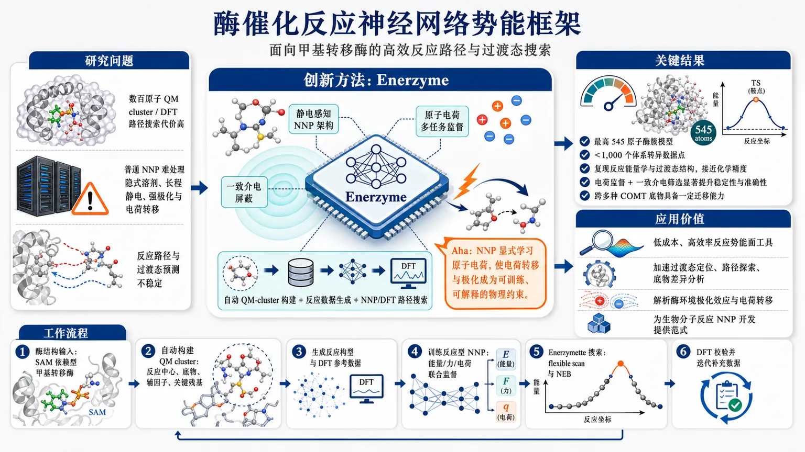
研究问题酶催化反应机制研究依赖 QM cluster/DFT 路径搜索，但数百原子酶簇计算代价极高；普通神经网络势能又难以同时处理大体系、隐式溶剂、长程静电、强极化与反应中的电荷转移，导致反应路径和过渡态预测不稳定。创新方法Enerzyme 将“电静力感知 NNP 架构 + 原子电荷多任务监督 + 一致介电屏蔽 + 自动 QM-cluster 构建 + 反应数据生成 + NNP/DFT 路径搜索”整合成端到端框架；Aha 点是让 NNP 不只拟合能量和力，还显式学习原子电荷，使电荷转移和极化成为可训练、可解释、可稳定路径搜索的物理约束。工作流程从 SAM 依赖型甲基转移酶结构出发，自动构建包含反应中心、底物、辅因子和关键残基的 QM cluster；生成反应相关构型与 DFT 参考数据；用少量体系特异数据训练带静电与电荷监督的反应型 NNP；通过 Enerzymette 在 NNP 层面执行 flexible scan 和 NEB 路径搜索；再用 DFT 校验反应能量、过渡态结构并迭代补充数据。关键结果在最高 545 个原子的甲基转移酶簇模型上，少于 1,000 个体系特异数据点训练出的 NNP 可复现反应能量学和过渡态结构，达到接近化学精度；原子电荷直接监督与一致介电筛选显著提升路径搜索稳定性和准确性；跨多种 COMT 底物表现出一定迁移能力。应用价值为酶催化机制研究提供低成本、高效率的反应势能面工具，可加速过渡态定位、反应路径探索、底物差异分析和酶环境极化效应解析；其可解释电荷描述符有助于理解电荷转移、过渡态稳定化与反应性来源，并为更广泛生物分子反应 NNP 开发提供范式。第一部分：核心概览 (Overview)
Enerzyme 面向酶催化反应机制研究中 QM cluster 与 DFT 代价高、NNP 难以处理大体系极化和电荷转移的问题，提出一套集成式训练与反应路径探索框架。其核心贡献在于把电静力感知 NNP 架构、自动 QM-cluster 构建、反应数据生成、NNP/DFT 路径搜索整合到同一工作流，并在最高 545 原子的甲基转移酶簇模型上，以少于 1,000 个体系特异数据点达到接近化学精度的反应能和过渡态结构预测。
---
第二部分：结构化快速回顾
《Enerzyme: A Framework for Efficient Training of Reactive Neural Network Potentials for Enzyme Catalysis with Application to Methyltransferases》（None，）
背景
QM cluster 模型适合研究酶反应机制，但计算成本高；NNP 可降低成本，却在酶体系中面临大体系规模、隐式溶剂环境、强极化、电荷转移等困难。
方法
Enerzyme 提供集成软件框架，包含模块化 electrostatics-aware NNP 架构、自动 QM cluster 构建和反应数据集生成。Enerzymette 子包支持在 NNP 与 DFT 水平进行反应路径探索。
结果
少于 1,000 个体系特异 datapoints 训练得到的 NNP，可在最高 545 atoms 的 S-adenosyl-L-methionine 依赖型甲基转移酶簇模型中复现反应能量学与过渡态结构，并达到接近化学精度。
讨论
传统数据集误差指标不足以保证反应路径可靠性；iterative flexible scans 与 nudged elastic band calculations 对 NNP 提出更严格要求。直接监督原子电荷与一致的介电筛选可显著提升稳定性和准确性。
局限
可用材料未给出完整正文、实验表格、模型超参数、训练/验证划分、具体误差数值、P 值或消融实验细节；只能确认摘要中报告的体系规模、数据规模和定性结论。
结论
Enerzyme 为酶催化反应的反应型 NNP 训练建立了实用框架，并显示多任务学习原子电荷可同时提升稳定性、捕捉极化/电荷转移趋势、提供反应性描述符；跨多种 COMT 底物的迁移性提示 NNP 可学习更一般的酶反应模式。
---
第三部分：逐章节冷凝解析 (Section-by-Section Condensing)
可用材料仅包含 arXiv 页面元数据与摘要，未包含完整 PDF 正文、章节标题、图表、方法细节、实验表格或补充信息。因此，无法可靠重建“Introduction / Methods / Results / Discussion”等原始章节，也不能臆造不存在于输入材料中的章节标题、数值、P 值、模型参数或直接引文。以下仅按可见原始部分 Abstract 与可见元数据进行证据化解析。
---
Abstract
#### QM cluster models remain useful but computationally expensive
QM cluster models 被定位为酶催化机制研究的有效工具，但核心瓶颈是计算成本高。摘要明确给出研究动机：*"Quantum mechanical (QM) cluster models provide an effective framework for mechanistic studies of enzymatic reactions but remain computationally demanding."* 该表述说明目标问题不是 QM cluster 模型的物理合理性，而是其在大量路径搜索、构象采样和反应坐标探索中的成本不可承受。
#### Enzymes impose harder requirements than small-molecule NNP benchmarks
Neural network potentials (NNPs) 被视为降低 QM 成本的路径，但酶体系区别于小分子基准，具有多重复杂性：体系大、环境复杂、极化强、电荷可迁移。摘要直接列出四类挑战：*"enzymes present challenges beyond small molecules, including large system sizes, implicit-solvent environments, substantial polarization, and charge transfer."* 这意味着常规小分子 NNP 成功经验不能直接外推到酶反应势能面。
#### Enerzyme is an integrated framework for efficient enzyme NNP training
Enerzyme 的定位是一个面向酶机制研究的集成软件框架，目标是提高 NNP 训练效率并服务于反应路径研究。摘要中的核心定义为：*"we present an integrated software framework for efficient NNP training for mechanistic studies of enzymes"*。应用对象为 S-adenosyl-L-methionine-dependent methyltransferases (MTases) 的 QM cluster 模型，即 SAM 依赖型甲基转移酶。
#### The framework combines electrostatics-aware architectures with automated cluster and dataset generation
Enerzyme 的技术组成包含三部分：模块化电静力感知 NNP 架构、自动 QM-cluster 构建、反应数据集生成。摘要原句为：*"Our Enerzyme code introduces modular electrostatics-aware NNP architectures and combines automated QM-cluster construction with reactive dataset generation."* 这里的关键创新点是把模型架构、结构准备、数据生成作为一体化流程，而不是单独训练一个势函数。
#### Enerzymette automates reaction pathway exploration at both NNP and DFT levels
Enerzymette 是 Enerzyme 的子包，负责反应路径探索，并同时支持 NNP 与 DFT 两种能量水平。摘要给出功能边界：*"The Enerzymette subpackage automates reaction pathway exploration at both NNP and DFT levels."* 该设计允许 NNP 路径搜索与 DFT 参考计算之间形成闭环，例如用于路径校正、数据扩充或模型验证。
#### Reaction-path tasks are stricter tests than conventional dataset metrics
传统训练集/验证集误差指标不足以判断 NNP 是否能稳定处理真实反应路径。摘要指出：*"iterative flexible scans and nudged elastic band calculations impose stricter requirements on NNPs than conventional dataset metrics."* 这里的 iterative flexible scans 与 nudged elastic band calculations, NEB 属于反应路径层面的评估，比单点能量/力误差更能暴露势能面局部不连续、错误极小值、错误过渡态和路径不稳定等问题。
#### Less than 1,000 system-specific datapoints can reach near-chemical accuracy
在特定酶体系中，少于 1,000 system-specific datapoints 的训练数据即可使 NNP 复现反应能量学与过渡态结构。摘要给出关键规模与性能结论：*"NNPs trained on fewer than 1,000 system-specific datapoints reproduce reaction energetics and transition-state structures for MTase clusters containing up to 545 atoms with near-chemical accuracy."* 这是一项重要结果，因为酶簇模型最高达到 545 atoms，远大于常规小分子反应势训练对象。
#### Direct charge supervision and consistent dielectric screening improve stability and accuracy
原子电荷监督与一致介电筛选被报告为提升模拟稳定性和准确性的关键因素。摘要明确写道：*"Direct supervision of atomic charges and consistent dielectric screening substantially improve simulation stability and accuracy."* 这说明模型不只拟合总能量/力，还显式学习电荷相关物理量；同时，隐式环境中的介电处理需要在数据生成、训练和推理中保持一致。
#### Multitask-learned atomic charges encode polarization and charge transfer
多任务学习得到的原子电荷不仅是辅助目标，也成为化学解释变量。摘要表述为：*"multitask-learned atomic charges capture charge transfer and polarization trends and provide chemically meaningful descriptors of reactivity."* 这说明电荷输出具有两重作用：提高势能面质量，以及作为解释反应性、极化响应和电子重排的描述符。
#### Transferability emerges across chemically diverse COMT substrates
跨不同儿茶酚 O-甲基转移酶底物的迁移性显示，NNP 随着多酶数据扩展可学习一般化反应模式。摘要给出结论：*"transferability across chemically diverse catechol O-methyltransferase substrates indicates that NNPs learn generalizable reactivity patterns as training data expand across multiple enzymes."* 这一区别于单体系过拟合，指向可扩展的酶反应势训练范式。
#### The framework targets accelerated enzyme mechanistic studies
最终目标是加速酶机制研究，并为后续生物分子反应 NNP 开发提供设计原则。摘要收束为：*"these results establish a foundation for accelerating enzyme mechanistic studies and guide future NNP development for biomolecular reactivity."* 其领域定位不只是单个甲基转移酶案例，而是面向更广泛biomolecular reactivity 的反应型 NNP 基础设施。
---
arXiv metadata
#### The manuscript is classified across chemical physics, machine learning, and biomolecules
学科归类横跨 Chemical Physics、Machine Learning 与 Biomolecules。页面列出主题为：*"Subjects: Chemical Physics (physics.chem-ph) ; Machine Learning (cs.LG); Biomolecules (q-bio.BM)"*。这反映研究对象处于物理化学、机器学习势能面、生物分子反应机制的交叉区域。
#### The submitted version is an arXiv preprint from 1 July 2026
可见版本为 arXiv 预印本，提交时间为 1 Jul 2026。页面记录为：*"[Submitted on 1 Jul 2026]"*，版本历史为：*"[v1] Wed, 1 Jul 2026 18:24:10 UTC"*。因此，其结论需按预印本证据等级理解，尚不能据此确认同行评审状态。
#### The named application system is SAM-dependent methyltransferases
标题与摘要均指定应用方向为 methyltransferases。标题为：*"Enerzyme: A Framework for Efficient Training of Reactive Neural Network Potentials for Enzyme Catalysis with Application to Methyltransferases"*；摘要进一步限定为：*"S-adenosyl-L-methionine-dependent methyltransferases (MTases)."* 反应类型集中在 SAM 供甲基的甲基转移反应。
---
第四部分：深度理解与语言支持 (Understanding & Nuance)
1. 术语解析
#### Reactive neural network potentials
Reactive neural network potentials 指可描述化学键断裂、形成以及过渡态区域的机器学习势能函数，不只是用于平衡构象采样的非反应型力场。这里的 “reactive” 强调势能面必须覆盖反应物、产物、过渡态和反应路径附近的高能区域，因此比普通分子动力学 NNP 更困难。
#### Electrostatics-aware NNP architectures
Electrostatics-aware 的含义不是简单加入库仑项，而是模型架构显式考虑电荷、长程静电、极化或介电屏蔽等因素。对于酶簇模型，反应中心附近的电子重排会受到蛋白残基、辅因子、底物和隐式溶剂的共同影响；忽略静电一致性可能导致路径搜索发散或过渡态错误。
#### Implicit-solvent environments
Implicit solvent 指不显式放置大量水分子，而用连续介质或介电模型近似溶剂/环境效应。在酶 QM cluster 中，这通常用于模拟蛋白外部或溶剂环境的极化响应。微妙之处在于：如果 DFT 数据生成使用某种介电设定，而 NNP 训练或推理阶段未保持一致，模型学习到的能量面会混合不一致的环境假设。
#### Nudged elastic band calculations
Nudged elastic band, NEB 是寻找反应物到产物之间最小能量路径的方法，通过一串 “images” 表示路径，并用弹簧力维持路径分布。它比单点测试严格，因为每个 image 的力方向、切向投影和势能梯度都必须合理；局部误差可能把路径推向错误通道。
#### Near-chemical accuracy
Near-chemical accuracy 通常接近化学精度量级，常见经验标准约为 1 kcal/mol，但可用材料未给出该论文采用的精确定义。这里应谨慎理解为反应能量学误差接近化学机制研究可接受范围，而不是必然等于严格的 1 kcal/mol。
---
2. 疑难查证
#### 为什么普通数据集误差低，不代表反应路径可靠？
能量 MAE 或力 MAE 通常在随机划分的测试集上计算，主要反映模型对已采样构型分布的平均拟合能力。反应路径搜索不同：优化算法会主动沿着模型势能面寻找低能通道，任何局部伪极小值、错误斜率或过软键长都会被放大。
因此，一个 NNP 可以在测试集上误差很小，却在 NEB 或 flexible scan 中给出错误的过渡态、断裂路径或非物理构型。摘要中 “iterative flexible scans and nudged elastic band calculations impose stricter requirements” 的核心含义正是：动态使用模型寻找路径比静态评估已知构型更难。
#### 为什么电荷监督会改善酶反应 NNP？
酶反应常包含局部电荷重排，例如亲核体进攻、甲基迁移、离去基团形成、氢键网络极化等。若 NNP 只学习总能量和力，模型可能用几何相关的黑箱特征间接拟合这些效应，但外推到新底物或新路径时不稳定。
加入原子电荷监督后，模型被迫学习与电子结构相关的中间变量。多任务学习相当于给模型加入化学约束，使其不仅拟合能量，还保持合理的电荷转移趋势。这也是为什么摘要强调原子电荷可作为 “chemically meaningful descriptors of reactivity”。
#### 为什么酶 NNP 比小分子 NNP 更难？
小分子反应通常原子数少、环境明确、长程静电较弱，训练数据可覆盖较完整的反应构型空间。酶簇模型则包含数百个原子，反应中心周围存在蛋白残基、辅因子、底物、氢键网络、隐式溶剂和长程极化。
即使真正成键变化发生在少数原子上，其能垒和过渡态几何仍可能受到远端带电残基或偶极环境影响。因此，酶反应 NNP 需要同时捕捉局部反应化学与非局部长程电静力调制。
---
第五部分：创新评估与关联 (Synthesis & Novelty)
1. 创新性判断
#### 从单一模型训练转向端到端酶反应工作流
过去 2–5 年，机器学习势能在小分子反应、材料体系和部分生物分子构象采样中已快速发展；但酶催化机制研究需要的不只是一个 NNP，而是从 QM cluster 构建、反应数据生成、路径搜索、DFT 校验到模型迭代的完整链条。Enerzyme 的新颖性在于把这些步骤整合为面向酶催化的工作流，降低了反应型 NNP 在真实酶体系中的使用门槛。
#### 针对酶反应引入电静力一致性设计
酶体系中的隐式溶剂、极化和电荷转移是 NNP 迁移失败的重要来源。Enerzyme 强调 direct supervision of atomic charges 与 consistent dielectric screening，把静电物理约束纳入训练和模拟流程。相比仅依赖能量/力拟合的通用 NNP，这更贴近酶反应势能面的决定因素。
#### 用反应路径任务而非普通测试误差检验 NNP
传统 NNP 论文常报告训练/测试能量误差和力误差；Enerzyme 强调 iterative flexible scans 与 NEB calculations 才是更严格的反应机制检验。这一点具有方法学价值：酶反应 NNP 的质量标准应从“静态拟合准确”升级为“可稳定驱动反应路径探索”。
#### 在数百原子酶簇上实现少数据训练
少于 1,000 个体系特异 datapoints 即可处理最高 545 atoms 的 MTase cluster，并复现反应能量学和过渡态结构，这对酶机制研究具有实用意义。其创新不是单纯追求更大模型，而是证明在合理数据生成与物理约束下，中等规模数据即可训练可用的反应型 NNP。
#### 将原子电荷从辅助变量提升为反应性描述符
多任务学习电荷不仅提升模型稳定性，还可捕捉 charge transfer 与 polarization trends，并作为解释反应性的化学描述符。这使 NNP 从纯加速器变成可解释工具，有助于分析底物差异、过渡态稳定化和酶环境调控。
#### 初步展示跨底物和跨酶扩展的可能性
跨化学多样性 COMT 底物的迁移性表明，随着训练数据覆盖多个酶体系，NNP 可能学习到一般化的甲基转移反应模式。这回应了前人工作中常见的局限：模型在单一底物或单一路径上表现良好，但难以转移到新的酶-底物组合。
2. 解决的前人未充分解决问题
- 酶簇模型过大导致 DFT 路径搜索昂贵：通过 NNP 加速反应能量面探索。
- 小分子 NNP 难以直接迁移到酶体系：引入电静力感知架构、介电一致性和电荷监督。
- 常规误差指标不足以保证机制可靠性：以 flexible scan 和 NEB 作为更严格验证。
- 反应 NNP 缺乏自动化数据生成与路径探索闭环：Enerzyme 与 Enerzymette 形成集成流程。
- 模型可解释性不足：多任务电荷学习提供极化、电荷转移和反应性分析线索。
-
02
📄 摘要：考察量子经典混合神经网络在 COVID-19 推文情感分析中的表现。文本经 TF-IDF 向量化后输入经典前馈网络和含参数化量子线路的混合结构，比较量子机器学习架构在自然语言分类任务中的适用性。
💡 亮点：该工作把参数化量子线路嵌入 TF-IDF 推文情感分类模型。虽不属于材料体系，但可作为量子机器学习在小规模分类任务中的架构测试。
📖 展开分析 + 配图
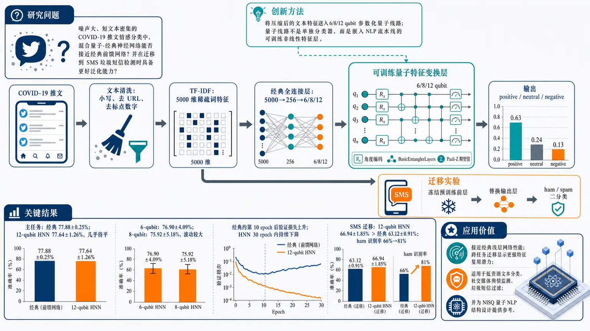
研究问题在噪声大、短文本密集的 COVID-19 推文情感分类中，混合量子-经典神经网络能否替代或接近经典前馈网络，并在跨任务迁移到 SMS 垃圾短信检测时表现出更好的泛化能力。创新方法将 5000 维 TF-IDF 文本向量先由经典层压缩，再送入 6/8/12 qubit 参数化量子线路；用 Rx 角度编码把文本特征变成量子旋转，用 BasicEntanglerLayers 制造量子比特纠缠，再用 Pauli-Z 期望值作为新的非线性特征输出。Aha 点是：量子线路不是单独分类器，而是嵌入 NLP 流水线中的“可训练量子特征变换层”。工作流程输入 COVID-19 推文 → 文本清洗：小写、去 URL、去标点数字 → TF-IDF 生成 5000 维稀疏词特征 → 经典全连接层压缩到 256 维 → 再压缩到 6/8/12 个量子输入 → Rx 角度嵌入量子比特 → 两层纠缠量子线路处理 → 测量每个量子比特的 Pauli-Z 期望值 → 经典输出层生成 positive、neutral、negative 三分类概率；迁移实验中冻结预训练前层，改为 ham/spam 二分类。关键结果主任务上经典模型测试准确率最高，为 77.88±0.25%；12-qubit HNN 达到 77.64±1.26%，几乎持平；6-qubit 和 8-qubit HNN 分别为 76.90±4.09% 与 75.92±5.18%，波动较大。经典模型约第 10 个 epoch 后验证损失上升，显示早期过拟合；HNN 验证损失在 30 个 epoch 内持续下降。迁移到 SMS 垃圾短信检测时，12-qubit HNN 准确率 66.94±1.85%，高于经典模型 63.12±0.91%，主要提升来自 ham 正常短信识别率从 66% 到 81%。应用价值证明混合量子-经典模型可以嵌入真实 NLP 分类流程，在主任务性能接近经典浅层网络，并在跨任务迁移中显示更强特征复用潜力。适合用于探索低资源文本分类、社交媒体舆情监测、垃圾短信过滤等场景，也为未来在 NISQ 量子硬件上设计量子 NLP 模型提供结构参考。第一部分：核心概览 (Overview)
该研究将混合量子-经典神经网络用于 COVID-19 推文情感分析，并与经典前馈网络系统比较。核心贡献在于：以 TF-IDF + 参数化量子线路构建可端到端训练的 NLP 分类框架，评估 6/8/12 qubit 量子层的表现，并进一步测试跨任务迁移到 SMS 垃圾短信分类。主任务上 12-qubit HNN 接近经典基线，迁移任务上 HNN 整体优于经典模型，显示量子层可能增强泛化与特征迁移能力，但稳定性和可训练性仍是主要瓶颈。
---
第二部分：结构化快速回顾
《Hybrid quantum-classical neural network for sentiment analysis》（None，）
背景
情感分析是 NLP 的核心任务，常用于社交媒体监测、公共卫生舆情和政治分析。经典深度学习模型性能强，但依赖大规模数据和高算力。量子机器学习通过叠加、纠缠和高维 Hilbert 空间提供潜在替代路径，尤其适合探索小规模、复杂特征映射和泛化能力。
方法
COVID-19 推文数据集包含 41,159 条训练推文和 3,798 条测试推文，类别为 positive、neutral、negative。文本经清洗后用 TF-IDF 表示为 5,000 维稀疏向量。经典基线为 5000 → 256 → 3 的前馈网络。混合模型先经经典层压缩，再输入 6、8、12 qubit 的参数化量子线路，采用 angle embedding、BasicEntanglerLayers、Pauli-Z expectation values，最后经经典层输出三分类概率。
结果
COVID-19 情感分类中，经典模型测试准确率最高，为 77.88 ± 0.25%；12-qubit HNN 为 77.64 ± 1.26%，几乎持平；6-qubit 和 8-qubit HNN 分别为 76.90 ± 4.09% 与 75.92 ± 5.18%，方差较大。训练动态显示经典模型约第 10 epoch 后验证损失上升，而 HNN 验证损失持续下降。
讨论
HNN 未在主任务上超过经典基线，但显示出不同学习动态，尤其是更慢但持续的验证损失下降。12-qubit 模型表现优于较小量子层，提示量子线路表达能力与可训练性之间存在权衡。
局限
所有量子组件均为无噪声经典模拟，未验证真实量子硬件表现。6/8-qubit HNN 方差大，受初始化和随机优化影响明显。迁移实验未比较“无迁移学习”基线，难以隔离迁移机制本身的贡献。摘要中“spam class 从 66% 到 81%”与正文“ham majority class 从 66% 到 81%”存在表述不一致。
结论
混合量子-经典模型可嵌入传统 NLP 流水线，在主任务上达到接近经典网络的性能，在 SMS 迁移任务上整体优于经典模型。未来价值取决于更优 ansatz、纠缠结构、量子超参数调节、噪声建模和真实 NISQ 硬件验证。
---
第三部分：逐章节冷凝解析 (Section-by-Section Condensing)
Abstract
Hybrid QML is positioned as a feasible NLP framework
量子机器学习被定位为一种利用量子线路表达能力处理复杂学习任务的范式，研究对象是 NLP 中的核心任务——情感分析。摘要直接给出研究范围：*"we investigate the applicability of hybrid quantum–classical neural networks to sentiment analysis, a central problem in natural language processing."* 任务设置为 COVID-19 推文情感分类，文本通过 TF-IDF 向量化后输入经典网络和混合量子-经典网络：*"the textual content is vectorized using TF-IDF and fed into both classical feedforward networks and hybrid architectures incorporating parameterized quantum circuits."*
Comparable main-task accuracy and distinct learning dynamics
主情感分类任务中，混合模型未显著超过经典基线，而是达到相近准确率；关键差异在于学习曲线，尤其是验证损失和验证准确率的动态表现。摘要表述为：*"hybrid models can achieve accuracy comparable to the classical baseline, while exhibiting distinct learning dynamics, especially in terms of validation loss and accuracy, that suggest a richer representational capacity."* 这里的核心主张不是“量子优势”已经被证明，而是学习动态差异可能暗示更丰富的表示能力。
Transfer learning gives hybrid models an apparent advantage
迁移到 SMS 垃圾短信分类时，混合模型优于经典模型；摘要声称 spam 类准确率从 66% 到 81%，增加 15 个百分点：*"the hybrid models consistently outperform the classical counterpart, achieving an accuracy increase of 15 percentage points (from 66% to 81%) on the spam class, demonstrating enhanced generalization."* 但正文 3.1 节将 66% → 81% 明确归因于 ham majority class 的 true negative rate，而非 spam 类，构成一个需要谨慎处理的内部不一致。
---
1 Introduction
Sentiment analysis is framed as a foundational NLP task
情感分析被定义为从文本中自动提取和分类主观信息，包括情绪、观点和态度：*"Sentiment analysis is a foundational task in natural language processing (NLP), that deals with the automatic extraction and classification of subjective information such as emotions, opinions, and attitudes from text."* 其重要性来自用户生成内容的大规模增长，使得不同领域的公共情绪可被实时捕捉：*"large-scale public sentiment in real time across diverse domains."*
Twitter is a high-value but noisy sentiment source
Twitter 被强调为情感分析常用数据源，因为其内容具有高容量、时效性强、观点密集的特点：*"Twitter, in particular, has been widely used as a data source due to its high-volume, time-sensitive, and opinion-rich content."* 这些特性在 COVID-19 这类快速演化事件中尤其重要，因为社交媒体文本可用于观察群体行为：*"especially during rapidly evolving events such as the COVID-19 pandemic."*
Classical machine learning methods have known semantic limitations
早期情感分析依赖 Naive Bayes、SVM、maximum entropy models 等传统机器学习方法：*"Traditional approaches of sentiment analysis techniques were initially informed by machine learning methods such as Naive Bayes, Support Vector Machines (SVMs), and maximum entropy models."* 这些模型的问题在于难以处理上下文线索、讽刺和领域迁移：*"these models often struggle to capture contextual cues or sarcasm and domain shifts."*
Deep learning improves semantic modeling but increases resource demands
CNN、RNN、Transformer 被描述为当前强势方法，能够学习复杂语义关系：*"Deep learning architectures have since become the state of the art, with convolutional neural networks (CNNs), recurrent neural networks (RNNs) and transformer-based models demonstrating superior capacity to learn complex semantic relationships."* 但其代价是需要大量训练语料和计算资源：*"these models typically require large training corpora and significant computational resources, raising questions about scalability, efficiency, and interpretability."*
QML motivation rests on superposition, entanglement, and Hilbert-space expressivity
量子机器学习的潜在优势来自量子系统的计算属性，包括叠加、纠缠、高维 Hilbert 空间：*"Quantum machine learning represents a promising alternative paradigm by exploiting the computational properties of quantum systems, including superposition, entanglement, and high-dimensional Hilbert spaces."* 变分量子线路 VQC被定位为可通过梯度优化训练的参数化量子模型：*"Variational quantum circuits (VQCs) have emerged as a flexible tool for constructing parametrized quantum models that can be trained via gradient-based optimization."*
Hybrid quantum-classical neural networks enable end-to-end integration
HNN 将经典层与量子层结合，使量子模型可嵌入端到端可训练架构：*"Hybrid quantum–classical neural networks (HNNs) combine classical layers with quantum layers, enabling quantum models to be integrated into end-to-end trainable architectures."* 该研究的定位不是纯量子 NLP，而是经典特征处理 + 量子非线性变换 + 经典输出层的混合架构。
Sentiment-analysis applications of QML remain underexplored
尽管 QML 已用于分类、图像识别、异常检测和 NLP，但情感分析中的应用仍有限：*"applications of QML to sentiment analysis remain limited, and the potential benefits of hybrid architectures in this domain are not yet fully understood."* 研究空缺集中在：混合量子架构是否能在真实文本任务中提供可观察收益、在哪些条件下有效、是否改善泛化。
The empirical design compares classical and 6/8/12-qubit hybrid models
实验比较一个经典前馈网络与包含 6、8、12 qubit 参数化量子线路的 HNN：*"We compare a classical feedforward neural network with hybrid architectures that incorporate parameterized quantum circuits with 6, 8, and 12 qubits."* 特征编码采用 angle embedding，量子测量使用 Pauli-Z expectation values：*"Classical features are encoded through angle embedding, followed by entangling operations and measurement of Pauli-Z expectation values."* 所有量子组件均为经典模拟：*"All quantum components are simulated classically."*
Transfer learning is used to assess cross-task generalization
除 COVID-19 情感分类外，还迁移到 SMS spam detection：*"we perform transfer learning experiments on a spam detection dataset to assess the generalization and adaptability of hybrid models across tasks."* 该设计把 HNN 的价值评估从单任务准确率扩展到跨任务特征迁移能力。
---
2 Methods
2.1 Dataset
The primary dataset contains 44,957 COVID-related tweets
COVID-19 推文数据集被人工标注为 positive、neutral、negative 三类。训练集包含 41,159 条推文，其中 18,046 positive、15,398 negative、7,712 neutral；测试集包含 3,798 条推文，其中 1,546 positive、1,633 negative、619 neutral。原始描述为：*"The dataset is split into a training set of 41,159 tweets (18,046 positive, 15,398 negative, and 7,712 neutral) and a test set of 3,798 tweets (1,546 positive, 1,633 negative, and 619 neutral)."* 类别分布不均衡，neutral 类明显少于 positive 和 negative。
Only tweet text and label fields are retained
原始数据还包含用户位置和时间戳等元数据，并经过匿名化：*"the raw data includes metadata such as user location and timestamp, with identifying information anonymized to preserve privacy."* 实验只保留 Original Tweet 和 Label 字段：*"For our experiments, we retain only the Original Tweet and Label fields."* 因此模型不利用时空信息、用户信息或传播结构。
Text preprocessing removes common noise sources
预处理包括全部小写化、去除 URL、标点、数字和非字母字符：*"lowercasing all text, removing URLs, punctuation, numbers, and non-alphabetic characters."* 清洗后的文本用于特征提取：*"The resulting clean text forms the basis for feature extraction."* 该处理适合 TF-IDF，但会丢失 emoji、hashtag 结构、大小写强调、数字信息等社交媒体情绪线索。
---
2.2 Feature extraction
TF-IDF provides a sparse 5,000-dimensional text representation
文本表示采用 TF-IDF，将每条推文映射为固定长度向量，并根据词项在文档中的频率与全局分布加权：*"TF-IDF maps each document to a fixed-length vector by weighting term frequencies against their global distribution in the corpus."* 其作用是降低常见词权重、突出区分性词项：*"common words that carry little information are downweighted, while more distinctive terms are emphasized."*
Vectorizer hyperparameters are explicitly specified
TfidfVectorizer 参数为 min_df=1、max_df=0.95、max_features=5000：*"min_df=1, to include all words appearing at least once; max_df=0.95, to exclude extremely frequent words; and max_features=5000, to retain the 5,000 most informative terms."* 训练集通过 fitₜᵣₐₙₛform 得到每条推文 5,000 维稀疏向量，测试集使用同一变换：*"fit on the training set using fitₜᵣₐₙₛform, producing sparse vectors of dimension 5,000 for each tweet. The same transformation was then applied to the test set using transform."*
Word2Vec was tested but rejected
Word2Vec 也被尝试用于语义向量表示：*"we also experimented with Word2Vec embeddings, which encode semantic relationships in a continuous vector space."* 但由于推文短且噪声大，性能未改善：*"given the brevity and noisiness of tweets, Word2Vec did not improve performance, likely due to the lack of sufficient contextual information in short messages."* 这说明特征工程选择并非盲目使用传统稀疏方法，而是在短文本场景下保留了更稳定的 TF-IDF。
---
2.3 Neural Network
The classical baseline is a compact feedforward network
经典神经网络基线使用 5,000 维 TF-IDF 输入：*"Each tweet is represented as a sparse 5,000-dimensional vector, which serves as the input to the model."* 结构为：输入层 5000，隐藏全连接层 256 neurons，ReLU 激活，dropout rate=0.3，输出层 3 neurons，经 softmax 得到 positive、neutral、negative 概率：*"one hidden fully connected layer with 256 neurons, followed by a ReLU activation; a dropout layer with a rate of 0.3; an output layer with 3 neurons."*
The baseline reduces dimensionality while learning latent features
该网络把稀疏 TF-IDF 表示压缩为较低维潜在特征：*"This simple design reduces the dimensionality of the TF-IDF representation while enabling the model to learn compact latent features."* 它被用作混合量子架构的强经典对照：*"provides a strong classical baseline for comparison with hybrid quantum architectures."*
---
2.4 Hybrid Neural Networks
HNNs insert quantum circuits as differentiable modules
混合神经网络 HNN 将量子线路作为经典神经网络中的模块组件：*"Hybrid Neural Networks (HNNs) integrate quantum circuits as modular components within classical neural network architectures."* 其训练目标是联合优化经典和量子参数：*"allowing the network to jointly optimize classical and quantum parameters in a fully differentiable framework."*
Parameterized quantum circuits act as nonlinear feature extractors
经典数据通过参数化量子线路编码进量子态，量子线路作为非线性特征提取器：*"Classical data is encoded into quantum states via parameterized quantum circuits (PQCs), which act as non-linear feature extractors."* 测量输出通常为某些可观测量的期望值，再传入经典层：*"The outputs of quantum measurements, typically expectation values of selected observables, are then fed into classical layers."*
Qubit formalism establishes the quantum representation space
量子比特位于二维 Hilbert 空间，任意态可写成 (|ψångle=α|0ångle+β|1ångle)，满足归一化条件：*"An arbitrary qubit state can be written as |ψ⟩ = α|0⟩ + β|1⟩, |α|² + |β|² = 1."* 也可用 Bloch 球角度形式表达：*"or equivalently as |ψ⟩ = cos θ/2 |0⟩ + eⁱφ sin θ/2 |1⟩."*
Gate set includes single-qubit rotations and entangling controlled gates
单量子门属于 ( U(2) )，包括 Pauli X/Y/Z、Hadamard、Rx/Ry/Rz：*"Single-qubit gates correspond to matrices in U(2), the group of 2×2 unitaries, including the Pauli gates."* 多量子比特受控门用于引入纠缠：*"Multi-qubit controlled gates introduce entanglement, which is crucial for capturing correlations between features."* 具体受控门包括 CX 和 CZ。
The hybrid architecture compresses TF-IDF features before quantum processing
HNN 的经典前端包含两个全连接层：第一层将 5000 维 TF-IDF 压缩到 256 维潜在空间，带 ReLU 和 dropout；第二层将特征压缩到量子比特数 6、8 或 12：*"the first reduces the 5000-dimensional TF-IDF vectors to a 256-dimensional latent space with ReLU activation and dropout for regularization, while the second layer further compresses the features to match the number of qubits in the quantum circuit."*
Angle encoding maps classical features to qubit rotations
经典特征通过 angle encoding 嵌入量子层，每个输入控制一个量子比特的旋转：*"Classical features are embedded into the quantum layer via angle encoding, where each input controls the rotation of a single qubit."* 这意味着进入量子线路的特征维度必须等于 qubit 数量，因此 5000 维文本信息在量子层前被强压缩为 6/8/12 维。
Pauli-Z expectation values become quantum-layer outputs
量子比特经受控操作纠缠后，在计算基下测量，输出 Pauli-Z 可观测量期望值：*"measurements in the computational basis produce expectation values of Pauli-Z observables."* 这些期望值被视为输入特征的非线性变换：*"which serve as a non-linear transformation of the input features."* 最终经经典线性层映射到三类 sentiment logits，并通过 softmax 输出概率。
Quantum and classical gradients use different mechanisms
经典参数通过标准反向传播求梯度：*"Gradients of classical parameters are computed via standard backpropagation."* 量子参数通过 parameter-shift rule 求梯度：*"gradients of quantum parameters are obtained using the parameter-shift rule."* 这种机制允许整体架构端到端优化：*"enabling end-to-end optimization."*
The design is motivated by NISQ compatibility
HNN 被描述为结合量子线路表达能力与经典网络可扩展性，且可在当前 NISQ 硬件限制下训练：*"remaining trainable on current noisy intermediate scale quantum (NISQ) hardware."* 不过实际实验使用无噪声模拟，并未运行在真实 NISQ 设备上。
---
2.5 Implementation
Quantum layers are implemented in PennyLane QNodes
量子层实现为 PQC，封装在 PennyLane QNode 中，作用于 (Q) 个量子比特，(Q in 6,8,12)：*"The quantum layer is implemented as PQC, within a Pennylane QNode, acting on Q qubits, with Q taking the values 6, 8, or 12."*
Angle embedding uses Rx rotations
输入特征通过 angle embedding 编码，每个特征决定对应量子比特上的 Rx gate 旋转角：*"each feature determines the rotation angle of an Rx gate applied to a corresponding qubit."* 这将经典输入映射到量子振幅：*"effectively mapping the input vector into the quantum amplitudes."*
The PQC uses two BasicEntanglerLayers
量子线路包含 two layers of the BasicEntanglerLayers template：*"The circuit then applies two layers of the BasicEntanglerLayers template."* 每层结合参数化单量子比特旋转与量子比特间纠缠操作：*"Each layer combines parameterized single-qubit rotations with entangling operations across the qubits."* 这些可训练参数让量子线路在训练中自适应调整：*"introducing trainable parameters that allow the quantum circuit to adapt during training while maintaining qubit entanglement."*
Each qubit produces one Pauli-Z expectation output
线路末端对每个量子比特测量 Pauli-Z operator，产生 (Q) 个输出：*"Measurements of the Pauli-Z operator are performed on each qubit at the end of the circuit, producing Q outputs."* 这些期望值输入到后续经典层：*"These expectation values serve as the output of the quantum layer and are fed into subsequent classical layers."*
The simulation is noiseless and classical
所有量子组件都在无噪声经典模拟环境执行：*"All quantum components are executed in a noiseless classical simulation environment."* 因此结果不包含真实量子硬件中的退相干、门噪声、测量误差、有限 shots 或连接性限制。
Experiments use 5 independent runs and 30 epochs
每个实验重复 5 次独立运行，随机种子不同：*"Each experiment is repeated over 5 independent runs with different random seeds."* 每次训练中，训练集的 15% 被留作验证集：*"15% of the training set is set aside as a validation subset."* 训练持续 30 epochs：*"Training is performed for 30 epochs."*
Optimization settings are fully specified
损失函数为 cross-entropy loss：*"using the cross-entropy loss as the objective function."* 类别不平衡通过逆频率损失权重处理：*"loss weights are computed from the inverse frequency of each sentiment class."* 优化器为 Adam，学习率 10⁻⁴，weight decay 10⁻⁵：*"Adam with a learning rate of 10−4 and a weight decay of 10−5."* 学习率调度器为 StepLR，每 20 epochs 衰减一半：*"A StepLR scheduler reduces the learning rate by half every 20 epochs."* mini-batch 大小为 64：*"mini-batches of size 64 are used throughout."*
Model selection uses lowest validation loss
每次运行保留验证损失最低的模型状态用于测试：*"The model state achieving the lowest validation loss is retained for evaluation on the test set."* 最终性能报告为 5 次运行的平均测试准确率：*"performance is reported as the average test accuracy over the 5 runs."*
---
3 Results
Training curves are averaged over 5 runs and 30 epochs
训练/验证损失与准确率以均值和标准差展示，覆盖经典模型与 6、8、12 qubit HNN：*"The figures present the results over 5 independent runs, each consisting of 30 training epochs, for the classical neural network and the hybrid neural networks with 6-, 8-, and 12-qubit quantum layers."*
The classical model is the most stable across runs
经典神经网络在准确率和损失上跨运行方差最低：*"the classical neural network exhibits the most consistent behavior across runs, with relatively low variance in both accuracy and loss."* 这与表 1 中 77.88 ± 0.25% 的极低标准差一致。
The 12-qubit HNN shows the strongest hybrid training dynamics
12-qubit HNN 在 30 epoch 结束时达到最高训练/验证准确率和最低验证损失：*"the 12-qubit HNN achieves the highest training and validation accuracy and the lowest validation loss at the end of the 30 epochs."* 这说明较大 qubit 数可能提供更强表达能力，但测试准确率仍略低于经典模型。
Smaller hybrid models are unstable
6-qubit 与 8-qubit HNN 表现出更高方差和整体较低性能：*"The other hybrid models show higher variability, with substantially larger standard deviations across all metrics and overall lower performance."* 测试准确率分别为 76.90 ± 4.09% 和 75.92 ± 5.18%，标准差远高于经典模型和 12-qubit HNN。
The classical model appears to overfit early
经典模型大约在第 10 epoch 达到最小验证损失，之后验证损失开始上升：*"the classical model reaches its minimum validation loss early, around epoch 10, but the loss subsequently begins to increase, suggesting potential early overfitting."* 这显示经典网络虽稳定，但可能较快记忆训练模式并降低验证泛化。
Hybrid models continue reducing validation loss
HNN 的验证损失在训练期间持续下降：*"the hybrid networks continue to reduce the validation loss throughout training."* 这被解释为更复杂架构随时间捕获数据模式的能力：*"indicating that the more complex architecture allows them to capture data patterns more effectively over time."*
Main-task test accuracy favors the classical model by a small margin
表 1 的测试准确率为：经典 77.88 ± 0.25%，Hybrid 6q 76.90 ± 4.09%，Hybrid 8q 75.92 ± 5.18%，Hybrid 12q 77.64 ± 1.26%。原表说明为：*"Mean accuracy and standard deviation (expressed in percentage) over 5 runs."* 经典模型平均最高，但 12-qubit HNN 仅低 0.24 个百分点，几乎持平。
6q and 8q sensitivity indicates optimization fragility
6-qubit 和 8-qubit HNN 的高方差被归因于初始化和随机优化敏感：*"The 6- and 8-qubit hybrid networks show higher variance, indicating sensitivity to initialization and stochastic optimization."* 这意味着小量子线路不一定更容易训练，可能因表达不足、梯度景观不稳定或压缩过强导致性能波动。
Confusion matrices analyze class-specific errors
混淆矩阵元素 ((i,j)) 表示真实类别为 (i)、预测为 (j) 的样本比例：*"Each element (i,j) of the matrix represents the percentage of instances whose true label is i and that are predicted as j."* 类别编码为 0 negative、1 neutral、2 positive：*"class labels are numeric: 0 for negative sentiment, 1 for neutral sentiment, and 2 for positive sentiment."*
Classical and 12-qubit models are more balanced
经典模型与 12-qubit HNN 被描述为平衡且可靠：*"Both the classical model and the 12-qubit HNN display balanced and reliable classification."* 6-qubit 与 8-qubit HNN 出现类别权衡：*"the 6- and 8-qubit hybrid models show different trade-offs."*
8-qubit and 6-qubit models show different class-level weaknesses
8-qubit HNN 对 positive 类表现较差：*"the 8-qubit network exhibits reduced performance on the positive sentiment class."* 6-qubit HNN 提高 positive 类表现，但牺牲 neutral 类预测：*"the 6-qubit model improves performance on the positive class at the expense of neutral sentiment predictions."* 这说明不同 qubit 数改变了错误分布，而不仅仅影响总准确率。
---
3.1 Transfer learning
Transfer learning is used to test adaptation rather than compare against no-transfer baselines
迁移学习通常利用源任务知识提升相关目标任务性能：*"Transfer learning enables models to exploit knowledge gained from one task to enhance performance on a related but distinct task."* 这里的使用方式不同：先在 COVID 推文上训练部分层，再在新数据集上测试适应能力：*"we train a portion of the layers of our networks on the COVID tweets set and test the models on a new dataset, to evaluate their ability to adapt to a different task."* 研究并未比较有无迁移学习：*"we do not compare the performance of the networks with and without transfer learning."*
The target dataset is SMS Spam Collection with 5,574 messages
迁移任务使用 SMS Spam Collection Dataset，包含 5,574 条消息，标签为 ham 或 spam：*"the SMS Spam Collection Dataset, which contains 5574 messages labeled as either ham (legitimate) or spam."* 该数据集在规模和任务形式上不同于 COVID 情感数据：*"differs from the original COVID-related sentiment dataset in size and task formulation."*
Architectures are adapted from three-class to binary classification
经典和混合模型的输出层由 3 neurons 改为 2 neurons，对应 ham 与 spam：*"the original output layer of 3 neurons ... is replaced by an output layer of 2 neurons, corresponding to ham and spam."* 混合模型仍测试 6、8、12 qubit：*"Hybrid models are tested with 6-, 8-, and 12-qubit quantum layers."*
Pretraining freezes the first two layers
迁移流程第一阶段为 pretraining：经典和混合模型的前两层在 COVID 情感训练集上预训练，然后冻结：*"the first two layers of both classical and hybrid models are pretrained on the COVID sentiment training set. These pretrained layers are then frozen."* 这意味着目标任务只能调整后部分类组件，而共享底层文本特征。
Fine-tuning differs between classical and hybrid models
第二阶段为 fine-tuning。经典模型只训练输出层；混合模型训练量子层和输出层：*"for the classical model, the output layer is trained on 80% of the SMS spam dataset. For the hybrid models, both the quantum layer and the output layer are trained on the same subset."* SMS 数据的 80% 用于训练，20% 用于测试：*"The remaining 20% of the SMS dataset is reserved for testing."*
Hybrid models outperform the classical baseline in transfer accuracy
迁移后测试准确率为：经典 63.12 ± 0.91%，Hybrid 6q 65.08 ± 1.28%，Hybrid 8q 66.01 ± 3.06%，Hybrid 12q 66.94 ± 1.85%。表述为：*"hybrid models consistently outperform the classical baseline in both overall accuracy and class-specific performance."* 12-qubit HNN 比经典高 3.82 个百分点。
The main transfer gain comes from ham classification, not spam recall
混淆矩阵显示性能提升主要来自多数类 ham 的更好识别，true negative rate 从经典模型 66% 提高到 12-qubit HNN 81%：*"the performance improvement in hybrid models is primarily due to better classification of the majority class (ham), with true negative rates increasing from 66% for the classical model to 81% for the 12-qubit hybrid."* 少数类 spam 表现基本稳定：*"Performance on the minority class (spam) remains relatively stable."*
The abstract–results discrepancy matters for interpretation
摘要声称提升发生在 spam class：*"achieving an accuracy increase of 15 percentage points (from 66% to 81%) on the spam class."* 正文结果却明确指出提升发生在 majority class (ham)：*"better classification of the majority class (ham), with true negative rates increasing from 66% ... to 81%."* 因此不能把该迁移结果解读为 HNN 显著改善了垃圾短信召回；更准确的结论是 HNN 减少了 ham 被误判为 spam 的 false positives。
Class imbalance and domain shift explain asymmetric improvement
迁移任务中的不对称提升可能来自类别不平衡或预训练引入的领域迁移：*"This asymmetry may arise from class imbalance or domain shift introduced during pretraining."* COVID 推文情感分类与 SMS 垃圾短信检测在文本风格、标签语义和判别线索上差异明显，冻结前层可能保留部分通用词汇模式，但不一定捕获 spam 特异信号。
---
4 Conclusions
Classical baseline remains stable and reliable
经典模型由全连接层、ReLU 和 dropout 构成，提供稳定可靠基线：*"The classical model, composed of fully connected layers with ReLU activations and dropout, provided a stable and reliable baseline."* 其表现为高平均准确率与低方差：*"achieving high mean accuracy with low variance."*
Hybrid models embed PQCs with 6/8/12 qubits
HNN 通过在经典结构中嵌入 PQC 构建，量子层大小为 6、8、12 qubits：*"Hybrid neural networks were constructed by embedding PQCs within classical architectures, with quantum layers of 6, 8, and 12 qubits."* 特征经 angle embedding 编码，受控门纠缠，Pauli-Z 期望值测量后传给经典层：*"Classical features were encoded via angle embedding, qubits were entangled through controlled gates, and expectation values of Pauli-Z operators were measured."*
Noiseless simulation limits hardware-level claims
所有量子组件均在无噪声经典模拟中执行：*"All quantum components were executed in a noiseless classical simulation environment."* 因此结论只能说明模拟 HNN 架构在该任务上的潜力，不能证明真实量子设备上的收益。
12-qubit HNN approaches classical performance; smaller circuits are less stable
COVID 情感数据上，6/8-qubit HNN 方差更高、均值略低；12-qubit HNN 接近经典基线：*"smaller HNNs (6- and 8-qubit) exhibited higher variability and slightly lower mean accuracies, while the 12-qubit model approached the performance of the classical baseline."* 这体现表达能力与可训练性之间的权衡：*"highlighting the trade-off between circuit expressivity and trainability."*
Hybrid learning is slower but validation loss keeps improving
经典网络快速收敛但早期过拟合，HNN 学习更渐进：*"the classical network converged rapidly but overfit early, whereas hybrid models displayed more gradual learning."* 验证损失在完整 30 epochs 内持续下降：*"with validation loss decreasing across the full 30 epochs."*
Transfer learning confirms feature reuse but mainly for majority-class classification
SMS 迁移实验显示 HNN 能利用预训练特征，尤其增强多数类分类：*"Transfer learning experiments on the SMS Spam Collection Dataset confirmed that HNNs are capable of leveraging pretrained features, particularly enhancing classification of the majority class."* 少数类表现保持稳定：*"while performance on the minority class remained stable."*
Hybrid architectures may help where classical models saturate
结论强调 HNN 可将量子特征空间整合到经典深度学习流水线中：*"hybrid architectures can integrate quantum feature spaces into classical deep learning pipelines."* 潜在优势在于捕获经典模型可能饱和的复杂模式：*"offering potential advantages in capturing complex patterns that classical models may saturate on."*
Major challenges remain: instability, variance, and circuit sensitivity
关键挑战包括优化不稳定、小线路高方差、对线路设计敏感：*"challenges such as optimization instability, increased variance for smaller circuits, and sensitivity to circuit design remain significant."* 在 NISQ 场景中还必须考虑噪声和有限连接性：*"especially in the NISQ setting where noise and limited qubit connectivity must be considered."*
Future work targets ansatz design, entanglement, depth, and quantum hyperparameters
未来方向包括更具表达力的量子 ansatz、优化纠缠模式和线路深度、系统调节量子特定超参数：*"exploring more expressive quantum ansätze, optimizing entangling patterns and circuit depth, and systematically tuning quantum-specific hyperparameters."*
Sequential quantum NLP models are proposed for richer text structure
为捕获文本序列中的时间动态和长程上下文关系，未来可扩展到 QLSTM 或 QGRU：*"future work could also extend to quantum sequential models like Quantum Long Short-Term Memory (QLSTM) or Quantum Gated Recurrent Units (QGRU)."* 这将弥补 TF-IDF 无序词袋表示无法建模词序和上下文依赖的缺陷：*"capture not only semantic features but also the temporal dynamics and long-range contextual relationships within text sequences."*
Potential application domains extend beyond sentiment analysis
混合模型被延伸到金融预测和网络安全等高维复杂数据任务：*"Beyond sentiment analysis, hybrid models hold promise for high-dimensional, complex-data tasks such as financial forecasting or cybersecurity."* 潜在价值在于发现非线性相关或稀有关键模式：*"where quantum layers may help uncover nonlinear correlations or rare but critical patterns."*
---
Data availability
Both datasets are publicly available on Kaggle
COVID-19 NLP 文本分类数据集公开于 Kaggle：*"The COVID-19 datasets are publicly available on Kaggle at: https://www.kaggle.com/datasets/datatattle/covid-19-nlp-text-classification."* SMS Spam 数据集同样公开：*"The SMS Spam dataset is available at https://www.kaggle.com/datasets/uciml/sms-spam-collection-dataset."* 数据可复现性较好，但代码、随机种子具体值、训练日志和图中矩阵数值未提供。
---
第四部分：深度理解与语言支持 (Understanding & Nuance)
1. 术语解析
Parameterized quantum circuit (PQC)
PQC 指包含可训练参数的量子线路，类似神经网络中的可学习层。语境中，PQC 不是固定量子算法，而是通过训练调整旋转角度和线路参数的模型组件。表达 *"parameterized quantum circuits"* 的重点在“可训练”而非“量子线路”本身。
Angle embedding
Angle embedding 是把经典数值特征映射成量子门旋转角的编码方式。这里每个压缩后的文本特征控制一个 Rx 旋转。微妙之处在于：这不是把 5000 维 TF-IDF 全量放进量子态，而是先压缩成 qubit 数量对应的低维向量，再进行角度编码。
Expectation values of Pauli-Z observables
Pauli-Z 期望值是量子测量的连续输出，范围通常在 ([-1,1])。它不是单次测量得到的 0/1 比特，而是某个可观测量在量子态上的平均测量结果。语境中，它作为量子层输出，类似神经网络隐藏层激活值。
Expressivity vs trainability
Expressivity 指模型表示复杂函数或复杂决策边界的能力；trainability 指模型是否容易通过优化找到好参数。12-qubit HNN 可能更 expressive，6/8-qubit HNN 可能压缩过强或优化不稳定。量子模型中，表达力增加也可能导致梯度消失、barren plateau 或优化噪声放大。
Domain shift
Domain shift 指源任务和目标任务的数据分布不同。COVID 推文情感分类与 SMS 垃圾短信检测在文本长度、词汇、标签语义、写作风格上都不同。迁移学习中冻结前层可能保留通用文本特征，但也可能把源域偏差带到目标域。
---
2. 疑难查证
为什么 HNN 主任务没有超过经典模型，却仍被认为有潜力？
主任务准确率显示经典模型 77.88%，12-qubit HNN 77.64%，并无量子优势。但 HNN 的验证损失在 30 epochs 内持续下降，而经典模型约第 10 epoch 后过拟合。这说明两者的优化轨迹不同：经典模型较快拟合 TF-IDF 特征中的强线性/浅层非线性信号，随后泛化恶化；HNN 由于量子层引入不同非线性映射，学习更慢，可能在长训练或更好 ansatz 下继续改善。该证据只能支持“潜力”或“不同表示机制”，不能支持“已证明量子优越性”。
为什么 6/8 qubit HNN 方差反而比 12 qubit 大？
直觉上模型越小越稳定，但这里量子层前的经典特征被压缩到 qubit 数量。6 或 8 qubit 意味着 5000 维 TF-IDF 先被压缩到 6/8 维，信息瓶颈很强。若随机初始化稍有不同，保留的信息子空间可能差异很大，导致性能波动。12 qubit 保留更多压缩维度，表达空间更宽，可能稳定性更好。
迁移学习结果到底改善了 spam 还是 ham？
正文明确说明改善主要来自 ham majority class，true negative rate 从 66% 到 81%。spam 少数类表现“relatively stable”。因此，迁移结果不能解释为 HNN 显著提高 spam 检出率；更准确地说，HNN 更少把正常短信误报为垃圾短信。摘要中“spam class”表述与正文冲突，应以正文混淆矩阵解释为准。
为什么 TF-IDF 这种传统表示会被用于量子 NLP？
量子模拟成本随 qubit 数快速增长，直接处理高维上下文嵌入或 Transformer 表示并不现实。TF-IDF 稀疏、可控、计算高效，便于建立基线和压缩到少量 qubit。代价是丢失词序、上下文和语义组合关系。因此，该研究更像是“量子特征层能否增强传统文本特征”的探索，而不是现代语义 NLP 的完整替代。
---
第五部分：创新评估与关联 (Synthesis & Novelty)
1. 创新性判断
新颖性主要在任务层面的 QML-NLP 实证，而非算法理论突破
过去 2–5 年内，QML 已在图像分类、核方法、异常检测、小规模 NLP 中出现，但情感分析尤其是社交媒体 COVID 推文分类中的系统性 HNN 比较仍较少。该研究的创新点是把 TF-IDF 文本特征、经典前馈网络、PQC 量子层、6/8/12 qubit 消融、迁移到 SMS spam组合成一个完整实证框架。
解决了“混合量子层在真实文本分类中是否可用”的初步问题
前人常停留在 toy datasets 或非文本任务；该研究使用真实 Kaggle COVID 推文数据，训练集 41,159、测试集 3,798，并进行 5-run 平均与标准差报告。这使 HNN 在现实噪声文本中的稳定性、类别混淆、迁移表现可以被初步观察。
引入 qubit 数量作为 NLP-HNN 表达能力变量
6、8、12 qubit 的比较揭示了一个重要现象：更小线路不一定更稳，12-qubit HNN 更接近经典模型。该发现对 NISQ NLP 模型设计有参考意义，因为 qubit 数不仅影响硬件成本，也影响经典特征压缩强度、量子表达能力和优化稳定性。
迁移学习实验是相对突出的应用创新
将 COVID 情感分类中预训练的前层迁移到 SMS spam 检测，提供了一个跨任务泛化视角。HNN 在整体准确率上从经典 63.12% 提升到 12-qubit 66.94%，并将 ham true negative rate 从 66% 提升到 81%。这比单纯报告同任务准确率更能检验量子层是否学习到可迁移模式。
未解决的问题仍然关键
该研究尚未证明量子优势：
- 主任务准确率未超过经典基线；
- 所有量子计算均为无噪声模拟；
- 未与强 NLP 基线如 BERT、RoBERTa、DistilBERT 比较；
- 未报告显著性检验或置信区间；
- 迁移实验未设置无预训练对照；
- 摘要与正文对 66% → 81% 所属类别存在不一致。
领域地位应定位为探索性实证研究
更准确的学术定位是：小到中等规模文本分类上，HNN 可以达到接近经典浅层网络的性能，并在特定迁移设置中表现出更好多数类分类能力。它不是量子 NLP 的决定性突破，而是为后续研究提供了可复现实验模板、架构选择线索和负责任的性能边界。
-
03
📊 含图深析
📄 摘要：Q-GAIN 是面向冷原子实验的 Python 包，支持从数据读取、预处理到机器学习特征识别和常规分析的模块化流程。内置 BEC 图像分类、目标检测及物理约束特征度量，便于在量子气体实验中快速部署 ML 与物理知情分析。
💡 亮点：Q-GAIN 把 BEC 图像的分类、检测和物理指标封装为冷原子分析流水线。它降低了量子气体实验引入机器学习与可解释特征提取的门槛。
📖 展开分析 + 配图
研究问题冷原子量子气体实验的科学图像分析通常被写成与单一数据集、HDF结构、实验装置和模型代码强绑定的专用脚本，导致数据导入、预处理、机器学习识别、物理统计解释、可视化和导出难以复现、迁移和扩展；核心问题是如何把这些分散步骤统一成可复用、可替换、可复现的分析框架。创新方法Q-GAIN 的 Aha 点是把“探测器”抽象成软件对象：以 Detector 为核心基类承载数据、模型、统计工具和绘图工具，再用 MLControl、StatControl、PlotControl 三类 Controller 分层管理 PyTorch 训练/推理、物理启发统计分析和 Matplotlib 可视化；领域专用逻辑只需写成子类或工具，底层数据管理、模型部署、结果导出和复现机制保持共享。工作流程原始实验数据或示例数据进入实验目录；import_data() 调用预处理函数完成裁剪、掩膜、光学深度计算、标签与元数据绑定，并序列化为 HDF；roster 文件记录样本路径、tag、label 和数据划分；load_data() 按标签加载数据；MLControl 训练或调用分类器/目标检测器识别手写数字、孤子或涡旋；StatControl 对 ML 输出或预处理结果执行聚类、拟合、质量估计等统计分析；PlotControl 生成混淆矩阵、检测散点图等可视化；export() 或 generateₛₐₘₚₗₑₛ₍₎ 输出 CSV、HDF、HTML、pickle、NumPy 数据集和可复现实验副本。关键结果论文通过三个任务验证框架能力：MNIST 展示最小可运行流程，说明同一框架可完成数据管理、CNN 分类、K-Means 统计分析和可视化；SolDet 被重构为 Q-GAIN 子包，原本实验专用的孤子检测管线迁移到可维护、可扩展的 Detector/Controller 架构中，并加入 PyTorch、残差卷积、更深网络和改进的物理启发统计工具；VortexDetector 展示框架可继续扩展到环形 BEC 图像中的量子涡旋目标检测。文本未给出准确率、F1、召回率或定位误差等定量基准，主要结果是架构复用性和跨任务部署能力。应用价值Q-GAIN 可作为冷原子实验图像分析的通用基础设施，帮助研究者快速搭建从原始 HDF 图像到机器学习识别、物理统计解释和结果导出的完整管线；它降低旧实验代码维护成本，支持有标签与无标签数据管理、模型权重和统计对象复用、实验目录级复现，也可通过自定义预处理和工具扩展到其他成像条件、实验系统甚至音频、文本等数据模态。第一部分：核心概览
Q-GAIN 的核心贡献是把冷原子量子气体实验中常见的数据导入、预处理、机器学习识别、物理约束统计分析、可视化与结果导出统一为可复用的 Python 框架。其学术地位不在于提出单一新模型，而在于提供面向科学成像数据的模块化分析基础设施，将 MNIST、孤子检测 SolDet、环形 BEC 涡旋检测纳入同一工作流，降低实验专用代码的迁移、复现和扩展成本。
---
第二部分：结构化快速回顾
《Q-GAIN: A Python Package for Machine Learning and Physically Informed Analysis Applications》（None，）
背景
冷原子实验中的机器学习分析通常包含预处理、特征提取、分类、统计解释等环节，但既有管线常与特定数据集和实验系统强耦合，导致复现、修改和迁移成本高。
方法
Q-GAIN 以 Detector 为核心基类，以 Controller 管理分析工具，内置 MLControl、StatControl、PlotControl 三类控制器，支持 PyTorch 模型训练/推理、统计工具拟合/变换、Matplotlib 可视化，并通过 HDF 实验目录结构管理数据、模型和导出结果。
结果
三个示例展示框架能力：MNIST 手写数字分类用于说明最小工作流；SolDet 被重构为 Q-GAIN 子包，用于 BEC 孤子检测与分类；新建 VortexDetector 用于环形 BEC 图像中量子涡旋的目标检测。
讨论
Q-GAIN 的主要价值在于模块复用和层级解耦：数据处理、模型部署、统计分析、可视化和导出被分离，使领域专用逻辑可替换，共享基础设施可保留。
局限
提供文本中未给出 MNIST、SolDet 或涡旋检测任务的准确率、召回率、F1、定位误差、训练集规模、测试集规模或统计显著性；框架能力主要通过结构与示例说明，而非系统性能基准证明。
结论
Q-GAIN 是面向冷原子科学图像分析的可扩展 Python 框架，支持机器学习与物理启发统计分析的快速部署，并具备迁移到其他数据模态和实验系统的潜力。
---
第三部分：逐章节冷凝解析
Abstract
Unified scientific analysis package
Q-GAIN 被定义为用于冷原子实验的机器学习与物理启发分析 Python 包，目标是快速部署分析流程。核心对象是 quantum gas analysis and inference，直接面向 cold-atom experiments。原文给出定位：*"Here we describe the quantum gas analysis and inference (Q-GAIN) Python package, which enables rapid deployment of machine learning (ML) and physics-informed analysis techniques for cold-atom experiments."*
Built-in task coverage
开箱即用功能覆盖三类任务：classification、object detection、physics-informed metrics，目标图像类型是原子 Bose-Einstein condensates, BECs。原文明确列出：*"Out of the box, Q-GAIN implements classification, object detection, and physics-informed metrics for feature detection in images of atomic Bose-Einstein condensates (BECs)."*
Module-based workflow
Q-GAIN 鼓励自然的模块化流程：先进行数据加载与预处理，再进行基于机器学习的特征识别，最后接入传统分析技术。这种流程不是单一脚本，而是分层模块组合。原文表述为：*"Q-GAIN encourages a natural, module-based workflow: starting with data loading and preprocessing, followed by ML-based feature identification, and ending with conventional analysis techniques."*
Three demonstration tasks
框架能力通过三个任务展示：MNIST 手写数字分类、SolDet 孤子检测重构、环形 BEC 中量子涡旋目标检测。原文列出三步：*"First, we demonstrate the basic workflow of the Q-GAIN framework by implementing the standard task of classifying handwritten digits from the MNIST dataset."*；*"Then, we re-implement our earlier soliton detection (SolDet) package in the Q-GAIN framework"*；*"Finally, we develop an object-detection tool that identifies quantized vortices in images of ring-shaped BECs."*
---
1 Introduction
Machine learning role in scientific data analysis
机器学习在科学数据中承担探索、组织、分析功能，典型应用包括自动数据整理、特征识别、降维、高维可视化。原文概括为：*"Machine learning (ML) provides powerful tools for exploring, organizing, and analyzing scientific data."* 应用范围进一步扩展为：*"Applications range from automated data curation [1] and feature identification [2, 3] to dimensionality reduction and visualization of high-dimensional datasets [4, 5]."*
Common workflow in ultracold atom experiments
超冷原子实验中的 ML 分析常见流程包括data preprocessing、feature extraction、classification、statistical interpretation。这说明 Q-GAIN 并非针对单一步骤，而是针对整条实验分析链。原文为：*"In ultracold atom experiments, many ML tasks follow a common workflow involving data preprocessing, feature extraction, classification, and statistical interpretation."*
Existing pipelines are tightly coupled
既有分析管线常为单项研究独立开发，或从预训练架构改造而来，并与特定数据集、实验系统强耦合。结果是复现、修改、扩展成本高。原文指出：*"analysis pipelines are often developed independently for individual studies or adapted from pretrained architectures in ways that are tightly coupled to specific datasets or experimental systems"*，并强调后果：*"substantial effort is frequently required to reproduce, modify, or extend existing implementations for new applications."*
Opportunity for unified framework
Q-GAIN 的问题意识是：需要一个统一框架简化科学图像 ML 管线的开发和部署。原文直接指出机会：*"This presents an opportunity to streamline the process by providing a unified framework that simplifies the development and deployment of these pipelines."*
Object-oriented modular interface
Q-GAIN 是面向科学成像数据的 Python 框架，重点服务冷原子量子气体实验；其设计采用object-oriented, modular interface，支持可复用工作流，并鼓励替换和扩展内置组件。原文定位为：*"Here, we present Quantum Gas Analysis and Inference (Q-GAIN), a Python framework for developing and deploying ML- and statistics-based analysis tools for scientific imaging data, with a specific focus on cold-atom quantum gas experiments."* 设计原则为：*"Q-GAIN provides an object-oriented, modular interface that supports reusable analysis workflows while encouraging the adaptation, replacement, and extension of its built-in components."*
Integrated capabilities
框架整合了实验数据检索与预处理、与既有管线兼容、机器学习分类与追踪、物理启发统计分析。原文列出：*"The framework integrates tools for retrieving and preprocessing experimental data, maintaining compatibility with existing analysis pipelines, ML-based object classification and tracking, and physics-informed statistical analysis."*
Adaptation to labeled and unlabeled datasets
模块架构允许分析模块直接用于新的labeled or unlabeled datasets，也能适配不同物理参数和成像条件。原文说明：*"Its modular architecture allows existing analysis modules to be applied directly to new labeled or unlabeled datasets, or adapted to systems with different physical parameters and imaging conditions."*
Not restricted to ultracold atoms
Q-GAIN 最初面向超冷原子系统，但不局限于该领域；通过实现专门模块即可支持新分析环境，同时保留数据处理、模型部署、统计分析的层级架构。原文为：*"Although Q-GAIN was originally developed for ultracold atom systems, the framework is not restricted to this domain."* 其扩展方式是：*"New analysis environments can be supported by implementing specialized modules while retaining the layered architecture for data handling, model deployment, and statistical analysis."*
Separation of domain-specific and shared infrastructure
核心软件工程贡献是把领域专用功能从共享基础设施中分离。原文强调：*"This design simplifies the development of new analysis workflows by separating domain-specific functionality from shared infrastructure."*
Supported workflow span
Q-GAIN 支持从数据预处理、ML 辅助特征标记与变换、下游统计分析、结果导出、多格式数据集生成与整理的完整链路。原文表述为：*"The framework supports workflows spanning data preprocessing, ML-assisted feature tagging and transformation, downstream statistical analysis, and export of processed results into multiple file formats for dataset generation and curation."*
Demonstration sequence
介绍部分给出后续结构：Section 3 以 MNIST 展示高层框架；Section 4.1 讨论 SolDet 在 Q-GAIN 中的重实现；Section 4.2 展示 VortexDetector。原文为：*"We first present a high-level overview of the Q-GAIN framework using a standard ML task: the classification of handwritten digits from the MNIST dataset [7] (in Section 3)."*；*"In Section 4.1, we discuss a reimplementation within Q-GAIN of an existing Python library, SolDet [8]."*；*"Finally, in Section 4.2, we present a new specialized VortexDetector class for identifying and counting vortices in images of ring-shaped Bose-Einstein condensates (BECs)"*
Availability and reproducibility support
Q-GAIN 以 GNU Lesser General Public License 发布，提供 GitHub 源码、docstrings、HTML 文档、type hints 和 unit tests。原文说明：*"Q-GAIN is available for download from the Q-GAIN GitHub organization, with source code distributed under the GNU Lesser General Public License in the Q-GAIN GitHub repository [10]."* 文档和质量支持包括：*"Comprehensive API documentation is provided via docstrings embedded in the source code and as HTML pages hosted on GitHub Pages."*；*"The library includes type hints for all code to support clarity, maintainability, and extensibility."*；*"Unit tests are also distributed with the Q-GAIN repository to facilitate validation and performance evaluation."*
---
2 Framework overview
Detector as the core abstraction
Q-GAIN 的核心功能围绕 Detector 基类构建，提供统一接口以构造可复用分析工作流。其实例及子类实例称为 detectorₒbject。原文为：*"The core functionality of Q-GAIN is built around a base Detector class, which provides a unified interface for constructing reusable analysis workflows."*；*"Instances of the Detector class, or any of its subclasses, are referred to as detectorₒbjects."*
Primary capabilities of detector objects
detectorₒbject 统一访问数据处理、ML 训练与推理、统计分析和可视化能力；行为可通过初始化时传入的模块与用户函数自定义。原文为：*"These objects provide access to the framework’s primary capabilities, including data handling, ML model training and inference, statistical analysis, and visualization."*；*"Their behavior can be customized through configurable modules and user-defined function calls supplied during initialization."*
Flexible data handling
Q-GAIN 可导入、预处理实验数据，将数据载入 detector，并以多格式导出结果。默认支持 Labscript 生成 HDF 文件中的超冷原子吸收图像，预处理包括裁剪、掩膜和光学深度计算。原文为：*"Q-GAIN provides flexible data-handling functionality for importing and preprocessing experimental data, loading it into a detector, and exporting analysis results in various formats."*；*"By default, detectorₒbjects support importing absorption images from ultracold atom experiments stored in HDF files generated by Labscript [11] and provide preprocessing routines, including image cropping, masking, and optical-depth calculation."*
Support for additional modalities
除图像外，Q-GAIN 可通过自定义预处理例程支持其他图像格式、音频、文本等数据模态，并可在导入阶段加入元数据和标签。原文为：*"Support for additional data modalities, including alternative image formats, audio, or text data, can be added by supplying custom preprocessing routines during initialization."*；*"Metadata and labels associated with labeled datasets can also be incorporated during the import stage."*
Tools and Controller hierarchy
专门分析功能通过模块化组件 tools 实现，由 Controller 子类管理。Controller 提供共享部署接口，不同子类对应不同分析任务。原文为：*"Specialized analysis functionality within Q-GAIN is implemented via modular components called 'tools.'"*；*"These tools are managed through subclasses of the Controller class, which provides a shared interface for deploying analysis routines."*
Three controller subclasses
目前 Q-GAIN 包含三个主要控制器：MLControl、StatControl、PlotControl。原文明确列出：*"At present, Q-GAIN includes three primary controller subclasses: MLControl, StatControl, and PlotControl."*
MLControl functionality
MLControl 提供 PyTorch 兼容模型的训练与推理，当前支持分类与目标检测工作流；新模型可通过 addₙₑwₜₒₒₗ₍₎ 直接整合。原文为：*"The MLControl class provides ML-related functionality, including training and inference of PyTorch-compatible models."*；*"Currently, Q-GAIN supports classification and object-detection workflows through built-in ML tools."*；*"Additional ML models can be directly integrated into MLControl using the addₙₑwₜₒₒₗ₍₎ method."*
Configurable training parameters
训练参数包括 batch size、epochs、learning rates、optimizers、early stopping、checkpointing；保存权重可用于推理或继续训练；验证指标可配置并在训练中保存。原文为：*"Users can configure standard training parameters such as batch size, number of training epochs, learning rates, optimizers, early stopping criteria, and model checkpointing."*；*"Saved model weights can subsequently be reloaded to initialize pretrained models for inference or continued training."*；*"The framework also supports configurable validation metrics that are tracked and stored during training."*
StatControl and statₜₒₒₗₛ
StatControl 管理可部署统计分析工具 statₜₒₒₗₛ，这些工具对 ML 生成或预处理数据产物执行下游分析。原文为：*"The statistical analysis capabilities are provided by the StatControl class, which manages deployable statistical analysis tools, referred to as statₜₒₒₗₛ."*；*"A statₜₒₒₗ implements downstream analysis routines that operate on ML-generated or preprocessed data products."*
Reproducible statistical analysis
统计分析工具的配置参数和拟合参数可保存与重载，以支持可复现工作流。原文为：*"Configuration parameters and fitted model parameters can optionally be saved and reloaded to support reproducible analysis workflows."*
PlotControl and visualization
PlotControl 管理绘图工具 plotₜₒₒₗₛ；默认提供目标检测散点图和分类器混淆矩阵；支持 Matplotlib、样式表和图像自动导出。原文为：*"Visualization functionality is implemented through the PlotControl class, which manages plotting-oriented tools referred to as plotₜₒₒₗₛ."*；*"By default, Q-GAIN includes plotting utilities for visualization tasks such as object-detection scatter plots and classifier confusion matrices."*；*"The framework supports rendering through Matplotlib [12], including optional use of style sheets and automated export of generated figures."*
Typical Q-GAIN workflow
典型流程是导入并预处理实验数据，执行 ML 特征识别或分类，再进行下游统计分析；训练好的工具可复用于新数据并导出或可视化结果。原文为：*"A typical Q-GAIN workflow consists of importing and preprocessing experimental data, applying ML-based feature identification or classification, and performing downstream statistical analysis."*；*"Once trained, these tools can be reused to automate analysis of new data, with results exported in multiple file formats or visualized directly via the framework’s plotting utilities."*
---
3 Minimal example: MNIST dataset
MNIST as compact non-physics demonstration
MNIST 被用作标准 ML 基准，而非物理应用，用于展示 Q-GAIN 如何把数据管理、模型执行、统计分析和可视化拆分为可复用组件。原文为：*"MNIST is a standard ML benchmark rather than a physics application, and it serves as a compact example of how Q-GAIN separates data management, model execution, statistical analysis, and visualization into reusable, interchangeable components."*
Reduced coupling between stages
Q-GAIN 架构目标是降低分析阶段之间的耦合，使为一个应用开发的工作流能用少量任务专用代码适配新数据集和实验系统。原文为：*"The architecture of Q-GAIN is designed to reduce coupling between analysis stages while enabling workflows developed for one application to be adapted to new datasets and experimental systems with minimal task-specific code."*
MNISTDetector subclass
MNIST 示例通过构建 MNISTDetector 子类扩展基础 Detector 接口，加入数据集专用预处理和对既有工具的轻量封装。原文为：*"In this example, a specialized MNISTDetector subclass is constructed by extending the base Detector interface with dataset-specific preprocessing routines and lightweight wrappers around existing analysis tools."*
Workflow stages
MNIST 工作流包含原始数据导入和预处理、加载处理样本、训练和部署 ML 模型、应用下游统计分析。原文为：*"The workflow consists of importing and preprocessing raw data, loading processed samples into the detector, training and deploying ML models, and applying downstream statistical-analysis routines."*
---
3.1 Data management and preprocessing
Experiment directory structure
Q-GAIN 使用基于目录的实验结构组织分析任务，将原始/处理数据、训练模型、统计分析对象和导出结果分离。原文为：*"Q-GAIN organizes analysis tasks using a directory-based experiment structure that separates raw and processed data from trained models, statistical analysis objects, and exported results."*
Reproducibility metadata
每个实验目录保存特定分析工作流的数据产物和复现所需元数据。原文为：*"Each experiment directory contains the data products associated with a specific analysis workflow, along with the metadata required to reproduce the workflow."*
Roster file system
实验目录中维护 roster file，追踪所有导入样本的位置和描述符；每个条目对应一个数据点，并带有用于组织和检索的元数据。原文为：*"Within an experiment directory, Q-GAIN maintains a roster file that tracks the locations and descriptors of all imported data samples."*；*"Each entry in the roster corresponds to a single data point and contains metadata used to organize and retrieve the associated files."*
Tags for labels and partitions
描述符由用户定义的 tags 表示，可编码分类标签、数据集划分或应用专用标识。原文为：*"These descriptors are represented using user-defined tags that can encode classification labels, dataset partitions, or other application-specific identifiers."*
Unified labeled/unlabeled management
roster 系统允许有标签和无标签数据集用同一接口管理，并支持后续阶段选择性加载数据子集。原文为：*"The roster system allows labeled and unlabeled datasets to be managed using a common interface while enabling data subsets to be selectively loaded during later analysis stages."*
Import via import_data and process_fn
数据通过 detector 的 import_data() 导入；用户定义的预处理函数把原始输入转换为 Q-GAIN 兼容格式，并可附加元数据和标签。原文为：*"Data are imported into an experiment through the detector’s import_data() method."*；*"During import, a user-defined preprocessing function transforms raw input data into a format compatible with Q-GAIN."*；*"This preprocessing stage also provides a mechanism for attaching metadata and labels to individual samples."*
Minimum preprocessing output schema
预处理函数至少返回包含 data、tag、sub_dir 键的字典列表。data 存储分析目标数据，sub_dir 指定样本存储子目录，tag 用于过滤、分区或监督学习目标。原文为：*"Q-GAIN expects preprocessing functions to return a list-like object containing dictionaries with, at minimum, the keys data, tag, and sub_dir."*；*"The data field stores the target data used during analysis, while sub_dir specifies the experiment subdirectory in which the sample should be stored."*；*"The tag field provides a descriptive identifier that can subsequently be used for dataset filtering, partitioning, or as a supervised-learning target."*
Default Labscript import
若未提供预处理函数，Q-GAIN 默认使用内置例程导入 Labscript 实验文件中的吸收图像。原文为：*"If no preprocessing function is supplied, Q-GAIN defaults to built-in routines for importing absorption images from Labscript [11] experiment files."*
MNIST preprocessing details
Listing 1 中 MNISTDetector 的 `mnistₚᵣₒcess_fn` 下载 MNIST 数据集，逐样本打包图像、标签、tag 和 sub_dir。训练集样本 `tag="training"`，测试集样本 `tag="testing"`，标签存入 `label`。代码直接体现：*"sample['tag'] = 'training' if train else 'testing'"*，以及 *"sample['label'] = label"*。
HDF serialization
导入过程中，处理样本和元数据序列化为 hierarchical data format, HDF 文件，保证实验参数、标签和辅助分析量与单个样本保持关联。原文为：*"During import, processed samples and associated metadata are serialized into hierarchical data format (HDF) files."*；*"The framework stores datasets along with user-provided metadata, ensuring that experimental parameters, labels, and auxiliary analysis quantities remain associated with individual data samples throughout the workflow."*
Reusable imported datasets
数据导入后可反复载入 detector，无需重复预处理。load_data() 根据 tags 检索样本，并可对数组数据归一化。原文为：*"Once imported, datasets can be reloaded into a detector object repeatedly without additional preprocessing."*；*"The load_data() method retrieves samples associated with selected tags and optionally applies normalization operations to array-like data"*。
Separation of expensive preprocessing and later analysis
设计将计算开销较高的导入/预处理阶段与后续训练/推理阶段分离，使数据集可跨多个分析任务复用。原文为：*"This design separates the computationally expensive import and preprocessing stages from later training and inference workflows, enabling datasets to be reused across multiple analysis tasks."*
---
3.2 ML controller and model integration
MLControl as unified ML interface
MLControl 管理 ML 功能，提供 PyTorch 兼容模型的训练、推理和部署统一接口。原文为：*"ML functionality within Q-GAIN is managed through the MLControl controller class, which provides a unified interface for training, inference, and deployment of PyTorch-compatible models."*
MLTools abstraction
单个 ML 分析例程封装为 MLTools，使异构模型和数据集共享统一工作流接口，同时与具体架构或数据表示解耦。原文为：*"The controller encapsulates individual ML analysis routines within modular components referred to as MLTools."*；*"This abstraction allows heterogeneous models and datasets to share a common workflow interface while remaining independent of specific ML architectures or data representations."*
Three required MLTool components
每个 MLTool 由三部分定义：PyTorch 模型、兼容 PyTorch DataLoader 的 dataset interface、loss function。原文为：*"Each tool is defined through three primary components: a PyTorch model, a dataset interface compatible with PyTorch DataLoaders, and a loss function."*
Minimal PyTorch constraints
Q-GAIN 除标准 PyTorch 接口外不施加额外约束，因此既有网络结构和 dataset 类可低修改接入。原文为：*"Because Q-GAIN imposes no constraints beyond standard PyTorch interfaces, existing neural-network architectures and dataset classes can be integrated directly into the framework with minimal modification."*
Built-in classifier reused for MNIST
MNIST 示例并未新建网络，而是特化 Q-GAIN 内置架构；该分类器使用卷积层和残差连接。原文为：*"The MNIST example demonstrates this interoperability by specializing one of the built-in Q-GAIN architectures, rather than introducing a new network model."*；*"This generalized classification model operates by employing convolutional layers and residual connections [13]."*
Architecture parameters
MNIST 分类器通过 `num_classes=10` 适配 10 类手写数字；`stackₛᵢze=1`，`kernelₛᵢze=4`，`filterₗᵢₛₜ₌[8, 16, 32, 64]` 控制卷积堆叠、卷积核大小和层过滤器数量。代码中给出具体配置：*"clₖwargs={'filterₗᵢₛₜ': [8, 16, 32, 64], 'stackₛᵢze': 1, 'kernelₛᵢze': 4, 'num_classes': 10}"*。原文解释为：*"To adapt the classifier to handwritten digit recognition, the number of output classes is modified through the initialization parameter num_classes."*
MNIST Dataset wrapper
MNIST 示例实现轻量 dataset wrapper，使导入样本暴露为标准 PyTorch dataset；`__getitem__` 返回图像张量和整数标签。原文为：*"A lightweight dataset wrapper is additionally implemented to expose the imported MNIST samples through the standard PyTorch dataset interface."* 代码体现：*"return img, label"*。
Training through trainₙₙ
训练通过 detector 方法 trainₙₙ₍₎ 执行，支持 learning rate、batch size、optimizer、epochs、early stopping 等参数。原文为：*"Q-GAIN supports configurable training workflows with the detector method trainₙₙ₍₎, which exposes common optimization parameters including learning rate, batch size, optimizer selection, training epochs, and early stopping criteria"*。Listing 2 的调用为：*"mnist_det.trainₙₙ₍ₑₚₒchs=100, patience=10)"*，即最多 100 个 epoch，早停 patience 为 10。
Selected training parameters table
Table 1 列出参数：`optimizer_fn` 为 PyTorch optimizer，`modelₚₐₜₕ` 为权重保存路径，`batchₛᵢze` 为批大小，`epochs` 为遍历完整数据集的周期数，`patience` 为无提升等待周期数，`lr` 为学习率。原表述包括：*"The optimizing function to use during training."*；*"The number of cycles through the entire dataset."*；*"The cycle count to wait with no improvement."*
Inference through useₘₒdels
推理通过 useₘₒdels() 应用训练好的 MLTools；MNIST 示例重写该方法，将分类器概率输出转换为离散数字标签。原文为：*"Inference is performed using the useₘₒdels() method, which applies trained MLTools to loaded data samples."*；*"For the MNIST example, the inherited useₘₒdels() method is lightly overridden to convert the probability outputs of the classifier into discrete digit labels."* 代码中转换为：*"item['CLₚᵣₑd'] = np.argmax(item['CLₚᵣₑd'])"*。
Runtime device and metrics configuration
MLControl 支持运行时配置设备和自定义验证指标。模型可部署在 CPU 或 CUDA GPU；验证指标可与 loss tracking 同时记录。原文为：*"Beyond model execution, MLControl supports additional runtime configuration, including device selection and user-defined validation metrics."*；*"Models can be deployed on CPUs or CUDA-enabled GPUs, and arbitrary validation metrics may be incorporated alongside built-in loss tracking during training."* Listing 3 示例将设备设为 *"cuda:1"*，并添加 *"GaussianNL"* 指标。
---
3.3 Statistical analysis tools
StatControl for downstream statistics
Q-GAIN 通过 StatControl 接入下游统计分析例程；统计方法封装为 statₜₒₒₗₛ，并使用与 ML 工作流相同的控制器架构。原文为：*"Q-GAIN provides infrastructure for integrating downstream statistical analysis routines via the StatControl controller class."*；*"Statistical analysis methods are encapsulated in modular components, referred to as statₜₒₒₗₛ, and are managed using the same controller-based architecture as ML workflows."*
Statistics operate on imported, preprocessed, or ML-generated data
统计推理可直接作用于导入数据、预处理结果或 ML 生成产物，保持在统一分析管线中。原文为：*"This design allows statistical inference routines to operate directly on imported, preprocessed, or ML-generated data products while remaining integrated within a unified analysis pipeline."*
statₜₒₒₗ interface
新的 statₜₒₒₗ 可在初始化时附加，或通过 addₙₑwₜₒₒₗ₍₎ 动态添加；每个工具预期暴露 transform() 方法，也可实现 fit() 进行训练或参数估计。原文为：*"New statₜₒₒₗₛ can be attached to a detector during initialization or dynamically added through the addₙₑwₜₒₒₗ₍₎ method."*；*"Each tool is implemented as a lightweight wrapper around a statistical-analysis algorithm and is expected to expose a transform() method that operates on collections of detector data entries."*；*"Optionally, statₜₒₒₗₛ may implement a fit() method for training or parameter estimation before deployment."*
External packages can be incorporated
接口设计允许外部统计包纳入 Q-GAIN，同时保留统一工作流抽象。原文为：*"This interface allows external analysis packages to be incorporated into Q-GAIN while preserving a consistent workflow abstraction."*
K-Means MNIST example
MNIST 示例用基于 Scikit-learn 的 K-Means clustering 演示统计工具；自定义 KMeansTool 包装器适配 Q-GAIN 数据接口。原文为：*"The MNIST example demonstrates this capability using a K-Means clustering implementation based on Scikit-learn [14]."*；*"A custom KMeansTool wrapper is introduced to adapt the Scikit-learn implementation to the Q-GAIN data interface."*
Cluster-to-label mapping
`fit()` 从 detector 数据提取图像数组，执行聚类，并构造 cluster assignment 到 digit label 的映射；`transform()` 对新样本预测 cluster，再转换为数字分类。原文为：*"The wrapper’s fit() method extracts image arrays from detector data entries, performs clustering, and constructs a mapping between cluster assignments and handwritten digit labels."*；*"The corresponding transform() method subsequently applies the trained clustering model to new samples and converts the predicted cluster indices into digit classifications."*
Concrete K-Means configuration
Listing 4 设置 `n_clusters=10`，对应 10 个手写数字类别；`gmatrix=np.zeros((10,10))` 构造 10×10 的 cluster-label 计数矩阵；每个 cluster 取出现次数最多的 ground-truth label。代码中体现：*"statsₖwargs=['n_clusters': 10,]"*；*"self.clustₜₒₗₐbels = np.zeros((10))"*；*"gmatrix = np.zeros((10,10))"*；*"self.clustₜₒₗₐbels[cluster] = gmatrix[cluster, :].argmax()"*。
defineₛₜₐₜ and serialized fitted tools
统计分析通过 defineₛₜₐₜ₍₎ 初始化并拟合；useₘₒdels() 将一个或多个拟合工具应用到加载数据；拟合对象可序列化和重载，避免重复高成本拟合。原文为：*"The defineₛₜₐₜ₍₎ method initializes and fits statistical-analysis tools when required, while useₘₒdels() applies one or more fitted tools to loaded detector data."*；*"Because fitted analysis objects can optionally be serialized and reloaded, computationally expensive fitting procedures need not be repeated for subsequent analysis tasks."*
Coexistence of classical statistics and ML
StatControl 使经典统计分析与 ML 工作流在共同科学分析框架中共存。原文为：*"Together, the StatControl infrastructure and the statₜₒₒₗ abstraction enable classical statistical analysis methods and ML workflows to coexist within a common scientific analysis framework."*
---
3.4 Export and reproducibility infrastructure
Persistent analysis artifacts
Q-GAIN 保存并复用分析结果、训练模型、拟合统计工具和处理数据集，以支持可复现工作流。原文为：*"Q-GAIN includes infrastructure for saving and reusing analysis results, trained models, fitted statistical-analysis tools, and processed datasets to support reproducible workflows."*
Resume and reapply pipelines
由于导入数据、预处理输出、训练权重和拟合对象都存储在实验目录中，分析管线可恢复或重用，无需重复早期计算阶段。原文为：*"Because imported data, preprocessing outputs, trained model weights, and fitted analysis objects are stored within the experiment directory structure, analysis pipelines can be resumed or reapplied without repeating earlier computational stages."*
Export formats
export() 支持多种输出格式：CSV、HDF、HTML、pickle、NumPy object arrays。原文为：*"Processed detector data and analysis results can be exported through the detector method export() using multiple output formats, including comma-separated values, HDF, HTML, pickle, and NumPy object arrays."*
Key-based export selection
导出内容通过指定 detector-data keys 选择，从而共享部分分析输出或接入外部工作流。原文为：*"Exported quantities are selected by specifying the corresponding detector-data keys, allowing subsets of analysis outputs to be shared or integrated into external workflows."*
Interoperability with downstream environments
导出功能使 Q-GAIN 能与下游分析环境互操作，同时维持内部统一数据表示。原文为：*"This functionality enables Q-GAIN to interoperate with downstream analysis environments while maintaining a consistent internal data representation."*
generateₛₐₘₚₗₑₛ for reusable datasets
generateₛₐₘₚₗₑₛ₍₎ 创建包含用户选择字段和元数据的可移植实验数据结构副本；生成数据集可分发、重新导入其他 Q-GAIN 实验或用于替代训练与分析流程。原文为：*"The framework also supports generating reusable datasets via the generateₛₐₘₚₗₑₛ₍₎ method."*；*"This method creates portable copies of experiment data structures containing user-selected data fields and metadata entries."*；*"The resulting datasets can subsequently be distributed, re-imported into independent Q-GAIN experiments, or reused in alternative training and analysis workflows without requiring repeated preprocessing of the original raw data."*
Full pipeline reconstruction
训练 ML 模型权重、拟合 statₜₒₒₗ 对象均可保存和恢复，支撑完整分析管线从实验目录重建。原文为：*"Saved model weights can be reloaded for inference or continued training, while fitted statₜₒₒₗ objects can be serialized and restored without repeating computationally expensive fitting procedures."*；*"Together, these capabilities allow complete analysis pipelines to be reconstructed from stored experiment directories, facilitating iterative development and reproducible scientific analysis."*
---
4 Scientific applications
Primary scientific goal
Q-GAIN 的主要目标是以一致科学分析环境组合 ML 与统计分析工作流。原文为：*"The primary goal of Q-GAIN is to provide a reusable framework for combining ML and statistical analysis workflows within a consistent scientific analysis environment."*
Two application demonstrations
两个应用展示两类能力：迁移既有分析管线，以及开发新的领域专用工作流。原文为：*"we present two applications that demonstrate how this architecture can support both the implementation of existing analysis pipelines and the development of new domain-specific workflows."*
SolDet integration
Section 4.1 展示 SolDet soliton detector 被整合进 Q-GAIN，用以说明成熟科学 ML 工作流如何迁移到框架中，同时保留领域专用功能并复用共享基础设施。原文为：*"Section 4.1 presents the integration of the SolDet soliton detector analysis framework into Q-GAIN, illustrating how an established scientific ML workflow can be migrated into the framework while preserving domain-specific functionality and reusing shared infrastructure."*
Vortex-detection workflow
Section 4.2 展示针对环形 BEC 的专门涡旋检测工作流，用于说明框架可扩展性。原文为：*"Section 4.2 then demonstrates the extensibility of the framework through the implementation of a specialized vortex-detection workflow for ring-shaped BECs."*
Separation of reusable infrastructure and scientific logic
两个例子共同说明 Q-GAIN 将可复用工作流基础设施与应用专用科学分析逻辑分离。原文为：*"Together, these examples illustrate how Q-GAIN separates reusable workflow infrastructure from application-specific scientific analysis logic."*
---
4.1 Soliton detection and classification
SolDet as incorporated scientific workflow
SolDet 子包展示既有科学分析工作流如何纳入 Q-GAIN。原始目标是自动识别并表征 BEC 中的孤子。原文为：*"The SolDet sub-package illustrates how an existing scientific analysis workflow can be incorporated into Q-GAIN."*；*"Originally developed for automated identification and characterization of solitons in BECs"*。
Combination of ML and physics-informed statistics
SolDet 将 ML 激发检测与物理启发统计分析结合。原文为：*"SolDet combines ML-based excitation detection with physically informed statistical analysis methods."*
Modernization and extension
整合进 Q-GAIN 后，SolDet 可现代化、泛化并扩展，同时复用数据管理、模型执行和可复现分析的共享基础设施。原文为：*"Its integration into Q-GAIN demonstrates how specialized scientific workflows can be modernized, generalized, and extended while reusing shared infrastructure for data management, model execution, and reproducible analysis."*
---
4.1.1 Integration of SolDet into Q-GAIN
Original SolDet purpose
SolDet 最初是用于 BEC 中孤子激发自动定位与识别的 ML 框架。原文为：*"SolDet was originally developed as an ML framework for automated localization and identification of solitonic excitations in BECs [15]."*
Original implementation components
原始实现结合 ML 检测/分类与物理启发统计分析，以表征识别到的激发。原文为：*"The original implementation combined ML-based detection and classification with physically informed statistical analysis to characterize identified excitations."*
Maintenance challenge
随着项目演化，独立实现因软件库兼容性增加和实验专用数据格式约束而难以维护。原文为：*"maintaining the standalone implementation became increasingly challenging due to growing software-library incompatibilities and workflow constraints tied to experiment-specific data formats."*
Dedicated Q-GAIN sub-package
为提高可维护性、可扩展性和互操作性，SolDet 被更新并作为 Q-GAIN 专用子包整合。原文为：*"To improve maintainability, extensibility, and interoperability, SolDet’s codebase was updated and integrated into Q-GAIN as a dedicated sub-package."*
SolitonDetector subclass
在 Q-GAIN 中，SolDet 通过继承 Detector 基类构建专门的 SolitonDetector。原文为：*"Within this framework, SolDet subclasses the base Detector class to construct the specialized SolitonDetector class."*
Infrastructure replacement
迁移保留原始科学分析工作流，但把自定义的数据管理、预处理、模型执行和统计调度基础设施替换为 Q-GAIN 可复用组件。原文为：*"This migration preserved the original scientific analysis workflow while replacing custom infrastructure for data management, preprocessing, model execution, and statistical analysis orchestration with reusable components provided by Q-GAIN."*
Generalized data management
原始实现依赖高度特定的 HDF 文件组织；Q-GAIN 的模块化预处理和实验结构允许现代化 SolDet 通过可配置预处理支持不同 HDF 结构和实验数据集。原文为：*"The original implementation relied on a highly specific HDF file organization scheme associated with the experimental system on which it was initially developed."*；*"the modernized SolDet implementation can now support alternative HDF organization schemes and experimental datasets through configurable preprocessing routines."*
PyTorch-based ML infrastructure
迁移启用基于 PyTorch 的 ML 基础设施；原始神经网络被 Q-GAIN 的专门分类与目标检测架构取代。原文为：*"Finally, the migration enabled a PyTorch-based ML infrastructure."*；*"The original neural network implementations were replaced with specialized classification and object-detection architectures provided by Q-GAIN."*
Architectural refinements
重设计加入残差连接和更深卷积结构，并改进物理启发统计分析，以更好支持含多个激发的图像。原文为：*"This redesign additionally introduced architectural refinements, including residual connections and deeper convolutional structures, as well as improvements to the physically informed statistical analysis routines to better support images containing multiple excitations."*
Preserved domain functionality with shared framework
最终 SolitonDetector 证明既有科学分析工作流可纳入 Q-GAIN，同时保留领域专用功能并复用共享框架。原文为：*"The resulting SolitonDetector demonstrates how an existing scientific-analysis workflow can be incorporated into Q-GAIN while preserving domain-specific functionality and reusing shared framework infrastructure."*
---
4.1.2 ML-based soliton detection and classification
Two coordinated ML models
SolitonDetector 集成两个协同 ML 模型：目标检测器用于定位孤子激发，分类器用于识别激发类别。原文为：*"The SolitonDetector integrates two coordinated ML models for automated analysis of BEC images: an object detector for localization of solitonic excitations and a classifier for identifying excitation classes."*
ML as initial analysis stage
两个模型提供 SolDet 工作流的初始分析阶段，后续再施加物理启发统计分析。原文为：*"Together, these models provide the initial analysis stage of the SolDet workflow before downstream physics-informed statistical analysis is applied."*
Three classifier classes
分类器根据潜在激发数量把图像分为三类：class-0 无激发，class-1 单个激发，class-2 模糊或多个激发。原文为：*"The classifier assigns the image into one of three classes defined based on the number of potential excitations (class-0: no excitations; class-1: a lone excitation; and class-2: ambiguous or multiple excitations)"*。
Object detector estimates positions
目标检测器估计 BEC 图像中的激发位置，与分类器形成定位加类别的组合输出。原文为：*"while the object detector estimates the excitation positions within the BEC image."*
Compressed cell-space representation
为适配不同空间分辨率和特征尺寸，目标检测器使用压缩 cell-space representation；每个 cell 编码一个孤子存在概率及其在原图中的近似位置。原文为：*"the object detector operates in a compressed cell-space representation, where each cell encodes both the probability that a soliton is present and its approximate position in the original image."*
Configurable cell-space size
该表示大小可在 detector 初始化时配置，以适应不同成像条件和实验系统。原文为：*"The size of this representation can be configured during detector initialization to accommodate different imaging conditions and experimental systems."*
Standard MLControl integration
两个 ML 模型均通过 Section 3.2 描述的标准 MLControl 接口集成。原文为：*"Both ML models are integrated into Q-GAIN through the standard MLControl interface described in Section 3.2."*
Custom dataset wrappers
SolitonDetector 为分类器和目标检测器提供自定义 dataset wrapper，将 detector 数据条目转换为 PyTorch 兼容数据集，同时保留元数据和标签。原文为：*"The SolitonDetector supplies custom dataset wrappers for both the classifier and object detector, enabling detector data entries to be converted into PyTorch-compatible datasets while preserving associated metadata and labels."*
Data augmentation
dataset wrapper 支持可选数据增强，包括水平反射、垂直反射和 180° 旋转。原文为：*"The dataset wrappers additionally support optional data augmentation through horizontal and vertical reflections and 180° rotations."*
Loss functions
分类器使用 negative log-likelihood loss；目标检测器使用基于 Ref. [9] 定位框架的一维改造自定义损失。该损失结合 cross-entropy 和 mean-squared-error，前者判定每个 cell 是否存在孤子，后者细化预测位置。原文为：*"The classifier model uses a negative log-likelihood loss function, while the object detector employs a custom loss function based on a one-dimensional adaptation of the localization framework introduced in Ref. [9]."*；*"This loss combines a cross-entropy term that determines the presence of solitons within individual cells with a mean-squared-error term that refines their predicted positions."*
Validation metrics
分类准确率和检测准确率通过 Q-GAIN 可配置 metric infrastructure 接入。原文为：*"Additional validation metrics, including classification and detection accuracy, are incorporated through the configurable metric infrastructure provided by Q-GAIN."*
Concrete SolitonDetector initialization
Listing 5 中 `clₖwargs="num_classes": 3` 对应三分类；`augment=True` 默认启用增强；ML 模块包括 `odₘₒdel=ObjectDetector`、`clₘₒdel=SolDetClassifier`、`odₗₒₛₛ_fn=MetzLoss`、`clₗₒₛₛ_fn=NLLLoss`；统计工具包括 pie classifier 和 quality estimator。代码细节包括：*"clₖwargs = 'num_classes': 3 if clₖwargs is None else clₖwargs"*；*"odₘₒdel = ObjectDetector"*；*"clₘₒdel = SolDetClassifier"*；*"statₜₒₒₗₛ₌[{'name': 'pie classifier', 'tool': PIEClassifier}, 'name': 'quality estimator', 'tool': QE]"*。
Output conversion in useₘₒdels
`useₘₒdels()` 被重写以把 ML 输出转换为期望格式：`ODₚᵣₑd` 通过 `pos₄₁ₗₐbels_conversion` 转换，`CLₚᵣₑd` 通过 `np.argmax` 转换为类别索引。原文说明为：*"The useₘₒdels() method is overridden to convert the ML model results to the expected output format."* 代码体现：*"item['ODₚᵣₑd'] = pos₄₁ₗₐbels_conversion(item['ODₚᵣₑd'][0])"*；*"item['CLₚᵣₑd'] = np.argmax(item['CLₚᵣₑd'])"*。
---
第四部分：深度理解与语言支持
1. 术语解析
#### Physically informed analysis
学术含义不是普通“物理相关分析”，而是把物理知识、物理约束、领域启发指标或模型假设纳入数据分析。语境中它与纯 ML 区分明显：ML 负责特征识别，物理启发统计分析负责解释或筛选结果。对应原文：*"physics-informed statistical analysis"*、*"physics-informed metrics"*。
#### Reusable analysis workflows
强调的是工作流级复用，而非函数复用。包括数据导入、模型训练、推理、统计分析、可视化和导出整个链条可以迁移。语境中与 tightly coupled to specific datasets or experimental systems 相对。
#### Detector object
这里的 Detector 不是物理探测器，而是 Q-GAIN 的软件抽象：一个承载数据、模型、统计工具和绘图工具的分析对象。detectorₒbject 指 Detector 或其子类实例。
#### Controller
Controller 是组织和部署工具的管理层，不直接等同于神经网络模型。MLControl 管模型训练/推理，StatControl 管统计工具，PlotControl 管绘图工具。它们解决的是工作流编排问题。
#### Cell-space representation
这是目标检测中的压缩空间表示。不是在原始像素上逐点预测，而是把图像划分为若干 cell，每个 cell 预测“是否存在目标”和“目标在原图中的近似位置”。SolDet 中该策略用于跨不同分辨率和孤子尺度进行定位。
---
2. 疑难查证
#### 为什么 Q-GAIN 同时需要 MLControl 和 StatControl？
MLControl 解决“从数据中识别模式”的问题，例如分类图像、定位孤子或涡旋。StatControl 解决“对识别结果进行进一步物理或统计解释”的问题，例如把 ML 预测输出转换为物理可解释量、拟合统计模型、估计质量指标。两者分开能避免把所有分析逻辑硬塞进神经网络，也能使传统统计方法与深度学习共存。
#### 为什么 MNIST 示例有意义，即使它不是物理应用？
MNIST 不用于证明冷原子物理性能，而是作为低复杂度基准展示框架解耦能力：自定义预处理、复用内置 CNN、接入 Scikit-learn K-Means、导出结果。换言之，MNIST 示例检验的是 Q-GAIN 的软件架构，而不是科学发现能力。
#### 为什么 SolDet 迁移到 Q-GAIN 算重要？
许多实验分析代码最初服务单一实验装置，数据格式、预处理方式和模型接口高度绑定。一旦 Python 库版本变化、数据组织变化或新实验系统加入，维护成本快速上升。SolDet 迁移说明 Q-GAIN 可以把领域算法保留下来，同时替换底层工程基础设施，使老管线更容易维护和扩展。
#### 目标检测损失为何包含 cross-entropy 和 mean-squared-error？
目标检测通常有两个子问题：第一，判断某个位置或 cell 是否含有目标；第二，若含有目标，估计目标位置。cross-entropy 适合二元或多类存在性判断；MSE 适合连续位置回归。SolDet 的孤子定位损失把两者组合，是一种“分类 + 回归”的混合目标。
---
第五部分：创新评估与关联
1. 创新性判断
#### Novelty at the framework level rather than model level
Q-GAIN 的新颖性主要是科学分析框架创新，不是提出全新 CNN、Transformer 或目标检测网络。近 2–5 年相关工作中，冷原子机器学习分析通常以单任务代码、单实验系统管线或改造通用 ML 架构为主；Q-GAIN 针对的问题是这些管线难以复现、迁移和扩展。
#### Unified ML and physically informed statistics
相较只做分类或目标检测的工具，Q-GAIN 把 ML inference 与 physics-informed statistical analysis 放在同一抽象体系中。ML 结果可以自然进入统计分析工具，统计工具也能保存、重载和复用。这解决了“神经网络预测之后如何进入物理分析链”的工程断裂问题。
#### Domain-specific modules separated from shared infrastructure
过去许多实验代码把数据格式、预处理、模型、评估和绘图混在一起。Q-GAIN 的关键创新是分离 domain-specific functionality 和 shared infrastructure：领域专用部分由 Detector 子类、preprocess function、MLTool、statₜₒₒₗ 实现；通用部分由实验目录、Controller、导入导出、模型保存和可视化支撑。
#### Legacy workflow modernization
SolDet 的重构显示 Q-GAIN 能承接既有科研软件，把旧框架迁移到 PyTorch 和模块化数据管理体系中。这类“科研管线现代化”在实验物理中很重要，因为它直接影响可复现性、长期维护和跨实验室复用。
#### Cross-task demonstration
同一框架覆盖 MNIST 分类、BEC 孤子检测、环形 BEC 涡旋检测，说明 Q-GAIN 的抽象层级没有被单一任务绑定。创新点在于用统一对象模型支持不同任务类型：classification、object detection、statistical fitting、visualization、dataset curation。
#### Unsolved problem addressed
Q-GAIN 解决的前人未充分解决问题包括：
- 实验专用 ML 管线难迁移：通过 Detector + process_fn + Controller 把数据格式和模型逻辑解耦。
- ML 与物理统计分析断裂：通过 StatControl 使统计工具成为一等组件。
- 复现成本高：通过实验目录、HDF roster、模型权重保存、统计对象序列化和多格式导出降低重跑成本。
- 旧代码维护困难：通过 SolDet 子包迁移展示旧科学软件可被现代化。
- 数据集生成与共享不便：通过 generateₛₐₘₚₗₑₛ 和 export 支持可移植数据集与结果输出。
#### Evidence gap
提供文本未包含系统性能基准，因此无法判断 Q-GAIN 相比过去 2–5 年模型在准确率、检测精度、速度或泛化性能上的提升。可确认的新颖性集中在框架架构、模块化复用、可复现基础设施、冷原子分析工作流统一化。
-
04
📊 含图深析
📄 摘要：提出面向电动汽车的高功率密度电池单体均衡系统，将升压与均衡功能集成在协同变换器拓扑中。采用多个双有源桥 CO-DAB 模块，变换器仅处理与电池组和输出电压差成比例的部分功率，并结合优化深度学习控制机制。
💡 亮点：CO-DAB 协同变换器把电池升压和单体均衡合并到同一拓扑。深度学习控制用于汽车电池包均衡，但摘要未给出效率、功率密度或实验数值。
📖 展开分析 + 配图
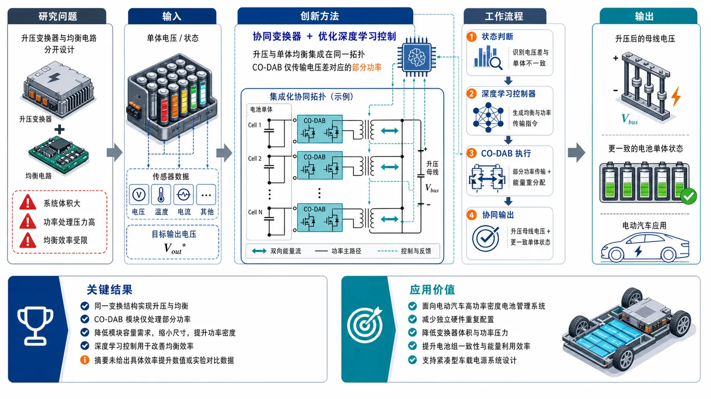
研究问题电动汽车电池包需要同时完成高效升压供电与电池单体电量均衡，但传统方案通常把升压变换器和均衡电路分开设计，导致系统体积大、功率处理压力高、均衡效率受限。创新方法提出“协同变换器 + 优化深度学习控制”的组合方案：把升压功能和单体均衡功能集成在同一功率拓扑中，采用多个 CO-DAB 双有源桥模块只传输电池包电压与输出电压差对应的部分功率，并用优化深度学习策略调控均衡过程。工作流程输入为电动汽车电池包中各单体电压/状态与目标输出电压；协同变换拓扑接入多个 CO-DAB 模块；系统判断电池包电压与输出电压差以及单体不一致状态；深度学习控制器生成均衡与功率传输控制指令；CO-DAB 模块执行部分功率传输和能量重分配；输出为升压后的母线电压与更一致的电池单体状态。关键结果所提系统在同一变换结构中实现升压与电池单体均衡；CO-DAB 模块仅处理部分功率，降低单个模块容量需求，有助于缩小变换器尺寸并提升功率密度；优化深度学习控制被用于改善均衡效率，但摘要未给出具体效率提升数值、实验平台或对比数据。应用价值适用于电动汽车高功率密度电池管理系统，可减少独立升压与均衡硬件的重复配置，降低变换器体积和功率压力，提升电池组一致性与能量利用效率，为紧凑型车载电源系统设计提供思路。核心概览
本文属于电动汽车电池管理与功率电子变换器控制方向，提出一种集成升压与电池单体均衡功能的协同双有源桥 CO-DAB 模块，并结合优化深度学习控制机制以提升均衡效率。
方法要点
- 设计一种面向汽车应用的高功率密度电池单体均衡系统。
- 将升压变换功能与电池单体均衡功能集成在协同双有源桥 CO-DAB 模块中。
- 采用“部分功率处理”思路，使变换器仅处理与电池包电压和输出电压差成比例的功率。
- 引入优化深度学习控制机制，用于改善或优化电池单体均衡过程。
- 具体深度学习模型结构、优化算法、训练数据与控制实现方式摘要未详述。
关键结果
- 摘要称该系统可用于电动汽车高功率密度电池单体均衡。
- 摘要称 CO-DAB 模块实现了升压与单体均衡的集成。
- 摘要称变换器通过只处理部分功率，有助于提升系统效率或功率密度。
- 摘要称结合优化深度学习控制机制能够提升均衡效率。
- 具体效率提升幅度、实验平台、对比方法和量化结果摘要未详述。
创新性判断
- 可能的新颖点在于将升压与电池单体均衡统一集成到协同双有源桥 CO-DAB 结构中，而非采用分立的升压级和均衡级；但摘要未说明与已有拓扑的详细对比。
- “部分功率处理”用于电池包输出与均衡场景，可能有助于降低变换器额定功率需求、提高功率密度，这是潜在创新点。
- 将优化深度学习控制机制用于电池单体均衡控制，可能相对传统规则控制、PID 或模型预测控制具有一定智能化优势；但其具体创新性取决于模型、训练与优化策略，摘要未详述。
- 整体看，论文的可能贡献集中在“CO-DAB 拓扑集成 + 部分功率处理 + 深度学习均衡控制”的组合方案，但其实际先进性需要全文中的实验和对比数据验证。
-
05
📊 含图深析
📄 摘要：将主动学习用于 PEFC 中 Pt 阴极催化剂有机添加剂的实验发现，以内部 SMILES-X 分子表征训练神经网络并自主指导候选选择。目标是提高氧还原反应质量活性，展示了分子机器学习与真实燃料电池实验闭环结合。
💡 亮点：主动学习直接指导 PEFC 铂阴极有机添加剂实验筛选。分子表征与神经网络闭环把氧还原质量活性优化从经验搜索推进到数据驱动发现。
📖 展开分析 + 配图
研究问题如何在聚合物电解质燃料电池中，为 Pt 阴极氧还原反应快速找到有效有机添加剂，提升质量活性，避免依赖人工经验和低效率盲筛。创新方法将分子机器学习与主动学习闭环实验结合：用神经网络预测有机分子添加剂对 Pt 氧还原质量活性的影响，并采用自研“简化分子输入线性表示-X”作为分子表征，在预测—实验—再训练循环中优先选择最有潜力的分子。工作流程输入候选有机分子库与已有实验数据；将分子转化为“简化分子输入线性表示-X”特征；神经网络预测质量活性提升潜力；主动学习挑选最值得实验验证的添加剂；在 PEFC/Pt 阴极体系中测试氧还原质量活性；把新实验结果反馈模型，循环优化，输出高性能有机添加剂。关键结果闭环筛选发现了可增强 Pt 阴极氧还原质量活性的有机分子，证明主动学习能有效引导燃料电池添加剂实验搜索；论文摘要未给出具体提升倍数、筛选规模或模型精度指标。应用价值为燃料电池阴极催化剂添加剂开发提供数据驱动路线，可减少试错实验，加速高活性 Pt 催化体系优化，降低贵金属催化剂使用压力，并推动分子机器学习进入电化学能源材料设计。核心概览
该论文属于机器学习辅助燃料电池材料发现方向，利用主动学习筛选 PEFC Pt 阴极有机添加剂以提升氧还原反应质量活性。
方法要点
- 将主动学习引入聚合物电解质燃料电池（PEFC）Pt 阴极有机添加剂的实验发现流程。
- 使用自研的 SMILES-X 分子表征方法训练神经网络模型。
- 通过模型自动筛选可能提升氧还原反应（ORR）质量活性的有机分子。
- 采用实验闭环验证机器学习推荐分子的效果。
- 具体神经网络结构、训练数据规模、候选分子库大小与实验条件摘要未详述。
关键结果
- 摘要明确指出，机器学习能够指导 PEFC 有机添加剂发现。
- 实验闭环证明了该方法在筛选提升 Pt 阴极 ORR 质量活性分子方面的有效性。
- 研究目标是增强聚合物电解质燃料电池中氧还原反应的质量活性。
- 具体提升幅度、对照体系、统计显著性与最佳分子身份摘要未详述。
创新性判断
- 可能的新颖点在于将主动学习直接用于 PEFC Pt 阴极有机添加剂的实验发现，而不仅是常规计算筛选；但与既有同类工作的差异程度摘要未详述。
- 自研 SMILES-X 分子表征用于训练神经网络，可能是该工作的技术特色之一；其相对已有分子表示方法的优势摘要未详述。
- “自动筛选—实验验证”的闭环流程体现了机器学习驱动材料/添加剂发现的实践价值，但具体闭环轮次和效率提升摘要未详述。
-
06
📊 含图深析
📄 摘要：MDcraft 是面向分子动力学模拟的软件包，论文发表于 Computer Physics Communications 2026 年第 327 卷。题名显示其核心特征为支持机器学习势，用于现代化分子动力学工作流；摘要未给出算法细节、基准体系或性能数值。
💡 亮点：MDcraft 以机器学习势支持为分子动力学包的核心特性。可用信息尚不足以判断其相对 LAMMPS、ASE 等生态的功能边界和性能优势。
📖 展开分析 + 配图
研究问题传统分子动力学软件难以直接、顺畅地接入机器学习势能面，导致高精度数据驱动势函数与常规 MD 模拟流程之间存在工程断层。创新方法提出 MDcraft：一个面向现代分子动力学的模拟软件包，在软件框架层面集成机器学习势支持，使数据驱动势能面可作为 MD 力场核心直接参与原子轨迹演化。工作流程输入原子结构与模拟参数；选择传统势或机器学习势能函数；由 MDcraft 计算体系能量、力与运动方程；推进分子动力学轨迹；输出原子运动轨迹、能量变化与模拟结果。关键结果论文发布了支持机器学习势的 MDcraft 软件，明确展示其作为连接传统 MD 与数据驱动势能面的模拟平台；摘要未给出具体速度、精度或基准测试数值。应用价值降低机器学习势用于分子动力学模拟的使用门槛，帮助研究者将高精度数据驱动势能面应用于材料、分子和凝聚态体系的原子尺度动力学研究。核心概览
MDcraft 是一个现代分子动力学模拟软件包，方向属于计算物理/分子模拟软件开发，重点是将传统分子动力学与机器学习势能面支持结合起来。
方法要点
- 提出或介绍名为 MDcraft 的分子动力学模拟软件包。
- 软件定位为现代分子动力学平台，支持传统分子动力学模拟。
- 重点强调对机器学习势（machine learning potentials, MLPs）的支持。
- 旨在结合传统分子动力学方法与机器学习势能面进行模拟。
- 摘要未详述具体算法架构、支持的机器学习势类型、并行策略、输入输出格式或验证体系。
关键结果
- 论文明确表明 MDcraft 是一个面向分子动力学模拟的软件包。
- 其主要特征是支持机器学习势，用于现代分子动力学模拟。
- 该软件被定位为能够结合传统分子动力学与机器学习势能面的模拟平台。
- 摘要未详述性能测试结果、精度验证、对比基准或具体应用案例。
创新性判断
- 可能的新颖点在于将传统分子动力学功能与机器学习势支持整合到一个现代化模拟软件包中。
- 相比仅支持经典经验势的传统 MD 程序，其潜在创新在于面向机器学习势能面的原生或重点支持。
- 若其实现了便捷的 MLP 接口、现代软件架构或高效计算后端，可能具有工程和应用价值；但这些细节摘要未详述，无法确认。
- 由于摘要信息很少，无法判断其相对 LAMMPS、GROMACS 或其他支持机器学习势的软件的具体差异和优势。
-
07
📊 含图深析
📄 摘要：构建物理约束径向基函数神经网络求解多资产 Black-Scholes PDE。PIRBFNN 同时优化网络结构并预测期权价格，结合传统径向基函数配点法和 PINN 的优势，面向高维多标的期权定价数值计算。
💡 亮点：PIRBFNN 将径向基配点与物理约束学习用于多资产 Black-Scholes 方程。该方法针对金融 PDE 的结构自适应训练，对材料 PDE 代理求解也有方法参考价值。
📖 展开分析 + 配图
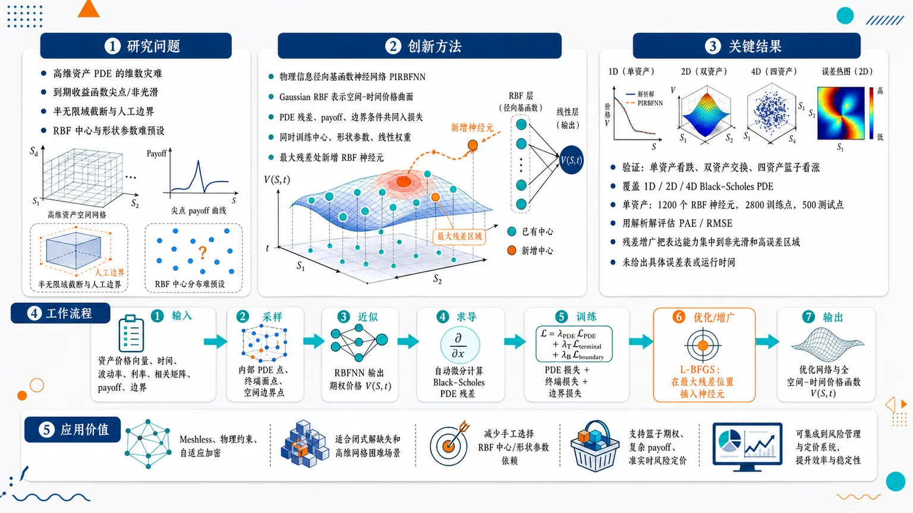
研究问题如何高效求解多资产 Black–Scholes 期权定价 PDE：在资产维度升高时避免网格法的维数灾难，同时处理到期收益函数的尖点/非光滑性、半无限资产价格域截断后的人工边界条件，以及传统 RBF 方法中中心位置和形状参数难以预设的问题。创新方法提出自适应训练的物理信息径向基函数神经网络 PIRBFNN：用浅层 Gaussian RBF 神经元表示空间–时间期权价格曲面，把 Black–Scholes PDE 残差、终端 payoff、空间边界条件共同写入损失函数；Aha 点是同时训练 RBF 中心、形状参数和线性权重，并根据 PDE 残差把新增神经元直接插入误差最大的区域，相当于把“局部网格加密”变成“局部增加基函数中心”。工作流程输入资产价格向量、时间、波动率、利率、相关矩阵、终端 payoff 与边界条件；将时间作为额外维度，随机生成内部 PDE 点、终端面点和空间边界点；RBFNN 输出期权价格近似值；自动微分计算 Black–Scholes PDE 残差；用 PDE 残差损失、终端损失、边界损失训练网络；L-BFGS 优化中心、形状参数和权重；周期性采样内部点并寻找最大残差位置；在这些位置添加新的 RBF 神经元；最终输出优化后的网络结构和全空间–时间期权价格函数。关键结果方法在单资产欧式看跌期权、双资产交换期权、四资产篮子看涨期权上进行验证设计，覆盖一维、二维到四维 Black–Scholes PDE；单资产实验使用 1200 个固定 RBF 神经元、2800 个训练点和 500 个测试点，并以解析 Black–Scholes 解计算 PAE/RMSE；核心实验发现是残差驱动的神经元增广可把表达能力集中到 payoff 非光滑、曲率变化大或 PDE 违反严重的区域，而不是平均浪费在平滑区域。所给内容未包含具体误差表、运行时间或相对基线的数值提升幅度。应用价值为多资产金融衍生品定价提供一种 meshless、物理约束、可自适应加密的数值求解框架，适合闭式解缺失、网格构造困难、局部误差突出的高维期权定价场景；可减少对手工选择 RBF 中心和形状参数的依赖，并为实时或准实时风险定价、篮子期权估值、复杂 payoff 的 PDE 求解提供可训练的替代路径。第一部分：核心概览 (Overview)
提出一种用于多资产期权定价的物理信息径向基函数神经网络（PIRBFNN），将传统 RBF 配点法的浅层高效逼近能力与 PINN 的 PDE 约束学习机制结合，并通过PDE 残差驱动的自适应神经元增广动态优化网络宽度与中心分布。核心贡献在于同时训练 RBF 中心、形状参数、线性权重，并将新增神经元放置在高残差区域，以处理多维 Black–Scholes 方程中的维数灾难、非光滑收益函数、人工边界条件等困难。方法定位于金融 PDE 数值求解、PINN 改进和 meshless RBF 方法交叉领域。
---
第二部分：结构化快速回顾
《Adaptively trained Physics-informed Radial Basis Function Neural Networks for Solving Multi-asset Option Pricing Problems》（None，）
背景
多资产欧式期权定价通常由 Black–Scholes PDE 描述。Monte Carlo 方法维度扩展性好但统计误差收敛慢；FDM/FEM 在高维与局部加密中存在成本或实现复杂度；传统 RBF meshless 方法灵活但形状参数、中心位置选择困难；PINN 能嵌入物理约束但深层网络训练成本较高。
方法
构造浅层 RBFNN，以 Gaussian RBF 作为激活函数，将时间变量作为额外输入维度，形成空间–时间统一近似。损失函数由 PDE 残差、终端收益条件、空间边界条件三部分组成。训练参数包括 神经元数量 N、中心位置 L、形状参数 C、权重 W。使用 L-BFGS 优化，并设计基于 PDE 残差的自适应训练算法，周期性添加高残差点处的新 RBF 神经元。
结果
可用内容给出三类验证任务：单资产欧式看跌期权、双资产交换期权、四资产篮子看涨期权。已完整给出的单资产实验设置包括：(σ₁₌₀.2)、(r=0.05)、(T=0.5)、(K=10)、(Sₘₐₓ=30)，固定神经元实验使用 (N=1200)、训练点 (M=2800)、测试点 (l=500)。具体数值误差结果未出现在所给内容中。
讨论
PIRBFNN 保留了 RBF 方法的 meshless 特征，同时通过神经网络训练自动学习传统 RBF 方法中难以手工确定的中心与形状参数。残差自适应机制使计算资源集中到 PDE 近似最困难区域，尤其适合收益函数非光滑、局部误差显著的问题。
局限
可用文本未给出完整实验结果、对比基线、误差表格、运行时间或消融实验。方法仍依赖若干超参数，包括初始神经元数 (N)、采样规模 (s)、加密周期 (k)、每次新增神经元数 (m)、窗口长度 (w)、阈值 (ϵ)。高维情况下形状参数初始化采用经验公式，理论最优性尚未建立。
结论
PIRBFNN 是一种面向金融 PDE 的浅层物理信息 meshless 神经网络框架，通过同时优化 RBF 参数和自适应扩展网络结构，为多资产 Black–Scholes 期权定价提供了一种兼具可训练性、局部加密能力和高维潜力的数值求解路径。
---
第三部分：逐章节冷凝解析 (Section-by-Section Condensing)
Abstract
- Core problem: multi-asset Black–Scholes PDE option valuation
研究对象是具有多个标的资产的期权定价 PDE，核心数学模型为 Black–Scholes partial differential equation。摘要明确目标为 *"the numerical solution of Black-Scholes partial differential equation (PDE) for option valuation with multiple underlying assets"*，即针对多资产期权价值 (V(S,t)) 的数值逼近。
- Core method: physics-informed RBF neural network
提出 PIRBFNN，其本质是将 RBFNN 与 physics-informed learning 结合。摘要表述为 *"a physics-informed (PI) machine learning algorithm based on a radial basis function neural network (RBFNN)"*，并强调该算法同时完成网络结构优化与目标期权价格预测：*"concurrently optimizes the network architecture and predicts the target option price"*。
- Hybrid methodological positioning
PIRBFNN 的方法论定位是融合传统 RBF collocation method 与 PINN。摘要中的关键句为 *"combines the strengths of the traditional radial basis function collocation method and the physics-informed neural network machine learning approach"*，说明其并非单纯深度 PINN，也非固定参数 RBF 配点法。
- Adaptive refinement via PDE residual
关键创新机制是利用 PDE residual-based technique 在训练过程中调整隐藏神经元分布。摘要指出 *"adaptively refine the distribution of hidden neurons during the training process"*，目的在于处理具有非光滑 payoff 的多维金融 PDE：*"multidimensional option pricing models featuring non-smooth payoff conditions"*。
- Validation scope
实验覆盖三个代表性模型：single-asset European put option、double-asset exchange option、four-asset basket call option。摘要直接列出 *"a single-asset European put option, a double-asset exchange option, and a four-asset basket call option"*，覆盖从一维到四维的期权定价任务。
---
1 Introduction
- Financial motivation: accurate and real-time option pricing
金融衍生品定价的动机是防止套利并满足实时交易需求。引言指出期权合约需要 *"priced accurately, such that no arbitrage opportunities are introduced"*，同时还必须 *"priced in real time when a trade takes place"*。这将数值方法的要求同时推向精度与速度。
- Monte Carlo advantage and limitation
Monte Carlo simulation 基于底层资产随机扩散过程，维度扩展性为线性，但统计误差收敛慢。引言给出判断：*"This scales linearly with the number of underlying assets"*，但通常 *"requires a large number of simulated trajectories to reach a small enough statistical error"*。
- PDE-based methods for low-to-moderate dimensions
对低到中等维度问题，求解 Black–Scholes PDE 可能比 Monte Carlo 更高效。原文表述为 *"For a low to moderate number of underlying assets, it can be more efficient to solve the Black-Scholes partial differential equation (PDE)"*。
- Mesh-based methods: FDM and FEM limitations
FDM 与 FEM 是主流网格法，但存在不同瓶颈。FDM 的网格加密会导致整条网格线被加密，造成远离重点区域的冗余计算：*"mesh refinement involves whole gridlines leading to unnecessary refinment far away from the region of interest"*；FEM 可局部加密，但高维实现困难：*"local refinement is available, but may be non-trivial to implement in more than three dimensions"*。
- Meshless methods and RBF advantage
Meshless methods 可直接处理散乱点云，并能在任意维度局部加密。引言指出这类方法 *"work directly with scattered point clouds that can be generated and locally refined in any number of dimensions"*。其中 RBF methods 在函数逼近与 PDE 求解中表现良好：*"shown to perform well both for function approximation and solution of PDEs"*。
- Traditional RBF approximation form and parameter challenge
传统 RBF 近似形式为
[
hatV(x)=sumⱼ Wⱼφ(Cⱼ|x-xⱼ|)+P(x)
]
其中 (Wⱼ) 为权重，(φ) 为核函数，(xⱼ) 为中心，(Cⱼ) 为形状参数，(P(x)) 为低阶多项式。原文说明 *"The kernel function, shape parameters, and centre locations need to be specified prior to the solution process"*，而形状参数选择仍是开放问题：*"determining the optimal shape parameter values is an open research problem"*。
- PINN mechanism and strength
PINN 将 PDE 约束与边界数据共同放入损失函数，并利用自动微分训练网络。引言说明 PINN *"incorporates both PDE constraints and boundary measurements into the loss function and minimizes the loss to train the neural network"*。其核心特征是 *"encode the physical laws directly into a learning system"*，提升数据的信息含量与泛化能力。
- PINN limitation: deep architecture and training cost
深层 PINN 需要更多训练资源，并使二阶优化器使用更困难。引言指出 *"the architecture of deeper layers combined with multiple hidden neurons necessitates increased feeding resources for effective training and computational efforts"*。
- PIRBFNN core design: RBF activations inside PI learning
方法将 PINN 的机器学习动力学与 RBF 的逼近能力结合，使用 RBFs as activation functions 构造 PIRBFNNs。关键句为 *"we employ RBFs as activation functions to construct novel physics-informed radial basis function neural networks (PIRBFNNs)"*，应用对象为一维、二维和四维欧式期权定价。
- Simultaneous learning of RBF parameters
相比传统 RBF 配点法，RBFNN 可同时给出期权价格并学习 RBF 参数：*"the RBFNN can simultaneously provide accurate option prices and learn appropriate RBF method parameters"*。这直接针对传统 RBF 中中心与形状参数需预设的弱点。
- Concurrent training instead of two-stage learning
早期 RBFNN 学习常使用两阶段策略，即依次优化权重和 RBF 参数。PIRBFNN 采用并行训练：*"we employ simultaneous training of centre locations, shape parameters, and linear weights"*，避免先后训练导致的耦合不足。
- Optimization choice: L-BFGS suits shallow RBFNN
浅层结构使自动微分反向传播更简洁，二阶优化器更易使用。引言指出 PIRBFNN *"employs a shallow neural network architecture instead of the multi-layered structure"*，从而 *"significantly streamlining the backpropagation process"*。L-BFGS 可直接扩展到 PIRBFNN 优化：*"Advanced second-order algorithms like Limited Memory Broyden-Fletcher-Goldfarb-Shanno (L-BFGS) can be extended readily"*。
- Adaptive neuron insertion as structural innovation
既有 RBFNN 文献通常固定神经元数量：*"the number of RBF neurons typically remains constant throughout the network training process"*。PIRBFNN 引入基于残差的增广机制：*"adaptively inserts additional RBF neurons during training at locations where the PDE residual is significant"*。这一机制将网络容量动态分配到困难区域。
---
2 Black-Scholes model for multi-asset option pricing problem
- General multi-asset Black–Scholes PDE
多资产欧式期权定价 PDE 为
[
fracpartial Vpartial t
+frac12sumᵢ,ⱼ₌₁^dh̊oᵢⱼσᵢσⱼSᵢSⱼ
fracpartial²Vpartial Sᵢpartial Sⱼ
+sumᵢ₌₁^drSᵢfracpartial Vpartial Sᵢ
-rV=0.
]
原文称其为 *"the widely recognized Black-Scholes equation, which models the pricing of single-asset and multi-asset European style options"*。其中 (d) 是标的资产数量，直接决定 PDE 空间维度。
- Financial meaning of variables
(S=(S₁,dots,S_d)in[0,infty)^d) 表示资产价格向量，(tin[0,T])，(T) 为到期时间，(V(S,t)) 为期权价值，(σᵢ) 为第 (i) 个资产波动率，(r) 为无风险利率，(h̊oᵢⱼ) 为资产相关性。原文给出 *"(σᵢ) is the volatility of the (i)-th asset, (r) is the risk-free interest rate, and (h̊oᵢⱼ) is the correlation"*。
- Correlation matrix constraints
相关矩阵满足 (h̊oᵢᵢ=1)、(h̊oᵢⱼ=h̊oⱼᵢ)、(|h̊oᵢⱼ|łe 1)。原文明确写出 *"The correlation matrix must satisfy (h̊oᵢᵢ=1), (h̊oᵢⱼ=h̊oⱼᵢ), (i≠ j), and (|h̊oᵢⱼ|łeq 1)"*。
- Terminal payoff as final condition
Black–Scholes 方程是 backward PDE，终端条件由到期 payoff 给定：
[
V(S,T)=V_T(S).
]
原文解释为 *"The terminal condition for this backward Eq.(2) is determined by the payoff value of the option at maturity"*。
- Boundary conditions and domain truncation
原始空间域为半无限 ([0,infty)^d)，数值计算需要截断为 (Ømega=(0,Sₘₐₓ)^d)。原文说明 *"the spatial domain is semi-infinite, for numerical implementation it needs to be truncated to a bounded version"*。(Sₘₐₓ) 通常取为执行价 (K) 的数倍：*"normally selected to be several times larger than the strike price (K)"*。
- TBVP formulation
多资产期权定价被整理为终端–边界值问题：
[
LV(S,t)=0,quad
V(S,T)=V_T(S),quad
BV(S,t)=g(S,t).
]
原文称其为 *"the terminal-boundary value problem (TBVP) (4)–(6) for multi-asset option pricing"*。
- Curse of dimensionality
PDE 维度等于标的资产数量，带来指数级成本增长。原文明确指出 *"the dimension of the governing PDE is given by the number of underlying assets, leading to an exponential increase in the cost in terms of assets (the curse of dimensionality)"*。
- Closed-form solution often unavailable
高维欧式期权并不总有闭式解，篮子期权是典型例子。原文指出 *"closed-form solutions could not always be found for high-dimensional European options, with basket options being a prime example"*。
- Artificial boundary conditions as a numerical difficulty
无限域截断需要人工边界条件；若边界条件不准确，则可能需要更大计算域以降低误差影响。原文表述为 *"artificial boundary conditions need to be introduced to reduce the infinite problem domain to a bounded computational domain"*。
- Non-smooth payoff reduces convergence
到期 payoff 常在值或导数上非光滑，要求自适应处理。原文指出 *"the contract funtion (payoff) that serves as the final condition of the PDE typically involves non-smoothness in the value or in the derivatives"*，低正则性会影响收敛阶与精度：*"The low regularity in the terminal data can decrease the convergence order and the accuracy level"*。
---
3 Physics-informed radial basis function neural network (PIRBFNN) for solving terminal-boundary value problem
#### 3.1 Architecture of radial basis function neural network (RBFNN)
- Space-time RBFNN formulation
时间变量 (t) 被当作额外空间维度处理，形成空间–时间整体逼近。原文指出 *"we adopt a space-time approach by treating the temporal variable (t) as an additional spatial dimension"*。终端条件因而转化为最终时间边界上的 Dirichlet 条件：*"The terminal condition becomes a Dirichlet boundary condition applied only at the final time boundary"*。
- Two-layer feedforward architecture
RBFNN 是两层前馈网络，输入为 ((S,t)=(S₁,dots,S_d,t))。原文写明 *"The RBFNN is a feedforward neural network comprising two layers"*，输入层包含训练点坐标：*"The input layer contains the coordinates of a training point"*。
- RBF hidden layer with trainable centers and shape parameters
每个隐藏神经元有中心点 ((barSₙ,bartd₊₁,ₙ)) 和形状参数 (Cₙ) 或向量 (Cₙ)。原文说明 *"Each RBF neuron is associated with a centre point ... and either a shape parameter scalar (Cₙ) or a shape parameter vector"*。
- Scaled Euclidean distance activation
激活函数依赖输入点与中心点之间的形状参数加权欧氏距离：
[
φₙ₍S,t)=φ(|(S,t)-(barSₙ,bartd₊₁,ₙ)|C_ₙ).
]
原文强调 *"The activation mapping is contingent upon the scaled Euclidean distance"*。
- Network output as linear RBF expansion
期权价格近似为
[
hat V(S,t)=sumₙ₌₁^NWₙφₙ₍S,t)+WN₊₁.
]
原文说明 *"The predicted option price is determined by a linear weighted sum"*。其中 (N) 是隐藏 RBF 神经元数量，(WN₊₁) 是 bias。
- Gaussian RBF explicit form
以 Gaussian RBF 为例，输出项包含指数核
[
e⁻[C₁ₙ^²⁽S₁₋bar S₁ₙ⁾^²⁺ḑots⁺Cd₊₁,ₙ^²⁽t⁻bar td₊₁,ₙ⁾^²].
]
原文引入方式为 *"Taking Gaussian RBF neurons as an example"*。
- All structural and numerical parameters are trainable
可训练对象包括 (N)、中心集合 (L)、形状参数集合 (C)、权重集合 (W)。原文明确指出 *"All the parameters mentioned in the above network approximation ... are trainable objects during the machine learning process"*。
- Scalar versus vector shape parameters
单资产问题使用标量形状参数，多资产问题使用向量形状参数以提升表达能力并避免过拟合。原文 remark 为 *"we adopt the scalar shape parameters for option pricing problem with a single underlying asset, and the vector form of the shape parameters for more challenging problems involving two or more underlying assets"*。
#### 3.2 Generation of the training points for various constraints
- Training set supports physics-informed constraints
构造训练点集是为了评估网络预测对 PDE、终端条件和边界条件的偏离。原文说明训练点集用于 *"assess the deviation of the neural network prediction from the corresponding constraints"*。
- Deterministic pseudo-random sampling
通过固定 Python 随机种子生成确定性训练点集 (P)。原文指出 *"by fixing the seed value in the random Python module, we employ the pseudo-random number generator to create a deterministic training points set"*。
- Uniform sampling over space-time domain and boundaries
训练点从空间–时间域内部与边界上的均匀分布随机采样。原文表述为 *"random samples from a uniform distribution across the entire spatial-temporal domain, including the interior and the boundaries"*。
- Three-way partition of training points
总训练集分解为
[
P=Pₘₐₜₕcₐₗ Lu̧p P_Tu̧p Pₘₐₜₕcₐₗ B.
]
其中 (Pₘₐₜₕcₐₗ L) 用于 PDE 内部残差，(P_T) 用于终端条件，(Pₘₐₜₕcₐₗ B) 用于空间边界条件。原文说明这些子集 *"correspond to the collocation points assigned for feeding into the PDE, the terminal time boundary condition, and the spatial boundary conditions"*。
#### 3.3 Formulation of the loss function
- Loss integrates PDE physics and data constraints
损失函数采用 PINN 常见形式，由 PDE 残差、终端误差、边界误差组成：
[
ell(θ;P)=ell(θ;Pₘₐₜₕcₐₗ L)+ell(θ;P_T)+ell(θ;Pₘₐₜₕcₐₗ B).
]
原文说明其目标是 *"embedding the physical law regularization and observation data fitting into the loss function"*。
- PDE residual loss
PDE 损失为
[
frac1Mₘₐₜₕcₐₗ LsumPₘₐₜₕcₐₗ L
|mathcal Lhat V(mathbf Sᵢ,tᵢ₎₋f(mathbf Sᵢ,tᵢ₎|₂²,
quad fequiv0.
]
原文明确写出 *"(f(bmSᵢ,tᵢ)equiv 0)"*，对应齐次 Black–Scholes PDE。
- Terminal payoff loss
终端损失为
[
frac1M_TsumP_T|hat V(mathbf Sᵢ,T)-V_T(mathbf Sᵢ₎|₂².
]
该项强制网络在 (t=T) 处匹配 payoff，原文将其归入 *"boundary conditions"* 与 *"observation data fitting"* 的训练约束。
- Spatial boundary loss
边界损失为
[
frac1Mₘₐₜₕcₐₗ BsumPₘₐₜₕcₐₗ B
|mathcal Bhat V(mathbf Sᵢ,tᵢ₎₋g(mathbf Sᵢ,tᵢ₎|₂².
]
它处理截断计算域 (Ømega=(0,Sₘₐₓ)^d) 上的近场和远场边界条件。
- Equal penalty weights
所有损失项权重设为 1。原文说明经过不同 penalty 参数实验后，变化并未明显改善精度或收敛速度：*"varying these parameters does not lead to noticeable improvements in either the prediction accuracy or the convergence speed"*，因此 *"all penalty parameters corresponding to different loss terms are therefore set to 1"*。
#### 3.4 Initialization of the network parameters
- Initialization aims to be automatic and optimizer-friendly
初始参数需适用于较大问题族，同时为优化器提供合理起点。原文要求 *"as automatic as possible and work for a large family of problems"*，且 *"a reasonable starting point for the optimizer"*。
- Initial and adaptive neuron number
(N) 控制隐藏层宽度，增大 (N) 提高表达能力。原文指出 *"Increasing the value of (N) widens the hidden layer of the neural network, thereby improving the expressiveness of the RBFNN"*。PDE 残差技术将 (N) 从初始值自适应扩展到某一上限：*"adaptively refine the number of RBF hidden neurons from an initial value up to a specific limit"*。
- Initial center locations
初始 RBF 中心在计算域内均匀采样，并通过随机种子保证重跑一致性。原文说明 *"the coordinates of the initial centre points are generated using the Python random module with a specified seed value"*。
- New centers placed at large residual locations
新增神经元中心由自适应算法识别的高 PDE 残差位置决定。原文写明 *"the newly added centres of RBF neurons are positioned at locations with significant PDE residual errors"*。
- Single-asset shape initialization
(d=1) 时使用标量形状参数，初值从 ((0,1)) 均匀分布生成，并用 PyTorch 随机数种子保证可复现。原文为 *"scalar shape parameters are used and the values ... are initialized as the numbers uniformly distributed within the range ((0,1))"*。
- Multi-asset shape initialization uses vector formula
(dge2) 时，随机标量形状参数效果不佳。原文指出 *"choosing a random initial shape parameter scalar for each RBF neuron did not lead to competetive results"*。因此采用向量形状参数，并按公式
[
Cᵢₙ=
fracαsqrtDᵢZ_α
sqrt(2DᵢZ_α-bar Sᵢₙ)³⁺⁽bar Sᵢₙ)³
]
或时间维对应式初始化。
- Shape formula hyperparameters
(Z_αin(0,1]) 控制形状参数峰值位置，(α>0) 控制峰值幅度。实验设置为 (Z_α=0.5)、(α=1)。原文解释 *"(Zα=0.5) is chosen so that the shape parameters attain their maximum value at the midpoint"*，并且 *"we set (α=1) to achieve good performance based on our extensive testing"*。
- Weight initialization with Xavier uniform
线性层权重和 bias 采用 PyTorch 的 Xavier uniform distribution 初始化，以改善梯度流与收敛速度。原文写明 *"the linear layer is initialized using the Xavier uniform distribution function provided by PyTorch library"*。
#### 3.5 Residual-based adaptive training dynamics
- L-BFGS training with fixed points before expansion
给定固定训练点集 (P)，PIRBFNN 通过 L-BFGS optimizer 和学习率 (η) 最小化损失，优化 (L,C,W)。原文指出 *"can be trained to optimize the parameters (L), (C), and (W) by minimizing the loss function using the L-BFGS optimizer"*。
- Adaptive refinement increases neuron count dynamically
动态扩展网络宽度以增强逼近能力。原文明确为 *"a PDE residual-based adaptive refinement strategy that dynamically increases the number of RBF neurons during training"*。
- High residual regions receive new centers
算法识别 PDE 残差大的区域，并在这些位置放置新中心。核心思想为 *"identify regions where the PDE residual is large and strategically place new RBF centers at those locations"*。
- Two phases: residual monitoring and network expansion
自适应策略包含两个阶段：残差监控与网络扩展。原文称 *"The adaptive strategy operates in two complementary phases: residual monitoring and network expansion"*。
- Sampling and residual estimate
每次迭代随机采样 (s) 个内部点，计算残差
[
rⱼ₌|mathcal Lhat V(mathbf Sⱼ,tⱼ₎₋f(mathbf Sⱼ,tⱼ₎|
]
以及均方残差
[
R⁽τ⁾=frac1ssumⱼ₌₁^srⱼ².
]
原文步骤写为 *"Randomly sample (s) interior points"* 与 *"Evaluate PDE residuals"*。
- Decaying windowed residual average
算法维护窗口长度 (w) 的残差平均 (øverlineDWR_w⁽τ⁾)，用于跟踪训练进程。原文称其为 *"a decaying windowed average ... over a window of size (w) to track the training progress"*。
- Detrended residual change for stopping
每 (k) 次迭代检查一次收敛。残差变化序列用中值滤波去趋势，得到 (mathbf D)。原文说明 *"obtained by removing the trend from the sequence of residual changes using a median filter"*。
- Stopping condition by positive and negative peaks
若去趋势信号 (mathbf D) 的正峰 (h₊) 和负峰 (h₋) 均低于阈值 (ϵ)，停止训练。原文解释为 *"both the positive and negative peak heights of (bmD) fall below a specified threshold (ϵ)"*，表示新增神经元带来的残差变化已不显著。
- Expansion every k iterations
在终止条件满足前，每 (k) 次迭代添加 (m) 个新神经元，其中心取自 (s) 个采样点中残差最大的 (m) 个位置。原文写明 *"adding (m) new RBF neurons centered at the locations corresponding to the (m) largest PDE residuals"*。
- Knowledge retention during expansion
扩展后旧神经元保留已训练参数，新神经元按初始化策略设置权重与形状参数。原文指出 *"the previously trained parameters are used as the initial values for the existing RBF neurons"*，从而 *"preserving the knowledge acquired during previous training iterations"*。
- Algorithm inputs and outputs
Algorithm 1 输入包括初始 (N)、训练点集 (P)、采样规模 (s)、加密参数 (k,m)、窗口长度 (w)、收敛阈值 (ϵ)；输出为 *"Trained PIRBFNN with optimized network structure"*。这说明网络结构本身也是训练结果。
#### 3.6 Evaluation of the applicability of the network
- Low training loss does not guarantee true accuracy
低损失并不必然意味着近似解接近真实解。原文指出 *"a well-trained network with low loss value does not always guarantee the proximity of the approximate solution to the true solution"*。因此必须用测试点误差验证泛化。
- Spatial-temporal generalization test
从目标区域随机采样 (l) 个测试点，同时监控训练损失曲线与测试误差曲线。原文说明 *"we randomly sample (l) points from the target region to serve as test points and monitor the training loss curve and the testing error curve simultaneously"*。
- Generalization across PDE parameters
还测试网络对不同金融模型参数的泛化，重点关注标的资产波动率。原文写明 *"test its convergence behavior on a new financial parameter value, with a primary focus on the volatility of the underlying asset"*。
- Two parameter-transfer strategies
参数变化测试包括从头训练与预训练网络微调两种方式。原文表述为 *"using two approaches: training the network from scratch with the new parameter and fine-tuning a pretrained network corresponding to an old parameter"*。
---
4 Numerical experiments
- Experiment scope: one-, two-, and four-dimensional Black–Scholes models
数值实验面向一维、二维和四维 Black–Scholes 期权定价。原文说明 *"we employ PIRBFNNs to address option pricing problems in one-, two- and four-dimensional settings under the Black–Scholes models"*。
- Computational environment
所有实验在 Python 的 VSCode 环境中运行，硬件为 Linux 服务器上的单块 RTX 3090 24G GPU。原文给出 *"All experiments are executed in the VSCode for Python programming, on a single RTX 3090 24G GPU at a Linux server"*。
- Accuracy metrics: PAE and RMSE
误差指标为 pointwise absolute error (PAE) 和 root mean squared error (RMSE)：
[
PAE=|hat V(mathbf Sᵢ,tᵢ₎₋V(mathbf Sᵢ,tᵢ₎|,
quad
RMSE=sqrtfrac1lsumᵢ₌₁^l(hat V-V)².
]
原文写明 *"the pointwise absolute error (PAE) and the root mean squared error (RMSE) are utilized as measurement metrics"*。
- Reference solution definition
(V) 可以是精确解或参考数据。原文说明 *"(V) denotes either the exact solution or the reference data"*，这对高维无闭式解场景尤其关键。
---
4.1 Example 1: Single-asset European put option
- Benchmark status
单资产欧式期权是金融数值计算中的基准问题。原文称其为 *"a benchmark problem extensively studied in the finance community"*。
- Governing one-dimensional Black–Scholes PDE
看跌期权 PDE 为
[
fracpartial Vpartial t
+frac12σ₁²S₁²fracpartial²Vpartial S₁²
+rS₁fracpartial Vpartial S₁
-rV=0.
]
定义域为 ([0,Sₘₐₓ]×[0,T])。原文给出 *"the governing Black-Scholes Eq.(2) is described by the one-dimensional PDE"*。
- Terminal payoff
终端条件为
[
V(S₁,T)=max(K-S₁,0).
]
原文写明 *"equipped with the terminal payoff condition (V(S₁,T)=max(K-S₁,0))"*。该 payoff 在 (S₁₌K) 处一阶导数不连续，是非光滑测试点。
- Spatial boundary conditions
边界条件为
[
V(0,t)=Ke⁻r⁽T⁻t⁾,quad V(Sₘₐₓ,t)=0.
]
原文给出 *"the spatial boundary conditions"* 后列出上述两式，分别对应资产价格为 0 时的贴现执行价和远场看跌期权价值趋近 0。
- Closed-form European put solution
精确解为
[
Vₑₓₐcₜ(S₁,t)=Ke⁻r⁽T⁻t⁾N(-d₂₎₋S₁N(-d₁₎.
]
原文说明 *"The exact solution for the European put option is given by"*，其中 (N(ḑot)) 是标准正态分布函数。
- Black–Scholes d1 and d2 definitions
[
d₁₌fracłog(S₁/K)+(r+frac12σ₁²⁾⁽T-t)
σ₁sqrtT-t,
quad
d₂₌d₁₋σ₁sqrtT-t.
]
原文明确写出 *"with (d₁₌...), and (d₂₌d₁₋σ₁sqrtT-t)"*。
- Numerical parameters
实验参数为 (σ₁₌₀.2)、(r=0.05)、(h̊o₁₁=1)、(T=0.5)、(K=10)、(Sₘₐₓ=30)。原文直接给出 *"we specify the model parameters as the following values: (σ₁₌₀.2,r=0.05,h̊o₁₁=1,T=0.5,K=10), and (Sₘₐₓ=30)"*。
---
4.1.1 PIRBFNN with a fixed number of neurons
- Fixed hidden layer width
固定神经元实验使用 (N=1200) 个 RBF 隐藏神经元。原文写明 *"We employ (N=1200) RBF neurons in the hidden layer to design the PIRBFNN"*。
- Training point count and decomposition
训练点总数为 (M=2800)。内部 PDE 点数为 (Mₘₐₜₕcₐₗ L=400×4=1600)，终端边界点数为 (M_T=400)，空间边界点数为 (Mₘₐₜₕcₐₗ B=400×2=800)。原文给出 *"we select (M=2800) training points"*，并列明 *"(Mₘₐₜₕcₐₗ L=400*4=1600)"*、*"(M_T=400)"*、*"(Mₘₐₜₕcₐₗ B=400*2=800)"*。
- Boundary-count interpretation
内部点数中的因子 4 对应二维空间–时间域的边界数量，空间边界点数中的因子 2 对应单资产看跌期权两个空间边界。原文解释 *"the factor 4 refers to the number of boundaries of the two-dimensional spatial-temporal domain"*，以及 *"the factor 2 corresponds to the two spatial boundary conditions"*。
- Optimizer learning rate
L-BFGS 学习率设为 1。原文写明 *"The learning rate for the L-BFGS optimizer is set to 1"*。
- Test points
测试点为 (t=0) 时刻的 (l=500) 个内部点。原文给出 *"A set of (l=500) interior points at time (t=0) is taken as the test points"*。
- Unavailable numerical outcome
可用内容在关于 boundary sampling 的 remark 处截断，未给出该固定神经元实验的 PAE、RMSE、损失曲线、误差图或运行时间。已知最后一句残留为 *"the number of boundary sampling points is chosen to be comparable to that of the interior samplin"*，无法据此恢复后续结果。
---
第四部分：深度理解与语言支持 (Understanding & Nuance)
1. Physics-informed
Physics-informed 在此不是指物理学意义上的力学定律，而是指数学模型中的支配方程、边界条件、终端条件被直接编码进损失函数。金融 PDE 中的 “physics” 实际对应 Black–Scholes 无套利定价结构。区别于纯数据拟合，PIRBFNN 不只学习样本价格，还惩罚 (mathcal Lhat V≠0)、(hat V(mathbf S,T)≠ V_T(mathbf S))、(mathcal Bhat V≠ g)。
2. Radial basis function neural network
RBFNN 是浅层网络，其隐藏层激活不是 ReLU/tanh，而是关于“输入点到中心点距离”的径向核函数。这里的关键在于：每个神经元代表一个局部或半局部基函数，中心位置和形状参数决定其影响区域。传统 RBF 方法通常先固定中心和形状参数，再解线性权重；PIRBFNN 将这些量都纳入梯度训练。
3. Shape parameter
Shape parameter 是 RBF 方法中非常敏感的尺度参数。Gaussian RBF 中，形状参数越大，核函数越窄、越局部；形状参数越小，核函数越平、影响范围越广。该参数会同时影响逼近能力、矩阵病态性、训练稳定性。文中强调其最优选择仍是开放问题，因此将其设为可训练变量。
4. Residual-based adaptive refinement
Residual-based adaptive refinement 指根据 PDE 残差大小决定在哪里增加表达能力。这里不是加密网格，而是向网络隐藏层添加新的 RBF 神经元；新增中心落在残差最大的采样点处。其逻辑类似有限元自适应网格加密，但实现对象从网格单元变为神经元中心。
5. Terminal-boundary value problem
Terminal-boundary value problem (TBVP) 是期权 PDE 的典型形式，因为期权 payoff 在到期时间 (T) 给定，求解方向是从 (T) 向 (0) 回推。普通抛物 PDE 常见的是初值–边值问题；金融 PDE 中则常是终端–边值问题。PIRBFNN 通过把时间当作额外输入维度，将终端条件视为 (t=T) 超平面上的 Dirichlet 边界条件。
---
疑难查证：为什么“低 loss 不保证真解接近”？
PIRBFNN 的损失只在有限训练点上评估 PDE 残差、终端条件和边界条件。即便这些点上的损失很低，仍可能出现三类问题：
- 点间误差不可见
训练点有限，网络可能在训练点附近满足约束，但在未采样区域产生偏差。
- PDE 残差小不等于边界/终端传播正确
对抛物型 PDE，终端 payoff 的非光滑点会沿时间方向影响解；若训练点未充分覆盖 kink 附近区域，残差可能看似小但价格曲面误差较大。
- 优化误差与逼近误差不同
低 loss 说明当前网络在给定损失定义下优化得较好，但不保证网络结构足以表达真实解。固定 (N) 的 RBFNN 尤其可能在高维或局部尖锐区域欠表达。
因此需要独立测试点 (l) 上的 PAE/RMSE，并同时监控训练损失与测试误差。
---
疑难查证：PDE 残差驱动新增神经元为什么有效？
Black–Scholes PDE 的解在 payoff 非光滑位置附近更难逼近。例如单资产看跌期权 payoff (max(K-S,0)) 在 (S=K) 处斜率不连续。若 RBF 中心均匀分布，许多神经元会浪费在平滑区域，而 kink 附近表达能力不足。残差
[
|mathcal Lhat V-f|
]
大的地方说明当前网络违反 PDE 最严重，往往对应曲率变化快、边界影响强、非光滑传播显著或高维交互复杂的区域。将新 RBF 中心放到这些点，相当于局部增加基函数分辨率，使网络容量集中于最需要的位置。
---
第五部分：创新评估与关联 (Synthesis & Novelty)
创新性判断
- 相对于传统 RBF collocation：参数不再预设，而是联合训练
传统 RBF 方法通常需要预先指定中心、核函数和形状参数，然后解线性系统。PIRBFNN 的新意在于同时学习 center locations、shape parameters、linear weights，直接缓解 RBF 方法中“形状参数选择是开放问题”的长期困难。
- 相对于标准 PINN：用浅层 RBFNN 替代深层全连接网络
标准 PINN 常依赖多层网络，训练成本高，二阶导数计算和优化更重。PIRBFNN 采用浅层 RBF 结构，在保留 PDE 残差约束的同时简化自动微分和反向传播，更自然地适配 L-BFGS。
- 相对于常规 RBFNN：网络宽度不是固定的
过去 RBFNN 通常固定隐藏神经元数量。PIRBFNN 将 PDE residual 用于动态插入神经元，使网络结构随训练过程变化。这一点从“训练参数”扩展到“训练结构”，是方法层面的显著推进。
- 相对于普通自适应采样 PINN：加密对象从训练点转向基函数中心
很多 PINN 改进通过增加 collocation points 实现残差自适应；该方法进一步将高残差信息用于新增 RBF 神经元中心，从而直接增强模型表达能力，而不仅仅增加约束点数量。
- 针对金融 PDE 的具体难点进行了结构化响应
多资产期权定价同时具有 高维、非光滑 payoff、人工边界、闭式解缺失等特点。PIRBFNN 的 meshless 表示适合高维散乱点，残差加密适合 payoff 非光滑区域，物理损失适合无大量价格数据的 PDE 场景。
- 尚未完全解决的问题
方法仍需要经验性超参数与初始化策略，例如 (Z_α=0.5)、(α=1)、(s,k,m,w,ϵ)。高维扩展潜力已被方法设计支持，但所给内容未包含四资产实验的具体误差、复杂度和对比结果，因此无法确认其相对 Monte Carlo、FEM/FDM、标准 PINN、固定 RBFNN 的实证优势幅度。
-
08
📊 含图深析
📄 摘要：提出 DSGNAR，即带自适应比率的双重草图高斯—牛顿二阶优化框架，针对 PINN 损失景观严重病态导致精度低于经典求解器的问题。通过双重草图近似提升可扩展性，目标是在 PDE 求解中获得更高精度和速度。
💡 亮点：DSGNAR 用双重草图高斯—牛顿方法直接处理 PINN 的病态优化。若基准稳定成立，它会把 PINN 性能瓶颈从网络表达转向可控二阶优化。
📖 展开分析 + 配图
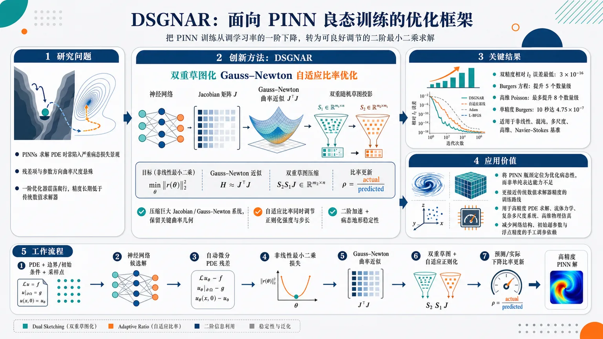
研究问题PINNs 求解 PDE 时被严重病态的损失景观困住：不同残差项和参数方向曲率尺度悬殊，一阶优化器像在狭长峡谷中震荡爬行，导致精度长期低于传统数值求解器，难以稳定逼近浮点精度极限。创新方法提出 DSGNAR：双重草图化 Gauss-Newton 自适应比率优化框架。Aha 点是把 PINN 训练从“调学习率的梯度下降”改造成“可良好调节的二阶最小二乘求解”：用双重随机草图压缩巨大 Jacobian/Gauss-Newton 系统，保留关键曲率几何；再用自适应比率同时调节正则化强度与步长，使更新方向既有二阶加速，又能在病态地形中保持稳定。工作流程输入 PDE 方程、边界/初始条件与采样点，神经网络生成候选解；自动微分计算 PDE 残差并形成非线性最小二乘损失；构造残差 Jacobian 的 Gauss-Newton 曲率近似；通过双重草图化压缩大规模线性代数子问题；加入自适应正则化求出稳定搜索方向；根据预测下降与实际下降的比率调整正则化和步长；迭代更新网络参数，输出高精度 PINN 解。关键结果在非线性、混沌、多尺度、高维和 Navier–Stokes 等基准问题上显著优于现有方法：双精度相对 l2 误差最低达到 3×10⁻¹⁶，接近机器舍入误差；经典 Burgers 方程较当代结果提升五个数量级；高维 Poisson 问题最多提升八个数量级；单精度下 Burgers 方程可在 10 秒内达到 4.75×10⁻⁷。应用价值证明 PINN 的主要瓶颈可被视为优化病态性而非单纯表达能力不足，为科学机器学习提供一种更接近传统数值求解器精度的训练路线；有望用于高精度 PDE 求解、流体力学、复杂多尺度系统、高维物理仿真和低精度快速计算，减少对网络结构、初始超参数和浮点精度的手工调参依赖。第一部分：核心概览（Overview）
该研究提出 DSGNAR（Doubly-Sketched Gauss-Newton with Adaptive Ratio），面向 Physics-Informed Neural Networks（PINNs） 中由严重病态损失景观导致的训练困难。核心贡献在于构建一个可扩展的二阶优化框架，将 双重草图化 Gauss-Newton 模型 与同时控制 正则化 和 步长 的自适应策略结合起来，使 PINNs 在非线性、混沌、多尺度、高维、Navier–Stokes 等问题上达到远超既有结果的精度与速度。其宣称可在双精度下达到相对 ell₂ 误差 3×10⁻¹⁶，并在 Burgers 方程和高维 Poisson 问题上分别实现五个和八个数量级改进，因而定位为 PINN 优化病态性问题上的重要方法学突破。
---
第二部分：结构化快速回顾
《An Optimisation Framework for the Well-Conditioned Training of Physics-Informed Neural Networks》（None，）
背景
Physics-informed neural networks（PINNs） 被视为求解 partial differential equations（PDEs） 的有前景路径，但精度长期难以达到传统数值求解器水平。主要障碍被归因于 optimization，尤其是 PINN 损失景观的严重 ill-conditioning。
方法
提出 DSGNAR: Doubly-Sketched Gauss-Newton with Adaptive Ratio。该框架使用 doubly-sketched Gauss-Newton model 降低二阶优化计算成本，并通过新的自适应机制同时调控 regularisation 与 step length，以稳定处理病态优化问题。
结果
在覆盖 nonlinear、chaotic、multi-scale、high-dimensional、Navier-Stokes 的问题套件中，DSGNAR 显著优于现有方法。双精度下相对 ell₂ 误差最低达到 3×10⁻¹⁶；在经典 Burgers 方程上较当代结果提升五个数量级；在高维 Poisson 问题上提升最多八个数量级；单精度下 Burgers 方程可在 10 秒内达到 ell₂rel=4.75×10⁻⁷。
讨论
结果指向一个核心判断：PINN 精度瓶颈并非主要来自神经网络表达能力，而是来自训练优化的病态性。通过适当的二阶近似、草图化降维和自适应正则/步长控制，PINN 可以逼近浮点舍入误差极限。
局限
可见材料未给出完整实验设置、网络结构、草图维度、采样策略、硬件环境、对照方法清单、统计重复次数、消融实验细节或失败案例。因此无法核验所有性能提升是否具有跨实现、跨 PDE 设置、跨硬件平台的一致性。
结论
DSGNAR 将 PINN 训练问题重新表述为可良好调节的二阶优化问题，并通过双重草图化与自适应比率控制，在精度、速度和鲁棒性上给出强烈的性能主张。该框架的主要学术价值在于系统性缓解 PINN 的病态优化瓶颈。
---
第三部分：逐章节冷凝解析（Section-by-Section Condensing）
可用材料只包含 arXiv 页面元数据与摘要，未包含论文 PDF 正文，因此只能严格解析可见章节：Abstract 与 arXiv 元信息。完整章节标题、公式、算法、实验表格、附录内容不可见，无法可靠逐章复原。
---
Abstract
PINNs face a precision gap relative to classical solvers
Physics-informed neural networks（PINNs） 被定位为求解 partial differential equations（PDEs） 的神经网络方法，但其核心短板是精度尚未达到传统数值方法水平。摘要直接指出：*"Physics-informed neural networks (PINNs) have emerged as a promising route to solve partial differential equations, yet they have struggled to reach the precision of classical solvers."* 这一表述明确将问题放在 PDE 求解精度竞争 的语境中，而不是单纯的机器学习拟合任务。
The key bottleneck is optimization ill-conditioning
PINN 训练困难被归因于 severely ill-conditioned loss landscape，即损失函数的曲率、尺度、梯度方向或残差贡献之间存在严重不均衡，导致一阶优化器容易停滞、震荡或沿狭长谷地缓慢前进。摘要给出的判断是：*"The obstacle is increasingly understood to be one of optimisation, owing to the severely ill-conditioned loss landscape."* 这里的关键不是网络容量不足，而是 优化问题本身的条件数极差。
DSGNAR is introduced as a scalable second-order framework
提出的方法名为 DSGNAR，全称为 Doubly-Sketched Gauss-Newton with Adaptive Ratio。摘要给出完整定义：*"We present DSGNAR: Doubly-Sketched Gauss-Newton with Adaptive Ratio, a scalable second-order optimisation framework that confronts this ill-conditioning and, in doing so, obtains unprecedented accuracy and speed."* 该方法属于 second-order optimisation framework，意味着它利用类似 Hessian 或 Gauss-Newton 曲率信息，而非仅依赖梯度方向。
The framework combines double sketching with adaptive regularisation and step-length control
DSGNAR 的机制由两部分组成：第一，doubly-sketched Gauss-Newton model；第二，控制 regularisation 与 step length 的新策略。摘要表述为：*"DSGNAR couples a doubly-sketched Gauss-Newton model with a novel strategy that carefully controls both regularisation and step length."*
其中 double sketching 通常意味着同时在残差维度、参数维度或线性代数子问题中使用随机投影/采样，以降低二阶系统求解成本；regularisation 用于稳定病态线性系统；step length 控制实际更新幅度，避免二阶步过大导致损失恶化。
Benchmark coverage includes nonlinear, chaotic, multi-scale, high-dimensional, and Navier–Stokes problems
实验范围覆盖多种 PDE 难题类别。摘要写明：*"Across a suite of problems spanning nonlinear, chaotic, multi-scale, high-dimensional, and Navier-Stokes, the framework greatly improves on the state of the art."*
这些类别分别代表不同困难来源：
- nonlinear：残差关于解或导数非线性，优化景观更复杂；
- chaotic：轨道对初值和参数高度敏感；
- multi-scale：解包含不同空间/时间尺度，频谱学习困难；
- high-dimensional：输入维数高，采样和逼近成本上升；
- Navier–Stokes：流体 PDE，包含非线性对流、压力耦合和不可压约束等难点。
Double precision accuracy reaches near machine precision
摘要宣称双精度下相对 ell₂ 误差最低达到 3×10⁻¹⁶：*"able to attain relative ell₂ errors as low as 3×10⁻¹⁶ in double precision."*
该数值接近 IEEE double precision 的机器精度量级，表明在某些测试问题上，PINN 解的误差几乎达到浮点舍入误差下限。这是极强性能声明，因为 PINNs 通常难以在复杂 PDE 上稳定达到 10⁻⁸ 乃至更低误差。
Canonical Burgers’ equation improves by five orders of magnitude
在经典 Burgers' equation 上，DSGNAR 相对当代结果提升五个数量级。摘要给出：*"improve contemporary results by five orders of magnitude on the canonical Burgers' equation."*
Burgers 方程常用于 PINN 基准测试，因为它包含非线性对流项，可产生陡峭梯度甚至近似冲击结构。五个数量级意味着例如误差从 10⁻³ 降至 10⁻⁸，或从 10⁻⁵ 降至 10⁻¹⁰ 这一量级的变化；具体基线数值在可见材料中未列出。
High-dimensional Poisson problem improves by up to eight orders of magnitude
在 high-dimensional Poisson problem 上，改进幅度达到八个数量级。摘要写道：*"and as much as eight orders on a high-dimensional Poisson problem."*
Poisson 方程是椭圆型 PDE 的经典代表，高维 Poisson 问题常用于检验 PINNs 是否能缓解维数灾难。八个数量级改进是极高幅度的性能声明，但可见材料没有给出维度数、边界条件、解析解形式、训练点数量或对照方法。
Speed advantage accompanies accuracy gains
DSGNAR 不只是精度更高，还被宣称更快。摘要用语为：*"while remaining markedly faster."*
这点对于二阶方法尤其重要，因为传统二阶方法常因 Hessian/Gauss-Newton 矩阵构造和求解成本过高而难以扩展。Doubly-sketched 设计的价值正在于降低二阶信息使用成本，使高精度与可扩展性同时成立。
Single precision can reach round-off-limited solutions quickly
单精度实验显示 Burgers 方程可在 10 秒内达到 ell₂rel=4.75×10⁻⁷。摘要给出精确数值：*"We further show that, in single precision, solutions at the limit of round-off error can be obtained very quickly: Burgers' equation to ell₂rel = 4.75 × 10⁻⁷ in under ten seconds."*
单精度浮点机器精度约为 10⁻⁷，因此 4.75×10⁻⁷ 接近舍入误差限制。该结果强调 DSGNAR 不依赖双精度才能稳定训练，也说明其优化过程在低精度算术下仍具鲁棒性。
Robustness spans architecture, arithmetic precision, and initial hyperparameters
DSGNAR 被描述为对多个实践因素鲁棒：网络架构、浮点精度、初始超参数。摘要明确指出：*"The framework is also robust to the choice of architecture, arithmetic precision, and initial hyperparameters."*
这缓解了 PINN 训练中常见问题：结果高度依赖网络深度/宽度、激活函数、学习率、损失权重、初始条件和精度设置。若完整实验支持该声明，则 DSGNAR 的工程可用性显著高于需要大量手调的 PINN 优化流程。
Open-source code is available
代码可用性增强可复现性。摘要最后写道：*"The code is available at this https URL."*
可见材料没有显示具体 URL，因此无法进一步验证代码仓库内容、许可证、依赖环境、复现实验脚本或数据生成方式。
---
arXiv metadata
Submission and subject classification
论文登记为 arXiv:2607.02194，提交时间为 2026 年 7 月 2 日。页面显示：*"Submitted on 2 Jul 2026"*。主题分类覆盖 Machine Learning、Numerical Analysis、Optimization and Control、Computational Physics，具体为：*"Subjects: Machine Learning (cs.LG) ; Numerical Analysis (math.NA); Optimization and Control (math.OC); Computational Physics (physics.comp-ph)."*
这说明研究横跨 机器学习优化、数值 PDE、非线性优化、科学计算 四个领域。
Authors and bibliographic status
作者为 Joseph Webb、Sadok Jerad、Coralia Cartis。页面显示：*"Authors: Joseph Webb , Sadok Jerad , Coralia Cartis."* 引用格式为：*"Cite as: arXiv:2607.02194 [cs.LG]"*。当前可见信息不包含会议、期刊或同行评审状态，因此标题中括号信息为 None 是合理的。
Version and DOI status
可见版本为 v1，提交历史显示：*"[v1] Thu, 2 Jul 2026 14:03:34 UTC"*。DOI 页面状态为：*"arXiv-issued DOI via DataCite (pending registration)."*
这意味着当前可见版本是初始 arXiv 版本，正式 DOI 注册状态尚处于 pending 阶段。
---
第四部分：深度理解与语言支持（Understanding & Nuance）
1. 术语解析
Ill-conditioned loss landscape
Ill-conditioned 指优化问题中不同方向的曲率尺度差异巨大，导致梯度下降在陡峭方向震荡、在平坦方向进展缓慢。Loss landscape 是损失函数随参数变化形成的几何结构。组合起来，ill-conditioned loss landscape 不是简单的“损失函数很复杂”，而是强调 曲率条件数差、数值线性代数不稳定、优化路径受尺度不均衡支配。
对应语境：*"owing to the severely ill-conditioned loss landscape."*
Gauss-Newton
Gauss-Newton 是处理非线性最小二乘问题的经典二阶近似方法。若损失写成
[
frac12|r(θ)|²,
]
其中 r(θ) 是残差向量，则 Hessian 近似为
[
J(θ)^→p J(θ),
]
其中 J 是残差对参数的 Jacobian。它避免完整 Hessian 中涉及残差二阶导数的项，因此常比 Newton 方法更稳定、更便宜。PINN 损失天然由 PDE 残差、边界残差、初始条件残差组成，适合 Gauss-Newton 框架。
对应语境：*"a doubly-sketched Gauss-Newton model."*
Sketching / Doubly-sketched
Sketching 在数值线性代数中通常指用随机投影、随机采样或低维嵌入近似大型矩阵/线性系统，从而降低计算成本。Doubly-sketched 暗示存在两层草图化，例如同时压缩残差维度与参数/子空间维度，或同时对 Jacobian 的行和列结构进行近似。其微妙之处在于：草图化不是简单“少采样”，而是要尽量保留几何性质，例如范数、内积、主曲率方向或最小二乘解结构。
对应语境：*"Doubly-Sketched Gauss-Newton with Adaptive Ratio."*
Regularisation
Regularisation 在这里主要不是泛化意义上的防止过拟合，而是优化意义上的 稳定病态线性系统。Gauss-Newton 子问题常形如
[
(J^→p J + łambda I)p = -J^→p r.
]
当 J^→p J 接近奇异或条件数很差时，加入 łambda I 可以避免求解方向过大、噪声放大或数值不稳定。这里的 regularisation 更接近 Levenberg–Marquardt damping / trust-region stabilization。
对应语境：*"carefully controls both regularisation and step length."*
Round-off error
Round-off error 指浮点数有限精度导致的舍入误差下限。单精度约 10⁻⁷，双精度约 10⁻¹⁶。若解误差达到该量级，继续优化通常不再有意义，因为数值表示本身已成为误差主导因素。摘要中 “solutions at the limit of round-off error” 意味着训练误差接近机器可表示精度极限。
对应语境：*"solutions at the limit of round-off error can be obtained very quickly."*
---
2. 疑难查证
为什么 PINN 的核心障碍会是优化，而不是表达能力？
PINN 使用神经网络 u_θ(x,t) 近似 PDE 解，并通过最小化残差训练：
[
L(θ)
=
| N[u_θ] - f |²
+
|u_θ - g|ₚₐᵣₜᵢₐₗ Øₘₑgₐ²
+
|u_θ - u₀|ₜ₌₀².
]
理论上，足够宽的神经网络可以逼近复杂函数，因此表达能力并非唯一瓶颈。真正困难在于：
- PDE 残差涉及高阶导数，自动微分会放大尺度差异；
- 内部点、边界点、初始点损失项量级不同；
- 不同参数方向对解的影响差异巨大；
- 高频、多尺度、边界层结构导致梯度信号不均衡；
- 一阶优化器只看局部梯度，不知道曲率结构。
因此即使存在很好的一组参数，Adam 或 SGD 也可能难以到达。病态优化 的标志是：损失下降慢、对学习率敏感、某些残差项主导训练、最终误差停在远高于浮点精度的位置。
为什么 Gauss-Newton 特别适合 PINN？
PINN 损失基本是残差平方和：
[
min_θ frac12|r(θ)|².
]
这正是 Gauss-Newton 方法擅长的结构。每一步通过局部线性化残差：
[
r(θ+p) approx r(θ)+Jp,
]
然后求解线性最小二乘：
[
minₚ frac12|r + Jp|².
]
其优势是更新方向考虑了残差对参数的敏感性，即 Jacobian 几何。相比梯度下降方向 -J^→p r，Gauss-Newton 方向相当于用 (J^→p J)⁻¹ 预条件化梯度，因此能显著改善病态性。缺点是 J 很大，J^→p J 更难显式构造和求解，所以需要 sketching。
为什么需要同时控制 regularisation 和 step length？
二阶方向即使理论上更好，也可能因为局部模型不准确而过激。两个控制量作用不同：
- Regularisation 改变方向本身：
[
(J^→p J+łambda I)p=-J^→p r.
]
łambda 大时方向更像梯度下降，稳定但保守；łambda 小时更像 Gauss-Newton，快速但可能不稳定。
- Step length 改变方向使用比例：
[
θₖ₊₁=θₖ₊α p.
]
α 控制实际走多远。
只调一个量可能不够：方向可能需要更稳定，同时步长也需要避免模型误差；或者方向已经很好，但全步过长。DSGNAR 的 Adaptive Ratio 很可能用于比较实际损失下降与模型预测下降，从而自适应调整这两个量。
为什么“接近 round-off error”是强声明？
双精度下 3×10⁻¹⁶ 与浮点相对精度同阶，单精度下 4.75×10⁻⁷ 也接近单精度极限。这意味着误差不再主要由网络训练失败决定，而接近数值表示本身的极限。对于 PINNs，这是罕见的，因为许多 PINN 结果停留在 10⁻³、10⁻⁴ 或 10⁻⁶ 量级，且训练波动大。达到舍入误差级别说明优化过程、残差计算、线性代数稳定性和采样设置都必须高度协调。
---
第五部分：创新评估与关联（Synthesis & Novelty）
1. 创新性判断
将 PINN 精度瓶颈明确转化为病态优化问题
过去 2–5 年 PINN 改进方向主要包括：自适应损失权重、残差点重采样、域分解、多尺度网络结构、Fourier features、curriculum learning、gradient balancing、NTK 分析、Adam 与 L-BFGS 混合训练等。这些方法通常从采样、架构或损失平衡角度缓解训练困难，但未必直接重构 PINN 的核心优化几何。
DSGNAR 的新颖性在于把问题核心放在 well-conditioned training 上，用可扩展二阶方法直接处理 loss landscape ill-conditioning。摘要中的关键句是：*"The obstacle is increasingly understood to be one of optimisation, owing to the severely ill-conditioned loss landscape."*
用双重草图化降低二阶 PINN 优化成本
二阶方法在 PINNs 中并非全新，Gauss-Newton、Levenberg–Marquardt、natural gradient、Newton-CG 等思想已有相关探索。但主要难点是：PINN 的 Jacobian 规模巨大，完整二阶矩阵不可承受。DSGNAR 的 doubly-sketched Gauss-Newton model 试图解决这个成本瓶颈，使二阶曲率信息可扩展到更大 PDE 问题。
新颖点不只是“使用 Gauss-Newton”，而是 双重草图化 + 自适应控制 形成统一框架。摘要表达为：*"DSGNAR couples a doubly-sketched Gauss-Newton model with a novel strategy that carefully controls both regularisation and step length."*
同时控制正则化与步长，而非依赖固定阻尼或固定线搜索
许多二阶或准二阶优化器需要手动设置阻尼、信赖域半径、学习率或线搜索参数。PINN 对这些超参数高度敏感。DSGNAR 的 Adaptive Ratio 可能借鉴信赖域方法中的实际下降/预测下降比率，通过该比率动态调整正则化强度与步长。创新点在于将这种稳健优化思想嵌入 PINN 的草图化 Gauss-Newton 框架，从而提高对初始超参数和模型结构的鲁棒性。
摘要支持这一点：*"The framework is also robust to the choice of architecture, arithmetic precision, and initial hyperparameters."*
性能主张达到浮点极限，超出常规 PINN 改进幅度
过去 PINN 工作常以 1–2 个数量级改进为显著成果。DSGNAR 宣称在 Burgers 方程上提升五个数量级，在高维 Poisson 上提升八个数量级，并达到双精度 3×10⁻¹⁶。这些数值若经完整实验验证，将构成实质性突破，而不是渐进式调参改良。
关键证据包括：
- *"relative ell₂ errors as low as 3×10⁻¹⁶ in double precision"*
- *"improve contemporary results by five orders of magnitude on the canonical Burgers' equation"*
- *"as much as eight orders on a high-dimensional Poisson problem"*
- *"Burgers' equation to ell₂rel = 4.75 × 10⁻⁷ in under ten seconds"*
解决前人未充分解决的问题
DSGNAR 针对的未解问题包括：
- PINNs 难以达到 classical solvers 精度
传统数值方法在规则 PDE 上可达到极高精度，而 PINNs 常停留在较粗误差水平。DSGNAR 直接追求接近机器精度。
- 二阶优化不可扩展
完整 Gauss-Newton/Hessian 方法计算成本高。双重草图化试图保留二阶几何，同时避免完整矩阵成本。
- 训练对超参数高度敏感
PINN 训练通常依赖学习率、损失权重、网络结构等大量手调。Adaptive Ratio 机制试图降低这种敏感性。
- 单精度训练不稳定或精度不足
单精度下达到 ell₂rel=4.75×10⁻⁷ 且耗时少于 10 秒，说明方法可能适合 GPU 高效训练和低精度科学机器学习。
- 复杂 PDE 类别上的统一优化框架缺失
非线性、混沌、多尺度、高维、Navier–Stokes 通常需要不同技巧。DSGNAR 宣称在这些类别上统一有效。
---
可核验性边界
当前可见材料不足以核验以下关键问题：
- DSGNAR 的完整算法步骤、伪代码和收敛准则；
- 双重草图化 的具体数学形式；
- Adaptive Ratio 的定义、阈值和更新规则；
- 训练点数量、测试点数量、网络深度/宽度、激活函数；
- Burgers、Poisson、Navier–Stokes 的具体 PDE 参数与边界条件；
- 对照方法 是否包括 Adam、L-BFGS、NysNewton-CG、SA-PINN、RAR、XPINN、DeepONet 类方法等；
- 运行时间 所用硬件、精度设置、JIT/编译方式；
- 统计重复次数、随机种子、误差方差；
- 失败案例 与适用边界。
因此，当前最稳健的结论是：DSGNAR 在摘要层面呈现出针对 PINN 病态优化的强创新框架与极高性能主张；完整科学评价仍依赖 PDF 正文中的算法细节、实验设计和可复现实证结果。
-
09
📄 摘要：分析自旋or 激子—极化激元凝聚体在三角形、方形及正多边形环网络中的粒子流和自旋流。闭合几何中，自旋守恒隧穿与 TE-TM 诱导自旋翻转共同产生环形粒子流、隐蔽自旋反向流和键依赖自旋流；最小几何给出解析边流表达式。
💡 亮点：耦合自旋or 极化激元环中可由 TE-TM 自旋翻转诱导环流与隐藏自旋反向流。三角形和方形解析结果为极化激元自旋电路设计提供了可计算规则。
📖 展开分析 + 配图
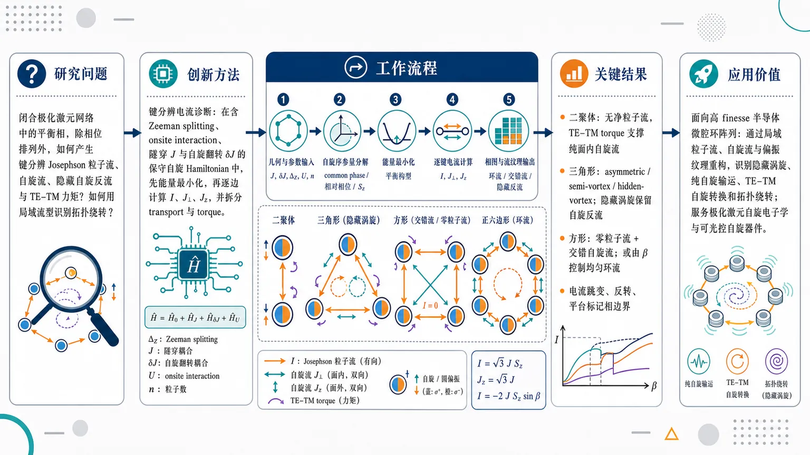
研究问题耦合自旋激子-极化激元凝聚体在二聚体、三角形、方形及更大正多边形闭合网络中，平衡相不仅表现为相位排列，还会产生怎样的键分辨 Josephson 类粒子流、自旋流、隐藏自旋反流与 TE–TM 力矩？如何用这些局域流型识别不同平衡相与拓扑绕转结构？创新方法提出“键分辨电流诊断”框架：在含 Zeeman splitting、同自旋 onsite interaction、自旋守恒隧穿 J 与 TE–TM 诱导自旋翻转隧穿 δJ 的保守自旋 Hamiltonian 中，先最小化能量得到平衡构型，再逐条边计算粒子流与三分量自旋流，并将自旋流拆分为真实跨边传输的 transport 项和 TE–TM 界面自旋转换的 torque 项。Aha 点是：隐藏涡旋、纯自旋反流和零粒子流相可通过局域电流纹理直接显影，而不是只看相位图。工作流程输入为极化激元网络几何与参数 J、δJ、ΔZ、U、等站点密度 n；每个站点用自旋or序参量表示，分解为 common phase、相对相位和圆偏振度 Sz；通过经典能量最小化获得平衡相；在每条有向键上计算粒子流 I、面内自旋流 J⊥、面外自旋流 Jz，并区分 transport 与 torque；最后把二聚体、三角形、方形和更大多边形的相区映射成可视化的环流、交错流、隐藏反流和拓扑绕转图案。关键结果二聚体无净粒子流，但存在由 TE–TM torque 支撑的纯面内自旋流；三角形出现 asymmetric、semi-vortex、hidden-vortex 三类相，其中 hidden-vortex 由两圆偏振组分反向绕转产生，粒子流 I=√3JSz，面外自旋流固定为 Jz=√3J，即使 Sz=0 也保留隐藏自旋反流；方形 plaquette 可出现全边零粒子流但非零交错自旋流，也可在自由角 β 控制下形成均匀粒子环流 I=-2JSz sinβ 和面外自旋环流 Jz=-2J sinβ；粒子流、面内自旋流与面外自旋流的跳变、符号反转和平台可清晰标记相边界。应用价值为高 finesse 半导体微腔中的极化激元环阵列提供一种可观测的相识别工具：通过测量或重构局域粒子流、自旋流和偏振纹理，就能识别隐藏涡旋、纯自旋输运、TE–TM 自旋转换和拓扑绕转。该框架可用于设计可光学调控的自旋输运器件、极化激元自旋电子学元件，以及用微腔晶格模拟多组分量子网络中的持续环流和隐藏自旋反流。第一部分：核心概览 (Overview)
该研究把耦合自旋or激子-极化激元凝聚体中的平衡相结构转化为键分辨粒子流与自旋流诊断问题，系统揭示了Josephson-like particle currents、hidden spin counterflows、TE–TM-induced spin-flip tunnelling与几何拓扑之间的关系。核心贡献在于：对二聚体、三角形、方形plaquette给出解析电流表达式，并将该框架推广到更大正多边形环，形成一种用局域流型识别极化激元晶格平衡相的新方法。
---
第二部分：结构化快速回顾
《Josephson and Spin Currents in Coupled Polariton Condensates》（None，）
背景
激子-极化激元凝聚体兼具轻有效质量、强非线性、光学可控性与自旋自由度，可模拟多组分晶格模型。此前工作主要关注平衡相结构或强非平衡凝聚机制，但缺少对这些相中粒子流、自旋流与TE–TM torque的系统刻画。
方法
建立包含Zeeman splitting、同自旋 onsite interaction、spin-conserving hopping (J) 与 TE–TM spin-flip hopping (δ J) 的保守自旋or Hamiltonian。通过固定等密度、最小化经典能量获得平衡态，再用键分辨定义计算particle current (Iₗ→ ⱼ)、spin current (mathbf Jₗ→ ⱼ)、transport/torque 分解。
结果
二聚体无净粒子流但存在纯 torque 型面内自旋流；三角形支持 asymmetric、semi-vortex、hidden-vortex 三类相，其中 hidden-vortex 产生 (Iₘ̊ III=sqrt3 J S_z) 与 (J^z=sqrt3 J)；方形plaquette出现零粒子流但非零交错自旋流，以及自由角 (β) 控制的均匀循环态。
讨论
粒子流、面内自旋流、面外自旋流能够区分相区与相边界。TE–TM splitting 不仅诱导 spin-flip tunnelling，还通过 torque 项使总自旋流不再简单反对称。闭合几何中的相位绕转与自旋组分手性决定了隐藏涡旋与自旋环流。
局限
分析限定在保守平衡构型、等站点占据数与固定参数能量最小化；gain、dissipation、dynamical stability明确不在范围内。方形部分存在连续自由角退相干式简并，某些 (β)-dependent observables 不能由保守模型唯一决定。提供文本在 III.4 开头截断，五边形及更大环的完整结果不可见。
结论
键分辨电流提供了比相位图更直接的物理诊断：闭合极化激元网络可在热平衡中承载持续粒子环流、隐藏自旋反流、交错自旋纹理和TE–TM torque 主导的自旋转换。该框架为高 finesse 微腔中极化激元环阵列的相识别与自旋输运设计提供理论基础。
---
第三部分：逐章节冷凝解析 (Section-by-Section Condensing)
Abstract
Current-resolved diagnosis of spinor polariton networks
研究对象是由spinor exciton–polariton condensates构成的耦合网络，几何包括plaquettes与regular polygonal rings。核心物理量不是单纯能量相，而是particle currents与spin currents；摘要直接界定为 *"We analyze particle and spin currents in networks of coupled spinor exciton–polariton condensates arranged as plaquettes and regular polygonal rings."*
Closed geometries generate particle circulation and hidden spin transport
在闭合几何中，spin-conserving tunnelling 与 TE–TM-induced spin-flip tunnelling 协同产生三类流动结构：循环粒子流、隐藏自旋反向流、键依赖自旋流纹理。关键表述为 *"In closed geometries, spin-conserving and TE–TM-induced spin-flip tunnelling combine to generate circulating particle currents, hidden spin counterflows, and bond-dependent spin-current patterns."*
Minimal geometries receive analytical treatment
三角形与方形plaquette被作为最小闭合单元，解析推导edge-resolved currents，平衡态来自energy minimization。摘要给出范围：*"For the minimal geometries – an equilateral triangle, and a square plaquette – we derive analytical expressions for edge-resolved currents from stationary configurations obtained by energy minimization."*
Current partitions parameter space and labels equilibrium phases
研究不只列出电流公式，还把particle current、in-plane spin current、out-of-plane spin current作为相图分区工具。直接表述为 *"particle, in-plane spin, and out-of-plane spin currents partition the parameter plane and provide direct signatures of the equilibrium phases."*
Larger rings require topological and coherence diagnostics
更大环中采用winding numbers和branch-invariant common-phase coherence metric组织相结构，摘要中明确为 *"we apply the same current-resolved diagnostics to larger rings, where winding numbers and a branch-invariant common-phase coherence metric organize the resulting phase structure."* 由于提供文本在 III.4 开头截断，具体 winding number 与 coherence metric 定义未显示。
---
I Introduction
Lattice many-body simulation needs tunable strongly coupled platforms
强关联多体系统的晶格几何被用于工程化新物态，但复杂晶格模型要求可调强耦合平台。背景判断为 *"Strongly correlated many-body systems in lattice geometries provide a powerful framework for engineering and exploring novel phases of matter"*，同时指出需求为 *"simulation of complex lattice models demands platforms with strong tunable interactions between lattice sites."*
Conventional simulators face tunability and extreme-condition constraints
冷原子、囚禁离子、超导线路虽是成熟平台，但存在操作可调性限制与极低温等条件要求。具体列举为 *"Conventional systems, such as ultracold atoms, trapped ions, or superconducting circuits, often face limitations in terms of operational tunability and require extreme conditions, such as ultra-low temperatures."*
Planar microcavity polariton condensates offer optical control and lattice flexibility
平面半导体微腔中的Bose-Einstein condensates of exciton-polaritons具备全光控制、相干性与一维/二维晶格可实现性。优势表述为 *"These systems benefit from all-optical control, exceptional coherence properties, and the ability to realize a wide range of one- and two-dimensional lattice configurations."*
Polariton condensation benefits from light mass and bosonic character
Polaritons是量子阱激子与腔光子强耦合形成的混合光-物质准粒子；其超轻有效质量与玻色特性允许较高温凝聚。定义与优势为 *"Polaritons are hybrid light-matter quasiparticles arising from the strong coupling between quantum well excitons and cavity photons"*，以及 *"their ultra-light effective mass and bosonic character allows condensation at elevated temperatures."*
Photonic and excitonic components jointly enable probing and nonlinearity
光子成分带来快速非平衡动力学和直接光学探测，激子成分带来强相互作用与非线性。关键证据为 *"their inherent photonic component facilitates fast non-equilibrium dynamics and direct optical probing"*，以及 *"pronounced nonlinearity, originating from the excitonic constituent, which enables strong interparticle interactions."*
Spinor order parameter enriches polariton lattice physics
极化激元继承光子偏振和激子自旋，因此具有spin degree of freedom；这种自旋or结构允许模拟更复杂多组分模型。直接表述为 *"polaritons possess a spin degree of freedom, inherited from the photon polarization and the exciton spin"*，并进一步说明 *"This spinor character introduces a rich internal structure, allowing polariton lattices to simulate more complex, multi-component physical models."*
Previous spinor lattice work motivates current-focused extension
已有理论把XY lattice model扩展到包含自旋自由度，并研究磁场诱导的spin Meissner effect及其几何依赖性。背景语句为 *"Recent theoretical work has extended the XY lattice model to include this spinor degree of freedom"*，以及 *"The application of a magnetic field results in the spin Meissner effect, whose specific manifestations are highly dependent on the underlying lattice geometry."*
Global phase coherence permits supercurrents and Josephson-like transport
耦合凝聚体晶格建立全局相干性后出现由站点间相位梯度驱动的超流，关联超流性与超导性。核心表述为 *"The establishment of global phase coherence in a lattice of coupled condensates facilitates the emergence of supercurrents"*，并定义驱动机制为 *"persistent currents, driven by phase gradients between sites."*
Driven-dissipative polariton systems use currents to balance gain-loss imbalance
尽管该研究关注保守平衡，高亮背景仍指出在驱动耗散系统中，电流还可补偿增益-损耗不平衡：*"In driven-dissipative systems such as polariton condensates, they additionally serve to compensate for gain-loss imbalances."*
Spinor order parameter allows particle flow to carry spin polarization
具有自旋or序参量的系统中，粒子流可携带净自旋极化，直接连接 spintronics。关键表述为 *"A key distinction arises in systems possessing a spinor order parameter, where the flow of particles can carry a net spin polarization"*，以及 *"The generation of such spin currents is a subject of great interest, particularly for their potential implications in spintronics."*
Research aim centers on current formation in coupled spinor condensate networks
目标是理论研究网络中的 current formation，参数包括 (J)、(δ J)、(Δ_Z)、拓扑。明确范围为 *"we theoretically investigate current formation in networks of coupled spinor polariton condensates"*，并具体为 *"Josephson-like particle currents, spin transport, and TE–TM-induced torque terms depend on the spin-conserving coupling, spin-flip coupling, Zeeman splitting, and lattice topology."*
Equilibrium conservative regime differs from prior equilibrium-phase and dissipative-condensation studies
此前主要处理平衡相结构或强非平衡凝聚机制；这里聚焦高 finesse 微腔相关的保守平衡构型。对比句为 *"Previous studies have primarily addressed either equilibrium phase structures or strongly non-equilibrium condensation mechanisms governed by driven–dissipative processes"*，而定位为 *"we focus on conservative equilibrium configurations relevant to high-finesse microcavities."*
Phase diagrams come from energy minimization and are interpreted through bond currents
热平衡选择最低能态，因此先最小化能量得相图，再用键分辨粒子与自旋流解释相。方法逻辑为 *"Since thermal equilibrium selects a minimum-energy state, we determine phase diagrams by energy minimization and then interpret the phases through bond-resolved particle and spin currents."*
Paper structure separates model, prototypical geometries, continuum-ring discussion and summary
结构安排包括 Sec. II 的 Hamiltonian 与 current definitions、Sec. III 的 dyad/triangle/square/larger polygon rings 与 continuum-ring limit、Sec. IV 总结。文本说明为 *"In Sec. II we introduce the conservative spinor Hamiltonian and define particle and spin currents, including the transport/torque decomposition"*，以及 *"In Sec. III we analyze current patterns in a dyad, an equilateral triangle, a square plaquette, and larger polygonal rings, and then discuss the approach to the continuum-ring limit."* 提供材料未包含 Sec. IV 正文。
---
II Model
II.1 Hamiltonian
Network contains (N) spatially separated spinor condensates in magnetic field
系统由 (N) 个空间分离的激子-极化激元凝聚体组成，置于磁场中；每个站点以圆偏振基 (hatbm aⱼ₌₍hat aⱼ₊,hat aⱼ₋)mathsf T) 描述。定义为 *"We consider a network of (N) spatially separated exciton-polariton condensates in a magnetic field"*，并给出 *"(hatbmaⱼ=(hataⱼ₊,hataⱼ₋)mathsfT)."*
Hamiltonian decomposes into Zeeman, onsite interaction and tunnelling terms
总 Hamiltonian 为
[
hat H=hat H_Z+hat H_U+hat H_T .
]
三部分分别为磁场 Zeeman 项、同圆偏振 onsite interaction、邻边隧穿。公式证据为 *"(hatH=hatHZ+hatHU+hatHT)"*。
Zeeman splitting biases circular polarization
Zeeman 项为
[
hat H_Z=-frachbarΔ_Z2sumⱼhatbm aⱼ^daggerσ_zhatbm aⱼ ,
]
其中 (Δ_Z) 是 Zeeman splitting。参数解释为 *"where (Δ_Z) is the Zeeman splitting."* 该项能量上偏置 (σ₊) 与 (σ₋) 分量，从而诱导 (S_z≠0)。
On-site interaction keeps only equal circular components
相互作用项为
[
hat H_U=hbar Usumⱼsumσ₌±
hat a^daggerⱼσhat a^daggerⱼσhat aⱼσhat aⱼσ.
]
其中 (U) 是相同圆偏振分量的 onsite interaction，反自旋相互作用被忽略。精确说明为 *"(U) is the on-site interaction between equal circular components (the opposite-spin interaction is neglected)."*
Tunnelling combines spin-conserving and TE–TM spin-flip hopping
隧穿矩阵为
[
Tⱼₗ=hbarłeft[J+δ J(o̧sθⱼₗσₓ₋sinθⱼₗσ_y)i̊ght].
]
其中 (J) 是 spin-conserving hopping，(δ J) 是 TE–TM-induced spin-flip amplitude。文本说明为 *"The tunnelling term combines spin-conserving and spin-flip hopping through the (2×2) matrix"*，并定义 *"(J) is the spin-conserving hopping amplitude and (δ J) is the TE–TM-induced spin-flip amplitude."*
Bond angle enters as twice the geometric polar angle
(θⱼₗ) 是连接站点 (j,l) 的键的极角两倍，并按 (2π) 取模。具体表述为 *"The angle (θⱼₗ) is twice the polar angle (defined modulo (2π)) of the bond connecting sites (j) and (l)."* 这意味着几何方向通过 TE–TM splitting 写入 spin-flip hopping。
Mean-field limit replaces operators by classical spinors
平均场下 (hatbm aⱼ→bmΨⱼ)，其中 (bmΨⱼ₌₍ψⱼ,₊,ψⱼ,₋)mathsf T)。依据为 *"In the mean-field limit we replace operators by c-numbers, (hatbmaⱼ→bmΨⱼ)"*。经典 Hamiltonian 为 (H=łanglehat Hångle=H_Z+H_U+H_T)。
Classical dynamics follow canonical Gross-Pitaevskii-like equations
将 (bmΨⱼ) 与 (bmΨⱼ^*) 视为正则共轭变量，得到
[
ihbardotbmΨⱼ
=
-frachbarΔ_Z2σ_zbmΨⱼ
+2hbar Uøperatornamediag(|ψⱼ,₊|²,|ψⱼ,₋|²⁾bmΨⱼ
+sumₗᵢₙłₐₙgₗₑ ⱼåₙgₗₑTⱼₗbmΨₗ .
]
表述为 *"Treating (bmΨⱼ) and (bmΨⱼ*) as canonically conjugate variables gives"* 该式决定保守动力学。
Gain, dissipation and stability are explicitly excluded
研究范围不包括增益、耗散与保守平衡态的动力学稳定性。限制被直接写明：*"Gain, dissipation, and the dynamical stability of the conservative equilibria are outside the scope of the present paper and are left for a separate study."*
---
II.2 Observables: particle and spin currents
Directed-bond particle current uses imaginary part of tunnelling amplitude
在有向键 (l→ j) 上，粒子流定义为
[
Iₗ→ ⱼ=frac2hbarIm(bmΨⱼ^dagger TⱼₗbmΨₗ₎.
]
这一定义直接对应 *"On each directed bond (l→ j) we define the particle current (Iₗ→ ⱼ)"*，公式为 *"(Iₗ→ ⱼ=frac2hbarIm(bmΨⱼdaggerTⱼₗbmΨₗ))."*
Spin current includes Pauli-vector insertion and decomposes into transport plus torque
伪自旋流为
[
mathbf Jₗ→ ⱼ
=
frac2hbarIm(bmΨⱼ^daggerboldsymbolσ TⱼₗbmΨₗ₎
=
mathbf Jm̊ trₗ→ ⱼ+boldsymbolτₗ→ ⱼ.
]
分解中，transport 使用反对易子 (boldsymbolσ,Tⱼₗ/2)，torque 使用对易子 ([boldsymbolσ,Tⱼₗ]/2)。定义为 *"(bmJₗ→ ⱼ=frac2hbarIm(bmΨⱼdaggerbmσTⱼₗbmΨₗ)=bmJtrₗ→ ⱼ+bmτₗ→ ⱼ)."*
Transport current crosses boundary, torque describes TE–TM spin conversion
(mathbf Jm̊ tr) 才表示实际跨越网络边界传输的自旋；(boldsymbolτ) 表示 TE–TM coupling 造成的界面自旋转换。关键解释为 *"only the former represents spin carried across the edge of the network, while (bmτₗ→ ⱼ) describes the spin conversion generated by the TE–TM coupling."*
Bond reversal has different parity for particle, transport spin and torque
反向键下：
[
Iₗ→ ⱼ=-Iⱼ→ ₗ,quad
mathbf Jm̊ trₗ→ ⱼ=-mathbf Jm̊ trⱼ→ ₗ,quad
boldsymbolτₗ→ ⱼ=boldsymbolτⱼ→ ₗ.
]
因此总自旋流 (mathbf Jₗ→ ⱼ) 不必在反向下反对称。证据为 *"so the total spin current (bmJₗ→ ⱼ) needs not be antisymmetric under bond reversal."*
In-plane spin-current magnitude is defined separately
面内分量大小定义为
[
J^perpₗ→ ⱼ=|mathbf J^perpₗ→ ⱼ|=sqrt(J^xₗ→ ⱼ)²⁺⁽J^yₗ→ ⱼ)².
]
直接定义为 *"we denote the magnitude of the in-plane spin-current component by (Jperpₗ→ ⱼequiv|bmJperpₗ→ ⱼ|)."*
Equal site occupancy approximation fixes current per particle
分析限制于等站点占据 (nⱼ₌bmΨⱼ^daggerbmΨⱼ₌ₙ)，研究 (Iₗ→ ⱼ/n) 与 (mathbf Jₗ→ ⱼ/n)，并省略显式 (n)。文本为 *"we restrict attention to states with equal site occupancies, (nⱼequivbmΨⱼdaggerbmΨⱼ=n)"*，以及 *"study the currents per particle."*
Spinor parameterization separates common phase, relative phase and circular polarization
每站点写作
[
ψⱼ,σ
=
sqrtfrac n2(1+σ Sⱼz)
eⁱ⁽Φⱼ₊σφⱼ/²⁾,quad σ=±1.
]
其中 (Sⱼzin[-1,1]) 为圆偏振度，(Φⱼ) 为 common phase，(φⱼ) 为相对相位。定义证据为 *"(Sⱼz=sⱼz/n=(|ψⱼ,₊|²-|ψⱼ,₋|²)/nin[-1,1])"*，以及 *"(Φⱼ) is the common phase, and (φⱼ) is the relative phase between the two circular components."*
Stationary minimum selected by (J,δ J,Δ_Z,U,n)
网络构型通过在固定 (J,δ J,Δ_Z,U,n) 下最小化经典 Hamiltonian 获得；(Δ_Z) 偏置 (S_z)，(U) 进入非线性进动，(J,δ J) 固定相位锁定。概括句为 *"The network configuration is then determined by minimizing the classical Hamiltonian at fixed system parameters"*，并明确 *"(Δ_Z) biases (S_z), (U) enters the nonlinear precession, and (J) together with (δ J) fixes the phase locking of the condensates."*
Density is conserved but pseudospin is not separately conserved
连续性方程为
[
dot nⱼ₌sumₗᵢₙłₐₙgₗₑ ⱼåₙgₗₑIₗ→ ⱼ,
]
[
dotmathbf sⱼ
=
sumₗᵢₙłₐₙgₗₑ ⱼåₙgₗₑmathbf Jₗ→ ⱼ
-(Δ_Z-2Usⱼz)hatmathbf z×mathbf sⱼ.
]
第一式体现粒子数守恒；第二式表明伪自旋因 Zeeman 和 interaction-induced self-Larmor precession 而不守恒。说明为 *"Eq. (7a) constitutes conservation of the total number of particles"*，以及 *"pseudospin is not separately conserved."*
Parameter space reduced to (δ Jge0,Δ_Zge0) by symmetries
(δ J→-δ J) 可由 (bmΨⱼ→σ_zbmΨⱼ) 实现；能谱相同，粒子流与 (J^z) 保持，(J^x,J^y) 反号。直接表述为 *"the sign change (δ J→-δ J) is generated by the unitary transformation (bmΨⱼ→σ_zbmΨⱼ)"*，以及 *"preserves the particle current and the (z)-component of the spin current ... while reversing the (x) and (y) components."*
Time reversal plus magnetic-field reversal gives second symmetry
(bmΨⱼ→σₓbmΨⱼ^*) 与 (Δ_Z→-Δ_Z) 联合保持能谱；(I,J^x,J^y) 反号，(J^z) 不变。文本为 *"the energy spectrum is invariant under the combined operation of time reversal (bmΨⱼ→σₓbmΨⱼ*) and sign reversal of the magnetic field, (Δ_Z→-Δ_Z)."* 因而只需研究 *"(δ J≥0) and (Δ_Z≥0)."*
---
III Results for prototypical geometries
Equilibrium configurations minimize total energy
所有几何的平衡构型由总能量最小化决定：*"In equilibrium, the stationary configuration minimizes the total energy."* 二聚体、三角形、方形的基态构型来自既有相结构结果，并被重新表达为 ((Φⱼ,φⱼ,Sⱼz))。
Small geometries receive phase-by-phase current formulas; larger systems use numerical classification
小系统可解析，大环完整相参量化变得笨重，因此转向数值最小化与多诊断分类。依据为 *"For larger systems, a complete phase-by-phase parametrization becomes unwieldy; we therefore obtain the stationary minima numerically and classify them using particle currents, spin currents, polarization-resolved winding numbers, and a branch-invariant common-phase coherence metric."* 提供文本未包含后续大环定义细节。
---
III.1 Currents in a spinor dimer (dyad)
Dimer ground state is phase-locked according to sign of (J)
两个耦合凝聚体的 common phase locking 为：(J<0) 时 (Φ₂₋Φ₁₌₀)，(J>0) 时 (Φ₂₋Φ₁₌π)。直接描述为 *"Two coupled condensates in the ground state are phase-locked with (Φ₂₋Φ₁₌₀) for (J<0) and (Φ₂₋Φ₁₌π) for (J>0)."*
Density continuity enforces zero particle current
二聚体平衡态无净粒子流：
[
I₁→₂=I₂→₁=0.
]
证据为 *"The density continuity (7a) then enforces absence of the net particle flow."*
Magnetic field induces equal elliptic polarization on two sites
为补偿外磁场，两站点产生相同非零圆偏振：
[
S₁z=S₂z≠0.
]
表述为 *"To compensate for the external magnetic field, the condensates become elliptically polarized, (S₁z=S₂z≠0)."*
In-plane spin current balances self-induced pseudospin rotation
Zeeman 与相互作用导致 pseudospin 绕 (z) 轴自诱导旋转，必须由面内自旋流平衡。文本为 *"It involves a self-induced rotation of the pseudospin about the (z) axis, which must be balanced by the in-plane spin currents."*
Dimer spin current is pure torque and has no spin transport
自旋流为
[
J^x₁→₂,J^y₁→₂
=
-2ḩiδ J S_zsinθ₁₂,o̧sθ₁₂,
quad
J^z₁→₂=0,
]
其中 (ḩi=o̧s(Φ₂₋Φ₁₎₌±1)。键反转满足 (mathbf J₁→₂=mathbf J₂→₁)，因此只有 torque part。关键句为 *"The latter implies that the spin current contains only the torque part and exhibits no spin transport."*
Closed loops allow nontrivial patterns absent in dyad
多凝聚体网络比二聚体复杂，闭合几何可支持非平庸流纹理。表述为 *"Networks of several coupled condensates are substantially more complex than a dyad and can support nontrivial current patterns."*
Regular polygon stationarity fixes uniform particle current but not uniform spin current
正多边形等密度稳态中，密度连续性要求每条有向边净粒子流相同；自旋流中 transport 与 TE–TM torque 可随键变化。证据为 *"Eq. (7a) enforces the same net particle current on every directed edge of the ring"*，以及 *"Spin currents are more intricate: the transported spin and the TE–TM-induced interfacial torque can vary from bond to bond even when the particle circulation is uniform."*
---
III.2 Currents in an equilateral triangle
Triangle geometry fixes three doubled bond angles
等边三角形按顺时针标记 (1,2,3)，键角选择为
[
θ₁₂=2π/3,quad
θ₂₃=4π/3,quad
θ₃₁=0.
]
几何设定为 *"We label the sites clockwise as (1,2,3) and choose the bond angles..."*
Triangle has three energy-minimizing phases
基态相包括 asymmetric state、semi-vortex state、hidden-vortex state。直接列举为 *"The stationary minima ... comprise an asymmetric state (phase I), a semi-vortex state (phase II), and a hidden-vortex state (phase III)."*
---
Hidden-vortex state (phase III)
#### Opposite circular chiralities create hidden vortex
Hidden-vortex 态中 (σ₊) 与 (σ₋) 圆偏振组分以相反手性绕转，且 (Sⱼzequiv S_z) 均匀。描述为 *"the two circular components wind with opposite chiralities while (Sⱼzequiv S_z) is uniform."*
#### Field-induced particle circulation scales with (S_z)
每条键的粒子环流为
[
Iₘ̊ III=sqrt3 J S_z.
]
因此 (S_z=0) 时粒子流消失；总粒子环流为 (3sqrt3JS_z)。证据为 *"This configuration supports a field-induced net particle circulation, which vanishes at (S_z=0): (Iₘ̊ III=sqrt3JS_z)"*，以及 *"The total particle circulation is therefore (3sqrt3JS_z)."*
#### Weak-field circular polarization is linear in (Δ_Z)
弱场近似：
[
S_zapprox fracΔ_Z2(2|δ J|+Un).
]
因此粒子流对 (Δ_Z) 领先阶线性。文本为 *"At weak fields, the elliptic polarization degree reads ... so the particle current is linear in (Δ_Z) to leading order."*
#### Out-of-plane spin current is uniform and independent of (S_z)
三条边上
[
J^z₁→₂=J^z₂→₃=J^z₃→₁=sqrt3J.
]
它在等占据下不依赖 (S_z)。表述为 *"The out-of-plane spin current is ... (sqrt3J), independent of (S_z) for equal occupancies."*
#### Ferromagnetic (J<0) reverses plotted circulation sign
相图中采用 (J<0)，此时 (J^z₁→₂<0)，对应逆时针循环。证据为 *"For the ferromagnetic case, (J<0), which is shown in the phase maps below, this corresponds to the counterclockwise circulation, (Jz₁→₂<0)."*
#### Regular (m)-gon hidden spin circulation has continuum limit (4π J)
更一般地，(m) 边正多边形若两圆偏振组分手性相反，则
[
J^z=2Jsin(2π/m),
]
总 (z)-spin circulation 在连续环极限趋于 (4π J)。表述为 *"for a regular (m)-edge polygon with opposite chiralities ... (J^z=2Jsin(2π/m)), so the total (z)-spin circulation tends to (4π J)."*
#### In-plane spin current rotates by bond with fixed magnitude
三条边面内分量为
[
J^x₁→₂,J^x₂→₃,J^x₃→₁
=
0,-sqrt3,sqrt3δ JS_z,
]
[
J^y₁→₂,J^y₂→₃,J^y₃→₁
=
-2,1,1δ JS_z.
]
每条键大小相同：
[
J^perpₗ→ ⱼ=2|δ JS_z|.
]
图注也强调 *"their directions rotate from bond to bond, but their magnitude is the same."*
---
Asymmetric state (phase I)
#### Phase I exists only for ferromagnetic (J<0)
asymmetric state 的存在条件为 (J<0)。直接句为 *"Phase I exists only for the ferromagnetic sign of the spin-conserving coupling, (J<0)."*
#### Stationary spinors contain one inequivalent site
参数化为
[
(Φ₁,Φ₂,Φ₃₎₌₍₀,δα,-δα),
]
[
(φ₁,φ₂,φ₃₎₌₍₂φ₀,2φ₀₋δφ,2φ₀₊δφ),
]
[
(S₁z,S₂z,S₃z)=(S_z+δ S_z,S_z,S_z).
]
其中 (φ₀) 是整体相对相位偏移，(δ S_z,δα,δφ) 由能量最小化固定。证据为 *"(φ₀) is an overall relative-phase offset and (δ S_z,δα,δφ) are fixed by energy minimization."*
#### Uniform particle current has explicit nonlinear phase-polarization dependence
粒子流为
[
Iₘ̊ I
=
2łeft[
Jłeft(o̧sδφsin2δα
-
S_zo̧s2δαsinδφi̊ght)
-
|δ J|sin2δαsqrt1-S_z²
i̊ght].
]
这显示 (J)、(δ J)、相位偏移、圆偏振共同决定粒子流。公式直接给出为 *"The uniform particle current is governed by..."*
#### Zero magnetic field restores symmetry and kills current
当磁场为零时，
[
S_z=δ S_z=δα=δφ=0,quad Iₘ̊ I=0.
]
说明为 *"the current vanishes at zero magnetic field ... when the symmetry of the phase pattern is restored."*
#### Spin current has all three nonzero projections and inherits bond asymmetry
phase I 的自旋流解析式很长；稳态连续性要求它平衡磁场与相互作用诱导的 pseudospin precession，因此 (x,y,z) 三个投影均非零。证据为 *"the spin current balances the magnetic-field- and interaction-induced precession of the pseudospin and therefore has all three non-vanishing projections."*
#### Edge (3→1) differs from (1→2) and (2→3)
自旋流继承相位结构不对称，(3→1) 边不同于另外两边。描述为 *"the current on the edge (3→1) differs from those on (1→2) and (2→3)."*
---
Semi-vortex state (phase II)
#### Only one circular component carries (2π/3) winding
在 (J<0) 的 ferromagnetic regime 中，phase II 具有均匀 (S_z)，(σ₋) 分量有 (2π/3) 绕转，而 (σ₊) 无相位环流。描述为 *"a (2π/3) phase winding in the (σ₋) component only, while (σ₊) has no phase circulation."*
#### Particle current is uniform and depends on (|S_z|)
正 (δ J) 扫描中的能量最小 semi-vortex 分支有统一环流：
[
Iₘ̊ II
=
fracsqrt32
łeft[
J(1-|S_z|)
-
2|δ J|sqrt1-S_z²
i̊ght].
]
证据为 *"the energy-minimizing semi-vortex phase carries a uniform circulation"*，公式为 *"the particle current at each bond reads..."*
#### Out-of-plane spin current is uniform and transport-like
[
J^zₘ̊ II
=
fracsqrt32J(|S_z|-1).
]
并且
[
Jz,m̊ trₗ→ ⱼ=J^zₗ→ ⱼ,quad τ^zₗ→ ⱼ=0.
]
文本明确为 *"The out-of-plane spin current is also uniform"*，以及 *"corresponds to the transport current ... with (τ^zₗ→ ⱼ=0)."*
#### TE–TM splitting affects (J^z) only indirectly
(J^zₘ̊ II) 中没有显式 (δ J)，但 (δ J) 通过选定 (S_z) 间接影响。说明为 *"the TE–TM splitting affects (J^z) only indirectly through the selected value of (S_z)."*
#### Spin-conserving current remains finite at (S_z=0) and vanishes at full polarization
当 (S_z=0) 时 (J^zₘ̊ II) 仍有限，反映有绕转圆偏振组分携带的 spin-conserving current；当 (|S_z|→1) 时消失。文本为 *"(J^zₘ̊ II) remains finite even at (S_z=0) reflecting the spin-conserving current carried by the winding circular component and vanishes at (|S_z|→1)."*
#### In-plane spin-current magnitude is bond-independent with three-term formula
[
(J^perpₗ→ ⱼ)²
=
δ J²⁽³⁺S_z²⁾
+
3Jδ J(S_z-1)sqrt1-S_z²
+
3J²⁽¹⁻S_z²⁾.
]
且 (|S_z|→1) 时 ((J^perp)²→4δ J²)。公式证据为 *"The in-plane spin current (J^perpₗ→ ⱼ) has a bond-independent magnitude governed by..."*，极限为 *"Thus ... (→4δ J²)."*
---
Numerical maps and analytic line cuts
#### Triangle current maps computed at (J/Un=-1)
相图在 ((δ J/Un,Δ_Z/Un)) 平面、固定 (J/Un=-1)、(δ J>0) 下计算。图注给出 *"Ground-state current maps for an equilateral triangle at fixed (J/Un=-1)"*，并说明所有值是 (1→2) 边的 per-particle currents。
#### Three observables distinguish three phases
图 4 显示 (I₁→₂)、(J^perp₁→₂)、(J^z₁→₂)，这些 observables 区分 phases I–III。文本为 *"These observables distinguish the three phases."*
#### Hidden-vortex phase has fixed (J^z=sqrt3J)
图 4(c) 中 hatched region 为 phase III，其中 (J^z₁→₂=sqrt3J)，因 (J/Un=-1) 为负。图注为 *"the hidden-vortex phase III, where (J^z₁→₂=sqrt3J) is fixed by the phase winding and is therefore negative for (J/Un=-1)."*
#### Phase switches appear as current jumps or sign changes
图 5 的一维 cuts：左列固定 (δ J/Un=1.30) 扫 (Δ_Z/Un)，右列固定 (Δ_Z/Un=1.00) 扫 (δ J/Un)。相边界由 current discontinuities 或 sign changes 指示。文本为 *"Sharp changes or sign reversals of the currents indicate phase boundaries"*，并强调 *"within a fixed branch the current diagnostics vary smoothly."*
---
III.3 Currents in a square plaquette
Square plaquette uses four cyclically connected sites
方形plaquette由 (j=1,2,3,4) 四个凝聚体组成，按 (1→2→3→4→1) 循环连接。开头为 *"We now consider a square plaquette of four condensates labeled (j=1,2,3,4) and connected cyclically as (1→2→3→4→1)."*
Bond-angle convention makes spin-flip sign alternate
选取
[
θ₁₂=θ₃₄=π,quad
θ₂₃=θ₄₁=0,
]
使 spin-flip contribution 在相邻边交替符号。文本为 *"so the spin-flip contribution alternates in sign between adjacent edges."*
(ηₗ→ ⱼ) encodes edge alternation
定义
[
ηₗ→ ⱼ=+1
quadfor 1→2,3→4,
]
[
ηₗ→ ⱼ=-1
quadfor 2→3,4→1.
]
该量 *"encodes this alternation."*
All square phases have uniform (S_z)
方形所有相的能量最小化给出均匀 out-of-plane spin component：
[
Sⱼzequiv S_z.
]
直接表述为 *"For all square phases considered below, energy minimization gives a uniform out-of-plane spin component."*
---
Bond-staggered torque-induced spin current without particle current (phase I)
#### Phase I has spatially uniform total and relative phases
[
Φ₁₌Φ₂₌Φ₃₌Φ₄,
quad
φ₁₌φ₂₌φ₃₌φ₄₌β.
]
文本为 *"In Phase I, the total and relative phases are spatially uniform."*
#### Energy is independent of free angle (β)
(β) 控制偏振椭圆方向，但能量不依赖 (β)。证据为 *"the total energy being independent of the angle (β), which, however, defines the orientation of the polarization ellipses."* 因此 (β)-dependent observables 不唯一。
#### Particle current vanishes identically
所有边
[
Iₗ→ ⱼ=0.
]
直接公式为 *"(Iₗ→ ⱼ=0)."* 因而 phase I 是无粒子输运但有自旋流的态。
#### Spin current is staggered through (η)
自旋流为
[
J^xₗ→ ⱼ=0,quad
J^yₗ→ ⱼ=2ηₗ→ ⱼδ J S_z,
]
[
J^zₗ→ ⱼ=2ηₗ→ ⱼδ J Sₚₑᵣₚₛᵢₙβ,
quad
Sₚₑᵣₚ₌ₛqrt1-S_z².
]
总结句为 *"Thus phase I has no particle transport, while the spin current is staggered from bond to bond through (ηₗ→ ⱼ)."*
#### Choice (J^x=0,J^y≠0) is basis-orientation dependent
该相中 (J^x=0,J^y≠0) 不是基本物理结论，而源于方形边取向 (θⱼₗin0,π)。文本为 *"The fact that (J^x=0) but (J^y≠0) is not fundamental; it follows from the assumed orientation of square edges."*
---
Bond-asymmetric spin transport with vanishing particle current (phase II)
#### Phase II uses paired common phases and paired relative phases
[
Φ₁₌Φ₂₌₊α,quad
Φ₃₌Φ₄₌₋α,
]
[
φ₁₌φ₂₌₂α-π,quad
φ₃₌φ₄₌₋₂α+π.
]
直接描述为 *"It is characterized by..."*
#### Parameter (α) obeys stationarity equation
[
J(1+S_z)sin(4α)
=
2δ Jsqrt1-S_z²sin(2α).
]
公式为 *"with uniform (Sⱼzequiv S_z) and (α) governed by..."*
#### Particle current vanishes on all four bonds
[
I₁→₂=I₂→₃=I₃→₄=I₄→₁=0.
]
文本为 *"The net particle current vanishes in this phase."*
#### Spin current is edge-dependent and compactly expressible
方形 phase II 的自旋流：
[
J^x₁→₂=J^x₃→₄=0,
]
[
J^x₂→₃=-J^x₄→₁
=
fracδ J²⁻J²Jδ JJ^zₘ̊ II,
]
[
J^y₁→₂=J^y₃→₄=2δ J S_z,
]
[
J^y₂→₃=J^y₄→₁
=
2δ Jłeft[fracδ J²J²(1-S_z)-1i̊ght],
]
[
J^z₁→₂=J^z₂→₃=-J^z₃→₄=-J^z₄→₁equiv J^zₘ̊ II.
]
证据为 *"the spin currents take the compact form..."*
#### Out-of-plane spin-current amplitude is constrained by positivity condition
[
(J^zₘ̊ II)²
=
4δ J²⁽¹⁻S_z)
łeft[
(1+S_z)-fracδ J²J²(1-S_z)
i̊ght].
]
该式决定 (J^zₘ̊ II) 的存在与幅度。原式为 *"(bigl(JzIIbigr)²⁼...)"*
#### (α→-α) degeneracy reverses (J^x,J^z) but not (J^y)
phase II 在 (α→-α) 下简并；(J^y) 不变，(J^x,J^z) 反号。文本为 *"For this state, the (J^y) component remains unchanged, while (J^x) and (J^z) reverse sign."*
#### Phase II demonstrates robust spin current without particle transport
该相保持 (Iₗ→ ⱼ=0)，但具有稳健边依赖自旋流。总结句为 *"Phase II thus carries a robust edge-dependent spin current while keeping (Iₗ→ ⱼ=0) on every bond."*
---
Uniform circulating state with a free-angle manifold (phase III)
#### Phase III contains a free-angle manifold including circulating states
phase III 包含一族由 (β) 标记的代表态，其中包括真正绕 plaquette 循环的态。表述为 *"Phase III contains a free-angle manifold of representatives, including states with genuine circulation around the plaquette."*
#### Total phases are uniform, relative phases alternate
[
Φ₁₌Φ₂₌Φ₃₌Φ₄,
]
[
(φ₁,φ₂,φ₃,φ₄₎
=
(β-π,-β+π,β+π,-β-π).
]
文本为 *"The total phases are..."* 与 *"with alternating relative phases..."*
#### Energy degeneracy makes (β)-dependent currents non-unique
与 phase I 一样，能量不依赖 (β)，因此 (β)-dependent currents 不能被唯一固定。证据为 *"the energy is independent of (β), so the (β)-dependent currents are not uniquely fixed inside the degenerate manifold."*
#### Particle current is uniform and controlled by (S_zsinβ)
[
I₁→₂=I₂→₃=I₃→₄=I₄→₁
=
-2JS_zsinβ.
]
因此 (S_zsinβ≠0) 时有均匀粒子环流。图注也写为 *"For (S_zsinβ≠0), the particle current is uniform and circulates around the plaquette."*
#### Out-of-plane spin current is uniform and independent of (S_z)
[
J^z₁→₂=J^z₂→₃=J^z₃→₄=J^z₄→₁
=
-2Jsinβ.
]
该流不依赖 (S_z)，因此 (S_z→0) 时仍可有限。文本为 *"The out-of-plane spin current is independent of (S_z) and therefore can remain finite as (S_z→0), whereas the particle current then vanishes."*
#### In-plane spin current has staggered (J^x) but uniform (J^y)
[
J^xₗ→ ⱼ=2ηₗ→ ⱼδ JS_zsinβ,
]
[
J^y₁→₂=J^y₂→₃=J^y₃→₄=J^y₄→₁
=
-2δ JS_zo̧sβ.
]
总结为 *"The in-plane components are bond-staggered only in (Jₓ) via (ηₗ→ ⱼ)."*
#### Changing (β) changes currents but not phase label
(β) 改变 (I)、(J^z) 的 (sinβ) 幅度，并使 (mathbf J^perp) 在 (x,y) 分量间旋转，但不改变 phase III 标签。关键句为 *"Changing (β) selects a different representative of the same degenerate Phase III manifold"*，并说明 *"it changes the observable current pattern ... but it does not change the phase label."*
#### At (sinβ=0), circulation vanishes without phase transition
当 (sinβ=0) 时，循环粒子流和 (z)-spin current 消失，但 phase label 不变。图注表述为 *"at (sinβ=0), the circulating particle and (z)-spin currents vanish without changing the phase label."*
---
Numerical maps and analytic line cuts
#### Square current maps computed at (J/Un=-1)
图 8 在 ((δ J/Un,Δ_Z/Un)) 平面、固定 (J/Un=-1) 下显示 (1→2) 边的 (I₁→₂)、(J^perp₁→₂)、(J^z₁→₂)。图注为 *"Ground-state current maps for a square plaquette at fixed (J/Un=-1)."*
#### Hatching marks zero-particle-current phases and fully polarized region
图 8(a) 中 hatching 标记 phase I 与 II 中所有边 (I=0)；图 8(c) 中 phase I 的 hatched part 标记 (S_z=1)、(Sₚₑᵣₚ₌₀₎、(J^z₁→₂=0)。证据为 *"hatching marks the phases where the particle current vanishes identically on every bond"*，以及 *"the fully polarized region, (S_z=1), where (Sₚₑᵣₚ₌₀₎ and hence (J^z₁→₂=0)."*
#### (β)-degeneracy causes speckling in numerical heat maps
由于 phase I 与 III 有自由角 (β)，数值最小化在相邻参数点可能返回不同简并代表态，导致 (β)-dependent observables 出现 speckling。文本为 *"numerical minimization may return different representatives of the degenerate manifold at nearby parameter points; this produces the visible speckling."*
#### In-plane magnitude is insensitive to continuous (β) choice
(J^perp₁→₂) 不受 (β) 代表态选择影响。证据为 *"The in-plane magnitude (J^perp₁→₂) is insensitive to this continuous (β) choice."*
#### Line cuts use analytic boundaries and omit non-fixed observables
图 9 左列固定 (δ J/Un=1.2) 扫 (Δ_Z/Un)，右列固定 (Δ_Z/Un=2.5) 扫 (δ J/Un)。在 (β)-简并相中，未由保守模型固定的 observables 被省略，或仅显示代表分支。图注为 *"branch-dependent observables are omitted unless a representative is fixed"*，并给例子 *"the dotted Phase III segment of (I₁→₂) shows the representative choice (sinβ=1)."*
---
III.4 Currents in a pentagonal ring
Analytic classification becomes impractical for (Nge5)
对更大正多边形环，所有平衡分支的完整解析分类不再实用。已提供文本开头为 *"For larger regular rings, a full analytic classification of all equilibrium branches becomes impractical."*
Larger rings are intended to be classified by current and topological diagnostics
对 (Nge5) 的多边形，计划用对应的 phase descriptors 描述，而非完整公式。截断处写到 *"Thus, for (N)-edge polygons with (N≥5) we describe the phases only in terms of the corresponding..."* 后续内容缺失。结合 III 开头可确定使用的诊断包括 particle currents、spin currents、polarization-resolved winding numbers、branch-invariant common-phase coherence metric，对应引述为 *"classify them using particle currents, spin currents, polarization-resolved winding numbers, and a branch-invariant common-phase coherence metric."*
---
第四部分：深度理解与语言支持 (Understanding & Nuance)
1. 术语解析
#### Josephson-like particle currents
含义是相邻凝聚体之间由相位差驱动的粒子流，类比超导 Josephson 电流，但这里发生在极化激元凝聚体网络中。关键语境为 *"persistent currents, driven by phase gradients between sites."* “like” 表示机制相似但系统不同：不是传统超导隧穿结，而是 spinor polariton condensate lattice。
#### Spin-conserving hopping vs spin-flip hopping
Spin-conserving hopping (J) 指极化激元从一个站点到另一个站点时圆偏振 (σ_±) 不变；spin-flip hopping (δ J) 指隧穿伴随 (σ₊łeftrightarrowσ₋) 转换。语境为 *"(J) is the spin-conserving hopping amplitude and (δ J) is the TE–TM-induced spin-flip amplitude."* 微妙点在于 (δ J) 不是任意自旋翻转，而是由腔中 TE–TM splitting 与键方向共同决定，含 (o̧sθ,sinθ)。
#### Interfacial torque
(boldsymbolτₗ→ ⱼ) 是自旋流定义中由 ([boldsymbolσ,Tⱼₗ]/2) 给出的 torque-like 项，不代表自旋真正穿过边界，而代表 TE–TM 耦合在键界面处造成的自旋转换。语境为 *"only the former represents spin carried across the edge of the network, while (bmτₗ→ ⱼ) describes the spin conversion generated by the TE–TM coupling."* 它的键反转对称性为 (boldsymbolτₗ→ ⱼ=boldsymbolτⱼ→ ₗ)，不同于 transport current。
#### Hidden-vortex state
“hidden” 指两个圆偏振分量分别有相反 chirality 的相位绕转，某些总密度或总相位观测可能不直接显示单一涡旋，但 spin-resolved currents 暴露内部反向结构。语境为 *"the two circular components wind with opposite chiralities."* 在三角形中它产生 (Iₘ̊ III=sqrt3JS_z) 与固定 (J^z=sqrt3J)。
#### Branch-invariant common-phase coherence metric
该术语出现在摘要与 III 开头，用于大环相结构整理。branch-invariant 暗示该量不依赖简并分支或相位分支选择；common-phase coherence 指多个站点 common phase (Φⱼ) 的整体相干排列程度。由于提供文本缺失后续定义，无法给出数学表达式，但其功能明确是组织 larger rings 的 phase structure：*"winding numbers and a branch-invariant common-phase coherence metric organize the resulting phase structure."*
---
2. 疑难查证：复杂概念解释
#### 为什么总自旋流不一定满足反向反号？
普通粒子流满足
[
Iₗ→ ⱼ=-Iⱼ→ ₗ,
]
因为粒子数守恒，某方向流入就是反方向流出。自旋流更复杂，因为隧穿矩阵 (Tⱼₗ) 中含 TE–TM spin-flip 项，自旋可以在边上被转换。该转换写成 torque：
[
boldsymbolτₗ→ ⱼ
=
frac2hbarImłeft(bmΨⱼ^daggerfrac[boldsymbolσ,Tⱼₗ]2bmΨₗᵢ̊ght).
]
transport part 反对称，但 torque part 对称：
[
mathbf Jm̊ trₗ→ ⱼ=-mathbf Jm̊ trⱼ→ ₗ,quad
boldsymbolτₗ→ ⱼ=boldsymbolτⱼ→ ₗ.
]
因此总和 (mathbf J=mathbf Jm̊ tr+boldsymbolτ) 不必反对称。这不是自旋守恒被破坏的“错误”，而是自旋不是严格守恒量：局域方程中还有 ((Δ_Z-2Usⱼz)hat z×mathbf sⱼ) 进动项。
#### hidden-vortex 为什么能在 (S_z=0) 时有 (J^z)，但没有粒子流？
三角形 hidden-vortex 中 (σ₊) 与 (σ₋) 以相反手性绕转。若两组分密度相等，即 (S_z=0)，两个组分携带的粒子流大小相等、方向相反，因此总粒子流抵消：
[
Iₘ̊ III=sqrt3JS_z=0.
]
但 (z)-spin current 衡量的是两圆偏振组分流动差，即“上自旋往一边、下自旋往另一边”的 counterflow，因此不抵消，反而成为有限：
[
J^z=sqrt3J.
]
这就是 hidden spin counterflow 的实质：总质量/粒子流为零或较小，但 spin-resolved flow 仍强。
#### 方形 phase III 的 (β) 简并为什么让电流“不唯一”？
方形 phase III 的能量不依赖自由角 (β)，所以不同 (β) 是同一能量的平衡代表态。可是电流显式依赖 (β)：
[
I=-2JS_zsinβ,quad
J^z=-2Jsinβ,
]
[
J^x=2ηδ JS_zsinβ,quad
J^y=-2δ JS_zo̧sβ.
]
因此同一 phase label 下，(β=0) 可无粒子和 (z)-spin circulation，而 (β=π/2) 可有最大 circulation。保守模型只给能量最低 manifold，不选择其中哪一个代表态；真实实验中的弱噪声、微小各向异性、泵浦、耗散或边界扰动可能选择具体 (β)。
#### 为什么三角形相图中的 current jumps 能标记相边界？
在固定相分支内，最小能态参数如 (S_z,δα,δφ) 随 (Δ_Z,δ J) 平滑变化，因此 (I,J^perp,J^z) 也平滑。相边界处能量最低分支切换，电流公式或相位绕转结构改变，导致 jump、sign reversal 或固定值平台。例如 hidden-vortex 中 (J^z=sqrt3J) 与 (S_z) 无关，而 semi-vortex 中 (J^zₘ̊ II=(sqrt3/2)J(|S_z|-1))，两者跨界时通常不连续或斜率改变。
---
第五部分：创新评估与关联 (Synthesis & Novelty)
1. 创新性判断
#### From phase classification to current-resolved phase diagnostics
已有相关工作集中在 spinor XY-like lattice 的平衡相结构与磁场下 spin Meissner effect，即主要回答“有哪些最低能相”。该研究进一步回答“每个相携带怎样的粒子流、自旋流、transport/torque 分解”。创新点在于把相结构转化为可观测的 bond-resolved current signatures，并明确 *"interpret the phases through bond-resolved particle and spin currents."*
#### Analytical edge-resolved currents for minimal closed spinor polariton geometries
三角形和方形plaquette不仅给相位构型，还给出 (I)、(J^perp)、(J^z) 的解析表达式。例如三角 hidden-vortex 的
[
Iₘ̊ III=sqrt3JS_z,quad J^z=sqrt3J,
]
方形 phase III 的
[
I=-2JS_zsinβ,quad J^z=-2Jsinβ.
]
这种公式化使相变诊断从能量比较转向直接输运量比较。
#### TE–TM torque separated from genuine spin transport
自旋流被拆为 transport part 与 torque part：
[
mathbf J=mathbf Jm̊ tr+boldsymbolτ.
]
关键新颖性在于不把所有 (mathbf J) 都解释为跨键自旋输运，而是指出 TE–TM-induced torque 可导致总自旋流非反对称。二聚体例子尤其清晰：粒子流为零，自旋流满足 (mathbf J₁→₂=mathbf J₂→₁)，因此 *"contains only the torque part and exhibits no spin transport."*
#### Hidden spin counterflows identified in closed equilibrium geometries
闭合几何能够在平衡中生成粒子环流、隐藏自旋反流与键依赖自旋纹理。三角 hidden-vortex 展示了总粒子流依赖 (S_z)，但 (z)-spin current 可由相位绕转固定并在 (S_z=0) 仍存在。这解决了单纯能量相图无法直观看出的问题：某些相的“隐藏”拓扑/自旋输运结构需要 spin-resolved current 才能显现。
#### Degenerate manifolds linked to observable non-uniqueness
方形 phase I 与 III 中自由角 (β) 导致同一能量相内部电流图样可连续变化。创新不在发现简并本身，而在指出该简并对观测量的直接后果：数值热图 speckling、某些 line-cut observables 必须省略或指定代表分支。这为实验解释提供警示：同一相标签不必对应唯一电流图样。
#### Path toward larger-ring topology through winding and branch-invariant coherence
对 (Nge5) 大环，完整解析分类不现实；转而以 polarization-resolved winding numbers 与 branch-invariant common-phase coherence metric 组织相结构。这使方法从三角/方形小单元走向正多边形环与连续环极限。尽管提供文本缺少 III.4 后续细节，摘要已明确更大环的框架目标：*"winding numbers and a branch-invariant common-phase coherence metric organize the resulting phase structure."*
#### Solved problem relative to prior 2–5 years of related work
近年相关工作已建立 spinor polariton lattice 的相结构、spin Meissner effect 与非平衡凝聚机制，但未系统回答以下问题：
- 每个平衡相中具体哪条边携带多少粒子流与自旋流；
- TE–TM splitting 产生的是跨边自旋输运还是局部 spin-conversion torque；
- 闭合几何中的相位绕转如何转化为 hidden spin counterflow；
- 简并相内部的自由角如何影响可观测电流；
- 小 plaquette 诊断如何推广到 larger polygonal rings。
该研究通过解析公式、数值相图与 symmetry reduction 将这些问题统一在一个 conservative equilibrium current framework 中。
-
10
📊 含图深析
📄 摘要：研究磁振子 BEC 通过 Aharonov-Casher 相位与电场耦合产生的铁电不稳定性。电场诱导磁振子轨道运动并产生电极化，极化反过来增强原电场，形成正反馈；玻色 BdG 平均场理论预言自发铁电转变，并涉及非互易超流、例外点和 Majorana 玻色子。
💡 亮点：磁振子 BEC 中的 AC 相位建立电场—轨道运动—极化正反馈。该机制把铁电转变、非互易超流和玻色 BdG 奇异谱联系到同一磁性凝聚体平台。
📖 展开分析 + 配图
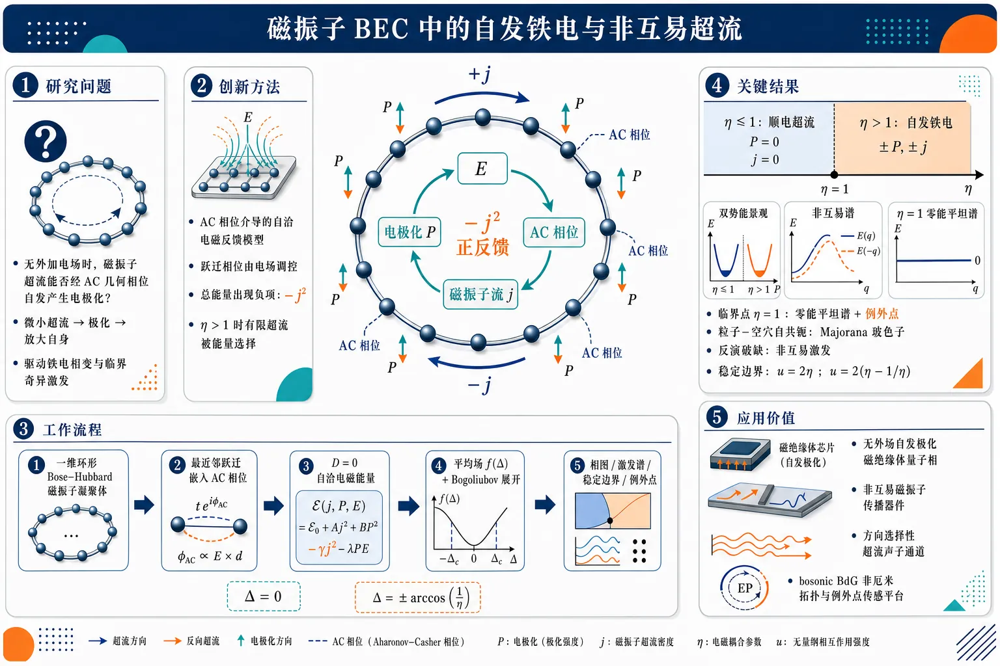
研究问题中性磁振子能否像电子超导体产生迈斯纳负反馈的“反面”一样，在无外加电场时通过 Aharonov–Casher 几何相位自发形成电极化？核心图像是环形磁振子 BEC 中，一个微小磁振子超流是否能生成电极化，并反过来放大自身，最终驱动铁电相变、非互易超流和临界奇异激发。创新方法提出由 Aharonov–Casher 相位介导的磁振子 BEC 自洽电磁反馈最小模型：电场改变磁振子跃迁相位，诱导环形轨道超流；超流产生电极化；电极化又增强电场，形成 E → AC 相位 → 磁振子流 → 极化 → E 的正反馈闭环。关键 Aha 点是总能量中出现负的电流平方项 −j²，使有限超流态反而被能量选择，从而在 η > 1 时无外场自发铁电。工作流程输入一个一维环形 Bose–Hubbard 磁振子凝聚体，给最近邻跃迁嵌入 AC 相位；用电磁场能量把电极化与电场自洽耦合；设外电位移 D = 0，得到含 −j² 反馈项的总哈密顿量；采用 Bloch 凝聚波函数计算平均场能量 f(Δ)；根据 η 判断 Δ = 0 或 ±Δ0 的基态；再围绕凝聚态做 Bogoliubov 展开，构造 bosonic BdG 动力学矩阵 L(q)，输出相图、激发谱、稳定性边界、例外点与 Majorana 玻色态。关键结果当 η ≤ 1 时，能量最低点为 Δ = 0，磁振子超流和电极化均为零，是普通顺电超流；当 η > 1 时，能量出现两个对称极小 Δ = ±arccos(1/η)，对应相反方向的自发电极化和持久磁振子超流。临界点 η = 1 处，Bogoliubov 准粒子与准空穴能带塌缩为完全平坦零能谱，动力学矩阵不可对角化，形成例外点；零能本征态在粒子–空穴变换下自共轭，可视为 Majorana 玻色子。铁电相中空间反演破缺，激发谱呈现 E(q) ≠ E(−q) 的非互易性；稳定区域还受 Landau 边界 u = 2η 和动力学不稳定边界 u = 2(η − 1/η) 限制。应用价值该研究为用电场和自旋–轨道耦合控制磁振子超流提供新机制，可用于设计无外场自发极化的磁绝缘体量子相、非互易磁振子传播器件、方向选择性超流声子通道，以及探索 bosonic BdG 非厄米拓扑、例外点传感和 Majorana-like 玻色激发的平台。第一部分：核心概览
该研究建立了一个由 Aharonov–Casher 相位介导电场耦合的 磁振子 Bose–Einstein 凝聚体最小模型，揭示了区别于电子体系抗磁负反馈的 正电磁反馈机制：电场诱导磁振子轨道运动，轨道运动产生电极化，电极化又增强电场。当无外电场且自旋–轨道耦合强度 η > 1 时，体系自发进入 铁电相，伴随持久磁振子超流。临界点 η = 1 同时表现为 例外点与 Majorana 玻色子，并在铁电相产生 非互易 Bogoliubov 激发谱。
---
第二部分：结构化快速回顾
《Ferroelectricity in a magnon Bose-Einstein condensate: Nonreciprocal superfluidity, exceptional points, and Majorana bosons》（None，）
背景
Aharonov–Casher 相位使具有固定磁偶极矩的 磁振子在电场中获得有效矢势。电子体系中轨道磁化通常削弱外磁场，形成负反馈；磁振子体系中，磁振子轨道运动诱导的电极化会增强原电场，形成正反馈。该差异在 磁振子 BEC 超流中可能产生电子体系没有的极限现象。
方法
采用环形一维 Bose–Hubbard 模型，将 AC 相位写入最近邻跃迁项，并显式加入电磁场能量修正。通过 平均场凝聚波函数、Bogoliubov 近似与 bosonic BdG 理论分析基态、激发谱、临界点和稳定性。
结果
当无外电场且 η ≤ 1 时，基态满足 Δ = 0，无超流、无极化；当 η > 1 时，能量在 Δ = ± arccos(1/η) 处出现双极小，产生相反方向的自发电极化和持久磁振子超流。临界点 η = 1 处 Bogoliubov 谱完全平坦并塌缩到零能，BdG 动力学矩阵不可对角化，形成 exceptional point。
讨论
铁电相中的空间反演对称性自发破缺，导致 E(q) ≠ E(−q) 的非互易超流激发谱。临界零能态在粒子–空穴变换下映射到自身，可解释为 Majorana boson。这将铁电性、非厄米 BdG 拓扑结构和磁振子超流稳定性连接在同一框架中。
局限
模型为一维环形最小模型，采用平均场与二次 Bogoliubov 展开；当出现 Landau instability 或 dynamical instability 时，单一 Bloch 凝聚态假设失效。强不稳定区域、真实材料参数、耗散、温度效应、多维几何和实验可观测量仍未系统展开。
结论
正电磁反馈可在磁振子 BEC 中驱动无外场铁电转变；临界点对应 η = 1 的例外点和 Majorana 玻色态；铁电相伴随持久磁振子超流、空间反演破缺和非互易 Bogoliubov 激发。稳定铁电超流区域受 u 与 η 的共同约束。
---
第三部分：逐章节冷凝解析
Abstract
- Ferroelectric instability mediated by Aharonov–Casher phase
磁振子 BEC 通过 几何 Aharonov–Casher 相位与电场耦合，从而产生铁电不稳定性。核心机制不是传统离子位移铁电，而是磁振子轨道运动、电极化与电场之间的自洽反馈：*"We investigate a ferroelectric instability of a magnon Bose–Einstein condensate, mediated by its interaction with an electric field through a geometric Aharonov–Casher (AC) phase."*
- Positive electromagnetic feedback loop
系统的关键物理特征是 正反馈回路：电场经 AC 相位诱导磁振子轨道运动，轨道运动生成电极化，电极化反过来增强原电场：*"A distinct feature of the system is the positive feedback loop in which an electric field induces magnon orbital motion via the AC phase, generating electric polarization that in turn enhances the original field."*
- Spontaneous ferroelectric transition with persistent magnon supercurrent
基于 bosonic Bogoliubov–de Gennes mean-field theory，正反馈足以在磁振子超流中驱动自发铁电转变，并伴随 persistent magnon supercurrent：*"this feedback drives a spontaneous ferroelectric transition in the magnon superfluid, accompanied by a persistent magnon supercurrent."*
- Nonreciprocal quasiparticle spectrum from inversion breaking
铁电相中，准粒子激发谱变为 非互易，即通常表现为 E(q) ≠ E(−q)，根源是空间反演对称性自发破缺：*"the quasiparticle excitation spectrum becomes nonreciprocal, reflecting spontaneous breaking of spatial inversion symmetry."*
- Exceptional point and Majorana boson at criticality
相变临界点处，bosonic BdG Hamiltonian 同时发生本征值和本征矢合并，形成 exceptional point；对应本征矢为准粒子与准空穴等权叠加，并在粒子–空穴变换下不变，因此可解释为 Majorana 玻色子：*"the bosonic BdG Hamiltonian exhibits coalescence of both eigenvalues and eigenvectors, forming an exceptional point."*；*"The corresponding eigenvector is an equally weighted superposition of bosonic quasiparticle and quasihole states and is invariant under particle–hole transformation, allowing it to be interpreted as a bosonic analog of a Majorana fermion."*
---
Introduction
- Geometric phases as the conceptual foundation
研究基础来自凝聚态物理中的 几何相位。电子在磁场中获得 Aharonov–Bohm phase，磁偶极矩在电场中获得 Aharonov–Casher phase：*"Geometric phases are a fundamental concept in modern condensed matter physics."*；*"A classic example is the Aharonov–Bohm (AB) phase, which arises in electronic systems subjected to a magnetic field."*；*"This idea can be extended by considering the geometric phases for a magnetic dipole in an electric field, that is known as the Aharonov-Casher (AC) phase."*
- Magnons as ideal probes of AC physics
磁振子是磁绝缘体中自旋波的准粒子，具有固定磁偶极矩；磁绝缘体中强自旋–轨道耦合可显著增强 AC 相位，因此磁振子系统适合研究 AC 效应：*"A representative physical system for studying the AC phase is a magnon system, where magnons are the quasiparticles associated with spin waves in magnetic insulators."*；*"This system is particularly ideal because magnons possess a fixed magnetic dipole moment, and the AC phase is greatly enhanced by the strong spin–orbit coupling typically present in magnetic insulators."*
- Electric field as effective vector potential for magnons
电场在磁振子体系中等效为矢势，这使磁振子可产生类似电子在磁场中的霍尔效应和 Landau 能级：*"In this context, an electric field acts as an effective vector potential for magnons."*；*"such an effective vector potential can give rise to physical phenomena analogous to those observed for electrons in magnetic fields, including the Hall effect and the formation of Landau levels."*
- Positive feedback distinguishes magnonic from electronic systems
电子体系中反馈为负：轨道磁化削弱或抵消外磁场；磁振子体系中反馈为正：磁振子轨道运动诱导的电极化增强外电场：*"In electronic systems, the feedback is negative, as the orbital magnetization tends to weaken or counteract the external magnetic field."*；*"Conversely, in magnonic systems, the feedback is positive: the electric polarization that is induced by a magnon orbital motion strengthens the external electric field."*
- Superfluid regime exposes the feedback contrast
超导体中的 Meissner effect 是电子体系负反馈的极限表现；对应地，磁振子 BEC 应出现正反馈极限的全新超流现象：*"These fundamental differences become most apparent in the realm of superfluid physics."*；*"In superconductors, complete diamagnetism, known as the Meissner effect, represents the extreme manifestation of the negative feedback mechanism inherent to electronic systems."*
- Core claim: spontaneous ferroelectricity without external electric field
当电磁耦合足够强时，正电磁反馈在无外电场条件下诱导磁振子 BEC 自发铁电极化：*"we show that a positive electromagnetic feedback mechanism leads to spontaneous ferroelectric polarization in the absence of an external electric field, when the coupling to the electromagnetic field is strong enough."*
- Consequences: nonreciprocity, exceptional point, Majorana boson
自发极化破坏空间反演对称性，重塑 Bogoliubov 激发谱并产生 non-reciprocal superfluidity；相变临界点出现本征值与本征矢同时合并的 exceptional point；准粒子与准空穴杂化为粒子–空穴变换不变的单一本征态，即 Majorana boson：*"The resulting polarization breaks spatial inversion symmetry, reshapes the Bogoliubov excitation spectrum, and gives rise to non-reciprocal superfluidity."*；*"At the critical point of the phase transition, an exceptional point emerges in a Bogoliubov spectrum, at which not only eigenvalues but also eigenvectors coalesce."*；*"This state can be interpreted as a Majorana boson."*
---
Model Hamiltonian
- Minimal annular one-dimensional Bose–Hubbard model
最小理论描述采用 环形一维 Bose–Hubbard 模型，含最近邻跃迁和 onsite 斥力相互作用，周期边界条件下站点 i = 1, …, N：*"As a minimal theoretical description of a magnon BEC, we consider an annulus-shaped system and adopt the one-dimensional Bose–Hubbard model, which consists of magnons on a tight-binding lattice with onsite repulsive interaction."*；*"we impose periodic boundary condition."*
- Hamiltonian with AC phase in hopping
基础哈密顿量为
[
H₀₌₋ₜsumᵢ₍ₑ⁻ⁱθₘ̊ ACbᵢ^dagger bᵢ₊₁+e⁺ⁱθₘ̊ ACbᵢ₊₁^dagger bᵢ₎₊fracU2sumᵢ nᵢ² .
]
参数含义：t > 0 为最近邻跃迁，U > 0 为 onsite 斥力，nᵢ₌bᵢ^dagger bᵢ，xᵢ₌ᵢₐ：*"t > 0 denotes a nearest-neighbor hopping amplitude, and U > 0 represents the onsite repulsive interaction."*
- Magnon magnetic dipole and AC effective vector potential
磁振子磁偶极矩固定为
[
boldsymbolμ=gμ_Bmathbf e_z ,
]
AC 相位为
[
θₘ̊ AC= -frac1hbarint mathbf Aₘḑot dmathbf r,quad
mathbf Aₘ₌gₘ̊ ACmathbf E× mathbf e_z .
]
gAC 表征自旋–轨道耦合强度；真空中为 gμB/c²，磁绝缘体中显著增强：*"Since magnons have a fixed magnetic dipole moment (boldsymbolμ=gμ_Bmathbf e_z), they interact with the electric field (mathbf E) through the AC phase."*；*"the constant parameter (gAC) represents the strength of a spin-orbit coupling."*；*"In vacuum, it amounts to (gμ_B/c²), however, it greatly enhances in typical magnetic insulators."*
- Magnon current from continuity equation
磁振子流由连续性方程定义：
[
partialₜ nᵢ₌fracihbar[H₀,nᵢ]equiv jᵢ₋₁,ᵢ-jᵢ,ᵢ₊₁,
]
从而
[
jᵢ,ᵢ₊₁=fracithbar(eⁱθₘ̊ ACbᵢ₊₁^dagger bᵢ₋ₑ⁻ⁱθₘ̊ ACbᵢ^dagger bᵢ₊₁).
]
该定义与泛函导数 (mathbf jₘ₌partial H₀/partial mathbf Aₘ) 一致：*"The magnon current density (mathbf jₘₐₜₕᵣₘ ₘ=jᵢ,ᵢ₊₁/a²,mathbf eₓ) is defined to satisfy the continuity equation."*；*"This definition agrees with the expression (mathbf jₘₐₜₕᵣₘ ₘ=partial H₀/partial mathbf Aₘ)."*
- Electric polarization generated by magnon current
磁振子流产生电极化：
[
mathbf P=-fracpartial H₀partial mathbf E
=gₘ̊ ACmathbf jₘ× mathbf e_z .
]
这给出磁振子超流与铁电极化之间的直接桥梁：*"Physically, this magnon current is responsible for generating the electric polarization."*
- Self-induced AC phase through electrodynamics
由
[
mathbf E=(mathbf D-mathbf P)/ϵ₀
]
可知，电极化本身贡献总电场，并进一步产生自诱导 AC 相位：*"Through the basic relation (mathbf E=(mathbf D-mathbf P)/ϵ₀) in electrodynamics, the electric polarization contributes to the total electric field, which in turn produces an additional self-induced AC phase."*
- Total Hamiltonian includes electromagnetic field energy
电磁场能量贡献按
[
int dV,fracmathbf D²⁻mathbf P²2ϵ₀
]
加入；设置 D = 0 研究无外电场内禀行为，得到
[
H=H₀₋fracgₘ̊ AC²2ϵ₀ asumᵢ jᵢ,ᵢ₊₁² .
]
负的 current-square 项是正反馈的能量来源：*"we include the term (int dV(mathbf D²⁻mathbf P²⁾/2ϵ₀) as an additional contribution to the original Hamiltonian (H₀)."*；*"we set (mathbf D=0) to examine the intrinsic behavior of the system without the influence of an external electric field."*
---
Ferroelectricity in magnon BEC
- Bloch condensate ansatz
由于离散平移对称性，Bloch 波矢为好量子数；凝聚假设为最低能单粒子 Bloch 态：
[
łangle bᵢångle=sqrtn₀eⁱk_cxᵢ,
]
其中 n0 为每格点凝聚玻色子数，−π/a < kc < π/a：*"Owing to the discrete translational symmetry of the system, the Bloch wave vector serves as a good quantum number."*；*"It is then reasonable to assume that condensation occurs in a lowest-energy single-particle Bloch state."*
- Supercurrent controlled by Δ
将凝聚 ansatz 代入电流算符，得到
[
łangle jᵢ,ᵢ₊₁ångle=frac2tn₀hbarsinΔ,quad
Δequiv k_ca-θₘ̊ AC.
]
Δ 是凝聚波矢和 AC 相位之间的规范不变量组合：*"Substituting the ansatz [Eq. (5)] into the current operator [Eq. (2)] yields the magnon supercurrent (łangle jᵢ,ᵢ₊₁ångle=(2tn₀/hbar)sinΔ)."*
- Self-consistency equation for AC phase
无外电场时，AC 相位完全来自磁振子超流诱导的电极化：
[
θₘ̊ AC=-ηsinΔ,
quad
η=fracgₘ̊ AC²m^*ϵ₀ₐ³n₀,
quad
m^*=frachbar²2ta².
]
因此
[
k_ca=Δ-ηsinΔ .
]
η 是无量纲自旋–轨道耦合/反馈强度：*"Since we do not apply the external electric field, the AC phase is determined solely from this contribution."*；*"(η=fracgAC²m^*ǎrepsilon₀ₐ³n₀) is the dimensionless parameter ... that characterizes the strength of the spin-orbit coupling."*
- Mean-field energy and dimensionless energy landscape
平均场能量为
[
łangle Hångle=-2tn₀ₒ̧sΔ+fracU2n₀²⁻tη n₀sin²Δ .
]
去除常数后，无量纲单粒子能量为
[
f(Δ)=-2o̧sΔ-ηsin²Δ .
]
第三项 −η sin²Δ 偏好有限超流，是铁电转变的驱动力：*"The mean-field energy (łangle Hångle), given in Eq. (9), depends on (k_c) only through (Δ)."*；*"The Hamiltonian of Eq. (9) can be simplified to a dimensionless form (f(Δ)=-2o̧sΔ-ηsin²Δ)."*
- Paraelectric phase for 0 ≤ η ≤ 1
当 0 ≤ η ≤ 1，能量极小位于 Δ = 0；此时
[
łangle jₘångle=0,quad Ppropto jₘ₌₀,
]
无持久超流、无自发极化：*"When (0łeqηłeq 1), the ground-state energy has a minimum at (Δ=0), where both the magnon supercurrent (jₘₐₜₕᵣₘ ₘ) and the associated electric polarization (P(propto jₘₐₜₕᵣₘ ₘ)) vanish."*
- Ferroelectric phase for η ≥ 1
当 η ≥ 1，能量在
[
Δ=±Δ₀,quad Δ₀₌arccos(1/η)
]
出现有限值极小；由于 sinΔ ≠ 0，产生持久磁振子超流和自发电极化，kc 也变为非零：*"for (η≥ 1) the ground-state energy develops minima at finite values (Δ=±Δ₀), with (Δ₀equivarccos(1/η)), giving rise to a persistent magnon supercurrent and an emergent electric polarization proportional to (sinΔ≠ 0)."*；*"the condensate Bloch wave vector (k_c) in Eq. (8) acquires a finite, nonzero value."*
- Spontaneous inversion symmetry breaking
两个解 Δ = ±Δ0 由空间反演操作联系，对应相反方向电极化；选择 Δ = +Δ0 作为后续基态代表：*"This behavior represents ferroelectricity accompanied by spontaneous breaking of spatial inversion symmetry."*；*"The two solutions with (Δ=±Δ₀) are related by the parity operation and correspond to states with opposite directions of electric polarization."*
- Quantum origin from magnonic Bohr–van Leeuwen theorem
附录构造了磁振子版 Bohr–van Leeuwen theorem：经典热平衡磁振子体系不能产生净电极化，因此这里的铁电极化属于量子力学起源：*"we develop a magnonic analog of Bohr-van Leeuwen theorem: classical magnonic systems in thermal equilibrium are incapable of producing a net electric polarization."*；*"This demonstrates that the ferroelectric polarization in magnon BEC presented in this letter is attributed to intrinsically quantum mechanical origins."*
---
Bosonic BdG Hamiltonian
- Bogoliubov decomposition around condensate
场算符写为凝聚部分加涨落：
[
bᵢ₌łangle bᵢångle+δ bᵢ,
quad
δ bᵢ₌frac1sqrt Nsumq≠₀eⁱ⁽k_c⁺q⁾xᵢδ bₖ_c₊q.
]
q ≠ 0 的涨落描述相对于凝聚波矢 kc 的激发：*"We apply the Bogoliubov approximation to examine the stability and excitation properties of the magnon BEC."*；*"which corresponds to the fluctuation from the ground-state configuration."*
- Quadratic bosonic BdG Hamiltonian
对 H − μN 保留涨落二阶项，得到
[
Hₘ̊ BdG=frac12sumq≠₀ψ_q^dagger H_B(q)ψ_q,
quad
ψ_q=(δ bₖ_c₊q,δ bₖ_c₋q^dagger)^t .
]
Nambu 旋量同时包含准粒子和准空穴自由度：*"By substituting Eq. (10) into the total Hamiltonian (H-μ N) and retaining terms up to quadratic order in (δ bᵢ), we obtain the bosonic BdG Hamiltonian."*
- BdG matrix elements
BdG 矩阵为
[
H_B(q)=
beginpmatrix
h(q)&s(q)
s^*(-q)&h^*(-q)
endpmatrix,
]
其中
[
h(q)=-2to̧s(Δ+q)+2Un₀₋μ-tη[1+o̧s q-2o̧s(2Δ+q)],
]
[
s(q)=Un₀₋ₜη(o̧s q-o̧s2Δ).
]
h(q) 含正常通道能量与反馈修正，s(q) 为粒子–空穴配对通道：*"where (h(q)=...)"*；*" (s(q)=Un₀₋ₜη(o̧s q-o̧s2Δ))."*
- Gaplessness fixes chemical potential
激发谱由 Green 函数极点决定：
[
G(q,iømega)=[iømegaσ_z-H_B(q)]⁻¹.
]
由于 BEC 的 Goldstone 模式要求 q = 0 处无能隙， impose
[
det H_B(q=0)=0.
]
化学势为
[
μ=
begincases
-2t+Un₀,&0łeqηłeq1,
-2to̧sΔ+Un₀₋₂ₜηsin²Δ,&η≥1.
endcases
]
也可由 (μ=partialłangle Hångle/partial n₀) 得到，并需注意 η ∝ n0：*"Since the excitation spectrum must be gapless at (q=0), we impose the condition (det H_B(q=0)=0), which determines the chemical potential (μ)."*；*"Alternatively, the same equation can be obtained from the thermodynamic relation (μ=partialłangle Hångle/partial n₀)."*
---
Bogoliubov excitation spectrum
- Pseudo-Hermitian dynamical matrix
激发谱通过对
[
L(q)=σ_zH_B(q)=σ_zL^dagger(q)σ_z
]
对角化得到。虽然 H_B(q) 厄米，L(q) 通常非厄米；这正是 bosonic BdG 体系出现例外点的数学来源：*"We calculate the Bogoliubov excitation spectrum by diagonalizing the pseudo-Hermitian matrix (L(q)equivσ_zH_B(q)=σ_zL^dagger(q)σ_z), that is generally a non-Hermitian matrix, despite the fact that (H_B(q)) itself is a Hermitian matrix."*
- Quasiparticle and quasihole eigenvalue equations
本征方程为
[
L(q)|ψ_q^±ångle=± E(± q)|ψ_q^±ångle .
]
(|ψ_q⁺ångle) 与 (|ψ_q⁻ångle) 分别表示准粒子和准空穴态：*"where the eigenstates (|ψ_q^±ångle) represent the quasiparticle and quasihole states, respectively."*
- Particle–hole symmetry relation
粒子–空穴对称性为
[
σₓL^*(-q)σₓ₌₋L(q),
]
导致
[
|ψ_q⁻ångle=σₓ|ψ₋q⁺ångle^* .
]
该关系支撑临界零能态的 Majorana 解释：*"They are related by (|ψ_q⁻ångle=σₓ|ψ₋q⁺ångle^*) because of the particle-hole symmetry (σₓL^*(-q)σₓ₌₋L(q))."*
- Conventional reciprocal superfluid for 0 < η < 1
在数值谱图中取 u ≡ Un0/t = 5。当 0 < η < 1，体系具有传统超流的 q = 0 附近无能隙线性色散，并保持空间反演对称性，因此 E(q)=E(−q)：*"In Fig. (2) (c),(d), the Bogoliubov band structures are presented, where we set (uequiv Un₀/t=5)."*；*"When (0<η<1), we reproduce the typical behaviors of the conventional superfluids ... which has the gapless linear dispersion around (q=0)."*；*"the system respects a space-inversion symmetry and satisfies (E(q)=E(-q))."*
- Band collapse and flat zero dispersion at η = 1
随 η 从 0 增至 1，准粒子带和准空穴带逐渐靠近零能；在 η = 1，二者合并为完全简并且完全平坦的零能色散，对应铁电相变临界点：*"As (η) increases from 0 to 1, both the quasiparticle band and the quasihole band gradually move toward zero."*；*"When (η=1), the quasiparticle and quasihole bands merge into a fully degenerate state with a completely flat dispersion."*；*"This is precisely the critical point where the ferroelectric phase transition occurs."*
- Exceptional point from eigenvector coalescence
临界点不是普通简并，而是 exceptional point。此时
[
L(q)propto
beginpmatrix
1&1
-1&-1
endpmatrix,
]
该矩阵只有单一本征矢
[
(1,-1)^t
]
因而不可对角化：*"this is not a simple degeneracy of eigenvalues, but an exceptional point where the eigenvectors also coalesce."*；*"the matrix (L(q)) is given by (L(q)proptobeginpmatrix1&1-1&-1endpmatrix), that possesses only a single eigenvector ((1,-1)^t) and is therefore not diagonalizable, corresponding to an exceptional point."*
- Majorana boson interpretation
临界零能态在粒子–空穴变换下映射到自身，因此可视作 Majorana boson；这里的 “Majorana” 指 BdG 粒子–空穴自共轭性，不是费米统计：*"It is also interesting that this zero-energy state can be regarded as a Majorana boson ... because it maps onto itself under the particle–hole transformation."*
- Nonreciprocal excitation spectrum for η > 1
当 η > 1，准粒子带与准空穴带重新分离，但铁电极化已打破空间反演对称性，使谱满足 E(q) ≠ E(−q)：*"When (η>1), the quasiparticle band and the quasihole band start to separate again."*；*"the Bogoliubov spectrum becomes non-reciprocal (E(q)≠ E(-q))."*；*"This behavior is naturally understood as a manifestation of a space-inversion symmetry breaking, which originates from the development of spontaneous electric polarization."*
---
Landau and dynamical instabilities
- Stability requires nonnegative excitation energy
铁电相 η > 1 中虽存在自发磁振子超流和铁电性，但稳定性要求所有 q 下
[
E(q)≥0.
]
u 与 η 的关系决定是否发生不稳定：*"However, for the ground state to remain stable, the condition (E(q)≥0) must hold for every (q)."*；*"Depending on the relationship between the parameters (u) and (η), the system might exhibit instabilities."*
- Low-energy spectrum near q ≈ 0
低能展开为
[
E(q)approx
begincases
tsqrt2u(1-η)|q|,&0łeqηłeq1,
2tsqrtη-frac1η
łeft(
-sqrtfrac1ηq+
sqrtfracu-2(η-frac1η)2|q|
i̊ght),&η≥1 .
endcases
]
η ≤ 1 时声速实且正；η ≥ 1 时出现由漂移项和相互作用项竞争决定的稳定性边界：*"This can be seen by focusing on the low-energy ((qapprox0)) behavior of the energy eigenvalue spectrum."*
- Stable normal phase for 0 ≤ η ≤ 1
当 0 ≤ η ≤ 1，只要 u > 0，基态稳定：*"First, when (0łeqηłeq1), the ground state is stable for all (u>0)."*
- Landau instability threshold u < 2η
当 η ≥ 1 且降低 u 时，能量先变负；若
[
u<2η,
]
发生 Landau instability。物理含义是产生准粒子会降低总能量，超流无法无耗散维持：*"When (u<2η), the energy eigenvalue becomes negative, leading to Landau instability."*；*"In this regime, creating a quasiparticle lowers the total energy of the system, so the system spontaneously emits excitations."*；*"the superfluid can no longer sustain its flow, and the flow becomes dissipative."*
- Dynamical instability threshold u < 2(η − 1/η)
更强的不稳定条件为
[
u<2(η-1/η),
]
此时本征值变为复数，虚部表示增长或衰减率，导致凝聚体塌缩或碎裂：*"When (u<2(η-1/η)), the energy eigenvalues become complex, signaling dynamical instability."*；*"This is a stronger instability condition than the Landau instability."*；*"The imaginary part of the eigenvalue plays the role of a growth or decay rate, resulting in the collapse or fragmentation of the condensate."*
- Effective attractive interaction criterion
由于
[
ηpropto n₀,
]
平均场能量可写为
[
łangle Hångle=-2tn₀ₒ̧sΔ+fracUₘ̊ ₑff2n₀²,
]
其中
[
Uₘ̊ ₑff=U-frac2tηn₀sin²Δ .
]
dynamical instability 等价于 Ueff < 0，即反馈诱导的有效吸引超过原始 onsite 斥力：*"Since the third term in Eq. (9) is proportional to (n₀²) (noting that (ηpropto n₀)), the expression can be rewritten as (łangle Hångle=-2tn₀ₒ̧sΔ+Uₑffn₀²/2)."*；*"The condition for the dynamical instability coincides with the region where the effective interaction becomes attractive, i.e., (Uₑff<0)."*
- Breakdown of Bloch mean-field ansatz in unstable regimes
在 Landau 或动力学不稳定区域，基于单一 Bloch 波函数的平均场 ansatz 不再有效；该强不稳定区域未进一步求解：*"Under these situations, the mean-field ansatz based on a Bloch wave function [Eq. (5)] is no longer valid."*；*"A detailed investigation of this regime lies beyond the scope of the present work."*
- Phase diagram boundaries
相图总结三条关键边界：铁电转变 η = 1；Landau 不稳定 u = 2η；动力学不稳定 u = 2(η − 1/η)：*"Fig. 3 presents a phase diagram that summarizes the results of this study."*；图注给出：*"Ferroelectric phase transition occurs at (η=1), corresponding to exceptional points."*；*"The Landau instability occurs at (u=2η) and the dynamical instability occurs at (u=2(η-1/η))."*
---
Conclusion
- Minimal model for dielectric properties of magnon BEC
通过最小模型研究了经 几何 AC 相位与电场耦合的磁振子 BEC 介电性质：*"Within a minimal model description, we have investigated dielectric properties of magnon BEC, that interacts with electric field via geometric AC phase."*
- Phase diagram in u–η parameter space
平均场分析给出以 repulsive interaction (u) 与 spin–orbit coupling (η) 为坐标的相图：*"Through a mean-field analysis, we constructed a phase diagram as a function of the strength of repulsive interaction (u) and the spin–orbit coupling (η)."*
- Ferroelectricity from positive feedback for η > 1
当 η > 1，正反馈回路产生铁电性：*"when (η>1), the ferroelectricity appears as a manifestation of the positive feedback loop."*
- Nonreciprocal quasiparticles from inversion breaking
空间反演对称性破缺使 Bogoliubov 准粒子呈现非互易性：*"owing to the spatial-inversion symmetry breaking, the Bogoliubov quasiparticle becomes non-reciprocal."*
- Critical point as exceptional point and Majorana boson
相变临界点由 exceptional point 和 Majorana boson 标征，体现 bosonic BdG 动力学矩阵的非厄米性质：*"The critical point of the phase transition is characterized by the exceptional point and the Majorana boson, reflecting the non-Hermitian aspect of the underlying bosonic BdG Hamiltonian."*
---
Acknowledgments
- Research support and discussions
致谢对象包括 Takeshi Mizushima；资助来自 JSPS KAKENHI 与 JST CREST 多项基金：*"We acknowledge fruitful discussions with Takeshi Mizushima."*；*"This work was supported in part by JSPS KAKENHI Grants No. JP20H01840, No. JP20K14415, No. JP21H05236, No. JP21H05232, No. 23KJ1518, No. 24K06921 and by JST CREST Grant No. JPMJCR20T3, Japan."*
---
Appendix A Magnonic Bohr-van Leeuwen theorem
- Classical thermal magnons cannot sustain net electric polarization
经典 Bohr–van Leeuwen 定理指出经典电子热平衡不能产生净磁化；磁振子类比定理指出经典磁振子热平衡不能产生净电极化：*"The original Bohr-van Leeuwen theorem states that a classical electronic system in thermal equilibrium cannot sustain a net magnetization."*；*"Here, we develop a magnonic analogue of the Bohr-van Leeuwen theorem: classical magnonic systems in thermal equilibrium are incapable of producing a net electric polarization."*
- Classical Hamiltonian with AC vector potential
经典磁振子在电场中的哈密顿量为
[
H(mathbf r,mathbf p)=frac[mathbf p+mathbf Aₘ₍mathbf r)]²2m^*,
quad
mathbf Aₘ₍mathbf r)=gₘ̊ ACmathbf E(mathbf r)×mathbf e_z .
]
电偶极矩定义为
[
mathbf pₘ̊ dᵢₚₒₗₑ=-partial H/partialmathbf E.
]
引文：*"In classical mechanics, the motion of magnons in an electric field (mathbf E(mathbf r)) is governed by the Hamiltonian (H(mathbf r,bm p)=(bm p+mathbf Aₘₐₜₕᵣₘ ₘ(mathbf r))²/(2m^*))."*；*"Based on this Hamiltonian, we evaluate the electric dipole moment (mathbf p=-partial H/partialmathbf E) within the framework of classical statistical mechanics."*
- Phase-space average vanishes by momentum shift
热平均中引入机械动量
[
m^*mathbf vequiv mathbf p+mathbf Aₘ₍mathbf r),
]
后，显式电场依赖被变量代换消去；速度奇函数积分为零，得到
[
łanglemathbf pångle=0.
]
引文：*"In the second equality, we performed a change of variables in the integration by introducing the mechanical momentum (m^*mathbf vequivbm p+mathbf Aₘₐₜₕᵣₘ ₘ(mathbf r))."*；*"Through this change of variables, the explicit electric field dependence is removed, and the integral is shown to vanish identically."*
- Quantum-mechanical origin of ferroelectric transition
经典热平衡不能产生净电极化，因此磁振子 BEC 铁电相变必须来自量子凝聚、相干相位与 AC 几何相位的共同作用：*"This result demonstrates that the ferroelectric phase transition in magnon Bose-Einstein condensates presented in this letter is attributed to intrinsically quantum mechanical origins."*
---
Appendix B Derivation of the total Hamiltonian
- Quasi-static derivation with external D field
总哈密顿量通过准静态引入外电位移场 D 得到，从初态 D = 0 到末态 D ≠ 0：*"We consider a quasi-static process where the external electric field, or (mathbf D), is slowly introduced to the magnon BEC from the initial state (i) with (mathbf D=0) to the finial state (f) with (mathbf D≠0)."*
- Work done by electric field gives total Hamiltonian
类似一般介电材料，总能量由
[
H[mathbf D]=intᵢ^fint dmathbf r,mathbf Eḑotδmathbf D
]
给出，并使用
[
ϵ₀mathbf E=mathbf D-mathbf P
]
与磁振子极化关系推导：*"As in a general dielectric material, the total Hamiltonian (H[mathbf D]) is derived as (H[mathbf D]=intₘ̊ ᵢm̊ fint dmathbf r,mathbf Eḑotδmathbf D)."*；*"where we used the basic relation (ϵ₀mathbf E=mathbf D-mathbf P), together with Eq. (3)."*
- Final total Hamiltonian with D² − P² field energy
推导结果为
[
H[mathbf D]=H₀₊ᵢₙₜ dmathbf r,fracmathbf D²⁻mathbf P²2ϵ₀.
]
设 D = 0 后，(-mathbf P²/2ϵ₀) 对应正文中的 (-gₘ̊ AC²j²/(2ϵ₀ₐ₎) 项：*"=H₀₊ᵢₙₜ dmathbf r,,fracmathbf D²⁻mathbf P²2ǎrepsilon₀."*
---
第四部分：深度理解与语言支持
1. 术语解析
Aharonov–Casher phase
Aharonov–Casher phase 是带磁偶极矩的中性粒子在电场中获得的几何相位。与电子的 Aharonov–Bohm phase 相比，AB 相位是电荷耦合磁矢势，AC 相位是磁偶极矩耦合电场诱导的有效矢势。这里的关键不是经典力，而是相干量子波函数沿路径积累的相位，进入 Bose–Hubbard 跃迁项 (e± ⁱθₘ̊ AC)。
Positive feedback loop
Positive feedback loop 在这里不是一般控制论修辞，而是具体的电磁自洽过程：
[
E i̊ghtarrow θₘ̊ ACi̊ghtarrow jₘᵢ̊ghtarrow Pi̊ghtarrow E .
]
初始电场改变 AC 相位，AC 相位诱导磁振子超流，超流产生电极化，电极化又增强电场。与超导 Meissner 效应的负反馈相反，这种反馈会放大而非屏蔽场。
Nonreciprocal superfluidity
Nonreciprocal 指激发沿 (+q) 与 (-q) 传播时能量不同，即
[
E(q)≠ E(-q).
]
这不同于简单的流动 Doppler shift；这里的非互易性与自发铁电极化及空间反演破缺绑定。超流仍有 Bogoliubov 模式，但左右传播声子不再等价。
Exceptional point
Exceptional point 是非厄米线性代数中的特殊简并点：不仅本征值相同，本征矢也合并，矩阵不可对角化。普通 Hermitian degeneracy 通常仍有多个正交本征矢；这里 (L(q)proptobeginpmatrix1&1-1&-1endpmatrix) 只有一个本征矢 ((1,-1)^t)，因此属于例外点。
Majorana boson
Majorana boson 不是传统 Majorana 费米子的玻色统计复制品，而是 bosonic BdG 体系中满足粒子–空穴自共轭的零能玻色激发。临界态由准粒子和准空穴等权叠加，在粒子–空穴变换下映射到自身，因此具有 “Majorana-like” 的自共轭结构。
---
2. 疑难查证
为什么铁电极化能在无外电场中自发出现？
无外场条件为 (mathbf D=0)，但电场满足
[
mathbf E=(mathbf D-mathbf P)/ϵ₀₌₋mathbf P/ϵ₀ .
]
如果某个微小涨落产生磁振子流 (jₘ)，它会通过
[
mathbf P=gₘ̊ ACmathbf jₘ×mathbf e_z
]
产生电极化；该极化又产生电场；电场进一步通过 AC 相位降低具有有限 (Δ) 的凝聚态能量。平均场能量
[
f(Δ)=-2o̧sΔ-ηsin²Δ
]
清楚显示竞争：第一项偏好 (Δ=0)，第二项偏好有限 (|sinΔ|)。当 (η>1)，第二项足够强，(Δ=0) 从稳定极小变成不再是唯一基态，两个有限 (±Δ₀) 态出现，自发选择一个极化方向。
为什么 η = 1 是相变点？
对
[
f(Δ)=-2o̧sΔ-ηsin²Δ
]
在小 (Δ) 展开：
[
o̧sΔsimeq1-Δ²/2,quad sin²ΔsimeqΔ² .
]
得到
[
f(Δ)simeq -2+(1-η)Δ²⁺ḑots .
]
当 (η<1)，二次项为正，(Δ=0) 稳定；当 (η>1)，二次项为负，(Δ=0) 不稳定，有限 (Δ) 出现；当 (η=1)，二次刚度消失，因此对应连续铁电转变临界点。
为什么 bosonic BdG 会非厄米？
二次哈密顿量矩阵 (H_B) 本身是 Hermitian，但玻色 BdG 的动力学方程不是直接对角化 (H_B)，而是对角化
[
L=σ_zH_B .
]
(σ_z) 来自玻色对易关系和 Nambu 空间中粒子/空穴的相反规范范数。结果是 (L) 一般非 Hermitian，但满足 pseudo-Hermitian 关系
[
L=σ_zL^daggerσ_z .
]
因此 bosonic BdG 可以拥有 Hermitian 哈密顿量体系中不会出现的例外点、本征矢合并和复本征值动力学不稳定。
Landau instability 与 dynamical instability 有什么区别？
Landau instability：能量仍为实数，但某些 (q) 模式出现 (E(q)<0)。这表示产生激发会降低能量，超流变得耗散。阈值为
[
u<2η .
]
Dynamical instability：本征值变成复数，模式振幅按 (eøperatorⁿameImE,t) 增长或衰减，导致凝聚体快速塌缩、碎裂或转向非均匀态。阈值为
[
u<2(η-1/η).
]
动力学不稳定通常比 Landau 不稳定更严重，因为它不是热力学上“有更低能态”，而是线性时间演化本身指数失稳。
---
第五部分：创新评估与关联
1. 创新性判断
从 AC 相位反馈推出自发铁电 BEC，相比近年磁振子 AC 研究更进一步
过去 2–5 年大量研究集中在磁振子 AC 相位诱导的有效磁场、霍尔响应、Landau 能级、拓扑能带或输运效应。这些方向通常将电场视为外加控制参数。这里的关键新意是把电场、电极化和磁振子超流做成自洽体系，电场不只是驱动源，而是由磁振子超流反过来生成并放大的内禀变量。无外电场下产生 自发铁电性 是比“外场调控磁振子”更强的结论。
提出电子负反馈与磁振子正反馈的超流对应物
电子超导中的 Meissner 效应体现负电磁反馈极限；磁振子 BEC 中正反馈极限对应自发电极化和持久磁振子超流。这种类比不是形式上的，而是在能量泛函中体现为 (-P²/2ϵ₀) 或 (-jₘ²) 项，使有限电流态被能量选择。该框架为“电磁反馈决定凝聚相”的研究提供了新范式。
把铁电相变、非互易超流和 exceptional point 统一到一个最小模型
非互易 Bogoliubov 激发、例外点和 Majorana-like bosonic modes 通常分别出现在非厄米拓扑、驱动耗散凝聚体或特殊 BdG 模型中。这里它们不是外加非厄米耗散造成，而是由 封闭 bosonic BdG 动力学矩阵的 pseudo-Hermiticity 和铁电相变临界性自然产生。临界点 (η=1) 同时是铁电相变点、平坦零能谱点、例外点和粒子–空穴自共轭 Majorana 玻色态点。
给出清晰稳定性边界，避免仅停留在平均场相图
仅有自发铁电解不足以保证物理可实现性。稳定性分析给出
[
u=2η
]
的 Landau 不稳定边界和
[
u=2(η-1/η)
]
的动力学不稳定边界，区分了可稳定承载铁电超流的区域和平均场 ansatz 失效区域。这解决了“有限超流基态是否只是形式解”的关键问题。
建立磁振子版 Bohr–van Leeuwen 定理，强调量子起源
附录证明经典热平衡磁振子系统不能产生净电极化，说明该铁电相不是经典环流或热平衡轨道运动的结果，而依赖 BEC 的量子相干性、几何相位和 BdG 量子涨落结构。这一论证提升了结果的基础性地位：它不是材料细节效应，而是量子统计与几何相位共同导致的宏观极化。
-
11
📊 含图深析
📄 摘要：研究非共线反铁磁体的磁光 Kerr 效应，该效应源于 Berry 曲率且净磁化很小。与直流反常霍尔信号中偏斜散射、光学共振等温度依赖贡献不同，温度不变 Kerr 响应有助于更直接追踪作为自旋电子学存储比特的内禀 Berry 曲率。
💡 亮点：非共线反铁磁体的 Kerr 信号被用于隔离 Berry 曲率贡献。温度不变响应比反常霍尔输运更少受散射和光学共振混杂影响。
📖 展开分析 + 配图
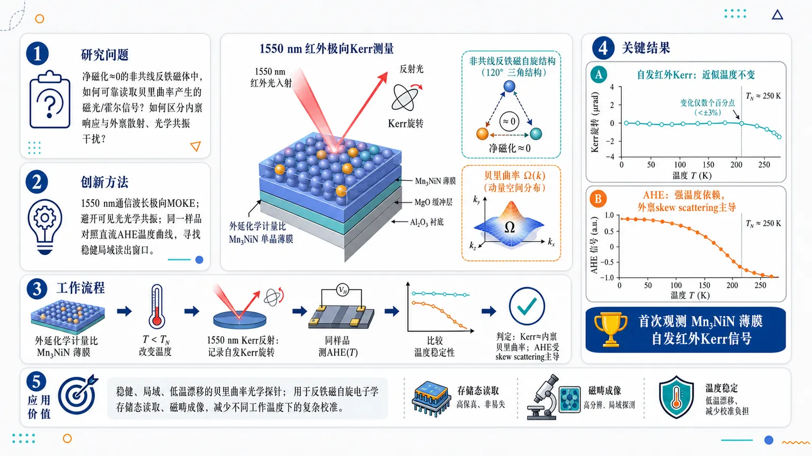
研究问题在净磁化几乎为零的非共线反铁磁体中，如何可靠读取由贝里曲率产生的磁光/霍尔信号，并区分真正的内禀贝里曲率响应与温度依赖的外禀散射、光学共振干扰？创新方法使用1550 nm红外通信波长的极向磁光克尔测量，照射外延、化学计量比Mn₃NiN单晶薄膜；通过避开可见光光学共振，并与同一样品的直流反常霍尔效应温度曲线对照，证明红外克尔信号更接近内禀贝里曲率，是“Aha！”式的稳健局域读出窗口。工作流程制备外延化学计量比Mn₃NiN单晶薄膜 → 在Néel温度以下改变温度 → 用1550 nm红外光进行极向Kerr反射测量，记录自发Kerr旋转信号 → 同一样品测量反常霍尔效应随温度变化 → 对比两类信号的温度稳定性 → 判定红外Kerr主要反映内禀贝里曲率，AHE主要受外禀偏斜散射影响。关键结果在Néel温度以下约200 K范围内，首次观测到Mn₃NiN薄膜的自发红外Kerr信号，幅值仅变化数个百分点，近似温度不变；相同样品中的反常霍尔效应却随温度强烈变化，并被外禀skew scattering主导。应用价值1550 nm红外Kerr效应可作为非共线反铁磁体中贝里曲率的稳健、局域、低温度漂移光学探针，适合读取反铁磁自旋电子学存储态、成像磁畴，并减少器件在不同工作温度下的复杂校准。第一部分：核心概览 (Overview)
非共线反铁磁体中，贝里曲率可在几乎无净磁化的条件下诱发反常霍尔效应与磁光克尔效应。该研究在外延、化学计量比 Mn₃NiN 单晶薄膜中，以 1550 nm 红外通信波长测得自发极向克尔信号，并发现其在 Néel 温度以下 200 K 范围内仅有数百分点变化。该结果把红外克尔效应确立为比直流霍尔输运更稳健的局域贝里曲率探针。
---
第二部分：结构化快速回顾
《Temperature-invariant magneto-optical Kerr effect in a noncollinear antiferromagnet》（None，）
背景
非共线反铁磁体可因动量空间中的贝里曲率产生反常霍尔效应和磁光克尔效应，即使其净磁化几乎可以忽略。这些效应被视为反铁磁自旋电子学中读取磁性记忆态的重要机制。
方法
采用极向磁光克尔测量，波长为红外通信波段 1550 nm，研究对象为外延、化学计量比 Mn₃NiN 单晶薄膜。同一样品中比较红外克尔响应与反常霍尔效应的温度依赖性。
结果
在 Néel 温度以下约 200 K 温区内，观测到自发克尔信号，且幅值仅在数百分点以内变化。相同样品中的反常霍尔效应却表现出强烈温度依赖，主要由外禀 skew scattering 主导。
讨论
红外波段克尔测量避开了可见光克尔实验中常见的光学共振效应，因此更接近反映内禀贝里曲率响应。直流霍尔测量则容易叠加温度依赖的外禀散射机制，导致对内禀磁序参数或贝里曲率的定量解释复杂化。
局限
可用材料信息集中于摘要层面；未给出完整的薄膜厚度、晶体取向、样品数量、误差条、拟合模型、具体 Kerr 角数值、Hall 电导数值、Néel 温度数值、统计显著性或重复性测试细节。
结论
1550 nm 红外磁光克尔效应在非共线反铁磁体 Mn₃NiN 中表现出接近温度不变的内禀响应，可作为表征贝里曲率和读取反铁磁自旋电子学记忆态的稳健、局域光学探针。
---
第三部分：逐章节冷凝解析 (Section-by-Section Condensing)
Abstract
- Noncollinear antiferromagnets can host Hall and Kerr effects without appreciable magnetization
非共线反铁磁体的核心物理特征在于：尽管净磁化 negligible，仍可因贝里曲率 Berry curvature产生宏观可测的横向电输运与磁光响应。摘要明确指出，*"Noncollinear antiferromagnets exhibit anomalous Hall and magneto-optical Kerr effects driven by Berry curvature despite negligible net magnetization"*。这意味着传统铁磁体中依赖净磁矩的反常输运/磁光直觉并不适用；在这类体系中，关键量是磁结构破缺对称性后产生的动量空间贝里曲率，而不是简单的总磁矩大小。
- Berry curvature is positioned as the spintronic memory bit
贝里曲率不仅是一个解释反常霍尔效应或克尔效应的理论概念，还被提升为反铁磁自旋电子学中的信息承载对象。摘要使用表述：*"the intrinsic Berry curvature that serves as a spintronic memory bit"*。这里的逻辑是：非共线反铁磁序具有多个可切换的磁畴或手性态，不同态对应不同符号或分布的贝里曲率；若能通过光学或电学方式可靠读取，就可形成反铁磁存储位。
- Both anomalous Hall and Kerr effects are expected to reveal intrinsic Berry curvature
反常霍尔效应 AHE 与 磁光克尔效应 MOKE 在理论上都可作为内禀贝里曲率的观测窗口。摘要写道，*"both effects are theoretically expected to reveal the intrinsic Berry curvature"*。两者的共同点是都来自电子能带结构中的反对称响应张量：AHE 反映低频/直流极限下的横向电导，MOKE 反映有限光频下的复光学电导张量。
- Quantitative interpretation is complicated by extra temperature-dependent channels
对 AHE 和 MOKE 的定量解释并不自动等同于读取贝里曲率，因为实验信号会叠加非内禀成分。摘要指出，*"their quantitative interpretation is complicated by additional temperature-dependent contributions superimposed on the magnetic order parameter"*。这句话的关键在于 superimposed：观测到的温度依赖不一定来自磁序本身，也可能来自散射、光学跃迁或能带共振等附加机制。
- Dc Hall transport is contaminated by extrinsic skew scattering
直流霍尔输运中的主要干扰来自外禀 skew scattering。摘要给出的具体机制是：*"extrinsic skew scattering in dc Hall transport"*。skew scattering 是一种非对称杂质散射机制，通常对载流子寿命、杂质浓度和温度相关电阻率敏感，因此会使 AHE 随温度强烈变化，即便内禀贝里曲率本身较稳定。
- Visible-wavelength Kerr measurements are affected by optical resonances
可见光波段 MOKE 的定量解释会受到光学共振效应影响。摘要明确列出第二类干扰：*"optical-resonance effects in visible-wavelength Kerr measurements"*。在可见光能量范围，电子带间跃迁、吸收边或材料特定共振可显著增强或改变 Kerr 角，使测得信号不再单纯反映低能贝里曲率或磁序参数。
- Infrared telecommunication wavelength is the central experimental choice
实验采用 1550 nm 的红外通信波长进行极向克尔测量。摘要给出明确参数：*"we perform polar Kerr measurements at the infrared telecommunication wavelength (1550 nm)"*。1550 nm 对应约 0.8 eV 光子能量，低于许多可见光实验常用能量范围，有助于减弱可见光区复杂共振带来的温度依赖。
- The material platform is epitaxial stoichiometric Mn₃NiN single crystal film
样品为外延 epitaxial、化学计量比 stoichiometric 的 Mn₃NiN 单晶薄膜。摘要中的材料描述为：*"epitaxial, stoichiometric Mn3NiN single crystal films"*。这三个限定词很重要：外延保证晶体取向和界面质量；化学计量比降低成分偏差导致的额外散射或相分离；单晶薄膜减少多晶平均和晶界散射效应。
- A spontaneous Kerr signal is observed for the first time in this setting
在该体系和红外测量条件下，观测到自发克尔信号 spontaneous Kerr signal。摘要强调其首创性：*"revealing for the first time a spontaneous Kerr signal"*。自发信号意味着在没有外加磁场诱导净磁化的情况下，材料内部磁序已经破缺相应对称性，并允许非零 Kerr 响应。
- The Kerr response remains stable over a 200 K temperature window
最核心实验结果是：Néel 温度以下 200 K 范围内，Kerr 信号仅有数百分点变化。摘要原句为：*"remains stable within a few percent over a 200 K range below the Néel temperature"*。这个温度稳定性是研究的标题核心 temperature-invariant 的直接依据，也构成其相对于 AHE 的主要优势。
- The infrared Kerr response is identified as intrinsic
红外 Kerr 信号被归类为温度不变的内禀克尔响应。摘要使用表述：*"This temperature-invariant intrinsic Kerr response"*。这里的 intrinsic 指信号主要来自能带结构和贝里曲率，而非温度敏感的外禀散射或光学共振伪影。
- Anomalous Hall effect in the same sample is strongly temperature-dependent
与红外 Kerr 不同，同一样品中的 AHE 呈现强温度依赖。摘要对比写道：*"contrasts with the strongly temperature-dependent anomalous Hall effect in the same sample"*。同一样品对比非常关键，因为它排除了样品差异导致的解释偏差，凸显测量通道本身对外禀机制的敏感性不同。
- The anomalous Hall effect is dominated by extrinsic skew scattering
强温度依赖的 AHE 被归因于外禀 skew scattering 主导。摘要的具体判断是：*"dominated by extrinsic skew scattering"*。这说明 AHE 虽可在理论上读取贝里曲率，但在实际金属薄膜中，直流输运可能被散射机制覆盖，导致其并非最干净的内禀探针。
- Infrared Kerr effect is established as a robust local Berry-curvature probe
研究结论将 infrared Kerr effect 定位为稳健、局域的贝里曲率探针。摘要结尾为：*"Our findings establish infrared Kerr effect as a robust, local probe of Berry curvature in noncollinear antiferromagnets"*。local probe 的意义在于光学测量可聚焦到微米尺度区域，适合研究畴结构、器件局部状态和空间非均匀性；这与宏观电输运平均信号形成互补。
- The work targets quantitative characterization and antiferromagnetic spintronics
应用方向指向定量表征与反铁磁自旋电子学技术。摘要最后指出该发现可用于：*"enabling quantitative characterization and advancing antiferromagnetic spintronic technologies"*。核心价值在于提供一种比 AHE 更少受温度依赖外禀项干扰的读取方式，使非共线反铁磁体中的贝里曲率态更接近可工程化的器件变量。
---
第四部分：深度理解与语言支持 (Understanding & Nuance)
1. 术语解析
- Noncollinear antiferromagnet
中文常译为非共线反铁磁体。普通反铁磁体常被想象为相邻自旋反平行排列，净磁矩抵消；非共线反铁磁体中，自旋不在同一直线上反平行，而是形成三角形、120° 或更复杂排布。微妙之处在于：即使总磁矩近似为零，这种非共线排列仍可破坏特定对称性，产生类似铁磁体的反常霍尔或克尔响应。
- Berry curvature
中文为贝里曲率。可理解为电子在晶体动量空间中运动时感受到的一种“几何磁场”。它不是实空间磁场，却能产生横向速度，从而导致反常霍尔效应。在非共线反铁磁体中，贝里曲率往往由磁序打破时间反演及相关复合对称性后产生。
- Magneto-optical Kerr effect (MOKE)
中文为磁光克尔效应。当线偏振光从磁性材料表面反射后，偏振面会旋转并产生椭圆率；旋转角通常称为 Kerr 角。polar Kerr 特指对垂直于样品表面的磁光响应敏感的几何构型。该研究使用的是 polar Kerr measurements at 1550 nm。
- Extrinsic skew scattering
中文可译为外禀偏斜散射。它是杂质或缺陷导致的非对称散射过程，能产生横向电流，从而贡献 AHE。与内禀贝里曲率不同，skew scattering 对散射时间、杂质、温度、电阻率非常敏感，因此容易让 AHE 呈现强烈温度依赖。
- Temperature-invariant intrinsic Kerr response
可译为温度不变的内禀克尔响应。这里的 temperature-invariant 不是数学上绝对恒定，而是实验上“within a few percent over a 200 K range”。intrinsic 表明信号主要归因于能带结构和贝里曲率，而不是可见光共振或外禀散射。
2. 疑难查证
#### 为什么净磁化几乎为零还会有 Kerr 效应？
传统直觉中，Kerr 效应来自铁磁体的净磁化；磁矩越大，磁光旋转越明显。但在非共线反铁磁体中，关键不是总磁矩，而是磁序破坏的对称性。如果磁结构允许非零的反对称光学电导张量，即使总磁矩抵消，反射光的左右圆偏振分量仍会经历不同的复折射率，最终产生 Kerr 旋转。
#### 为什么 AHE 和 MOKE 都能读贝里曲率，但 AHE 更容易受污染？
AHE 是直流输运信号，电子必须在样品中实际传导。因此杂质、缺陷、声子、散射时间都会参与决定结果。skew scattering 甚至可以产生与贝里曲率同样形式的横向电压。MOKE 是光学响应，尤其在远离强共振的红外波段，更多反映材料的光学电导张量本身，因此更可能接近内禀贝里曲率贡献。
#### 为什么 1550 nm 是关键选择？
1550 nm 是通信波段，光子能量约 0.8 eV，低于常见可见光能区。可见光下，材料容易出现带间跃迁共振，Kerr 角可能被某些温度敏感的吸收峰或能带结构细节大幅调制。红外波段可降低这种光学共振伪影，使 Kerr 信号更接近磁序和贝里曲率的真实变化。
#### “stable within a few percent over a 200 K range” 为什么重要？
反铁磁自旋电子学需要可靠读取存储态。如果读出信号随温度大幅变化，器件在不同工作温度下需要复杂校准，甚至可能误读。200 K 范围内仅数百分点变化意味着红外 Kerr 信号具有实际器件意义：它不仅能探测物理机制，也有潜力成为稳健读出手段。
---
第五部分：创新评估与关联 (Synthesis & Novelty)
1. 创新性判断
- 从“可观测”推进到“可定量读取”
过去数年，非共线反铁磁体中的 AHE 和 MOKE 已被广泛视为贝里曲率的实验签名，但核心难题在于：观测到的信号是否真正代表内禀贝里曲率。该研究的创新点在于把问题从“有没有 Kerr/AHE 信号”推进到“哪一种信号更可靠、更少受温度依赖外禀项污染”。
- 首次在 Mn₃NiN 中展示红外自发 Kerr 信号的温度稳定性
摘要明确给出首创性：*"revealing for the first time a spontaneous Kerr signal"*，并且该信号在 Néel 温度以下 200 K 范围内稳定在数百分点以内。这比单点温度或窄温区的 MOKE 观测更具说服力，因为它直接验证了内禀响应相对于温度的鲁棒性。
- 同一样品内完成 Kerr 与 AHE 的机制对照
同一 Mn₃NiN 样品中，红外 Kerr 几乎温度不变，而 AHE 强烈温度依赖并由 extrinsic skew scattering 主导。这种对照解决了一个关键歧义：AHE 的温度变化不能简单解释为磁序或贝里曲率本身变化，而可能主要来自直流输运的外禀散射。
- 避开可见光 MOKE 的光学共振问题
过去可见光 Kerr 测量常受材料特定带间跃迁和光学共振影响，温度变化可能来自电子结构细节而非磁序。选择 1550 nm infrared telecommunication wavelength 的创新性在于建立更干净、更工程化的光学读取窗口。
- 为反铁磁自旋电子学提供局域读出路径
AHE 是宏观输运平均量，而红外 Kerr 是光学局域探针。局域性对于反铁磁畴、器件单元、空间非均匀磁序的成像与读取尤其重要。该研究因此不仅是基础物理测量，也直接服务于反铁磁存储位的可读出性问题。
- 解决的前人问题
关键未解问题是：在非共线反铁磁体中，如何区分真正的内禀贝里曲率响应与温度依赖的外禀散射/光学共振贡献。该研究给出的答案是：使用 1550 nm 红外 Kerr 效应，并通过与同一样品中 AHE 的温度依赖对比，证明红外 Kerr 更适合作为稳健、局域、定量的贝里曲率探针。
-
12
📄 摘要：用变分蒙特卡洛结合 Kitaev 自旋液体母态的 vison 准粒子分析研究蜂窝 Kitaev-J3 模型。结果显示 zigzag 或反铁磁有序可与继承自 KSL 的残余 Z2 拓扑结构共存；环面上优化波函数保留多个线性无关拓扑扇区，而常规有序相坍缩为单扇区。
💡 亮点：Kitaev-J3 模型中磁有序并未完全禁闭 Z2 拓扑结构。多个环面拓扑扇区在 zigzag 或反铁磁序中保留，是退禁闭磁序的核心证据。
📖 展开分析 + 配图
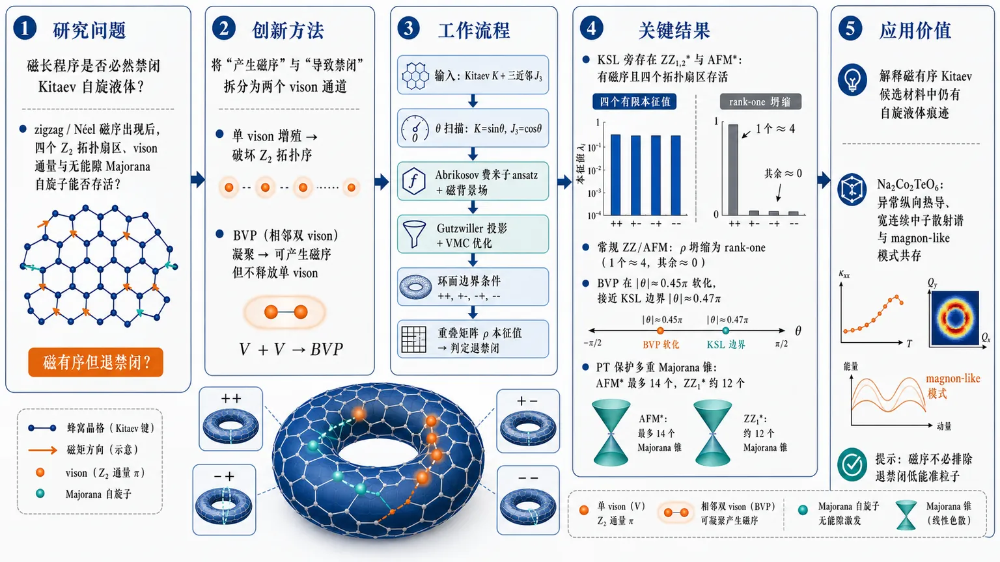
研究问题在 Kitaev-J₃ 蜂窝自旋模型中，磁长程序是否一定会禁闭 Kitaev 自旋液体的分数化准粒子？核心要检验的是：zigzag 或 Néel 反铁磁序出现后，环面上的 (Z₂) 拓扑扇区、vison 通量结构和无能隙 Majorana 自旋子能否仍然存活，形成“磁有序但退禁闭”的中间相。创新方法Aha 点是把“产生磁序”和“导致禁闭”拆成两个不同 vison 通道：单 vison 增殖会破坏 (Z₂) 拓扑序，但由两个相邻 vison 组成的拓扑平凡 bosonic vison pair（BVP）可以凝聚成磁序而不立即释放单 vison。论文用 Gutzwiller 投影 Abrikosov 费米子 VMC 构造四个环面拓扑扇区，并用归一化重叠矩阵本征值判断它们是否仍线性独立，从而直接区分退禁闭磁体和常规禁闭磁体。工作流程输入为最近邻 Kitaev 相互作用 (K) 与三近邻反铁磁 Heisenberg 相互作用 (J₃) 的蜂窝模型；先用角度 (K=sinθ, J₃₌ₒ̧sθ) 扫描相图；再建立含磁背景场的 Abrikosov 费米子平均场 ansatz，经 Gutzwiller 投影和 VMC 优化得到 KSL、ZZ、AFM 等候选态；随后在环面两条不可收缩环上施加四种自旋子边界条件 (++,+-,-+,--)，计算投影态重叠矩阵 (h̊o) 及其本征值；最后从 Kitaev 自旋液体出发计算单 vison 与 BVP 的 (J₃) 诱导动力学，追踪软化动量点并对应到 zigzag 或 Néel 磁序。关键结果相图显示 KSL 旁边存在退禁闭 (ZZ₁,₂^*) 与 (AFM^*) 磁有序相：它们已有 zigzag 或 Néel 长程序，但环面重叠矩阵仍保留四个有限本征值，表示四个 (Z₂) 拓扑扇区存活；而大 (J₃) 的常规 ZZ/AFM 相坍缩为 rank-one，一个本征值趋近 4、其余趋近 0。BVP 在 (|θ|simeq0.45π) 软化，接近 VMC 的 KSL 边界 (|θ|simeq0.47π)；FM Kitaev 侧 M 点软模产生 (ZZ₁)，AFM 侧 (Γ) 与 M 点软模产生 Néel AFM 和 (ZZ₂)。退禁闭相中还出现受 (PT) 保护的多重 Majorana 锥，如 (AFM^*) 最多 14 个、(ZZ₁^*) 折叠布里渊区中 12 个。应用价值该研究为 Kitaev 材料中“已经磁有序却仍表现出自旋液体痕迹”的实验现象提供微观图像：磁序可由拓扑平凡 vison-pair 凝聚产生，而无能隙 Majorana 自旋子和残余 (Z₂) 拓扑结构仍能贡献低温热输运。它特别为 Na₂Co₂TeO₆ 等磁有序 Kitaev 候选材料中的异常纵向热导、宽连续中子散射谱和 magnon-like 模式共存提供可检验解释，并提示磁序不必排除退禁闭低能准粒子。第一部分：核心概览 (Overview)
Kitaev-(J₃) 蜂窝模型中存在一种介于 Kitaev 自旋液体与常规磁有序相之间的 退禁闭磁有序相：zigzag 或 Néel AFM 长程序与残余 (Z₂) 拓扑结构共存。核心证据包括环面上多个线性无关拓扑扇区、由 vison-pair 而非单 vison 凝聚驱动的磁序、以及受 (PT) 保护的多重 Majorana 锥。该结果为 Kitaev 材料中“磁有序但仍有分数化低能激发”的实验异常提供微观机制。
---
第二部分：结构化快速回顾
《Evidence for Deconfined Magnetic Order in the Kitaev-J₃ Model》（None，）
背景
受挫量子磁体中，传统磁体依靠对称性破缺和局域序参量描述，量子自旋液体则具有长程纠缠和分数化激发。关键问题是：磁有序是否必然导致分数化准粒子禁闭。Kitaev 材料如 Na(₂)Co(₂)TeO(₆) 在磁有序区仍显示异常纵向热输运，提示可能存在 fractionalized magnetism。
方法
采用 变分蒙特卡洛 VMC 与 Gutzwiller 投影 Abrikosov 费米子 parton 波函数，最大系统尺寸为 (12×12) 晶胞、共 288 sites。通过环面上四种自旋子边界条件 (μin++,+-,-+,--) 构造归一化重叠矩阵 (h̊o)，诊断拓扑基态简并。同时从 Kitaev 自旋液体出发分析 single-vison 与 bosonic vison pair, BVP 的 (J₃) 诱导动力学。
结果
相图包含 KSL、退禁闭 (ZZ₁,₂^*) 与 (AFM^*)，以及较大 (J₃) 下的常规 (ZZ₁,₂) 与 AFM。退禁闭磁相在存在磁长程序时仍保持四个有限拓扑扇区；常规磁相重叠矩阵坍缩为 rank-one。BVP 在 (|θ|simeq0.45π) 软化，接近 VMC 中 KSL 边界 (|θ|simeq0.47π)。
讨论
磁序可由拓扑平凡的 vison-pair 凝聚产生，而单 vison 保持能隙，因此 (Z₂) 规范结构不立即崩塌。退禁闭磁相还具有多重 Majorana 锥，可为磁有序 Kitaev 材料中的低温热输运异常提供解释。
局限
自旋子能谱来自平均场诊断，Gutzwiller 投影与规范涨落会重整化可观测谱。动力学结构因子的定量 VMC 尚未完成。较大 (J₃) 下进入常规禁闭磁相的转变性质仍未知，可能是尖锐相变也可能是 crossover-like。
结论
Kitaev-(J₃) 模型提供了一条微观路径：通过拓扑平凡复合玻色模凝聚实现磁序，同时保留残余 (Z₂) 拓扑结构与分数化低能激发，突破“磁有序 vs 自旋液体”的二分法。
---
第三部分：逐章节冷凝解析 (Section-by-Section Condensing)
Abstract
Deconfined magnetic phases are identified in the Kitaev-(J₃) honeycomb model
通过 VMC 与 vison-quasiparticle analysis，Kitaev-(J₃) 蜂窝模型中出现 zigzag 或 antiferromagnetic order 与残余 (Z₂) 拓扑结构共存的相。摘要直接给出核心命题：*"We provide evidence for deconfined magnetic phases in which zigzag or antiferromagnetic order coexists with remnant (Z₂) topological structure inherited from the KSL."* 这里的“deconfined”不是单纯无能隙，而是指磁有序背景中 (Z₂) 拓扑扇区与分数化准粒子未被完全禁闭。
Topological-sector survival distinguishes deconfined order from conventional order
环面上优化后的变分波函数在退禁闭磁相中保留多个线性无关拓扑扇区，而常规磁相坍缩为单一扇区。关键判据是：*"The optimized variational wave functions retain multiple linearly independent topological sectors on a torus, whereas those of conventional ordered phases collapse to a single sector."* 该判据直接将普通对称性破缺简并与拓扑简并区分开来。
Magnetic order originates from vison-pair condensation rather than single-vison proliferation
磁序的微观机制来自 vison pair condensation，而不是单 vison 软化导致的规范禁闭。摘要表述为：*"The vison-quasiparticle analysis shows that magnetic order naturally arises from vison-pair condensation while single visons remain gapped, yielding a microscopic mechanism for magnetic ordering without immediate confinement."* 这构成全文最重要的机制创新：磁有序通道与禁闭通道分离。
Gapless spinons provide a connection to thermal-transport anomalies
退禁闭磁相中还存在 gapless spinons 和多个 Majorana cones，可解释磁有序 Kitaev 材料的低温纵向热输运异常。摘要给出材料关联：*"The resulting phases further host gapless spinons with multiple Majorana cones, offering a possible microscopic scenario for the anomalous low-temperature longitudinal thermal transport reported in magnetically ordered Kitaev materials such as Na(₂)Co(₂)TeO(₆)."*
---
Introduction
Fractionalized magnetism challenges the Landau dichotomy
传统磁体由 symmetry breaking 和 local order parameters 表征；量子自旋液体没有磁序，却具有 long-range entanglement 与 fractionalized excitations。引言以这一对比建立问题背景：*"Conventional magnets are characterized by symmetry breaking and local order parameters, whereas quantum spin liquids (QSLs) evade magnetic order and exhibit long-range entanglement and fractionalized excitations."* 关键科学问题是磁序能否在不完全禁闭分数化准粒子的情况下出现。
Topologically trivial bosonic composites can generate order without confinement
一种自然机制是拓扑平凡的局域玻色复合体凝聚，诱发磁序但不破坏规范结构。核心表述为：*"A natural route is the condensation of local topologically trivial bosonic composites, which can induce magnetic order without the confinement associated with topologically nontrivial anyon condensation."* 这为后文 BVP condensation 提供理论框架。
Microscopic diagnosis of deconfined magnetism remains difficult
在微观自旋模型中确认退禁闭磁有序相困难，因为同一相互作用既可能驱动磁序，也可能破坏底层规范结构。关键困难被概括为：*"the same interactions that drive magnetic order may also destabilize the underlying gauge structure, making a deconfined magnet difficult to distinguish from a conventional confined ordered state."* 因此必须同时诊断 remnant topological structure 和 bosonic ordering channel。
Kitaev spin liquid provides a paradigmatic (Z₂) platform
自旋 (1/2) Kitaev 蜂窝模型是精确可解的 (Z₂) 自旋液体，含有 Majorana fermions 与静态 (Z₂) gauge fluxes / visons。原文描述为：*"A paradigmatic QSL is realized in the spin-(1/2) Kitaev honeycomb model, an exactly solvable (Z₂) spin liquid, namely Kitaev spin liquid (KSL), with emergent Majorana fermions coupled to static (Z₂) gauge fluxes (visons)."*
Kitaev materials motivate the (J₃) perturbation
Kitaev 相互作用自然出现在强自旋轨道耦合 Mott 绝缘体中，并与蜂窝铱酸盐、(α)-RuCl(₃)、钴酸盐等候选材料相关。材料动机被明确写作：*"Its bond-dependent interactions, naturally arising in spin-orbit-coupled Mott insulators, have motivated extensive studies of candidate Kitaev materials, including honeycomb iridates, (α)-RuCl(₃), and cobaltates such as Na(₂)Co(₂)TeO(₆)."*
Magnetically ordered Kitaev materials still show proximate spin-liquid signatures
多数候选材料在低温出现磁序，但实验仍观测到接近自旋液体的迹象，包括非弹性中子散射的宽连续谱与异常热输运。原文依据为：*"Although most candidate materials develop low-temperature magnetic order due to additional non-Kitaev interactions, a variety of experiments have reported signatures suggestive of proximate QSL physics, including broad continua in inelastic neutron scattering and unusual thermal-transport properties."*
Na(₂)Co(₂)TeO(₆) suggests gapless excitations inside ordered regimes
近期 Na(₂)Co(₂)TeO(₆) 纵向热输运实验提示磁有序相内仍可能存在非常规无能隙激发。关键句为：*"Notably, recent longitudinal thermal-transport measurements on Na(₂)Co(₂)TeO(₆) further suggest that unconventional gapless excitations may persist inside magnetically ordered regimes."* 这直接连接理论模型与实验异常。
The central question targets coexistence of magnetic order, topology, and gapless fractionalization
核心问题被明确限定为能否在微观模型中稳定同时具有三要素的共存区：磁序、残余拓扑结构、无能隙分数化激发。原文为：*"The central question is whether such a coexistence regime, with magnetic order, remnant topological structure, and gapless fractionalized excitations, can be stabilized in a microscopic spin model relevant to Kitaev materials."*
Third-neighbor exchange is chosen because it is relevant to cobaltate Kitaev materials
研究对象是最近邻 Kitaev 相互作用与反铁磁三近邻 Heisenberg 耦合竞争的模型。动机来自钴酸盐中较大的 (J₃)：*"Motivated by studies of cobaltate Kitaev materials, where third-neighbor exchange has been argued to be sizable, we investigate the Kitaev-(J₃) model on the honeycomb lattice."*
Main claim combines VMC topology, BVP mechanism, and reconstructed spinons
引言末尾概括三条证据链：退禁闭 (ZZ₁,₂^*) 与 (AFM^*) 保留多个拓扑扇区；磁序由 bosonic vison-pair modes 凝聚产生；自旋子能谱重构并保持无能隙。关键表述包括：*"the deconfined zigzag and AFM states retain multiple linearly independent topological sectors on a torus"*，以及 *"magnetic order can emerge through the condensation of bosonic vison-pair modes, while single visons remain gapped."*
---
Model Hamiltonian
The microscopic model contains nearest-neighbor Kitaev and third-neighbor Heisenberg terms
模型哈密顿量为
[
H=sum_łangle i,jångleγK Sᵢ^γ Sⱼ^γ+
sumłₐₙgₗₑ!łₐₙgₗₑ!łₐₙgₗₑ ᵢ,ⱼåₙgₗₑ!åₙgₗₑ!åₙgₗₑJ₃SᵢḑotSⱼ .
]
其中最近邻键按 (γ=x,y,z) 区分，三近邻项为 Heisenberg 形式。原文定义为：*"where (łangle i,jångleγ) denotes a nearest-neighbor (NN) (γ)-bond ((γ=x,y,z)) while (łangle!łangle!łangle i,jångle!ångle!ångle) denotes a third-NN bond."*
The coupling parameterization fixes the scanned regime
耦合用角度 (θ) 参数化：(K=sinθ)，(J₃₌ₒ̧sθ)，研究区间为 (θin[-π/2,π/2])。原文写明：*"We parameterize the couplings by (K=sinθ) and (J₃₌ₒ̧sθ), and focus on the regime (θin[-π/2,π/2])."* 因此 (J₃ge0)，对应反铁磁三近邻交换；(θ<0) 是 FM Kitaev，(θ>0) 是 AFM Kitaev。
The model has spin-space-group symmetry rather than ordinary spin rotation symmetry
除自旋轨道纠缠的 (D₃d×Z₂mathcal T) 外，模型还具有纯自旋 (π) 旋转对称性 (D₂^s=E,C₂ₓ,C₂y,C₂z)。原文说明：*"The full symmetry is therefore a spin-space-group symmetry, which relates the degenerate magnetic configurations."* 这解释了磁构型之间的对称联系。
A four-sublattice duality maps FM and AFM Kitaev sides
模型存在精确四子格对偶变换 (mathcal T₄)，将 ((K,J₃₎) 映射到 ((-K,J₃₎)，即 (θ→-θ)。原文为：*"The model also admits an exact four-sublattice duality transformation (T₄), which maps ((K,J₃₎) to ((-K,J₃₎), or equivalently (θ) to (-θ) under this parameterization."* 后文 (ZZ₁)、(ZZ₂)、AFM 的对应关系依赖此对偶性。
The phase diagram separates deconfined magnetic phases from conventional counterparts
图 1(a) 显示相图包含 KSL、退禁闭 (ZZ₁,₂^*) 与 (AFM^*)，以及常规 (ZZ₁,₂) 与 AFM。图注直接概括：*"The VMC phase diagram of the Kitaev-(J₃) model, showing the KSL, deconfined zigzag and antiferromagnetic phases ((ZZ₁,₂*) and (AFM*)), and their conventional counterparts ((ZZ₁,₂) and AFM)."*
---
VMC Results
The variational wave functions use Gutzwiller-projected Abrikosov fermions
VMC 使用 Gutzwiller-projected fermionic parton wave functions。自旋用 Abrikosov 费米子表示，单占据约束由 (P_G) 实施。原文写道：*"We first employ variational Monte Carlo (VMC) with Gutzwiller-projected fermionic parton wave functions, in which the spin operators are represented by Abrikosov fermions subject to a single-occupancy constraint enforced by Gutzwiller projector (Pₘ̊ G)."*
The optimized trial state is generated from a quadratic mean-field Hamiltonian
将哈密顿量重写为费米子算符并作平均场解耦，得到含变分参数 (η) 的二次平均场哈密顿量 (Hₘ̊ ₘf(η))，并加入描述磁序的 site-dependent background fields。试探态为
[
|Ψ(η)ångle=P_G|Ψₘ̊ ₘf(η)ångle .
]
原文依据为：*"Rewriting Eq. (1) in fermionic operators and decoupling the interactions yields a quadratic mean-field Hamiltonian (Hₘ̊ ₘf(η)), supplemented by site-dependent background fields that capture symmetry-breaking magnetic orders."*
The numerical systems reach 288 sites
优化通过 Monte Carlo 采样最小化变分能量，系统最大为 (12×12) 晶胞，即 288 sites。原文给出具体规模：*"The trial spin wave function (|Ψ(η)ångle=Pₘ̊ G|Ψₘ̊ ₘf(η)ångle) is optimized by minimizing its variational energy through Monte Carlo sampling, on tori of size up to (12×12) unit cells, corresponding to 288 sites."*
Conventional and deconfined states are compared on equal footing
所有常规磁相与退禁闭磁相使用同一变分框架处理，从而降低方法偏置。原文强调：*"All conventional and deconfined states are treated within the same variational framework on equal footing."*
Increasing (J₃/|K|) drives KSL into magnetic order
相图从 (J₃/|K|approx0) 的 KSL 出发，随 (J₃) 相对增强进入磁有序相。原文为：*"Starting from the KSL at (J₃/|K|approx0), increasing the relative strength of (J₃) drives the system into magnetically ordered phases."*
FM Kitaev side favors (ZZ₁) zigzag order
在 (K<0) 的 FM Kitaev 相互作用一侧，主要不稳定性为 zigzag order，记作 (ZZ₁)，ordering wave vector 为 (mathbf Q=mathrm M₁,₂,₃)，且平行于某条晶格键。原文说明：*"For the FM Kitaev interaction ((K<0)), the leading instability is toward zigzag order, denoted by (ZZ₁), with the ordering wave vector (Q=M₁,₂,₃) parallel to a lattice bond."*
Order-by-disorder selects discrete spin axes inside the classically degenerate plane
经典情况下，当 (mathbf Q) 平行于 (α) 键，磁矩倾向位于 (β-γ) 平面；VMC 进一步消除平面内简并，选择 (β) 或 (γ) 轴。原文证据为：*"Classically, when (Q) is parallel to the (α) bond, the ordered moments tend to lie in the (β-γ) plane"*；随后 *"The VMC optimization lifts this residual in-plane degeneracy and selects moments aligned along the (β) or (γ) axis, consistent with an order-by-disorder mechanism."* 例如 (mathbf Q=mathrm M₂) 平行 (z) 键时，磁矩沿 (x) 或 (y)。
AFM Kitaev side supports Néel AFM and (ZZ₂) order
在 (K>0) 一侧，(J₃) 驱动系统进入 Néel AFM 或另一种 zigzag order (ZZ₂)。原文为：*"On the AFM Kitaev side ((K>0)), the (J₃) interaction drives the system into either Néel AFM order or a distinct zigzag order, denoted by (ZZ₂)."*
(mathcal T₄) duality connects (ZZ₁), (ZZ₂), and AFM patterns
图 1(b) 中 AFM 与 (ZZ₂) 可由 (ZZ₁) 经四子格对偶变换 (mathcal T₄) 得到。原文为：*"the AFM and (ZZ₂) orders are related to (ZZ₁) by the (T₄), confirming that the variational states respect this microscopic duality."*
Ordered phases adjacent to KSL retain topological degeneracy and spinon fractionalization
靠近 KSL 的磁有序相保留来自母体 KSL 的标志，包括 topological ground-state degeneracy 与 fractionalized spinon excitations。原文说明：*"the ordered states adjacent to the KSL retain signatures inherited from the parent KSL, including topological ground-state degeneracy (GSD) and fractionalized spinon excitations."* 因此这些相记为 (ZZ₁,₂^*) 与 (AFM^*)，区别于大 (J₃) 下常规磁相。
Topological sectors are generated by spinon boundary conditions on a torus
为诊断残余 (Z₂) 拓扑结构，环面上通过自旋子沿两条不可收缩环的周期/反周期边界条件生成四个扇区：(μin++,+-,-+,--)。原文为：*"Distinct sectors are generated by imposing periodic or antiperiodic boundary conditions for the fermionic spinons along the two noncontractible cycles, labeled by (μin++,+-,-+,--)."*
These sectors represent vison-flux insertion rather than magnetic symmetry degeneracy
四个扇区的物理含义是 vison-flux insertions，而不是由磁有序破缺产生的普通对称性简并。原文明确指出：*"These sectors represent vison-flux insertions rather than symmetry-related magnetic degeneracies."* 这对排除“只是 zigzag/AFM 取向简并”的替代解释至关重要。
The normalized overlap matrix defines the GSD diagnostic
归一化重叠矩阵为
[
h̊oμν=
fracłangle P_GΨ_μ|P_GΨ_νångle
{sqrt{łangle P_GΨ_μ|P_GΨ_μångle
łangle P_GΨ_ν|P_GΨ_νångle}} .
]
其对角元满足 (h̊oμμ=1)，迹为 (Trh̊o=4)。原文写道：*"With this normalization, (h̊oμμ=1) and (Trh̊o=4)."*
Deconfined phases retain four finite eigenvalues while confined phases become rank-one
判据非常清晰：退禁闭相热力学极限中保留四个有限本征值；禁闭磁相变为 rank-one，一个本征值趋近 4，其余三个趋近 0。原文为：*"A deconfined state retains four finite eigenvalues in the thermodynamic limit, whereas a confined magnetic phase exhibits a rank-one structure, with one eigenvalue approaching four and the remaining three vanishing."*
The ratio (łambda₁/łambda₄) is used as a finite-size diagnostic
本征值排序为 (łambda₁łeḑotsłełambda₄)，用 (łambda₁/łambda₄) 判断拓扑扇区是否存活。原文说明：*"We therefore use the ratio (łambda₁/łambda₄), with eigenvalues ordered as (łambda₁łeqḑotsłeqłambda₄), as a finite-size diagnostic of the survival of topological sectors."*
KSL shows fourfold topological degeneracy
图 2 中 KSL 显示预期的四重拓扑简并。图注写道：*"The KSL exhibits four finite eigenvalues, reflecting the fourfold degeneracy of a (Z₂) spin liquid."* 正文也表述为：*"the KSL exhibits the expected fourfold topological degeneracy."*
Conventional ZZ and AFM phases show confinement
常规 (ZZ) 与 AFM 相中仅一个本征值保持有限，意味着底层 (Z₂) 规范结构禁闭。原文为：*"deep in the conventional (ZZ) and AFM phases only one eigenvalue remains finite, indicating confinement of the underlying (Z₂) gauge structure."* 图注也称：*"The conventional ZZ and AFM phases show a single dominant eigenvalue, signaling (Z₂) confinement."*
Deconfined magnetic phases retain topology despite long-range order
中间退禁闭磁相 (ZZ₁,₂^*) 与 (AFM^*) 在存在长程磁序时仍保留四个有限本征值，但有限尺寸劈裂比 KSL 更强。原文证据为：*"the intermediate deconfined magnetic phases, (ZZ₁,₂*) and (AFM*), retain four finite eigenvalues even in the presence of long-range magnetic order, albeit with stronger finite-size splitting than in the KSL."*
Rank-one collapse rules out ordinary magnetic degeneracy
常规有序相中的 rank-one 坍缩排除了将退禁闭相多扇区理解为普通磁对称性简并的解释。原文为：*"The rank-one collapse in conventional ordered phases rules out an interpretation in terms of ordinary symmetry-related magnetic degeneracies and supports the survival of topological sectors in the deconfined magnetic phases."*
Magnetic ordering reconstructs the spinon dispersion
KSL 低能含两个对称相关的 Majorana 锥；磁序出现后，序参量与分数化自旋子耦合，强烈重构能带。原文为：*"The KSL contains two symmetry-related Majorana cones at low energies. Upon magnetic ordering, the coupling between the order parameter and the fractionalized spinons strongly reconstructs the dispersion."*
Deconfined AFM and zigzag phases host multiple Majorana cones
平均场能谱中，(AFM^*) 相可出现最多 14 个 Majorana 锥；四子格 (ZZ₁^*) 相在折叠后的 Brillouin zone 中有 12 个 Majorana 锥。原文给出具体数字：*"At the mean-field level, this reconstruction yields multiple Majorana cones: up to fourteen in the (AFM*) phase without Brillouin-zone folding, and twelve in the reduced Brillouin zone of the four-sublattice (ZZ₁*) phase."*
(PT) symmetry protects the gapless nodal structure
优化 ansatz 中反演 (mathcal P) 与时间反演 (mathcal T) 各自破缺，但组合 (PT) 保持，保护无能隙节点。原文为：*"Although inversion (P) and time reversal (T) are individually broken, the combined symmetry (PT) remains intact in the optimized ansatz and protects the gapless nodal structure."*
Gapless spinons distinguish deconfined magnets from confined magnets
(PT)-保护无能隙节点是退禁闭磁性的定性特征，而常规禁闭磁体没有低能自旋子。原文为：*"The persistence of (PT)-protected gapless nodes provides a qualitative fingerprint of deconfined magnetism, in contrast to conventional confined magnets where low-energy spinons are absent."*
Mean-field spectra are diagnostic rather than directly observable
自旋子平均场色散不能直接等同实验谱，因为 Gutzwiller 投影和规范涨落会显著重整化谱性质。原文提醒：*"the mean-field dispersions serve as diagnostics rather than directly observable spectra, since Gutzwiller projection and gauge fluctuations can significantly renormalize spectral properties without altering the underlying topological structure."*
Weak magnetic field does not destroy the deconfined regimes
在弱磁场下重新优化的变分态仍显示多个有限本征值，说明退禁闭磁相不是精细调参的临界线。原文为：*"We find that the overlap matrix of the reoptimized variational states continues to exhibit multiple finite eigenvalues throughout the deconfined regimes"*，并指出 *"This indicates that the deconfined magnetic phases occupy finite parameter regimes rather than fine-tuned transition lines."*
---
Vison Perspective
Vison analysis explains the microscopic origin of deconfined magnetic phases
从母体 KSL 的 vison-quasiparticle 出发分析退禁闭磁相的来源。原文开宗明义：*"We further clarify the microscopic origin of the deconfined magnetic phases through a vison-quasiparticle analysis of the parent KSL."*
Non-Kitaev interactions give static visons dynamics
Kitaev 极限中 vison 静态，但非 Kitaev 相互作用可赋予其动力学并驱动不稳定性。原文为：*"Although visons are static in the Kitaev limit, non-Kitaev interactions can endow them with dynamics and drive vison instabilities."*
Single-vison proliferation causes confinement, while BVP condensation can preserve topology
不同 vison 不稳定性给出不同离开 KSL 的路径：单 vison 增殖会禁闭 itinerant spinons 并破坏 (Z₂) 拓扑结构；相邻两个 vison 形成的拓扑平凡 BVP 凝聚可诱发磁序，同时保留规范结构。原文完整说明：*"single-vison proliferation confines the itinerant spinons and destroys the (Z₂) topological structure, whereas condensation of a bosonic vison pair (BVP), formed by two neighboring visons as a topologically trivial quasiparticle, can induce symmetry-breaking magnetic order while preserving the underlying (Z₂) gauge structure."*
The ordering pattern is encoded in the soft BVP wave function
磁序类型不是外加假设，而由软化的 BVP 模波函数决定。原文为：*"with the ordering pattern encoded in the soft BVP wave function."* 这使 vison 分析能与 VMC 相图进行一一对应。
Single-vison hopping is computed from (J₃)-induced matrix elements
单 vison 有效跳跃通过两个相距很远的 vison 构型计算，矩阵元为
[
t^vf,ᵢequivłangle v_f|HJ_₃|vᵢångle .
]
原文为：*"For single visons, we place two well-separated visons on a torus and evaluate the hopping matrix element (tvf,ᵢequivłangle v_f|HJ_₃|vᵢångle), where (|vᵢångle) and (|v_fångle) denote the initial and final single-vison states."*
A three-spin term (κ) localizes the vison dressing
为使单 vison 成为定义良好的局域准粒子，引入三自旋项 (κ)，它为 matter Majorana 费米子产生 Haldane 质量，并使 vison 的费米子云局域在 (ξ_c=v_c/Δ_c)。原文为：*"we introduce a three-spin term ((κ)) which generates a Haldane mass for matter Majorana fermions and localizes the fermionic dressing of a vison over the length scale (ξ_c=v_c/Δ_c)."* 具体参数为 (v_c=sqrt3|K|)，(Δ_c=6sqrt3κ)。
Leading-order single-vison hopping vanishes as (κ→0)
在保持 vison 间距大于 (ξ_c) 的条件下取 (κ→0)，FM 与 AFM Kitaev 两侧的 leading-order (J₃)-诱导单 vison 跳跃均消失。原文为：*"Taking the limit (κi̊ghtarrow0) while keeping the vison separation larger than (ξ_c), we find that the leading-order (J₃)-induced single-vison hopping vanishes for both FM and AFM Kitaev interactions."*
Suppressed single-vison softening supports finite stability of deconfined order
单 vison 跳跃消失抑制 leading-order 单 vison 软化，意味着 elementary visons 在有限 (J₃) 范围内保持能隙，而 KSL 的不稳定性由 BVP 模软化驱动。原文为：*"This suppresses leading-order single-vison softening, consistent with elementary visons remaining gapped over a finite range of (J₃), while the instability out of the KSL is instead driven by the softening and condensation of BVP modes."*
(J₃) generates finite BVP hopping and dispersive BVP bands
与单 vison 不同，(J₃) 对 BVP 产生有限跳跃，使 BVP 能带具有色散并在磁不稳定性附近软化。原文为：*"In contrast to the absence of single-vison hopping, (J₃) generates finite hopping amplitudes for BVPs, producing dispersive bands that soften near the magnetic instabilities."*
FM Kitaev side softens at M points and generates (ZZ₁)
在 FM Kitaev 侧，(θsimeq-0.45π) 附近，每个 (M) 点有两个简并玻色模软化，其凝聚产生 (ZZ₁) 序，磁矩沿两个不同自旋轴，与 VMC 图 1(b) 一致。原文为：*"For the FM Kitaev interaction, near (θsimeq-0.45π), two degenerate bosonic modes soften at each (M) point."* 随后：*"Their condensation generates (ZZ₁) order, with moments along two distinct spin axes, consistent with the (ZZ₁) pattern from VMC."*
AFM Kitaev side softens at (Γ) and M points and generates AFM plus (ZZ₂)
在 AFM Kitaev 侧，(θsimeq0.45π) 附近，BVP gap 在 (Γ) 与 (M) 点同时闭合。三个 (Γ) 简并软模诱导 Néel AFM，磁矩沿三个自旋轴；(M) 点软模产生 (ZZ₂)。原文为：*"For the AFM Kitaev interaction, the dual instability occurs near (θsimeq0.45π), where the BVP gap closes at both the (Γ) and (M) points."* 并写明：*"The three degenerate soft modes at (Γ) induce Néel AFM order with the moments aligned along the three spin axes, whereas the soft modes at the (M) points produce ordering patterns consistent with (ZZ₂)."*
BVP softening scale matches the VMC KSL boundary
BVP 软化发生在 (|θ|simeq0.45π)，接近 VMC 的 KSL 边界 (|θ|simeq0.47π)，在对称性和能标上相互支持。原文为：*"The BVP softening scale (|θ|simeq0.45π) is close to the VMC KSL boundary at (|θ|simeq0.47π), supporting consistency in both symmetry and energy scale."*
BVP condensation avoids elementary-vison proliferation
每个 BVP 携带拓扑平凡的 (Z₂) 通量，因此其凝聚不会直接导致 elementary vison 增殖。原文为：*"Since each BVP carries a trivial (Z₂) flux, its condensation does not directly lead to proliferation of elementary visons."* 结合单 vison 跳跃被抑制，支持“磁序经 BVP 通道产生而单 vison 软化被避免”的退禁闭磁相。
The critical theory is left open
BVP 软化暗示可能连续不稳定性，但其临界理论及其与无能隙自旋子的耦合尚未解决。原文为：*"The BVP softening suggests a continuous instability; the associated critical theory, including its coupling to gapless spinons, is left for future work."*
---
Discussion and Conclusion
The Kitaev-(J₃) model realizes a microscopic setting for deconfined magnetic phases
结论直接给出模型层面的定位：Kitaev-(J₃) 模型提供了一个长程磁序、残余 (Z₂) 拓扑结构与分数化准粒子共存的微观场景。原文为：*"Our results provide evidence that the Kitaev-(J₃) model realizes a microscopic setting for deconfined magnetic phases, where long-range magnetic order coexists with remnant (Z₂) topological structure and fractionalized quasiparticles."*
The central evidence is nontrivial torus ground-state degeneracy
核心证据仍是环面上非平凡基态简并：退禁闭 (ZZ₁,₂^*) 与 (AFM^*) 保留多个线性无关拓扑扇区，常规磁相坍缩为单扇区。原文为：*"The central evidence is the persistence of nontrivial ground-state degeneracy on a torus: the deconfined (ZZ₁,₂*) and (AFM*) phases retain multiple linearly independent topological sectors, whereas conventional ordered phases collapse to a single sector."*
Weak field stability rules out fine tuning
退禁闭拓扑扇区结构在弱的降低对称性磁场下仍存活，说明该相是有限参数区域而不是临界线。原文为：*"This structure further survives a weak symmetry-lowering magnetic field, indicating that the coexistence of magnetic order and topological structure is not fine-tuned."*
The vison-channel separation is the microscopic stabilizing mechanism
微观稳定性来自通道分离：磁序经拓扑平凡 BVP 通道发展，leading-order 单 vison 软化被抑制。原文为：*"Microscopically, the stability is supported by a separation of vison channels: magnetic order develops through a topologically trivial BVP channel, whereas leading-order single-vison softening is suppressed."* 因此 *"magnetic order can emerge without immediate proliferation of elementary visons."*
Results are consistent with previous work but add topology diagnosis
磁有序图样和 KSL 边界与此前数值和 mean-field-plus-RPA 研究大体一致，但新增贡献是证明中间有序区保留残余 (Z₂) 拓扑结构。原文为：*"The magnetic ordering patterns and the KSL boundary are broadly consistent with previous numerical and mean-field-plus-RPA studies, while the present work further shows that the intermediate ordered regimes retain remnant (Z₂) topological structure."*
Gapless Majorana spinons may explain anomalous thermal conductivity
平均场中自旋子能带保持无能隙并具有多个 Majorana 锥，这些准粒子可能在弱规范涨落下稳定，贡献低温热输运。原文为：*"At the mean-field level, the spinon bands remain gapless with multiple Majorana cones; these gapless quasiparticles may remain stable against weak gauge fluctuations and could contribute to low-temperature thermal transport."* 该机制被用于解释 Na(₂)Co(₂)TeO(₆) 的异常纵向热导：*"offering a possible microscopic scenario for the anomalous longitudinal thermal conductivity observed in Na(₂)Co(₂)TeO(₆)."*
Neutron scattering should see continuum plus magnon-like modes
磁背景会混合 Kitaev parton 描述中的不同分数化准粒子，因此自旋动力学结构因子可能显示无能隙 spinon continuum 与磁序相关 magnon-like modes 共存。原文为：*"the magnetic background hybridizes different fractionalized quasiparticles of Kitaev’s parton description, suggesting that the spin dynamical structure factor may exhibit a gapless spinon continuum coexisting with magnon-like modes associated with magnetic order."*
A quantitative dynamical-VMC calculation remains future work
中子散射特征仍未进行定量动力学 VMC 计算。原文明确限制：*"Such a low-energy continuum would provide a characteristic neutron-scattering signature of the deconfined magnetic phases, although a quantitative dynamical-VMC calculation is left for future work."*
The framework may extend to models with (Γ) and (Γ') interactions
该思路可推广到包含 (Γ) 与 (Γ') 的更现实模型，尤其负 (Γ) 的 AFM KSL 附近已有候选 fractionalized ordered regimes。原文为：*"This perspective may extend to more realistic models with additional (Γ) and (Γprⁱme) interactions, where candidate fractionalized ordered regimes were reported near the AFM KSL for negative (Γ)."*
For non-Kitaev parent QSLs, the composite mode must be generalized
如果母体 QSL 不能绝热连接到 Kitaev 极限，vison-pair 描述必须替换为该 QSL 准粒子内容决定的拓扑平凡复合模。原文为：*"if the parent QSL is not adiabatically connected to the Kitaev limit, the vison-pair description must be replaced by the appropriate topologically trivial composite mode determined by the quasiparticle content of that QSL."*
The confinement transition at larger (J₃) remains unresolved
较大 (J₃) 下从退禁闭磁相进入常规有序相的禁闭过程尚未确定，可能是尖锐相变，也可能类似 crossover。原文为：*"The nature of the eventual confinement transition into conventional ordered phases at larger (J₃), whether sharp or crossover-like, remains an open question."*
Magnetic order in Kitaev materials need not exclude deconfined quasiparticles
总括性结论是：Kitaev 材料中的磁序不必排除退禁闭低能准粒子。原文为：*"More broadly, our results suggest that magnetic order in Kitaev materials need not preclude deconfined low-energy quasiparticles."*
---
Acknowledgments
Funding and discussions supported the project
致谢对象包括 Zheng-Xin Liu。经费来自中国国家自然科学基金、杭州师范大学启动经费、中央高校基本科研业务费和甘肃省自然科学基金。原文为：*"We thank Zheng-Xin Liu for insightful discussions and valuable comments."* 资助信息包括：*"J.W. acknowledges support from the National Natural Science Foundation of China under Grant No. 12404170"*，以及 *"C.C. acknowledges support from the National Natural Science Foundation of China (Grants No. 12404175 and No. 12247101)."*
---
第四部分：深度理解与语言支持 (Understanding & Nuance)
1. 术语解析
#### Deconfined magnetic order
学术含义：具有普通磁长程序，但底层分数化准粒子与拓扑扇区没有被完全禁闭。这里的“deconfined”不是“没有相互作用”，而是指 (Z₂) gauge structure 仍可在磁有序背景中存活。语境依据是 *"long-range magnetic order coexists with remnant (Z₂) topological structure and fractionalized quasiparticles."*
微妙差别：
- conventional magnetic order：只有对称性破缺，低能激发通常为 magnons。
- deconfined magnetic order：除磁序外，还保留拓扑扇区和 spinons/visons 等分数化自由度。
#### Remnant (Z₂) topological structure
学术含义：相对于完整 KSL，磁序已经破坏部分对称性并重构谱，但 (Z₂) 拓扑特征未完全消失，尤其体现在环面拓扑扇区存活。语境依据是 *"retain multiple linearly independent topological sectors on a torus."*
微妙差别：
“remnant” 暗示不是未受扰动的纯 KSL，而是磁有序相中继承下来的残余拓扑结构。
#### Vison-pair condensation / Bosonic vison pair, BVP
学术含义：两个相邻 vison 形成拓扑平凡的玻色复合准粒子，其凝聚可诱发对称性破缺，但不等同于单个 vison 增殖。关键语境是 *"formed by two neighboring visons as a topologically trivial quasiparticle."*
微妙差别：
- single-vison proliferation：通常导致 (Z₂) 拓扑序禁闭。
- BVP condensation：拓扑平凡，可能只带来磁序而不立即破坏拓扑扇区。
#### Ground-state degeneracy on a torus
学术含义：拓扑有序体系在环面上会因不同全局 (Z₂) flux 扇区产生多个近简并基态。这里用四种自旋子边界条件 (++,+-,-+,--) 实现。语境依据是 *"Distinct sectors are generated by imposing periodic or antiperiodic boundary conditions for the fermionic spinons along the two noncontractible cycles."*
微妙差别：
这不是有限尺寸偶然简并，也不是磁序方向简并，而是与不可收缩环上的 vison flux 插入相关。
#### Rank-one collapse
学术含义：四个候选拓扑扇区在投影后不再线性独立，归一化重叠矩阵只有一个主本征值接近 4，其余趋近 0。语境依据是 *"a confined magnetic phase exhibits a rank-one structure, with one eigenvalue approaching four and the remaining three vanishing."*
微妙差别：
rank-one collapse 是“拓扑扇区消失”的数值信号，不是磁序消失；它对应禁闭化的常规磁体。
---
2. 疑难查证
#### 为什么 BVP 凝聚能产生磁序却不立即导致禁闭？
(Z₂) 自旋液体中，单个 vison 是拓扑非平凡任意子。若单 vison 凝聚，系统中 (Z₂) flux 到处增殖，自旋子绕行时获得的拓扑相位不再定义，分数化准粒子被禁闭，拓扑简并消失。
BVP 是两个相邻 vison 的复合体。两个 (Z₂) flux 相乘为平凡通量，因此 BVP 是 topologically trivial quasiparticle。它可以携带晶格动量、自旋空间量子数等普通对称性量子数，所以凝聚后能够选择某种磁序图样；但由于它不插入净 (Z₂) flux，不必摧毁环面上的全局拓扑扇区。
物理图像：
- 单 vison 凝聚像让“规范涡旋”充满真空，拓扑结构瓦解。
- vison pair 凝聚像让“涡旋-反涡旋或双涡旋复合体”有序排列，能打破普通对称性，却不必释放单个拓扑缺陷。
#### 为什么环面重叠矩阵可以诊断拓扑序？
在 (Z₂) 拓扑有序相中，环面有两条不可收缩环。每条环上可有或无 (Z₂) flux，因此有 (2×2=4) 个拓扑扇区。用 parton 平均场语言，这四个扇区可通过自旋子边界条件 (++,+-,-+,--) 构造。
若系统真正退禁闭，投影后的四个态在热力学极限中应保持线性独立，对应重叠矩阵四个有限本征值。若系统禁闭，flux 插入不再产生不同物理态，四个候选态实际坍缩为同一个态，重叠矩阵变为 rank-one。
因此 (łambda₁/łambda₄) 不是普通能隙或磁矩大小，而是“拓扑扇区是否独立”的指标。
#### 为什么磁序会产生更多 Majorana cones？
纯 KSL 的低能 Majorana 谱有两个对称相关锥。磁有序引入空间周期性背景场，并与 parton 自旋子耦合。该背景会折叠 Brillouin zone、混合不同动量和不同 parton 分量，从而重构能带。若某些组合对称性仍保护节点，例如这里的 (PT)，节点不会全部开隙，而可能分裂成更多 Majorana cones。
这说明“磁有序”并不自动等于“自旋子消失”。在退禁闭相中，磁序像一个周期性势场重排分数化能带，而不是把分数化自由度彻底禁闭。
---
第五部分：创新评估与关联 (Synthesis & Novelty)
1. 创新性判断
#### A microscopic spin model is shown to host deconfined magnetic order
过去关于磁序与分数化共存的研究多来自 parton mean-field theories 或特定 DMRG 证据。该研究推进到一个明确、材料相关的微观模型：Kitaev-(J₃) 蜂窝模型。创新不在于首次提出“fractionalized magnet”，而在于给出同时包含相图、拓扑扇区诊断、vison 机制和自旋子谱的统一证据链。
#### Topology is diagnosed inside magnetically ordered phases rather than inferred indirectly
过去许多 Kitaev 材料研究将磁有序区中的连续谱或热输运异常解释为 proximate KSL，但常缺少直接区分“退禁闭磁体”和“普通磁体加强涨落”的拓扑判据。该研究使用环面四拓扑扇区的归一化重叠矩阵，并展示退禁闭相保留四个有限本征值、常规磁相 rank-one collapse，从而给出更直接的拓扑诊断。
#### The mechanism separates magnetic ordering from confinement
核心新颖机制是 BVP channel vs single-vison channel separation。(J₃) 不在 leading order 软化单 vison，却能使 BVP 能带软化并凝聚。这解决了前人难题：驱动磁序的相互作用为何不同时摧毁规范结构。该机制使“磁有序但未立即禁闭”具有显微基础。
#### The BVP soft modes reproduce specific magnetic orders and energy scales
BVP 分析不仅定性说明可能有磁序，还能重现具体序型：FM Kitaev 侧 (θsimeq-0.45π) 的 (M) 点二重软模给出 (ZZ₁)；AFM Kitaev 侧 (θsimeq0.45π) 的 (Γ) 与 (M) 软模给出 Néel AFM 与 (ZZ₂)。其软化尺度接近 VMC KSL 边界 (|θ|simeq0.47π)，增强了机制可信度。
#### A possible explanation is offered for Na(₂)Co(₂)TeO(₆) thermal transport
低温纵向热导异常通常难以由普通 magnon 图像解释。该研究提出磁有序相内仍存在 gapless spinons 与多重 Majorana cones，可自然贡献低温热输运。这为 Na(₂)Co(₂)TeO(₆) 中“磁有序但疑似分数化”的实验现象提供了可检验微观图像。
#### The work reframes the magnetic-order/spin-liquid dichotomy
传统理解常将磁序与自旋液体视为互斥相。该研究表明二者可通过拓扑平凡复合玻色模凝聚发生连续连接：局域磁序出现，但 (Z₂) 拓扑扇区和分数化低能激发在有限参数区内存活。因此创新点在概念层面是将 Kitaev 材料中的磁有序相重新分类为可能的 fractionalized ordered regimes，而非简单的 proximate KSL 或常规磁体。
-
13
📊 含图深析
📄 摘要：在反铁磁 MnTe2 中用螺旋度和角分辨拉曼散射观测磁振子约化转动对称性，以及左右圆偏振通道的强烈不平衡，指示动量依赖磁振子手性。第一性原理计算支持交错磁体中由晶体对称性产生的自旋劈裂激发。
💡 亮点：MnTe2 的偏振拉曼直接显示磁振子手性和格纹状自旋劈裂特征。该实验为交错磁体的磁振子谱识别提供了可操作光学判据。
📖 展开分析 + 配图
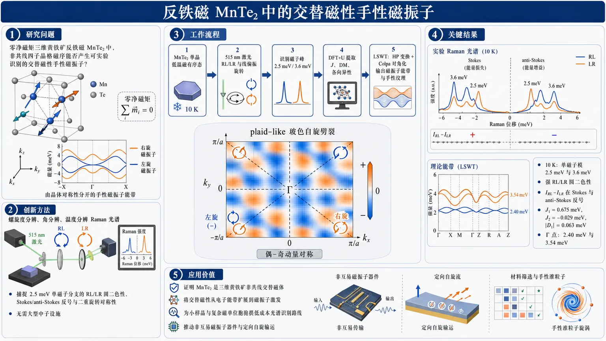
研究问题在零净磁矩的三维黄铁矿反铁磁 MnTe₂ 中，复杂四子晶格非共线磁序是否会产生可实验识别的交替磁性手性磁振子？核心画面是：补偿反铁磁晶胞没有宏观磁矩，但在动量空间中左右旋磁振子能带被晶体对称性撕开，形成方向依赖的自旋劈裂。创新方法用螺旋度分辨、角分辨、温度分辨拉曼光谱直接捕捉 2.5 meV 单磁子分支的 RL/LR 圆偏振强度不平衡、Stokes/anti-Stokes 反号和二重旋转对称性；再用 DFT+U 提取交换作用，并通过线性自旋波理论生成磁振子能带。Aha 点是：无需大型中子散射设施，也能用台式偏振拉曼看见交替磁体的“格纹状”玻色自旋劈裂。工作流程输入 MnTe₂ 单晶与低温磁有序态：515 nm 激光照射样品，分别记录 RL/LR 圆偏振、线偏振旋转角度和温度依赖拉曼谱；从谱线中识别 2.5 meV 与 3.6 meV 磁子峰；DFT+U 计算 J、DM 和各向异性交换参数；Holstein–Primakoff 变换与 Colpa 对角化得到磁振子能带；最终输出 Γ 点能量、圆二色性图样、角向二重/四重纹理和动量空间 plaid-like 自旋劈裂图。关键结果10 K 下观测到两个单磁子模：低能 2.5 meV 和高能 3.6 meV；2.5 meV 分支在 RL 与 LR 通道中出现强烈圆二色性，并且 Stokes 与 anti-Stokes 侧的 IRL−ILR 符号相反。理论给出 J₁=0.675 meV、J₂=-0.029 meV、|D₁|=0.063 meV，Γ 点磁子能量为 2.40 meV 和 3.54 meV，与实验吻合；计算得到的磁振子自旋纹理呈偶-奇动量对称的格纹状劈裂，与电子交替磁能带相同。应用价值证明 MnTe₂ 是三维黄铁矿结构中的非共线交替磁体，并把交替磁性从电子能带扩展到磁振子激发。该研究提供了一种适合小样品和复杂磁单位胞的低成本光谱识别路线，可用于筛选交替磁材料、研究手性准粒子，并推动非互易磁振子器件与定向自旋输运。第一部分：核心概览（Overview）
MnTe₂被确立为三维黄铁矿结构中的非共线交替磁体候选体系。低温螺旋度与角分辨拉曼散射显示，2.5 meV单磁子分支具有显著圆二色性、Stokes/anti-Stokes反号不平衡和降低的旋转对称性；DFT+U与线性自旋波理论给出与电子交替磁能带相同的plaid-like动量空间自旋劈裂纹理。该工作把交替磁性从电子能带扩展到玻色型磁振子激发，为用台式光谱识别非共线交替磁体提供了实验路径。
---
第二部分：结构化快速回顾
《Plaid-Like Spin Splitting and Chirality of Magnon Bands in Antiferromagnetic MnTe₂》（None，）
背景
交替磁体兼具零净磁矩反铁磁序与动量依赖自旋劈裂，其电子与磁振子激发可呈现手性。MnTe₂具有四子晶格非共线反铁磁结构，是六方MnTe之外的重要三维候选体系。
方法
使用螺旋度分辨、角分辨、温度分辨拉曼散射探测低能磁激发；结合DFT+U、磁力线性响应、Holstein–Primakoff变换和Colpa对角化建立磁交换模型与磁振子能带。
结果
10 K下观察到两个单磁子模：约2.5 meV与3.6 meV。2.5 meV分支在RL/LR圆偏振通道中出现强烈强度不平衡，并在Stokes与anti-Stokes侧反号；DFT给出J₁=0.675 meV、J₂=-0.029 meV、|D₁|=0.063 meV，自旋波能量与实验吻合。
讨论
2.5 meV磁子手性异常源于晶体对称性连接的非等价磁子晶格，使左右手磁振子不再严格简并。动量空间自旋纹理呈现偶-奇对称关系和“格纹状”劈裂，是电子交替磁纹理的玻色对应物。
局限
拉曼强度不平衡不能直接定量等同于磁振子自旋极化；高能三重分支理论上自旋极化更强，但实验手性不平衡更弱，说明Raman vertex与散射截面仍需更精细建模。
结论
MnTe₂提供了非共线交替磁体中手性磁振子的实验证据，展示了用偏振拉曼光谱识别交替磁动量空间对称性的可行性。
---
第三部分：逐章节冷凝解析（Section-by-Section Condensing）
Abstract
- Altermagnetic magnons are experimentally identified in MnTe₂
交替磁体被界定为兼具补偿反铁磁序与晶体对称性诱导自旋劈裂激发的新型磁性材料；核心难点在于实验识别。摘要直接给出主张：MnTe₂中的磁振子具有降低旋转对称性、圆偏振通道不平衡和动量依赖手性。证据表述为 *"Altermagnets constitute an emerging class of magnetic materials that combine compensated antiferromagnetic order with spin-split excitations arising from crystalline symmetries."* 以及 *"helicity- and angle-resolved Raman scattering measurements reveal reduced rotational symmetries of magnons and a pronounced imbalance between left- and right-circular polarization channels"*。
- Plaid-like spin splitting is the theoretical fingerprint
DFT+U与线性自旋波理论揭示了动量空间中“格纹状”自旋劈裂结构，这一纹理由MnTe₂非常规子晶格对称性控制，并模拟交替磁电子能带。关键原句为 *"First-principles DFT+U calculations combined with linear spin-wave theory uncover a characteristic plaid-like spin-splitting structure in momentum space."* 以及 *"The resulting magnon spin textures are dictated by the unconventional sublattice symmetries of MnTe₂ and closely emulate those of altermagnetic electronic bands."*
- Main claim centers on chiral spin-wave excitations
结论性贡献是为非共面反铁磁体MnTe₂中的手性自旋波激发提供证据。摘要中的直接表述为 *"Our work provides evidence of chiral spin-wave excitations unique to this non-coplanar antiferromagnet."*
---
I Introduction
- Altermagnetism is positioned as a third magnetic class
交替磁体被放在铁磁与反铁磁二分法之外：其磁序是补偿的、通常无宏观净磁矩，但能带中仍出现大自旋劈裂。直接依据为 *"Altermagnets have recently emerged as a third fundamental class of magnetic materials, transcending the traditional dichotomy between ferromagnetism and antiferromagnetism."* 以及 *"host a compensated collinear magnetic order while exhibiting large spin splitting in their electronic band structures"*。
- Spin splitting is nonrelativistic and symmetry-driven
这种自旋劈裂不同于传统自旋电子学材料中的自旋–轨道耦合机制，而由连接相反磁子晶格的旋转或镜面对称诱导。关键句为 *"this distinct behavior does not arise from relativistic spin–orbit coupling"*，机制表述为 *"a direct consequence of crystal symmetries that connect opposite magnetic sublattices via rotation or mirror operations rather than simple translations or inversion"*。
- Functional consequences include Hall effects and anisotropic spin currents
零净磁矩与自旋极化电子态并存，可导致巨反常霍尔效应、自旋霍尔效应、Berry曲率多极矩和各向异性自旋极化电流。原文列举为 *"giant anomalous Hall and spin Hall effects, non-vanishing Berry-curvature multipoles, and highly anisotropic spin-polarized currents"*，并将其定位为 *"a promising platform for next-generation spintronics"*。
- Chiral magnons are expected in altermagnets
交替磁体不仅影响电子，也被预测承载手性磁振子。其动力学来源是“对称性奇”的动量依赖交换场，导致非互易色散。原文给出形式化条件：*"Driven by a symmetry-odd, momentum-dependent exchange field, these excitations exhibit a nonreciprocal spin-wave dispersion, ω(k)≠ω(−k), leading to directionally asymmetric magnon propagation."*
- Prior direct evidence is concentrated in hexagonal MnTe
过去已有非弹性中子散射与ARPES在典型六方MnTe中观察到手性劈裂，但其他结构动机仍缺少实验证据。原文表述为 *"inelastic neutron scattering and angle-resolved photoemission spectroscopy experiments on the canonical hexagonal MnTe altermagnet have successfully evidenced such chiral splitting"*，限制为 *"experimental observations in other structural motifs remain sparse"*。
- Non-collinear altermagnetism extends the concept beyond collinear systems
交替磁性的概念已扩展到复杂非共线磁系统，其中各向异性跃迁和色对称性在倒空间破坏PT对称性，产生非平凡自旋–动量锁定纹理。直接依据为 *"the conceptual framework of altermagnetism has expanded to encompass complex non-collinear magnetic systems"* 和 *"non-trivial spin–momentum–locking textures emerge through anisotropic hopping and color symmetries that break parity–time-reversal (PT) symmetry in reciprocal space"*。
- MnTe₂ is a cubic pyrite counterpart of hexagonal MnTe
MnTe₂被设定为核心材料对象，是六方MnTe的三维立方对应物。原文称其为 *"a prominent candidate for this broader classification"* 和 *"the three-dimensional cubic counterpart of the hexagonal MnTe altermagnet"*。
- Crystal and magnetic structure define the problem
MnTe₂是黄铁矿型反铁磁半导体，带隙为Eg=0.87 eV；Mn²⁺自旋为S=5/2，形成由角共享MnTe₆八面体构成的面心立方网络。关键细节为 *"MnTe₂ is a pyrite-type antiferromagnetic semiconductor (energy gap Eg=0.87 eV), in which Mn²⁺ (S=5/2) ions form a face-centered cubic network of corner-sharing MnTe₆ octahedra"*。
- Four-sublattice local [111] order is perfectly compensated
Néel温度为TN=87 K；低于TN后，四个子晶格Mn矩分别沿局域[111]类方向排列，单位胞完全补偿。原句为 *"Below the Néel transition temperature (TN=87 K), the Mn moments across four sublattices orient along distinct local [111] directions, resulting in a perfectly compensated unit cell."*
- Open question focuses on detectable chiral excitations
尽管理论上MnTe₂被归入非共线交替磁体，但复杂多子晶格系统中是否能检测到手性磁激发仍未解决。原文明确问题为 *"it remains an open question whether chiral magnetic excitations are detectable in such a complex multi-sublattice system."*
- Combined experimental–theoretical strategy is established
研究路线将螺旋度与角分辨拉曼光谱、DFT+U和线性自旋波理论结合。原文为 *"investigating the magnetic excitations of MnTe₂ using helicity- and angle-resolved Raman spectroscopy, combined with density functional theory (DFT)+U calculations and linear spin-wave theory."*
- Main experimental signatures are circular dichroism and anomalous rotational symmetry
引言结尾给出两类核心证据：显著圆拉曼二色性与磁激发谱中的异常旋转对称性。直接表述为 *"pronounced circular Raman dichroism and anomalous rotational symmetry in the magnetic excitation spectrum"*，并进一步解释为 *"direct evidence for chiral magnons with a well-defined handedness"*。
---
II Results
#### II.1 Raman scattering
- Group theory predicts six Raman-active phonons
对Pabar3空间群进行群论分析，Mn占据4a位置，Te占据8c位置；预测总计6个拉曼活性声子：1Ag + 1¹Eg + 1²Eg + 3Tg。直接依据为 *"The group-theoretical analysis for the Pabar3 space group with Mn occupying the Wyckoff positions Mn(4a) and Te(8c) yields a total of 6 Raman-active phonons: 1Ag + 1¹Eg + 1²Eg + 3Tg."*
- Raman tensors establish phonon symmetry assignments
Ag张量为对角各向同性，Eg张量为对角各向异性，Tg张量为非对角分量；声子归属依据极化行为完成。原文为 *"Their corresponding Raman tensors are"* 后列出Ag、Eg、Tg张量，并说明 *"The assignment of the observed phonons is detailed in the inset of Fig. 1(b), based on the phonons’ characteristic polarization behavior."*
- Low-temperature circular Raman spectra show two magnon modes
在T=10 K下，交叉圆偏振RL与LR谱中出现主导低能激发：2.5 meV，以及较弱的3.6 meV激发，两者被归因于磁振子。原文为 *"a dominant excitation at 2.5 meV is seen on both the Stokes and anti-Stokes side, which, together with a weaker excitation at 3.6 meV, we attribute to magnon modes."*
- Anti-Stokes intensity is anomalously strong at 10 K
10 K约等于0.9 meV热能尺度，正常情况下anti-Stokes信号应因激发态热占据耗尽而消失，但2.5 meV模在Stokes与anti-Stokes两侧均明显存在。原文指出 *"At such a low-temperature regime, anti-Stokes signals should normally vanish due to the thermal depletion of excited states."* 随后给出反常现象 *"Contrary to this expectation, a dominant excitation at 2.5 meV is seen on both the Stokes and anti-Stokes side"*。
- RL/LR imbalance reverses between Stokes and anti-Stokes sides
2.5 meV模在RL与LR通道之间存在显著强度不平衡，而且在anti-Stokes侧反转，这是非互易或手性激发的典型选择定则表现。原文为 *"the lower-energy mode at 2.5 meV exhibits an anomalous intensity imbalance between the polarization RL and LR channels"*，并强调 *"this RL/LR imbalance inverts on the anti-Stokes side."* 解释句为 *"Such anomalous behavior is characteristic of excitations with nonreciprocal or chiral character"*。
- Raman circular dichroism is quantified by IRL−ILR
圆拉曼二色性用差分强度IRL−ILR表征；2.5 meV激发出现强烈手性反差，并在Stokes与anti-Stokes之间变号。原文为 *"We quantify this effect in Fig. 1(c) by plotting the differential intensity (IRL−ILR), which is proportional to the Raman circular dichroism (RCD)."* 结果为 *"a pronounced chiral contrast for the 2.5 meV excitation, characterized by an opposite sign change between the Stokes and anti-Stokes sides."*
- Temperature dependence links anomaly to magnetic order
温度分辨拉曼证明该极化异常与磁有序态直接关联。原文为 *"we trace the evolution of the polarization anomaly as a function of temperature to establish its direct connection to the magnetically ordered state."*
- Above TN phonons soften and paramagnons persist up to about 10 meV
T>TN时，声子随升温逐渐软化，符合常规晶格振动的弱非谐重整化；同时存在热阻尼磁激发，即paramagnons，延伸至约10 meV。原文为 *"Above the Néel temperature (T>TN), the phonon modes experience a gradual softening with increasing temperature"*，以及 *"thermally damped magnetic excitations (paramagnons) extending up to about 10 meV"*。
- Below TN two intense modes harden to 2.5 and 3.6 meV
冷却至TN以下后，两个强模由准弹性散射演化并逐渐硬化，基温能量约为2.5 meV和3.6 meV，温度行为类似序参量。原文为 *"upon cooling below TN, two highly intense modes evolve from quasi-elastic scattering and progressively harden, reaching energies of approximately 2.5 meV and 3.6 meV at base temperature."* 并称其 *"follows a characteristic order-parameter–like behavior."*
- Chiral asymmetry is exclusive to the 2.5 meV branch
RCD信号在TN以下主要出现在低能2.5 meV磁子分支；声子模与高能3.6 meV磁子均无可检测手性不对称。原文为 *"For all temperatures below TN, the Stokes/Anti-Stokes intensity imbalance between the RL and LR channel is visible mainly for the lower-energy magnon branch at 2.5 meV."* 以及 *"neither the phonon modes nor the higher-energy magnon at 3.6 meV exhibit any detectable chiral asymmetry"*。
- Angle-resolved Raman probes tensor elements directly
通过线偏振入射/散射光在面内旋转，并分别测量平行与交叉偏振几何，可以直接访问拉曼张量元素。原文为 *"A full characterization of the symmetries of Raman-active excitations hinges on tracing their Raman-intensity profiles while performing in-plane rotation of linearly polarized light"*，并说明 *"we gain direct access to the individual elements of the Raman tensors."*
- Phonons preserve pyrite symmetry across magnetic transition
在10 K磁有序态与305 K顺磁态中，10–25 meV声子区表现为各向同性或四重角对称性，与黄铁矿拉曼张量一致；进入磁有序相后声子对称性无变化。原文为 *"The phonons occupy the 10–25 meV range and display either isotropic or fourfold angular symmetries"*，以及 *"there is no change in the symmetry of phonon modes when entering the magnetically ordered phase."*
- Ag phonon confirms isotropic tensor behavior
位于22.2 meV的Ag声子在平行偏振中各向同性，在交叉偏振中消失，严格符合Ag张量。原文为 *"the Ag phonon located at 22.2 meV in parallel"*，并指出 *"the phonon intensity is isotropic in the parallel polarization, and vanishes in the crossed polarization."*
- Tg phonon confirms fourfold symmetry with 45° phase shift
位于12.2 meV的Tg声子在平行与交叉偏振中均呈四重对称，二者相对相位差为45°。原文为 *"the angular intensity profiles of the Tg phonon at 12.2 meV show fourfold symmetry in both parallel and crossed polarization, with a relative phase shift of 45° between the two configurations"*。
- 3.6 meV magnon shows reduced twofold modulation
3.6 meV磁子强度较弱但可追踪角依赖；其不同于严格遵循声子张量的声子，平行偏振下出现明显二重调制，交叉偏振中更强。原文为 *"Although its overall intensity is relatively weak, we can still track its angular dependence"*，并指出 *"this excitation exhibits a pronounced twofold modulation in the parallel polarization, which becomes even more prominent in the crossed polarization."*
- One-magnon scattering requires antisymmetric off-diagonal Raman tensor components
单磁子散射涉及ΔS=±1，因此需要拉曼张量具有非零反对称非对角分量；在Pabar3空间群中通常应出现在Tg通道。原文为 *"one-magnon scattering, which involves a spin change of ΔS=±1, requires the Raman tensor to possess nonzero off-diagonal antisymmetric components."* 以及 *"one-magnon excitations are therefore generally expected to appear in the Tg (triply degenerate) symmetry channel."*
- Altermagnetic handedness explains RL/LR imbalance and twofold symmetry
在交替磁体中，Tg磁子可获得确定手性，使RL与LR圆偏振强度不同；这种手性不平衡可将四重对称降低为二重对称。原文为 *"In an altermagnet, however, the Tg magnons can acquire a defined handedness, resulting in different scattering intensities for the RL and LR circular polarization."* 以及 *"This chirality-induced intensity imbalance gives rationale for the emergence of a twofold rotational symmetry, reduced from the fourfold symmetry."*
- 2.5 meV Stokes branch combines fourfold and twofold features
2.5 meV低能分支在Stokes侧平行偏振近似四重，但在135°与315°附近节点不完全；交叉偏振中四重图样与二重分量卷积，最大值位于45°与225°。原文为 *"the profile in Fig. 2(k) follows an almost fourfold behavior"*，细节为 *"absence of fully-developed nodes around 135° and 315°"*，以及 *"the fourfold symmetry is clearly convoluted with a twofold component, producing intensity maxima at 45° and 225°."*
- Anti-Stokes pattern rotates by 90° relative to Stokes
2.5 meV anti-Stokes响应与Stokes侧相比出现90°旋转，表现为反向极化图样。原文为 *"the polarization patterns appear rotated by 90° relative to each other, counter-acting the behavior observed on the Stokes-side."*
- 90° rotation is linked to d-wave altermagnetic order parameter
RL与LR通道等效探测相反自旋子晶格；若动量空间交替磁序参量具有d-wave符号/相位结构，则强度最大值自然出现在相差90°的位置。原文为 *"The 90° rotation between the RL and LR signal intensities may be associated with the d-wave symmetry of the altermagnetic order parameter in momentum space."* 以及 *"Switching from RL to LR polarization effectively probes the opposite spin sublattice."*
---
#### II.2 DFT calculations
- Effective spin Hamiltonian includes J, DM, and symmetric anisotropy up to second neighbors
为MnTe₂构造的有效自旋哈密顿量包含一、二近邻的各向同性交换Jn、Dzyaloshinskii–Moriya相互作用Dn和对称各向异性交换Γn。原文为 *"we considered exchange interactions up to first- and second-nearest neighbors"*，并定义 *"The isotropic exchange interaction Jn is a constant, Dn corresponds to a Dzyaloshinskii-Moriya vector, and the anisotropic exchange Γ is given by a 3×3 symmetric tensor."*
- Dominant coupling is antiferromagnetic nearest-neighbor J₁
计算得到主导相互作用为反铁磁一近邻交换：J₁=0.675 meV；二近邻交换为铁磁且较弱：J₂=-0.029 meV，量级接近D₁。原文为 *"the dominant interaction is the antiferromagnetic nearest-neighbor coupling J1=0.675 meV"*，以及 *"the second-nearest-neighbor exchange J2=-0.029 meV is ferromagnetic and much weaker, with a magnitude comparable to that of D1."*
- Second-neighbor DM vanishes by inversion symmetry
二近邻Mn–Mn键中点存在反演中心，因此D₂=0。原文为 *"As expected from the presence of an inversion center at the midpoint of each second-neighbor Mn–Mn bond, the corresponding DM interaction vanishes, D2=0."*
- First-neighbor DM stabilizes noncollinear order
一近邻DM相互作用幅值为|D₁|=0.063 meV，在稳定非共线自旋序中具有重要作用。原文为 *"the first-neighbor DM interaction, with magnitude |D1|=0.063 meV plays an important role in stabilizing the noncollinear spin ordering."*
- Further-neighbor exchanges only weakly shift Γ-point energies
三、四近邻交换J₃,J₄的加入仅使Γ点磁子能量平移约8%。原文为 *"The inclusion of further-neighbor exchanges Jn=3,4 just shifts the Γ-point magnon energies by ∼8%."*
- Calculated J values are consistent with previous estimates
J₁与J₂的量级和符号与既有结果一致：先前报道约J₁≈7.1 K、J₂≈−1.3 K。原文为 *"the two leading exchange interactions are comparable in both magnitude and sign to the values J1≈7.1 K and J2≈−1.3 K reported in previous work."*
- Four Mn sublattices define the noncollinear ground state
四个Mn子晶格位置与自旋方向为：Mn1 (0,0,0) → [111]；Mn2 (0.5,0.5,0) → [1bar1bar1]；Mn3 (0,0.5,0.5) → [bar11bar1]；Mn4 (0.5,0,0.5) → [bar1bar11]。表格说明为 *"Positions of the four Mn sublattices ... and their corresponding spin directions in the magnetic ground state."*
- Linear spin-wave theory maps DFT Hamiltonian to magnon bands
使用Holstein–Primakoff变换将DFT所得自旋哈密顿量映射到磁振子哈密顿量，并用Colpa方法对二次玻色哈密顿量对角化。原文为 *"mapped onto a magnon Hamiltonian by applying the Holstein-Primakoff transformation"*，以及 *"the quadratic magnon Hamiltonian is diagonalized following Colpa’s method."*
- Magnon energy and spin texture are computed from eigenstates
从本征态计算磁子能量色散与自旋纹理，分别评估磁振子哈密顿量与自旋算符期望值。原文为 *"we compute both the magnon energy dispersion and the associated magnon spin texture by evaluating the expectation values of the magnon Hamiltonian and spin operators, respectively."*
- Γ-point magnon energies match Raman modes
在Γ点，三个上部磁子能带简并，能量为E₁=E₂=E₃=3.54 meV；最低能带为E₄=2.40 meV。与实验的2.5 meV与3.6 meV磁激发吻合。原文为 *"At the Γ point, the three upper magnon bands are degenerate with energies E1=E2=E3=3.54 meV, while the lowest band lies at E4=2.40 meV."* 以及 *"These theoretical values are in good agreement with the experimentally observed magnetic excitations at 2.5 meV and 3.6 meV."*
- High-symmetry path degeneracies are momentum dependent
沿(-X)-Γ-X-M-Γ-(-M)路径，±X、±M以及X–M线上磁子能带两两简并：E₁=E₂≠E₃=E₄。原文为 *"At the ±X and ±M points as well as along the X−M line, the magnon bands are doubly degenerate E1=E2≠E3=E4."*
- Spin-z polarization is negligible along the X–M-related path
沿图3(b)路径，磁子的z自旋极化小于0.01，几乎可忽略。原文为 *"the spin-z polarization of the magnon along this path is negligibly small, remaining below 0.01."*
- Strong spin-z texture appears along −R–Γ–R
沿(-R)-Γ-R路径，除Γ与±R外磁子能带非简并，并表现出强z自旋纹理。R点位于(1,1,1)π/a。原文为 *"Fig. 3(c) shows a strong spin-z texture along the path (-R)-Γ-R, along which the magnon bands are non-degenerate except at the Γ point and ±R points"*。
- Plaid-like spin texture has even–odd momentum symmetry
在kza=±0.1π平面上，三个上部磁子带的自旋纹理满足：⟨Si⟩对ki→−ki为偶函数，对kj→−kj为奇函数（j≠i）。原文为 *"the spin textures shown in Fig. 3(d) satisfy the symmetry relations that ⟨Si⟩ is an even function under ki→−ki and an odd function under kj→−kj"*。
- Magnon plaid pattern matches electronic altermagnetic splitting
这种“格纹状”磁子自旋劈裂结构与此前电子能带中识别的结构相同。原文为 *"This plaid-like spin-splitting structure of the magnon bands is identical to that previously identified in the electronic band structure."*
- Composite spin-lattice symmetry enforces the texture
共同的动量空间自旋纹理源于MnTe₂在复合操作下的不变性：自旋绕某轴π旋转、晶格绕同轴π旋转、再加半晶格平移。原文为 *"The common symmetry properties of the momentum-space spin textures in both magnonic and electronic bands originate from the symmetry of MnTe₂ under the combined operation"*，示例为 *"a π rotation of the spins about the y-axis, a π rotation of the lattice about the y-axis, and a lattice translation by (0,0.5a,0.5a)."*
- Theoretical texture supports Raman RL/LR imbalance
计算得到的交替磁自旋纹理与实验RL/LR强度不平衡一致，表明给定传播方向上一种手性比另一种能量更有利。原文为 *"Our theoretically calculated altermagnetic spin texture of MnTe₂ is fully consistent with our experimental observation of a pronounced RL/LR Raman intensity imbalance"*，并解释为 *"for a given magnon propagation direction, one chirality is energetically favored over the other."*
---
III Discussion
- MnTe₂ realizes noncollinear altermagnetism in a 3D pyrite lattice
实验与理论共同确立MnTe₂是三维黄铁矿晶格中非共线交替磁性的实现。原文为 *"Our combined experimental and theoretical results establish MnTe₂ as a compelling realization of noncollinear altermagnetism in a three-dimensional pyrite-type lattice."*
- RCD is a direct optical signature of the symmetry-broken state
单磁子激发中的圆拉曼二色性提供了对称性破缺态的直接光学信号。原文为 *"The experimentally observed RCD in the one-magnon excitations provides a direct optical signature of the symmetry-broken state."*
- Most striking feature is Stokes/anti-Stokes antisymmetric reversal
2.5 meV分支的最显著特征是Stokes与anti-Stokes通道之间的反对称反转。原文为 *"The most striking feature is its antisymmetric reversal between the Stokes and anti-Stokes channels for the 2.5 meV magnon branch."*
- Conventional antiferromagnets would show degenerate opposite-handed magnons
常规反铁磁体中，左右手磁子通常成对出现并严格能量简并；MnTe₂中非常规晶体对称性可解除这种简并。原文为 *"In conventional antiferromagnets, magnons typically occur as left- and right-handed partners that are exactly degenerate in energy."* 对比为 *"In MnTe₂, however, the unconventional crystalline symmetries can lift this degeneracy for both electronic and magnon bands."*
- Energy splitting selects one handedness for a given direction
手性伙伴之间的能量劈裂使给定传播方向上一种手性占优，从而产生偏振依赖散射选择定则。原文为 *"This energy splitting between chiral partners ensures that, for a given propagation direction, one handedness is energetically favored"*，结果为 *"leading to the observed polarization-dependent scattering selection rules."*
- Low-energy chirality imbalance is stronger despite theoretical high-band spin polarization
低能2.5 meV分支实验手性异常明显，高能3.6 meV Tg磁子无Stokes/anti-Stokes可辨差异；线性自旋波却预测三个高能带自旋极化更大。原文为 *"the chiral anomaly is pronounced in the lower-energy branch, whereas the higher-energy Tg magnons exhibit no discernible difference"*，以及 *"Linear spin-wave theory predicts a larger spin polarization for the three high-energy magnon bands than for the low-energy magnon band."*
- Raman imbalance is not a direct quantitative measure of spin polarization
实验强度不平衡不仅与磁子自旋极化相关，也受散射截面和Raman vertex结构影响，因此理论自旋极化只能证明存在手性不平衡，不能定量解释其大小。原文为 *"the Raman intensity imbalance, although correlated with the spin polarization of the corresponding magnons, is also affected by several additional factors, including the scattering cross-section and the structure of the Raman vertex."* 以及 *"should be understood as evidence for the existence of a Raman chirality imbalance, rather than as a quantitative explanation of its magnitude."*
- Reduced rotational symmetry reflects broken spatial-temporal symmetries in momentum space
角分辨拉曼显示磁子响应的旋转对称性从预期四重降低，反映倒空间中组合空间–时间对称性破缺。原文为 *"the angle-resolved Raman data reveal the reduced rotational symmetry of the magnon Raman response expected for the fourfold symmetry"*，并解释为 *"reflecting the breaking of combined spatial and temporal symmetries in momentum space."*
- Plaid-like magnon texture is a bosonic analogue of electronic altermagnetic splitting
DFT+U和线性自旋波揭示的格纹状自旋劈裂纹理，是交替磁电子能带劈裂的玻色对应物。原文为 *"our DFT+U and linear spin-wave theory calculations reveal a plaid-like spin-splitting texture in momentum space."* 以及 *"This texture is a bosonic analogue to the electronic band splitting previously identified in altermagnets."*
- Texture is symmetry-enforced rather than SOC-driven
特征性的偶-奇动量依赖并非由相对论性自旋–轨道耦合或常规反对称交换主导，而由复合自旋–晶格操作强制。原文为 *"The characteristic even-odd momentum dependence of the magnon spin polarization is not driven by relativistic spin–orbit coupling or conventional antisymmetric exchange."* 机制为 *"it is enforced by composite spin-lattice operations—specifically rotations and fractional translations that connect distinct magnetic sublattices."*
- Opposite spin sublattice rotation explains twofold Raman symmetry
相反自旋子晶格的90°旋转为磁子模中出现二重对称性提供自然解释。原文为 *"the 90° rotation of the opposite spin sublattice provides a natural explanation for the emergence of the twofold symmetry observed in the magnon modes."*
- Polarization Raman is presented as a practical classification tool
偏振与螺旋度分辨拉曼可在台式、低成本条件下访问这些对称性强制自旋纹理，特别适用于小样品体积或复杂磁单位胞。原文为 *"the table-top and cost-efficient method of polarization- and helicity-resolved Raman spectroscopy provides a powerful route to experimentally classify altermagnets based on their reciprocal-space symmetries"*，优势为 *"particularly advantageous for materials with small sample volumes or complex magnetic unit cells."*
- Implication is non-reciprocal magnonics and directional spin transport
对称性驱动的磁子手性控制指向非互易磁振子功能与定向自旋输运。原文为 *"points toward new opportunities for engineering non-reciprocal magnonic functionalities and directional spin transport in altermagnetic spintronics."*
---
IV Conclusion
- MnTe₂ is identified as a prime non-collinear altermagnet
黄铁矿结构MnTe₂被认定为非共线交替磁体的典型实现，其复杂磁子晶格与晶体对称性共同产生非常规自旋波。原文为 *"identifies the pyrite-structured MnTe₂ as a prime realization of a non-collinear altermagnet"*，机制为 *"the interplay of complex magnetic sublattices and crystalline symmetries engenders unconventional spin-wave excitations."*
- Low-energy magnon has well-defined handedness
螺旋度与角分辨拉曼观测到明确圆二色性，以及低能磁子分支中的强Stokes/anti-Stokes强度不平衡，指示具有确定手性的磁激发。原文为 *"we have observed a definitive circular dichroism and a striking Stokes/anti-Stokes intensity imbalance in the low-energy magnon branch"*，结论为 *"signaling the presence of magnetic excitations with a well-defined handedness."*
- DFT+U and spin-wave theory reveal plaid-like magnon spin splitting
实验结果由DFT+U与线性自旋波计算支撑，后者揭示磁子带中的格纹状自旋劈裂纹理。原文为 *"These experimental findings are supported by DFT+U and linear spin-wave theory calculations, which reveal a characteristic plaid-like spin-splitting texture in the magnon bands."*
- Framework extends to chiral quasiparticles and non-reciprocal transport
该工作提供了探索高对称补偿非共面磁体中手性准粒子与非互易输运的实验框架。原文为 *"provides a robust experimental framework for exploring the emerging physics of chiral quasiparticles and non-reciprocal transport in high-symmetry compensated non-coplanar magnets."*
---
V Experimental Section
- Single crystals are grown by iodine-assisted CVT
高质量MnTe₂单晶通过化学气相输运法生长，碘作为输运剂。原文为 *"High-quality single crystals of manganese ditelluride (MnTe₂) were grown using the chemical vapor transport (CVT) method with iodine as the transport agent."*
- Polycrystalline precursor synthesis uses 3N Mn and Te at 600°C
多晶前驱体由3N纯度锰粉与碲块按化学计量比混合，在高真空石英安瓿中密封，并于600°C烧结，中途研磨保证相均一。原文为 *"Manganese powder and tellurium slugs, both with 3N purity, were mixed in the appropriate stoichiometric ratio"*，以及 *"The mixture was sintered at 600°C, with intermittent grinding to ensure phase homogeneity."*
- Crystal growth uses 180 mg iodine, 350 mm ampoule, 600→540°C gradient for 200 h
生长阶段加入约180 mg碘，装入350 mm石英安瓿，在双温区炉中维持600°C源端到540°C冷端温度梯度200 h。原文为 *"approximately 180 mg of iodine was added"*，以及 *"maintained under a temperature gradient of 600°C (source) to 540°C (sink) for 200 h."*
- Cooling rate and crystal size are specified
生长完成后以2°C/min降至室温，冷端收集到典型尺寸约1 mm × 1 mm × 1 mm的闪亮立方单晶。原文为 *"gradually cooled to room temperature at a rate of 2°C/min"*，以及 *"Shiny cubic single crystals with typical dimensions of approximately 1 mm × 1 mm × 1 mm were collected from the cold end."*
- Raman laser wavelength, sample handling, and cryostat conditions are controlled
拉曼使用515 nm二极管泵浦连续激光；新鲜解理样品在氩气手套箱中安装到Oxford开循环He流低温恒温器冷指，避免退化。原文为 *"carried out using a diode-pumped continuous-wave laser emitting at 515 nm"*，以及 *"inside an argon-filled glovebox to avoid sample degradation."*
- Laser spot and power minimize heating
激光聚焦至约2 μm光斑，功率低于150 μW以减少局域加热；通过不同功率下Stokes/anti-Stokes强度估算局域加热约5 K，所有温度均校正。原文为 *"a spot of about 2 μm in diameter and a laser power of less than 150 μW"*，以及 *"we estimate a local heating effect of 5 K. All temperatures have been corrected accordingly."*
- Polarization and low-energy Raman cutoff are technically specified
偏振由Thorlabs超消色差λ/2与λ/4波片选择；体布拉格光栅组实现≤6 cm⁻¹低能截止。原文为 *"The polarization was selected using super-achromatic λ/2- and λ/4-waveplates"*，以及 *"allow a low-energy spectral cut-off at 6 cm⁻¹ or less."*
- Spectrometer and detector setup are defined
非弹性散射光经Princeton Instruments HRS-750单级光谱仪、1800 gr/mm光栅分光，并由液氮冷却CCD记录。原文为 *"dispersed through a single-stage spectrometer (Princeton Instruments HRS-750, 1800 gr/mm) and recorded by a nitrogen-cooled charge-coupled device."*
- DFT structural optimization uses VASP PAW with fixed lattice constant
DFT+U计算采用VASP中的PAW方法；实验晶格常数固定为6.90 Å，原子位置优化至残余力小于1 meV/Å。原文为 *"using the projector augmented-wave (PAW) method as implemented in the Vienna Ab initio Simulation Package (VASP)"*，以及 *"residual forces became smaller than 1 meV/Å while fixing the experimental lattice constant to 6.90 Å."*
- VASP calculation parameters are 500 eV and 10×10×10 k mesh
平面波能量截断为500 eV，k网格为10×10×10 Γ-centered。原文为 *"An energy cutoff of 500 eV and a 10×10×10 Γ-centered k-mesh were used."*
- OpenMX provides localized full-band Hamiltonian
为磁力计算获得全能带哈密顿量，额外使用OpenMX局域赝原子轨道基组。Mn基组为s3p2d2f1，Te基组为s3p3d2f1。原文为 *"we additionally performed DFT+U calculations using the OpenMX package"*，以及 *"We chose the basis sets: s3p2d2f1 for Mn and s3p3d2f1 for Te."*
- OpenMX calculation parameters are 9×9×9 and 1000 Ry
OpenMX计算使用9×9×9 k网格与1000 Ry能量截断。原文为 *"a 9×9×9 k-mesh and an energy cutoff of 1000 Ry were used."*
- Exchange–correlation and Hubbard U are specified
交换–关联泛函采用GGA-PBE；主要结果使用Dudarev形式DFT+U，Mn-3d电子Ueff=4.2 eV。原文为 *"we adopted the generalized gradient approximation (GGA) in the Perdew–Burke–Ernzerhof (PBE) form"*，以及 *"mainly present the results of DFT+U calculations with Ueff=4.2 eV for Mn-3d electrons."*
- Results are robust against Ueff variation
当Ueff=1.0–5.0 eV变化时，|D₁|/J₁比值变化小于20.3%，表明结果对合理U选择稳健。原文为 *"Varying Ueff in the range of 1.0–5.0 eV, the ratio |D1|/J1 changes by less than 20.3%, indicating the robustness of our results."*
- cFLL+U+J comparison changes parameters but preserves qualitative conclusion
使用Liechtenstein形式cFLL+U+J，参数为U=5.0 eV、J=0.8 eV；Mn-3d能级下移约0.3 eV，得到J₁=1.459 meV、|D₁|=0.107 meV，对应|D₁|/J₁相较Dudarev结果变化约21%。原文为 *"a downward shift of the Mn-3d levels by approximately 0.3 eV"*，以及 *"J1=1.459 meV and |D1|=0.107 meV, corresponding to an approximately 21% change in the ratio |D1|/J1."*
- Magnetic interactions are computed with Jx code
磁相互作用参数通过磁力线性响应理论和Jx代码计算。原文为 *"Magnetic interaction parameters were computed based on the magnetic force linear-response theory using the Jx code."*
---
Acknowledgements / Conflict of Interest / Data Availability / Keywords
- Funding sources span Korea and Taiwan programs
研究支持来自韩国NRF、IITP、GRDC、Brain Pool Plus、台湾NSTC、AI-Mat和Academia Sinica等项目。可引用资金说明如 *"supported by the National Research Foundation (NRF) of Korea"* 与 *"financial support provided by the Ministry of Science and Technology in Taiwan"*。
- No declared conflict of interest
利益冲突声明为无。原文为 *"The authors declare no conflict of interest."*
- Data are available on request
数据可由通讯联系人合理请求获得。原文为 *"The data that support the findings of this study are available from the corresponding author upon reasonable request."*
- Keyword framing emphasizes altermagnet, chiral magnon, Raman, and DFT
关键词明确聚焦交替磁体、手性磁振子、拉曼光谱和DFT计算。原文关键词为 *"altermagnet, chiral magnon, Raman spectroscopy, DFT calculations"*。
---
第四部分：深度理解与语言支持（Understanding & Nuance）
1. 术语解析
- Altermagnet
中文可译为交替磁体。它不是“普通反铁磁体”的同义词。关键区别在于：反铁磁补偿通常意味着净磁矩为零，但交替磁体还要求由晶体旋转/镜面对称连接的磁子晶格在动量空间产生自旋劈裂。语境中对应 *"compensated antiferromagnetic order with spin-split excitations arising from crystalline symmetries"*。
- Plaid-like spin splitting
可译为格纹状自旋劈裂。plaid不是简单“棋盘格”，而是强调沿不同动量方向交错出现的正负自旋极化纹理。这里的数学特征是：⟨Si⟩对同分量动量ki为偶，对其他分量kj为奇，因此在不同动量象限中形成类似格纹的符号分布。
- Handedness / Chirality
手性或旋向性指磁振子携带左旋/右旋角动量特征。这里不是分子几何手性，而是磁激发在圆偏振拉曼通道中表现出的选择性；RL与LR分别对不同旋向激发敏感。
- Raman circular dichroism (RCD)
圆拉曼二色性指左右圆偏振组合下拉曼强度不同。文中用IRL−ILR近似表征。重要微妙点：RCD不等于直接测量磁振子自旋极化大小，它还受Raman vertex、散射截面、实验几何影响。
- Nonreciprocal spin-wave dispersion
非互易自旋波色散指ω(k)≠ω(−k)。这意味着沿相反方向传播的磁振子能量不同或群速度不同，是定向磁子输运的物理基础。
2. 疑难查证：复杂概念解释
- 为什么补偿反铁磁体还能有自旋劈裂？
普通直觉认为反铁磁体中上、下自旋成对抵消，所以能带应自旋简并。但如果两个反向磁子晶格不是由简单平移或反演连接，而是由旋转、镜面、分数平移等操作连接，则倒空间中不同k点看到的子晶格环境不同。结果是总磁矩仍为零，但电子或磁子能带可以在特定动量方向上分裂。这就是交替磁体的核心。
- 为什么RL/LR不平衡代表磁振子手性？
圆偏振光携带角动量。RL与LR几何分别对应入射与散射光螺旋度的不同组合，对ΔS=+1或ΔS=−1的单磁子过程具有不同选择性。如果左旋与右旋磁子严格简并且散射矩阵元对称，两个通道强度应相等；若一种手性在给定传播方向能量更低或散射更强，就会出现IRL≠ILR。
- 为什么Stokes与anti-Stokes反号重要？
Stokes过程产生一个磁子，anti-Stokes过程湮灭一个已有磁子。若磁子手性与传播方向绑定，那么生成与湮灭过程对圆偏振通道的选择规则会互换。2.5 meV分支中IRL−ILR在正、负能量侧反号，说明不只是普通实验偏振误差，而是与磁激发本身的手性选择规则有关。
- 为什么90°旋转可联系d-wave交替磁序参量？
d-wave型序参量在动量空间中通常在相差90°的方向上改变符号或相位。RL切换到LR相当于从一个自旋子晶格切到相反自旋子晶格；如果两者在动量空间相位相差90°，极化强度最大方向也会随之旋转90°。
- 为什么理论高能带自旋极化更大，实验却低能2.5 meV手性更强？
拉曼强度是“磁子态性质 × 光–物质耦合矩阵元 × 实验几何 × 能量分辨与寿命”的综合结果。自旋极化大只说明具备产生圆二色性的条件，不保证拉曼截面最大。低能分支可能具有更有利的Raman vertex或更强光学可见性。
---
第五部分：创新评估与关联（Synthesis & Novelty）
1. 创新性判断
- 从电子交替磁性推进到磁振子交替磁性
近2–5年交替磁研究主要集中在电子能带自旋劈裂、ARPES、输运效应和少数中子散射案例。该工作把MnTe₂中的交替磁对称性落实到玻色型磁振子能带，展示了“电子格纹状自旋劈裂”在磁振子谱中的对应物。
- 从六方MnTe扩展到三维黄铁矿非共线体系
既有强实验证据集中于典型六方MnTe。MnTe₂是立方黄铁矿、四子晶格、非共线/非共面补偿反铁磁体系；证明其存在手性磁振子，扩展了交替磁体材料谱系与结构范式。
- 用拉曼而非大型设施直接捕捉手性磁子特征
过去手性磁子通常依赖非弹性中子散射等大型设施。这里通过螺旋度分辨和角分辨拉曼检测RL/LR不平衡、Stokes/anti-Stokes反号与旋转对称性降低，提供了更易推广、对小样品友好的识别方法。
- 揭示非共线交替磁体中的复合自旋–晶格对称性机制
关键物理不是SOC或简单DM相互作用，而是由旋转加分数平移连接不同磁子晶格的复合对称性强制产生动量空间偶-奇自旋纹理。这解决了复杂多子晶格非共线体系中“交替磁性如何体现于磁激发”的问题。
- 建立实验现象与理论纹理之间的闭环
实验给出2.5 meV分支的圆二色性与二重对称性；DFT+U给出交换常数并通过线性自旋波复现实验能量；进一步给出plaid-like自旋纹理解释RL/LR不平衡。能量、对称性、手性三者形成一致链条。
- 仍未完全解决的问题
Raman强度不平衡与磁振子自旋极化之间缺少定量映射；Raman vertex的微观形式、不同磁子分支的光学选择规则、手性强度的绝对尺度仍需后续理论与实验验证。
-
14
📊 含图深析
📄 摘要：建立计算惯性自旋波的系统框架，并通过椭圆率角给出手性和偏振的一般定义。以含 Dzyaloshinskii-Moriya 相互作用的反铁磁体为案例，面向超快磁惯性 regime 中的新型自旋波，补足非均匀磁构型中惯性自旋波表征方法。
💡 亮点：该形式理论把惯性自旋波的频谱、手性和偏振纳入统一计算框架。DMI 反铁磁体案例扩展了超快磁动力学中可分析的非均匀构型。
📖 展开分析 + 配图
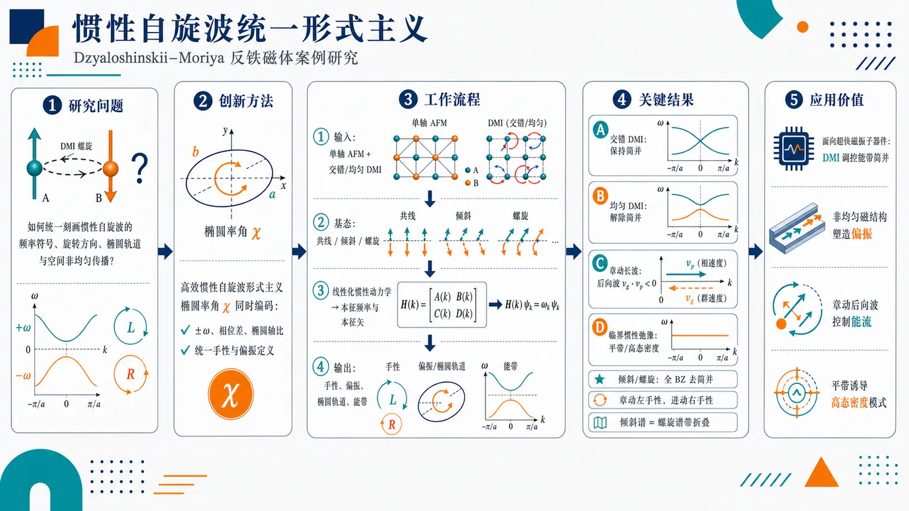
研究问题磁惯性在超快反铁磁动力学中会产生进动与高频章动自旋波，但这些模式在含 DMI、共线/倾斜/螺旋等磁构型中的手性、偏振、简并和传播规律缺乏统一可计算描述；核心问题是如何用一个通用框架同时刻画惯性自旋波的频率符号、旋转方向、椭圆轨道和空间非均匀传播。创新方法提出高效惯性自旋波形式主义，并引入“椭圆率角”作为关键可视化参数：一个角度同时编码频率正负、横向分量相位差和椭圆轴比，从而统一定义手性与偏振；该方法可同时处理进动模式和章动模式，并适用于含交错/均匀 DMI 的共线、倾斜、螺旋反铁磁构型。工作流程从单轴反铁磁体与交错/均匀 DMI 参数出发，选择均匀共线、倾斜或螺旋基态；在线性化惯性磁动力学方程后求解自旋波本征频率和本征矢；再用椭圆率角读取每个模式的手性、偏振和椭圆轨道；最后比较不同 DMI 类型、对称性破缺、惯性弛豫时间和带折叠对能带结构的影响。关键结果小交错 DMI 保持自旋波简并，小均匀 DMI 解除简并；倾斜和螺旋构型中的时空反演破缺会在整个 Brillouin 区完全去除简并；长波长章动自旋波表现为相速度与群速度相反的后向波；接近临界惯性弛豫时间时出现平带；倾斜和螺旋构型中章动模式始终左手性、进动模式始终右手性，且倾斜谱可由螺旋谱带折叠得到。应用价值为超快磁振子器件提供可设计的理论图谱：可利用 DMI 类型调控能带简并，用非均匀磁结构塑造强波矢依赖偏振，用章动后向波实现反常能流控制，并借助临界惯性弛豫时间诱导平带与高态密度模式，服务于超快信息传输、偏振选择激发和磁振子能带工程。第一部分：核心概览 (Overview)
磁惯性在超快磁动力学中产生章动自旋波等新型激发，但其手性、偏振与非均匀磁构型中的传播性质长期缺乏统一表述。该工作提出一种计算惯性自旋波的高效形式主义，并用椭圆率角统一刻画频率符号、相位差和椭圆轴比，从而给出手性与偏振的一般定义。以含交错/均匀 Dzyaloshinskii-Moriya 相互作用的单轴反铁磁体为案例，系统比较共线、倾斜与螺旋构型中的进动与章动模式，揭示 DMI、时空反演破缺、临界惯性弛豫时间和带折叠对能谱、简并、后向波和平带的控制作用，为超快磁振子器件提供理论基础。
---
第二部分：结构化快速回顾
《An efficient formalism for inertial spin waves: Dzyaloshinskii-Moriya antiferromagnets as case studies》（None，）
背景
磁惯性在超快动力学中变得重要，可支持不同于传统进动磁振子的惯性自旋波，尤其包含高频章动模式。既有研究虽已关注 inertial SWs，但对其内禀属性，特别是手性与偏振，仍缺乏系统、统一、可计算的形式主义；空间非均匀磁构型中的惯性自旋波也尚未充分探索。
方法
建立用于计算惯性自旋波的理论框架，并通过椭圆率角定义其手性和偏振。该角度作为统一参数，同时编码频率符号、相位差与椭圆轴比。随后将方法用于含交错 DMI与均匀 DMI的单轴反铁磁体，覆盖均匀共线、倾斜和螺旋磁构型。
结果
小的交错 DMI保持自旋波简并，而小的均匀 DMI解除简并。倾斜和螺旋构型中进一步的时空反演对称性破缺会在整个 Brillouin 区完全去除自旋波简并。长波长章动自旋波表现为后向波。接近临界惯性弛豫时间时，倾斜和螺旋构型中出现平带。倾斜和螺旋构型中，章动模式始终为左手性，进动模式始终为右手性。
讨论
倾斜构型的色散谱可由螺旋构型的色散谱通过带折叠得到，显示两类非均匀/多周期磁结构之间存在谱学映射关系。均匀构型中的偏振对波矢不敏感，而非均匀构型中的偏振强烈依赖波矢，说明空间调制会显著改变惯性磁振子的偏振纹理。
局限
可核验文本未提供完整推导、模型哈密顿量、参数表、数值算法、图像数据、边界条件、材料参数或实验验证。现有信息只支持对摘要层面的结论进行解析，无法确认具体章节结构、公式编号、图号、参数取值和数值精度。
结论
统一的惯性自旋波形式主义能够同时处理进动与章动模式，并以椭圆率角给出手性和偏振的普适判据。DMI 类型、磁构型、时空反演对称性和惯性弛豫时间共同决定反铁磁惯性自旋波的简并、色散、手性、偏振与平带行为。
---
第三部分：逐章节冷凝解析 (Section-by-Section Condensing)
Abstract
#### Magnetic inertia creates inertial spin waves in the ultrafast regime
磁惯性是该研究的物理起点，出现于超快磁动力学区间，并支持一种不同于常规磁振子的激发：惯性自旋波。摘要明确指出，*"Magnetic inertia, emerging in the ultrafast regime, supports inertial spin waves (SWs) as novel magnetic excitations."* 这里的关键信息是：惯性项不是低频传统 Landau-Lifshitz-Gilbert 动力学中的微小修正，而是在超快时间尺度上产生可观测的新激发分支，尤其涉及章动 spin waves。
#### A systematic definition of chirality and polarization has been missing
既有关于惯性自旋波的研究已经较多，但仍缺乏完整、系统的内禀性质表征框架，尤其是手性 chirality与偏振 polarization。摘要中的证据为：*"Despite considerable efforts devoted to inertial SWs, a systematic formalism for fully characterizing their intrinsic properties, especially chirality and polarization, is still lacking"*。这一缺口不是单纯的计算效率问题，而是概念定义层面的不足：如何在含正负频率、相位差、椭圆轨道和进动/章动分支的复杂体系中统一判定手性与偏振。
#### Spatially nonuniform inertial spin waves remain underexplored
研究对象不仅限于均匀磁结构，还强调空间非均匀磁构型中的惯性自旋波尚未充分研究。摘要写道：*"inertial SWs in spatially nonuniform magnetic configurations remain poorly explored."* 这意味着传统均匀共线磁体中的自旋波理论不能直接覆盖倾斜态、螺旋态等具有空间调制或多子晶格/多周期特征的体系。
#### The central formalism calculates inertial spin waves and defines chirality and polarization through ellipticity angle
核心方法是建立一个计算惯性自旋波的框架，并用椭圆率角 ellipticity angle给出手性与偏振的一般定义。摘要直接说明：*"we develop a framework for calculating inertial SWs and establish a general definition of their chirality and polarization via the ellipticity angle"*。该角度不是单一几何量，而是一个综合编码参数，*"a unified parameter encoding frequency sign, phase difference, and elliptical axis ratio."* 因此，频率正负、两个横向分量之间的相位差、以及椭圆进动轨道的长短轴比被压缩进同一判据，避免了不同分支、不同构型下手性定义不一致的问题。
#### Dzyaloshinskii-Moriya antiferromagnets serve as the main case studies
方法应用于含 Dzyaloshinskii-Moriya interactions, DMI 的单轴反铁磁体，且同时考虑两类 DMI：交错 DMI staggered DMI 与 均匀 DMI homogeneous DMI。摘要给出的体系范围为：*"Using this method, we systematically investigate precessional and nutational SWs in uniaxial antiferromagnets with staggered and homogeneous Dzyaloshinskii-Moriya interactions (DMIs)"*。这里同时区分了两类自旋波分支：precessional SWs 与 nutational SWs，前者对应传统进动分支，后者对应由磁惯性引入的高频章动分支。
#### The magnetic configurations include collinear, canted, and spiral states
研究覆盖三类磁构型：均匀共线、倾斜与螺旋。摘要中的表述是：*"covering uniform collinear, canted, and spiral magnetic configurations."* 这说明形式主义被设计为可处理从简单均匀态到空间非均匀态的连续谱系：共线态通常具有较高对称性；倾斜态体现弱铁磁或非共线分量；螺旋态则包含空间周期调制和 Brillouin 区折叠效应。
#### Small staggered DMI preserves degeneracy, whereas small homogeneous DMI lifts it
DMI 的类型决定自旋波简并性。摘要明确给出对比结论：*"small staggered DMI preserves spin-wave degeneracy, whereas small homogeneous DMI lifts it."* 这一区分具有重要物理含义：交错 DMI在小强度下不破坏某些保护简并的有效对称性，而均匀 DMI即使很小也会解除自旋波分支简并。这里的“small”没有给出数值阈值，因此不能从摘要判断具体临界 DMI 强度。
#### Space-time inversion symmetry breaking fully removes degeneracy across the entire Brillouin zone
在倾斜和螺旋结构中，进一步的时空反演对称性破缺会彻底消除整个 Brillouin 区中的自旋波简并。摘要原文为：*"Further space-time inversion symmetry breaking in canted and spiral structures fully removes spin-wave degeneracy across the entire Brillouin zone."* 关键信息包括两点：第一，简并解除不是只发生在特定高对称点或有限波矢范围；第二，其作用范围是entire Brillouin zone，即全布里渊区。
#### Long-wavelength nutational spin waves behave as backward waves
长波长的章动自旋波 nutational SWs具有后向波 backward waves特征。摘要写道：*"Long-wavelength nutational SWs behave as backward waves"*。后向波意味着相速度与群速度方向相反，等价地说在长波极限中频率随波矢的变化斜率可能呈现与波传播相位方向相反的特征。这一结论显示磁惯性不仅增加高频分支，还会改变能量流与相位传播之间的关系。
#### Flat bands emerge near a critical inertial relaxation time
当惯性弛豫时间 inertial relaxation time接近某个临界值时，倾斜和螺旋构型中会出现平带 flat bands。摘要的证据是：*"flat bands emerge in canted and spiral configurations near a critical inertial relaxation time."* 平带通常意味着群速度接近零、态密度增强、局域化趋势增强或相干输运被抑制。摘要未给出临界弛豫时间的具体数值，因此无法进一步判断其材料可达性或数量级。
#### Nutational modes are always left-handed and precessional modes are always right-handed in canted and spiral configurations
在倾斜与螺旋构型中，章动和进动模式表现出固定的手性分配：章动模式始终左手性，进动模式始终右手性。摘要直接给出：*"In canted and spiral configurations, nutational modes are always lefthanded whereas precessional modes are always righthanded"*。这表明手性不仅是局部波矢依赖性质，也可能被模式类型强烈锁定；磁惯性引入的章动分支与传统进动分支在旋转方向上具有系统性区分。
#### Canted spectra can be derived from spiral spectra through band folding
倾斜构型与螺旋构型之间存在能带结构映射：倾斜构型的色散谱可由螺旋构型通过带折叠 band folding导出。摘要表述为：*"the dispersion spectra of the canted configuration can be derived from those of the spiral configuration via band folding."* 这说明两类构型在谱学上并非完全独立；如果螺旋态具有更大的磁周期或等效缩小的 Brillouin 区，那么折叠后的能带可重构倾斜态谱结构。
#### Polarization is insensitive to wavenumber in uniform configurations but strongly dispersive in nonuniform ones
偏振 polarization对波矢的依赖强烈取决于磁构型是否均匀。摘要指出：*"Polarization is wavenumber insensitive for uniform configurations but becomes strongly dispersive for nonuniform ones."* 在均匀构型中，偏振随波数变化不明显；在非均匀构型中，偏振成为强烈的色散量。这意味着非均匀磁背景会使自旋波本征矢随动量空间显著扭曲，可能影响偏振选择性激发、探测和器件设计。
#### The work targets ultrafast magnonic device theory
研究的应用导向是超快磁振子器件。摘要最后指出：*"This work advances the fundamental understanding of magnetic inertial dynamics and provides theoretical insights for the development of ultrafast magnonic devices."* 理论贡献包括两个层面：基础层面上澄清磁惯性动力学中的手性、偏振、简并与能带特征；应用层面上为利用章动分支、后向波和平带设计超快信息处理元件提供概念工具。
---
第四部分：深度理解与语言支持 (Understanding & Nuance)
1. 术语解析
#### Magnetic inertia
Magnetic inertia 指磁矩动力学中类似“质量”或“惯性”的效应，使磁矩运动不再只是瞬时响应有效场的进动和阻尼，而可能出现更高阶时间导数项。传统 Landau-Lifshitz-Gilbert 方程通常是一阶时间动力学；引入惯性后，磁矩可以出现章动 nutation。语境中的关键词是 *"emerging in the ultrafast regime"*，说明该效应主要在皮秒、亚皮秒等超快时间尺度显现。
#### Inertial spin waves
Inertial spin waves 是包含磁惯性效应的自旋波。它们通常不仅包含传统的进动分支 precessional branch，还包含由惯性诱导的章动分支 nutational branch。与普通自旋波相比，它们的色散、群速度、偏振和手性可能出现额外结构，例如摘要中的 *"Long-wavelength nutational SWs behave as backward waves"*。
#### Ellipticity angle
Ellipticity angle 可理解为描述自旋波横向振动轨迹椭圆性的角度参数。该研究赋予它更强的功能：它统一编码 *"frequency sign, phase difference, and elliptical axis ratio"*。普通椭圆率只描述轨道形状，而这里的椭圆率角还承担判定手性和偏振的角色，避免正负频率和相位约定导致的歧义。
#### Chirality vs. polarization
Chirality 通常强调旋转方向或手性，即磁矩横向分量随时间旋转时是左手还是右手。Polarization 更广，既包含线偏振、圆偏振、椭圆偏振，也包含椭圆轴比和相位关系。在自旋波中，两者容易混淆：圆偏振可以天然对应清晰手性，但椭圆偏振和负频率模式会使“左/右手性”的判据变得不唯一。该研究通过椭圆率角把两者放入统一框架。
#### Backward waves
Backward waves 指相速度与群速度方向相反的波。若波矢 (k) 指向相位传播方向，而群速度 (v_g = partial ømega/partial k) 指示能量或波包传播方向，那么后向波意味着二者相反。摘要中 *"Long-wavelength nutational SWs behave as backward waves"* 暗示章动分支在小 (k) 区域具有反常色散斜率或负能流特征。
---
2. 疑难查证
#### 为什么惯性会产生章动模式？
传统磁矩动力学类似陀螺的进动：磁矩围绕有效磁场旋转。若加入惯性项，磁矩的运动不再只由当前位置和瞬时力矩决定，还取决于“加速度”或更高阶时间响应。这样一个动力学系统的自由度增加，频谱中自然多出一个高频本征分支，即章动模式。可以类比机械振子：一阶动力学只有单一松弛/旋转响应；二阶动力学会产生额外振荡本征频率。
#### 为什么频率符号会影响手性定义？
在自旋波理论中，一个模式常写成 (eⁱ⁽kx⁻ømega t⁾) 或 (e⁻ⁱømega t)。同一物理旋转若用正频率或负频率表示，表观旋转方向可能被数学约定翻转。因此，仅看两个横向分量的相位差可能不足以定义手性，必须同时考虑频率符号。这正是摘要中强调椭圆率角同时编码 *"frequency sign, phase difference, and elliptical axis ratio"* 的原因。
#### 为什么均匀 DMI 和交错 DMI 对简并的影响不同？
DMI 本质上是反对称交换相互作用，通常写作 (Dᵢⱼḑot(Sᵢ×Sⱼ₎)。若 DMI 在晶格或子晶格之间呈交错 staggered分布，某些组合对称性可能仍然存在，从而保护自旋波简并；若 DMI 是均匀 homogeneous的，它可能直接破坏保护简并的对称性，使不同手性或不同传播方向的模式能量分裂。摘要中的判据是：*"small staggered DMI preserves spin-wave degeneracy, whereas small homogeneous DMI lifts it."*
#### 为什么非均匀构型会让偏振强烈依赖波矢？
在均匀磁体中，不同波矢的自旋波通常在相同背景上振动，本征矢结构变化较慢，偏振可以近似保持。非均匀构型如螺旋态中，局域磁矩方向随空间变化，自旋波传播时不断“看到”旋转的局域坐标系，导致不同波矢的模式混合、折叠和杂化。结果是本征矢随 (k) 强烈变化，对应摘要中的 *"Polarization is wavenumber insensitive for uniform configurations but becomes strongly dispersive for nonuniform ones."*
#### 带折叠为何能把螺旋构型谱映射到倾斜构型谱？
带折叠通常发生在实空间周期变大、倒空间 Brillouin 区变小时。螺旋磁结构具有空间周期性调制，可把原本较大的 Brillouin 区折叠到较小磁 Brillouin 区中。若倾斜构型可视为某种特殊周期、特殊角度或等效折叠极限，那么其色散谱可以由螺旋谱折叠得到。摘要明确给出：*"the dispersion spectra of the canted configuration can be derived from those of the spiral configuration via band folding."*
---
第五部分：创新评估与关联 (Synthesis & Novelty)
1. 创新性判断
#### 统一解决惯性自旋波手性与偏振定义问题
过去几年关于磁惯性和章动磁振子的研究多集中于惯性项导致的高频模式、共振响应、材料可观测性或简单均匀态色散。该工作的新颖性在于把手性和偏振提升为可统一计算的内禀量，并通过椭圆率角同时纳入频率符号、相位差与椭圆轴比。这一点解决了惯性体系中特别棘手的定义问题：正负频率、进动/章动分支和椭圆偏振会使传统手性判据失效或不唯一。
#### 从均匀构型扩展到非均匀反铁磁 DMI 构型
非均匀磁结构中的惯性自旋波此前探索不足。该研究覆盖均匀共线、倾斜和螺旋构型，并比较交错 DMI与均匀 DMI。因此，创新点不只是“多算几个模型”，而是把形式主义推广到存在空间调制、对称性破缺和带折叠的复杂反铁磁体系。
#### 揭示 DMI 类型对简并的相反作用
小的交错 DMI保持简并，而小的均匀 DMI解除简并。这一结论给出了 DMI 工程调控惯性磁振子能谱的清晰原则。它解决的问题是：不同 DMI 空间结构如何影响惯性自旋波分支简并，而不是简单地讨论 DMI 是否存在。
#### 发现章动长波模式的后向波性质
长波长章动自旋波表现为后向波，为惯性磁振子输运提供了非传统传播机制。该结果可能区别于常规进动磁振子的直观传播图像，暗示章动分支在超快 magnonic 器件中可实现反常能流、相位控制或负折射类效应。
#### 连接临界惯性弛豫时间与平带形成
接近临界惯性弛豫时间时，倾斜与螺旋构型中出现平带。平带在磁振子学中通常意味着强态密度、低群速度和潜在局域化。该结论把惯性参数本身变成能带工程变量，提出通过调节或选择材料的惯性弛豫时间来控制超快自旋波谱结构的可能性。
#### 建立倾斜构型与螺旋构型之间的带折叠关系
倾斜构型色散可由螺旋构型通过带折叠导出。这种谱学关系为理解不同非共线反铁磁结构之间的联系提供了紧凑框架，也降低了复杂构型计算的概念成本：先理解螺旋态的周期性谱，再通过折叠得到倾斜态谱。
#### 揭示偏振从波矢不敏感到强色散的构型依赖转变
均匀构型中偏振对波数不敏感，非均匀构型中偏振强烈色散。这一发现具有器件意义，因为偏振选择性激发和探测依赖于模式本征矢；非均匀结构可作为调控偏振纹理的手段，而不仅仅改变频率色散。
-
15
📊 含图深析
📄 摘要：比较 kagome 反铁磁 Heisenberg 模型中 Abrikosov 费米子和 Schwinger 玻色子 parton 方法在超越平均场后的动力学自旋关联。聚焦量子自旋液体分数化激发、是否存在自旋能隙及分数量子粒子耦合的规范结构等争议。
💡 亮点：该工作并列检验费米子和玻色子 parton 对 kagome 动力学结构因子的描述。结果有助于区分自旋能隙和规范结构假设对实验谱的影响。
📖 展开分析 + 配图
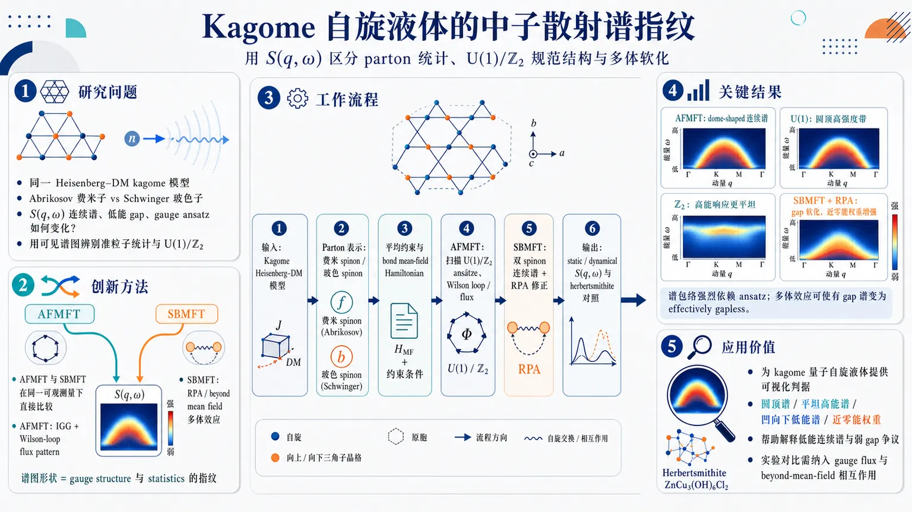
研究问题同一 kagome 反铁磁 Heisenberg–Dzyaloshinskii-Moriya 模型中，Abrikosov 费米子与 Schwinger 玻色子两种 parton 表示会如何改变动态自旋结构因子 S(q,ω) 的连续谱形状、低能 gap 与规范结构判读？核心是用中子散射可见的谱图来辨别低能准粒子统计性质和 U(1)/ℤ₂ gauge ansatz。创新方法把长期分开使用的 AFMFT 与 SBMFT 放到同一 kagome 自旋液体问题、同一可观测量 S(q,ω) 下直接比较；AFMFT 中用 IGG 与 Wilson-loop flux pattern 区分 U(1)/ℤ₂ ansätze，SBMFT 中进一步加入 RPA / beyond-mean-field 多体效应。Aha 点是：谱图形状本身可作为 gauge structure 与 parton statistics 的“指纹”，而 SBMFT 加入多体效应后可从有 gap 谱软化为近无 gap 谱。工作流程输入 kagome lattice 上含 DM 相互作用的反铁磁 Heisenberg 模型；分别将自旋算符改写为 Abrikosov fermionic spinons 与 Schwinger bosonic spinons；施加平均约束并构造 bond mean-field Hamiltonian；AFMFT 扫描最近邻 U(1)/ℤ₂ ansätze、计算 Wilson loop 与 gauge flux；SBMFT 先算平均场双 spinon 连续谱，再用 RPA 多体修正重分布低能谱权重；最终输出 static / dynamical spin structure factor，与 herbertsmithite 中子散射连续谱对照。关键结果AFMFT 的 S(q,ω) 出现醒目的 dome-shaped 两 spinon 连续谱，且谱包络强烈依赖 gauge ansatz：许多 U(1) 态呈圆顶状高强度带，ℤ₂ 态高能响应更平坦。SBMFT 平均场低能区呈 concave-down 结构并带明显 gap；加入多体效应后 gap 大幅减小，近零能谱权重显著增强，可表现为 effectively gapless，更接近 herbertsmithite 实验中的宽连续谱和弱 gap / 近无 gap 行为。应用价值为 kagome 量子自旋液体的中子散射谱提供可视化判据：圆顶谱、平坦高能谱、凹向下低能谱和近零能谱权重可分别指示不同 parton 统计、U(1)/ℤ₂ gauge structure 与多体软化机制。该研究帮助解释 herbertsmithite 的低能连续谱争议，并提示仅靠平均场可能误判 spin gap，必须把 gauge flux 与 beyond-mean-field 相互作用纳入实验对比。第一部分：核心概览 (Overview)
该研究系统比较Abrikosov fermion mean-field theory (AFMFT) 与 Schwinger boson mean-field theory (SBMFT) 在 kagome 反铁磁体自旋动力学中的预测差异，聚焦 dynamical spin structure factor、gauge structure 与低能谱权重。核心贡献在于把两类长期分离发展的 parton 框架置于同一 kagome Heisenberg–Dzyaloshinskii-Moriya 模型中比较，并显示：AFMFT 的谱形强烈依赖 U(1)/ℤ₂ gauge ansatz，SBMFT 在加入超越平均场的多体效应后显著降低低能 gap、增强近零能谱权重，更接近 herbertsmithite 的实验观测。
---
第二部分：结构化快速回顾
《Dynamical spin correlations in kagome antiferromagnets: comparison of Abrikosov fermion and Schwinger boson approaches beyond mean field》（None，）
背景
量子自旋液体因强关联与几何阻挫产生分数化自旋激发，kagome 反铁磁 Heisenberg 模型是核心候选体系。核心争议集中在 spin gap 是否存在、低能准粒子的统计性质以及耦合的 gauge structure。实验上，herbertsmithite 的中子散射显示宽连续谱，但 gapless 与小 gap 解释长期并存。
方法
采用同一 kagome Heisenberg–Dzyaloshinskii-Moriya 模型，分别使用 Abrikosov fermion 与 Schwinger boson parton 表示，构造平均场 Hamiltonian，计算 static 与 dynamical spin structure factor。AFMFT 中比较仅含最近邻 mean-field channel 的 U(1) 与 ℤ₂ ansätze；SBMFT 中进一步通过 RPA / beyond mean-field many-body effects 修正自旋动力学。
结果
AFMFT 的 dynamical spin structure factor 出现典型 dome-shaped features，且 continuum 形状显著依赖 gauge ansatz；ℤ₂ fermionic ansatz 的高能响应更平坦。SBMFT 平均场在低能区给出 concave-down structure 且存在 gap；引入多体效应后，低能 gap 大幅减小，近零能谱权重增强，可达到 effectively gapless。
讨论
AFMFT 与 SBMFT 的谱形差异不是简单数值偏差，而是反映低能 quasiparticle 的统计性质、gauge structure 与 parton 表示选择。AFMFT 更敏感于 Wilson-loop flux pattern 与 IGG；SBMFT 中准粒子间相互作用对低能谱重分布至关重要。
局限
局域约束仅以平均方式实施，AFMFT 与 SBMFT 均存在 enlarged Hilbert space 的近似问题。SBMFT 的 spin sum rule 在平均场层面不精确，积分谱权重可能比精确值 S(S+1) 大 3/2。Abrikosov fermion 部分限定 S = 1/2，且 ansätze 主要限于最近邻 mean-field channels。
结论
kagome 反铁磁体的 spin dynamics 对 parton 表示、gauge structure 与 beyond-mean-field 多体效应高度敏感。AFMFT 的谱形可区分 U(1) 与 ℤ₂ ansätze；SBMFT 结合多体效应后更能捕捉实验中低能连续谱与弱 gap / 近 gapless 行为。
---
第三部分：逐章节冷凝解析 (Section-by-Section Condensing)
> 可解析的原始章节内容覆盖：Abstract, I Introduction, II Method, II.1 Abrikosov fermion mean-field theory, II.2 Schwinger boson mean-field theory 前半部分。后续章节标题虽在 Introduction 中列出，但具体正文未包含在给定材料内，因此不能可靠提取逐节证据。
---
Abstract
Fractionalized excitations define the target problem
量子自旋液体的关键物理特征是强多体效应导致的分数化自旋激发。摘要开宗明义指出研究对象不是传统 magnon，而是 spin liquid 中的 fractional quasiparticles：*"Quantum spin liquids exhibit fractionalized spin excitations as a consequence of strong quantum many-body effects and have therefore attracted considerable attention."* 这一定义把后续 dynamical spin structure factor 的连续谱解释建立在 multi-parton excitation 基础上。
Kagome antiferromagnet remains unsettled because spin gap and gauge structure are controversial
kagome antiferromagnetic Heisenberg model 被定位为实现 quantum spin liquid 的重要候选，但低能激发谱仍无定论，尤其是 spin gap 与 gauge structure。摘要明确给出争议核心：*"The kagome antiferromagnetic Heisenberg model is a promising candidate for realizing a quantum spin-liquid ground state; however, the nature of its excitation spectrum remains controversial, particularly for the presence of a spin gap and the gauge structure coupled to fractional quasiparticles."*
Two parton representations are compared on the same physical observable
研究核心是把 Abrikosov fermion method 与 Schwinger boson method 放在同一 kagome antiferromagnet 问题中比较，尤其比较 spin dynamics 与 gauge structure。摘要强调此前两者通常分开发展：*"Thus far, these approaches have been pursued independently, and it has remained unclear how the results obtained from these two different frameworks compare with each other, particularly with respect to the spin dynamics and gauge structure of the kagome antiferromagnet."*
The microscopic model includes Dzyaloshinskii-Moriya interaction relevant to herbertsmithite
研究对象为带 Dzyaloshinskii-Moriya interaction 的 kagome lattice 反铁磁 Heisenberg 模型，并与 herbertsmithite 相关：*"we investigate the dynamical spin structure factor of the antiferromagnetic Heisenberg model with a Dzyaloshinskii-Moriya interaction on a kagome lattice, which is relevant to the material herbertsmithite."* 这使理论结果直接服务于中子散射实验解释。
AFMFT produces dome-shaped continua sensitive to gauge structure
Abrikosov fermion mean-field theory 的 dynamical spin structure factor 具有 dome-shaped features，且 continuum structure 对 spin-liquid ansatz 的 gauge structure 高度敏感：*"the dynamical spin structure factor obtained from the Abrikosov fermion mean-field theory exhibits dome-shaped features, and that its continuum structure significantly depends on the gauge structure of the spin-liquid ansatz."*
SBMFT produces a distinct concave-down low-energy structure
Schwinger boson mean-field theory 的低能 dynamical spin structure factor 呈 concave-down structure，不同于 AFMFT：*"the Schwinger boson mean-field theory yields a concave-down structure in the low-energy region of the dynamical spin structure factor, which is distinct from that obtained using the Abrikosov fermion approach."* 这表明 bosonic spinon 与 fermionic spinon 的两粒子连续谱几何结构不同。
Beyond-mean-field many-body effects reduce the gap and enhance low-energy spectral weight
引入超越平均场的多体效应后，SBMFT 的低能 gap 明显减小，低能谱权重增强，并与实验观测一致：*"the low-energy gap is substantially reduced, and the low-energy spectral weight is enhanced, by incorporating many-body effects beyond the mean-field approximation, which is consistent with experimental observations."*
Schwinger boson many-body effects are essential for low-energy spin dynamics
核心结论是：仅靠 SBMFT 平均场不够，准粒子间多体效应对 kagome 反铁磁体低能 spin dynamics 至关重要：*"Our results suggest the importance of many-body effects in the Schwinger boson theory for capturing the low-energy spin dynamics of kagome antiferromagnets."*
---
I Introduction
Elementary excitations reveal many-body physics more sharply than static observables
强关联体系的关键多体效应常在激发结构与动力学中比静态量更清楚地显现。引言以一维 spin-charge separation 与 fractional quantum Hall effect 为例说明分数化激发的重要性：*"the essential many-body effects are often revealed most clearly not in static quantities but in the structure and dynamics of elementary excitations."* 这为使用 dynamical spin structure factor 作为主观测量奠定逻辑基础。
Quantum spin liquids arise in Mott insulators with frozen charge degrees of freedom
量子自旋液体发生在 Mott insulator 中，电荷自由度因强电子相互作用被冻结，剩余自旋自由度因强量子涨落和几何阻挫在零温仍避免长程磁有序。原文表述为：*"They arise in Mott insulators, where the charge degrees of freedom are frozen by strong electron-electron interactions and the remaining spin degrees of freedom evade conventional long-range magnetic order even at zero temperature because of strong quantum fluctuations and geometrical frustration."*
Anderson’s RVB proposal initiated the modern spin-liquid search
Anderson resonating-valence-bond ground state 是 spin liquid 概念源头之一，最初针对 triangular-lattice antiferromagnetic Heisenberg model。尽管最近邻 triangular Heisenberg antiferromagnet 后来确认存在 120° magnetic order，该设想启动了 microscopic spin-liquid model 搜索：*"Anderson’s proposal initiated the modern search for microscopic models realizing quantum spin liquids."*
Kagome Heisenberg antiferromagnet is a leading spin-liquid candidate
kagome lattice antiferromagnetic Heisenberg model 长期被视为最重要候选体系之一：*"the antiferromagnetic Heisenberg model on the kagome lattice has long been regarded as one of the leading candidates and has therefore been studied extensively."* kagome 几何导致强阻挫，使传统磁有序更易被量子涨落破坏。
Computing dynamics in disordered frustrated magnets is technically difficult
量子自旋液体等无序相的动力学计算方法有限。Quantum Monte Carlo 虽强大，但 frustrated magnets 中受 negative sign problem 严重限制：*"quantum Monte Carlo methods ... are among the most powerful numerical techniques for computing dynamics in quantum magnets, but their application to frustrated magnets is severely hampered by the negative sign problem."*
Parton construction provides both computational access and a fractionalized physical picture
Parton construction 将 spin operator 映射为 bosonic 或 fermionic partons，在 mean-field theory 下较直接计算动力学，同时也表达 spin fractionalization。原文强调其双重角色：*"the parton construction has become a powerful tool for the theoretical study of quantum spin liquids"*，并且 *"it in fact captures the fractionalization of spin degrees of freedom."*
Conventional magnets use magnons; spin liquids require spin-1/2 neutral partons
传统磁体的 elementary excitations 是 bosonic magnons；自旋液体中，以有序态涨落描述不再合适，低能激发更自然地看作 charge-neutral S = 1/2 partons：*"In conventional magnets, the elementary excitations are bosonic magnons"*；而在 disordered phases 中，*"the elementary excitations are believed to be charge-neutral S=1/2 degrees of freedom carried by the partons introduced above."*
Bosonic and fermionic parton representations are formally equivalent only with exact local constraints
同一 spin operator 可用 Schwinger bosons 或 Abrikosov fermions 表示，但这发生在 enlarged Hilbert space 中。若 local constraint 严格实施，两者形式等价；mean-field decoupling 后通常给出不同可观测预测：*"Although these representations are formally equivalent when the local constraint is enforced exactly, they generally lead to distinct approximate theories after mean-field decoupling and can therefore yield substantially different predictions for observables such as the dynamical spin structure factor."*
Central question: how strongly does parton statistics affect spin dynamics?
核心科学问题是 bosonic 与 fermionic parton choice 是否显著改变 S(q,ω)，以及这些差异能否反推低能 quasiparticles 的性质。原文直接提出：*"how strongly does the choice of parton representation—bosonic or fermionic—affect the predicted spin dynamics, and can such differences be used to infer the nature of the low-energy quasiparticles in a given quantum spin liquid?"*
Broad continua in neutron scattering motivate multi-parton interpretations
非弹性中子散射中常见的宽 dynamical spin structure factor continuum 不能由单粒子 magnon 激发解释，通常被视为 multi-parton excitation 信号：*"Such a continuum cannot be explained in terms of single-particle excitations such as magnons and is instead commonly interpreted as a signature of multi-parton excitations."*
Kagome spin gap remains unresolved theoretically
S = 1/2 kagome Heisenberg antiferromagnet 的低能激发是否有 gap 是长期争议问题。理论上主要竞争态包括 gapped ℤ₂ spin liquid 与 gapless U(1) Dirac spin liquid：*"whether the ground state is gapped or gapless has been debated for many years without a definitive conclusion"*；该问题 *"is often framed in terms of competing candidate spin-liquid states, most notably a gapped ℤ₂ spin liquid and a gapless U(1) Dirac spin liquid."*
Chiral spin liquid is another kagome candidate
除 ℤ₂ 与 U(1) Dirac spin liquid 外，chiral spin liquid (CSL) 也被讨论，特点是 topological order 且自发破缺 time-reversal symmetry。原文定义为：*"a chiral spin liquid (CSL), namely a topologically ordered spin liquid that spontaneously breaks time-reversal symmetry."* 最近大规模 DMRG 与解析分析提出最近邻 kagome Heisenberg antiferromagnet 可能处于 gapped Kalmeyer-Laughlin-type CSL phase：*"may lie in a gapped Kalmeyer-Laughlin-type CSL phase."*
Schwinger boson and fermionic mean-field literatures emphasize different kagome scenarios
既有 SBMFT 常得到 gapped ℤ₂ spin liquids；fermionic parton 研究则讨论 gapless U(1) Dirac spin liquid 与 candidate ℤ₂ spin-liquid states。原文提醒这不是严格二分：*"the two parton descriptions should not be regarded as forming a strict dichotomy, but rather as emphasizing different aspects of the problem."*
Numerics report both small gaps and gapless spectra
数值研究没有定论。Exact diagonalization 与部分 DMRG 报告小 spin gap，数量级为 J/20–J/10：*"exact-diagonalization and density-matrix renormalization-group (DMRG) studies have reported a small spin gap of order J/20–J/10."* 其他 DMRG、tensor-network 与 variational Monte Carlo 支持 gapless excitations：*"Other DMRG works ... instead argue for a gapless spectrum, while tensor-network and variational Monte Carlo studies likewise support gapless excitations."*
Machine-learning-assisted VMC suggests gapless spinon spectrum but finite-size ambiguity remains
近期 machine-learning-assisted VMC 指向 spinon pair-density-wave ground state，并支持 gapless spinon spectrum，但有限尺寸限制使 gapless 与极小 finite gap 难以区分：*"strongly suggest a spinon pair-density-wave ground state and provide evidence consistent with a gapless spinon spectrum; however, given the limited system sizes accessible, it remains difficult to distinguish a genuinely gapless state from one with an extremely small but finite gap."*
Experiments on herbertsmithite also remain inconclusive
在 herbertsmithite 中，实验解释涵盖 gapless / nearly gapless 与 small finite gap，且 disorder 与 inhomogeneity 可能影响低能谱：*"interpretations range from gapless or nearly gapless behavior to a small but finite gap"*；另有研究指出 *"possible sensitivity to disorder and inhomogeneity."*
Low-energy excitations extend to very small energies regardless of exact gap status
综合数值与实验，低能自旋激发延伸至非常小能量，但 true gapless 与 very weakly gapped 仍未定：*"both numerical and experimental studies indicate that the low-energy spin excitations extend down to very small energies, while leaving unresolved whether the kagome spin liquid is truly gapless or only very weakly gapped."*
AFMFT comparison includes U(1) and ℤ₂ nearest-neighbor ansätze
AFMFT 部分考察仅由最近邻 mean-field channels 构成的 ansätze，包括既有 U(1) ansätze 与 ℤ₂ ansatz：*"Within AFMFT, we examine spin-liquid ansätze constructed solely from nearest-neighbor mean-field channels, including the previously considered U(1) ansätze as well as a ℤ₂ ansatz."*
U(1) fermionic states show dome-shaped spectra; ℤ₂ fermionic state shows flatter high-energy response
AFMFT 的一个主要判据是谱形：多数 U(1) spin-liquid states 具有 dome-shaped structures，而 ℤ₂ state 的高能响应较平坦：*"many U(1) spin-liquid states exhibit characteristic dome-shaped structures in the dynamical spin structure factor, whereas the ℤ₂ spin-liquid state shows a qualitatively different high-energy response characterized by a relatively flat spectrum rather than a dome-like one."*
SBMFT beyond mean field can render the spectrum effectively gapless
SBMFT 平均场有 gapped spin excitations；加入 beyond-mean-field many-body effects 后，spin gap 大幅降低，甚至 effectively gapless：*"the inclusion of many-body effects beyond the mean-field approximation substantially reduces the spin gap and can even render the spectrum effectively gapless."*
SBMFT many-body spectra match key experimental features
含多体效应的 SBMFT 低能谱呈 concave down，在 zero energy 附近有显著谱权重，并与实验关键特征相符：*"The resulting low-energy spectral structure is concave down and exhibits significant spectral weight near zero energy"*；并且 *"captures key features observed experimentally."*
---
II Method
Two complementary parton mean-field frameworks are established before model-specific calculation
方法部分建立两套 parton 框架：AFMFT 与 SBMFT，并说明如何求解 mean-field Hamiltonians 与计算 spin structure factors。章节安排明确写出：*"The Abrikosov fermion mean-field theory (AFMFT) and Schwinger boson mean-field theory (SBMFT) are described in Secs. II.1 and II.2, respectively."*
Observables are static and dynamical spin structure factors
方法不只定义 Hamiltonian，也定义可观测量。Introduction 中说明：*"We explain how to solve the mean-field Hamiltonians obtained in AFMFT and SBMFT, and how to compute the spin structure factors as observables, in Secs. II.3 and II.4."* 给定正文未包含 II.3 与 II.4 的具体公式，因此无法逐项核验 structure factor 的计算表达式。
RPA is used as the beyond-mean-field framework
多体效应通过 RPA framework 纳入，技术细节位于 Appendix D。Introduction 给出定位：*"Section II.5 briefly introduces the RPA framework used in this paper; further technical details are provided in Appendix D."* 给定材料没有 II.5 与 Appendix D 正文，无法提取 RPA kernel、susceptibility matrix 或 interaction vertex 的具体形式。
---
II.1 Abrikosov fermion mean-field theory
Abrikosov fermion representation is restricted to S = 1/2 in calculations
AFMFT 计算设定 S = 1/2。虽然 Abrikosov formalism 原则上可处理任意 spin quantum number，但表达复杂：*"we assume S=1/2 in the calculations based on the Abrikosov fermion method."* 同时，*"Although in principle it is possible within the Abrikosov fermion formalism to describe an arbitrary spin quantum number S, the resulting expressions often become rather complicated."*
Spin operators are rewritten using fermionic spinons
自旋算符以两分量 fermionic operator fᵢ = (fᵢ↑, fᵢ↓)ᵀ 表示：
[
Sᵢ^γ=frac12sumμ,νfᵢμdaggerσμνγfᵢν.
]
原文为：*"the spin operator (bmSᵢ) at lattice site (i) is expressed in terms of a pair of fermionic operators (bmfᵢ=(fᵢₚ̆ₐᵣᵣₒw,fᵢdₒwₙₐᵣᵣₒw)T)"*。fermions 满足反对易关系：*"the fermionic operators introduced above satisfy the anticommutation relation (fᵢμ,fⱼνdagger=δᵢⱼδμν)."*
The enlarged Hilbert space requires a single-occupancy constraint
Abrikosov 表示扩大 Hilbert space，因此必须施加 local constraint：
[
nᵢ₌sum_μ fᵢμdaggerfᵢμ=1.
]
原文强调：*"Since this representation enlarges the Hilbert space, it is necessary to impose the local constraint (nᵢ₌...=1)."* 平均场中该 constraint 放松为全局平均：
[
łangle nångle=frac1Nsumᵢłangle nᵢångle=1.
]
对应引文：*"we introduce a uniform Lagrange multiplier and relax the constraint to (łangle nångle=...=1)."*
Fermionic constraints also forbid onsite pair occupancy in the physical subspace
local constraint 与 fermion 性质共同导致：
[
fᵢₚ̆ₐᵣᵣₒwfᵢdₒwₙₐᵣᵣₒw=fᵢₚ̆ₐᵣᵣₒwdaggerfᵢdₒwₙₐᵣᵣₒwdagger=0.
]
原文为：*"The local constraint immediately implies, taking into account the fermionic nature of the operators, that (fᵢₚ̆ₐᵣᵣₒwfᵢdₒwₙₐᵣᵣₒw=fᵢₚ̆ₐᵣᵣₒwdaggerfᵢdₒwₙₐᵣᵣₒwdagger=0)."* 平均场中这也仅平均实施。
Spin-spin interactions become quartic fermion interactions
自旋相互作用映射为四费米子项：
[
Sᵢ^γ Sⱼγ'=frac14sumμ,ν,ₕ̊ₒ,łₐₘbdₐσμνγσₕ̊ₒłₐₘbdₐγ'fᵢμdaggerfᵢνfⱼₕ̊ₒdaggerfⱼłₐₘbdₐ.
]
原文说明：*"which takes the form of a quartic interaction term in the fermionic operators."* 由于精确处理困难，需要 mean-field decoupling：*"we now apply mean-field theory to this interaction."*
Onsite magnetic-order decouplings are set to zero for spin-liquid phases
为了描述 spin-liquid phases，排除 onsite magnetic order channels，如 (łangle fᵢμdaggerfᵢνångle)。原文写道：*"Because we are interested in spin-liquid phases, we assume that onsite decouplings associated with magnetic order ... vanish."* 这意味着 decoupling 聚焦于 bond hopping / pairing channels。
Four Abrikosov bond operators encode singlet and triplet channels
AFMFT 引入四类 bond operators：
- χᵢⱼ：spin-independent hopping；
- ηᵢⱼ：singlet pairing；
- Eᵢⱼᵞ：spin-dependent hopping；
- Dᵢⱼᵞ：triplet-like pairing。
原文定义：
*"We introduce the following bond operators: (ḩiᵢⱼ)"*，
*" (ηᵢⱼ)"*，
*" (Eᵢⱼγ)"*，
*" (Dᵢⱼγ)"*。
其中 (ḩiᵢⱼ) 与 (ηᵢⱼ) 是 SU(2)-invariant operators：*"Here, (ḩiᵢⱼ) and (ηᵢⱼ) are SU(2)-invariant operators."*
Heisenberg interaction only needs SU(2)-invariant χ and η channels
对显式保持 SU(2) 的 Heisenberg interaction，mean-field ansatz 可只保留 (łangleḩiᵢⱼångle) 与 (łangleηᵢⱼångle)。原文为：*"Since the Heisenberg interaction manifestly preserves SU(2) symmetry, we may adopt a mean-field ansatz in which only the mean-field channels (łangleḩiᵢⱼångle) and (łangleηᵢⱼångle) are taken to be finite."* 相应 decoupling 中系数为 (-3/2)：
[
bm Sᵢḑotbm Sⱼ approx -frac32(...)+const.
]
Dzyaloshinskii-Moriya interaction requires SU(2)-breaking E and D channels
DM interaction 形式为：
[
bm dᵢⱼḑot(bm Sᵢ×bm Sⱼ₎.
]
当 DM vector 沿 z 方向，(bm dᵢⱼ=(0,0,dᵢⱼ^z)^T)，相互作用为：
[
dᵢⱼ^z(Sᵢ^xSⱼ^y-Sᵢ^ySⱼ^x).
]
原文说明：*"Once the DM interaction is included, the SU(2) symmetry of the Hamiltonian is broken, and it becomes necessary to incorporate the SU(2)-breaking bond operators (Eᵢⱼγ) and (Dᵢⱼγ)."*
The DM mean-field decoupling couples χ with Eᶻ and η with Dᶻ
z-directed DM interaction 的 mean-field decoupling 出现 (ḩi)-(E^z) 与 (η)-(D^z) 混合：
[
approx i dᵢⱼ^z(łangle Eᵢⱼzdaggerångleḩiᵢⱼ+łangleḩiᵢⱼångle Eᵢⱼzdagger-...-łangle Dᵢⱼzdaggerångleηᵢⱼ-...)+const.
]
原文给出关键判断：*"the mean-field channels (Eᵢⱼz) and (Dᵢⱼz) associated with the SU(2)-breaking bond operators can in general acquire finite values."*
The ψ-matrix notation exposes local SU(2) gauge redundancy
引入
[
ψᵢ₌
beginpmatrix
fᵢₚ̆ₐᵣᵣₒw&fᵢdₒwₙₐᵣᵣₒwdagger
fᵢdₒwₙₐᵣᵣₒw&-fᵢₚ̆ₐᵣᵣₒwdagger
endpmatrix,
]
并可写出
[
Sᵢ^γ=frac14Tr(ψᵢ^daggerσ^γψᵢ₎.
]
原文指出该记号目的：*"we can formulate the redundancy inherent in the Abrikosov fermion representation in a more transparent way."*
Local SU(2) gauge transformation leaves physical spin invariant
局域 gauge transformation 为：
[
ψᵢᵢ̊ghtarrowψᵢ Wᵢ.
]
在该变换下 spin operators 不变。原文解释：*"Under this transformation, the spin operators remain invariant."* 因而 (Wᵢ) 不是 physical spin rotation，而是 parton 表示冗余：*"not a physical spin rotation but a redundancy of the Abrikosov fermion representation."*
The physical Hilbert space is recovered by imposing Λᵢ = 0
定义
[
Łambdaᵢ^γ=frac14Tr(ψᵢτ^γψᵢ^dagger),
]
其中 (τ^γ) 作用于 internal SU(2) particle-hole space。物理 Hilbert space 要求：
[
bmŁambdaᵢ₌bm0.
]
原文为：*"the SU(2) redundancy associated with (Wᵢ) must be projected out in order to recover the physical Hilbert space. This is achieved by imposing the local constraint (bmŁambdaᵢ₌bm0)."* 展开后再现 Eqs. (3) 与 (5)：*"this constraint reproduces the local constraints Eqs. (3) and (5)."*
Global Lagrange multipliers impose the gauge constraints only on average
由于 local constraints 难以严格实施，使用 global Lagrange multipliers (a^γ)，约束为：
[
frac1NsumᵢłangleTr(ψᵢτ^γψᵢ^dagger)ångle=0.
]
原文为：*"We therefore introduce global Lagrange multipliers (a^γ) and impose the constraints on average."*
Mean-field matrices u⁰ and uᶻ compactly encode bond channels
定义 mean-field matrices：
[
uⱼᵢ⁰=frac12łangleψⱼ^daggerψᵢångle
=
beginpmatrix
łangleḩiᵢⱼdaggerångle & łangleηᵢⱼdaggerångle
łangleηᵢⱼångle & -łangleḩiᵢⱼångle
endpmatrix,
]
[
uⱼᵢz=frac12łangleψⱼ^daggerσ^zψᵢångle
=
beginpmatrix
łangle Eᵢⱼzdaggerångle & -łangle Dᵢⱼzdaggerångle
łangle Dᵢⱼzångle & łangle Eᵢⱼzångle
endpmatrix.
]
原文指出：*"we introduce two matrices (uᵢⱼ⁰) and (uᵢⱼz) composed of mean fields."*
Heisenberg and DM mean-field Hamiltonians take trace forms
Heisenberg decoupling 写为：
[
bm Sᵢḑotbm Sⱼ
approx
-frac38Tr(uⱼᵢ⁰ψᵢ^daggerψⱼ₊H.c.)
+frac18Tr(uⱼᵢzψᵢ^daggerσ^zψⱼ₊H.c.)
+const.
]
DM decoupling 写为：
[
approxfracdᵢⱼz4Tr(iuⱼᵢzψᵢ^daggerψⱼ₋ᵢᵤⱼᵢ⁰ψᵢ^daggerσ^zψⱼ₊H.c.)+const.
]
原文概括其用途：*"This representation is useful for understanding how the mean-field parameters (uⱼᵢ⁰) and (uⱼᵢz) transform under local gauge transformations."*
Invariant gauge group classifies AFMFT spin-liquid phases
在局域 SU(2) 变换下：
[
uⱼᵢ⁰i̊ghtarrow Wⱼ uⱼᵢ⁰Wᵢ^dagger,quad
uⱼᵢzi̊ghtarrow Wⱼ uⱼᵢzWᵢ^dagger.
]
IGG 定义为保持 ansatz 不变的 gauge transformations：
[
IGG={Wᵢ|Wᵢ uᵢⱼ⁰Wⱼ^dagger=uᵢⱼ⁰,~Wᵢ uᵢⱼzWⱼ^dagger=uᵢⱼz,~Wᵢᵢₙ SU(2)}.
]
原文明确其分类意义：*"The IGG is one of the key quantities used to classify quantum spin-liquid phases within the AFMFT framework."*
Wilson loops provide gauge-invariant flux information
对闭合回路 (C)，定义 ordered product：
[
U^γ(C)=uᵢ_₀ᵢ_₁^γ uᵢ_₁ᵢ_₂^γḑots uᵢₙ₋₁i₀^γ.
]
其 trace：
[
widetilde P^γ(C)=frac12TrU^γ(C)
]
为 gauge invariant，被称为 Wilson loop：*"the trace of this quantity ... is gauge invariant and is referred to as the Wilson loop."*
Normalized Wilson loop removes nonunitary amplitude and isolates flux
由于 mean-field 中 (uᵢⱼ^γ) 不一定 unitary，(widetilde P^γ(C)) 含整体振幅。为提取 flux，定义：
[
P^γ(C)=fracwidetilde P^γ(C)sqrtdet U^γ(C).
]
原文说明：*"To extract the flux information, we define the normalized Wilson loop."*
U(1) ansätze use cos Φ flux; ℤ₂ ansätze restrict P = ±1
对 U(1) IGG ansatz，可选 gauge 使：
[
U^γ(C)=h̊o^γ(C)eⁱΦ^γ⁽C⁾τ^z,
]
于是：
[
P^γ(C)=o̧sΦ^γ(C).
]
原文写道：*"thereby defining the U(1) gauge flux (Φ^γ(C)) modulo (2π)."* 若 flux 仅为 0 或 (π)，(P) 的符号区分 sectors。对 ℤ₂ ansatz，(P^γ(C)=±1)：*"For an ansatz with IGG ℤ₂, the normalized Wilson loop is restricted to (P^γ(C)=±1)."*
AFMFT phase characterization requires both IGG and flux pattern
AFMFT 中 spin-liquid phase 不能只由 parton 类型决定，还需结合 IGG 与 Wilson-loop flux pattern。原文总结：*"it is thus important to characterize a phase by combining the gauge structure encoded in the IGG with the flux pattern encoded in the Wilson loops."*
---
II.2 Schwinger boson mean-field theory
Schwinger boson representation uses bosonic spinons instead of fermionic spinons
SBMFT 将 spin operator 写成两分量 bosonic operator：
[
bm bᵢ₌₍bᵢₚ̆ₐᵣᵣₒw,bᵢdₒwₙₐᵣᵣₒw)^T,
]
[
Sᵢ^γ=frac12sumμ,νbᵢμdaggerσμνγbᵢν.
]
原文为：*"we describe the Schwinger boson representation, in which spin operators are rewritten in terms of bosonic operators."*
Bosonic spinons satisfy canonical commutation relations
Schwinger bosons 满足：
[
[bᵢμ,bⱼνdagger]=δᵢⱼδμν.
]
原文为：*"the bosonic operators satisfy the commutation relations ([bᵢμ,bⱼνdagger]=δᵢⱼδμν)."*
The local constraint fixes boson number to 2S
SB 表示同样扩大 Hilbert space，需 local constraint：
[
nᵢ₌sum_μ bᵢμdaggerbᵢμ=2S.
]
原文说明：*"Since this representation enlarges the Hilbert space, one has to impose the local constraint (nᵢ₌...=2S)."*
The constraint is imposed on average through κ = 2S
平均场中使用 global Lagrange multiplier：
[
frac1Nsumᵢłangle nᵢångle=κ,
]
并取：
[
κ=2S.
]
原文为：*"We therefore introduce a global Lagrange multiplier and implement the constraint on average as ... and determine the Lagrange multiplier such that (κ=2S)."*
SBMFT handles arbitrary spin S more transparently than AFMFT
SBMFT 的一个优势是任意 spin quantum number (S) 可通过 (κ=2S) 直接纳入。原文对比 AFMFT：*"A key difference from the Abrikosov fermion representation is that, in the Schwinger boson approach, an arbitrary spin quantum number S can be included simply through the constraint (κ=2S)."* 此外，*"the SBMFT has the advantage that it can be extended to arbitrary S in a transparent way."*
κ acts as a quantum-fluctuation tuning parameter
在 SBMFT 中，(κ) 不只是 spin-size constraint，也可作为控制 quantum fluctuations 的参数。小 (κ) 对应 quantum limit：*"the parameter (κ) serves as a tuning parameter that controls the strength of quantum fluctuations. In particular, the limit of small (κ) corresponds to the quantum limit."* 这使研究 magnetic order melting 成为可能：*"one can analyze how magnetic order melts as a consequence of quantum fluctuations."*
Local constraint violation causes spin-sum-rule violation at mean-field level
SBMFT 平均场不能严格施加 local boson-number constraint，因此 momentum-frequency integrated spin structure factor 不严格满足 exact sum rule。原文指出：*"this mean-field treatment does not enforce the local boson-number constraint exactly. Consequently, the spin sum rule for the momentum- and frequency-integrated spin structure factor is not exactly satisfied at the SBMFT level."*
Mean-field integrated spectral weight can exceed S(S+1) by 3/2
常规 mean-field 计算中，积分谱权重可能比精确值 (S(S+1)) 大 3/2 倍：*"the integrated spectral weight can be larger than the exact value (S(S+1)) by a factor of (3/2)."* 因此改变 (κ) 可部分补偿 sum-rule violation，但该研究主要将其视为 quantum-fluctuation control parameter：*"we use (κ) primarily as a parameter controlling the strength of quantum fluctuations rather than as an exact sum-rule correction."*
Schwinger boson bond operators mirror singlet, hopping, and SU(2)-breaking channels
SBMFT 引入四类 bond operators：
[
mathcal Aᵢⱼ=frac12(bᵢₚ̆ₐᵣᵣₒwbⱼdₒwₙₐᵣᵣₒw-bᵢdₒwₙₐᵣᵣₒwbⱼₚ̆ₐᵣᵣₒw),
]
[
mathcal Bᵢⱼ=frac12(bᵢₚ̆ₐᵣᵣₒwdaggerbⱼₚ̆ₐᵣᵣₒw+bᵢdₒwₙₐᵣᵣₒwdaggerbⱼdₒwₙₐᵣᵣₒw),
]
[
mathcal Cᵢⱼγ=frac12sumμ,νbᵢμdaggerσμνγbⱼν,
]
[
mathcal Dᵢⱼγ=fraci2sumμ,νbᵢμ(σ^yσ^γ)μνbⱼν.
]
原文引入方式为：*"As in the Abrikosov fermion case, we introduce the following bond operators in the Schwinger boson representation."*
---
第四部分：深度理解与语言支持 (Understanding & Nuance)
1. 术语解析
#### Dynamical spin structure factor
Dynamical spin structure factor (S(bm q,ømega)) 是中子散射直接相关的谱函数，描述动量 (bm q)、能量 (ømega) 下 spin correlation 的强度。语境中，它是判别 parton excitation 类型的核心 observable。英文中的 “structure factor” 不只是“结构因子”，而是 correlation function 在 momentum-frequency space 的谱表示；“dynamical” 强调频率分辨，而非 equal-time static correlation。
#### Ansatz
Ansatz 指一种预设的 mean-field pattern，包括 bond parameters、flux pattern、gauge structure 等。它不是任意猜测，而是受 lattice symmetry、gauge redundancy 与 physical constraints 约束的 trial mean-field state。文中 U(1) ansatz 与 ℤ₂ ansatz 的差异体现在 IGG 与 Wilson-loop flux 上。
#### Invariant gauge group (IGG)
IGG 是保持 mean-field ansatz 不变的局域 gauge transformation 集合。它不是物理全局对称性，而是 parton 表示中的 gauge redundancy 在 mean-field 后残留的 gauge structure。U(1) IGG 与 ℤ₂ IGG 常对应不同类型 spin liquid，有不同 gauge fluctuations 与 quasiparticle confinement/deconfinement 特征。
#### Wilson loop
Wilson loop 是沿闭合路径相乘的 bond matrices 的 trace，用来提取 gauge flux。文中 normalized Wilson loop 去掉非 unitary mean-field amplitude 后，保留 0 或 (π) flux 信息。其微妙点在于：单个 bond parameter 依赖 gauge choice，但闭合回路 trace 的 flux 信息 gauge invariant。
#### Effectively gapless
Effectively gapless 不等于数学严格 gapless。语境中，它表示多体效应把低能 gap 降到非常小，同时近零能谱权重显著增强，以至于实验或有限分辨率下表现为无 gap。这正契合 kagome spin liquid 中 “true gapless vs very weakly gapped” 的争议。
---
2. 疑难查证
#### 为什么同一个自旋算符既能用 fermion 又能用 boson 表示？
spin-1/2 Hilbert space 每个 site 只有两个物理态：(|p̆arrowångle)、(|downarrowångle)。Abrikosov fermion 用一个 fermion 占据两个 spin flavor 之一表示这两个态，因此必须要求 (nᵢ₌₁)。Schwinger boson 则用 (2S) 个 boson 分布在 up/down flavor 中表示 spin-(S) multiplet，因此 (S=1/2) 时也是一个 boson。两者都引入了多余态：fermion 有空态和双占据态，boson 有错误粒子数态。严格 constraint 投影后都可表示同一 spin algebra；平均场只平均实施 constraint，导致两种近似理论物理预测不同。
#### 为什么 AFMFT 的 gauge structure 会影响 dynamical spin structure factor？
parton mean-field Hamiltonian 的 spinon dispersion 由 bond parameters 和 flux pattern 决定。Wilson-loop flux 改变 spinon band topology、Dirac nodes、gap、van Hove structure 与 two-spinon continuum boundary。(S(bm q,ømega)) 本质上是两个 spinon 的 convolution，因此 spinon band 的差异会放大成 dome-shaped、flat high-energy response 或不同 continuum envelope。由此 AFMFT 中 U(1) 与 ℤ₂ ansätze 的谱形可被区分。
#### 为什么 SBMFT 平均场有 gap，但加入多体效应后 gap 会减小？
SBMFT 平均场的 dynamical response 通常对应两个 bosonic spinon 的非相互作用连续谱，最低能量约由两粒子阈值决定。RPA 或 beyond-mean-field correction 等价于加入 spinon-spinon interaction / collective renormalization，可在特定 spin channel 中产生吸引效应、谱权重重分布或 collective softening。若系统接近 magnetic instability 或 spin-liquid instability，低能 collective mode 会被强烈软化，使 apparent gap 大幅下降甚至 effectively gapless。
#### 为什么 bosonic 与 fermionic parton 的谱形不同？
两者统计性质不同，mean-field Hamiltonian 结构不同，two-particle continuum 的相空间也不同。fermionic spinon response 通常由 particle-hole 或 pair continuum 决定，容易出现 dome-like continuum boundary；bosonic spinon response 则受 boson dispersion minimum、Bose enhancement、pair creation threshold 影响，低能区可呈 concave-down 结构。若再加入 bosonic spinon 之间的相互作用，低能谱权重可显著增强。
---
第五部分：创新评估与关联 (Synthesis & Novelty)
1. 创新性判断
#### Direct comparison of Abrikosov fermion and Schwinger boson spin dynamics
过去 kagome spin liquid 研究中，fermionic parton 与 bosonic parton 通常分别用于不同 candidate states 或不同 observables，缺少同一 microscopic model、同一 observable 下的系统对比。该研究把 AFMFT 与 SBMFT 同时用于 kagome Heisenberg–DM 模型，并直接比较 dynamical spin structure factor，填补了“parton representation choice 如何影响 spin dynamics”的缺口。
#### Gauge-structure dependence of AFMFT spectra is made experimentally relevant
fermionic parton 研究常重视 wavefunction energy、Dirac node、topological order 或 PSG classification，但 dynamical spin structure factor 对 U(1) 与 ℤ₂ ansätze 的区分并不总是系统展开。该研究指出最近邻 mean-field channels 内，许多 U(1) states 给出 dome-shaped response，而 ℤ₂ state 高能响应较平坦，使 neutron-scattering spectra 成为 gauge ansatz 的判据之一。
#### Beyond-mean-field Schwinger boson effects address the low-energy gap puzzle
过去 SBMFT 常因 gapped bosonic spinon spectrum 被视为难以解释 herbertsmithite 中近 gapless continuum。该研究显示，加入多体效应后，SBMFT 的 low-energy gap 可显著降低，zero-energy 附近谱权重增强，因而 bosonic parton framework 不必然与 low-energy continuum 实验冲突。
#### The work reframes the kagome gap controversy as a dynamical-spectral problem
传统争议常聚焦 ground-state energy、spin gap scaling 或 topological entanglement entropy。该研究强调：即使 ground state gap 的严格数学判定仍困难，S(q,ω) 的谱形、低能权重、continuum curvature 与 gauge-sensitive features 已能提供 quasiparticle statistics 与 gauge structure 的信息。这使理论与非弹性中子散射之间建立更直接的判别通道。
#### Many-body corrections are positioned as essential rather than optional
平均场 parton theory 常被用作 qualitative picture；该研究显示在 SBMFT 中，低能 spin dynamics 对 beyond-mean-field correction 极端敏感。由此创新点不只是“计算了 RPA”，而是明确指出没有多体效应时 SBMFT 会系统性高估低能 gap、低估近零能 spectral weight，从而错失实验关键特征。
-
16
📊 含图深析
📄 摘要：在含零点量子涨落的二维反铁磁自旋涨落自洽重整化理论中，计算量子临界点 y0=0 处有限温度交错自旋磁化率 χ(Q) 随模—模耦合常数 y1 的变化。y1=0.1 给出分类准则：弱耦合 y1<0.1 呈 Curie 律，强耦合 y1>0.1 呈 Curie-Weiss 型或幂律。
💡 亮点：二维反铁磁量子临界点处，y1=0.1 区分零点涨落对 χ(Q) 温度律的影响。该结果给出 SCR 理论中 Curie、Curie-Weiss 与幂律行为的参数边界。
📖 展开分析 + 配图
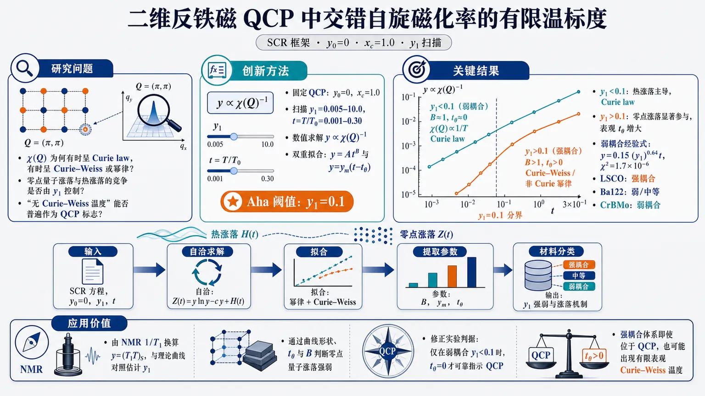
研究问题二维反铁磁量子临界点 y0=0 处，交错自旋磁化率 χ(Q) 的有限温行为为何有时呈 Curie law、有时呈 Curie-Weiss 或幂律？核心追问是：零点量子涨落与热涨落的竞争是否由模-模耦合常数 y1 控制，以及“无 Curie-Weiss 温度”能否普遍作为 QCP 标志。创新方法在 Watanabe–Miyake SCR 框架中固定 QCP 条件 y0=0、xc=1.0，系统扫描 y1=0.005–10.0 与 t=T/T0=0.001–0.30，数值求解约化逆交错磁化率 y∝χ(Q)⁻¹；再用幂律 y=At^B 与 Curie-Weiss 线性式 y=ym(t−tθ) 双重拟合，发现 y1=0.1 是区分热涨落主导与零点涨落显著参与的 Aha 阈值。工作流程输入二维反铁磁 SCR 方程、QCP 条件 y0=0、模-模耦合 y1、约化温度 t；计算包含零点涨落项 Z(t)=ylny−cy 与热涨落项 H(t) 的自洽 y(t) 曲线；对 y-t 曲线做对数幂律拟合和高温 Curie-Weiss 线性拟合；提取 B、ym、tθ；最后把 NMR 1/T1 数据换算为 y=(T1T)S，与理论曲线对照分类材料的 y1 强弱。关键结果出现清晰分界 y1=0.1：当 y1<0.1，B≈1、tθ≈0，χ(Q)∝1/T，保持 Curie law；当 y1>0.1，B>1 且 tθ 随 y1 增大，χ(Q) 转为 Curie-Weiss 型或非 Curie 幂律。弱耦合区得到高精度经验式 y=0.15(y1)⁰.64 t，χ²=1.7×10⁻⁶。LSCO 属强耦合，Ba122 属弱/中等耦合，CrBMo 属弱耦合。应用价值为二维巡游反铁磁体系提供从 NMR 弛豫率估计 y1 的实用图谱：通过 y-t 曲线形状、Curie-Weiss 截距 tθ 和幂律指数 B 判断零点量子涨落强弱。该研究修正了实验判据：只有弱耦合 y1<0.1 时，tθ=0 才能可靠指示 QCP；强耦合体系即使位于 QCP，也可能出现有限表观 Curie-Weiss 温度。第一部分：核心概览（Overview）
该研究在二维反铁磁量子临界点 (y₀₌₀) 的 Watanabe–Miyake 自洽重整化（SCR）框架内，系统刻画了有限温 交错自旋磁化率 (ḩi(Q)) 对 模-模耦合常数 (y₁) 的依赖。核心贡献是提出 (y₁₌₀.1) 作为零点量子涨落效应的分类阈值：弱耦合 (y₁<0.1) 下 (ḩi(Q)) 保持 Curie law，强耦合 (y₁>0.1) 下转为 Curie-Weiss 型或幂律型。该结果为 NMR 弛豫率提取二维巡游反铁磁体系的 (y₁) 提供了实用判据，并重新界定了“无 Curie-Weiss 温度”作为量子临界点识别信号的适用范围。
---
第二部分：结构化快速回顾
《Staggered spin susceptibility at a two-dimensional antiferromagnetic quantum critical point》（None，）
背景
二维巡游反铁磁量子临界点处，零点量子自旋涨落会改变交错自旋磁化率 (ḩi(Q)) 的温度依赖。既有 SCR 理论在仅含热涨落时给出 QCP 处的 Curie law，而包含零点涨落的 Watanabe–Miyake SCR 理论预示极低温 对数发散 和有限温 Curie-Weiss 型行为。实验上尚缺少估计反铁磁体系 模-模耦合常数 (y₁) 的标准方案。
方法
采用二维反铁磁 SCR 方程，在 (y₀₌₀)、(x_c=1.0) 条件下，对 (y₁₌₀.005–10.0) 和 (t=T/T₀₌₀.001–0.30) 数值求解约化逆交错磁化率 (yproptoḩi(Q)⁻¹)。随后用 幂律 (y=At^B) 和 线性 Curie-Weiss 形式 (y=yₘ₍ₜ₋ₜ_θ)) 拟合数值曲线。
结果
出现清晰阈值 (y₁₌₀.1)。当 (y₁<0.1) 时，幂律指数 (Bapprox1)，Curie-Weiss 温度 (t_θapprox0)，(ḩi(Q)sim1/T)。当 (y₁>0.1) 时，(B>1) 且 (t_θ) 随 (y₁) 增大而增大，(ḩi(Q)) 表现为 Curie-Weiss 型或非 Curie 幂律。弱耦合区得到经验式 (y=0.15(y₁₎⁰.⁶⁴t)，拟合优度 (ḩi²⁼¹.7×10⁻⁶)。
讨论
零点涨落项 (Z(t)=yłn y-cy) 与热涨落项 (H(t)) 竞争。弱耦合 (y₁₌₀.05) 下，热涨落 (H(t)) 明显大于 (|Z(t)|)，Curie law 保持；强耦合 (y₁₌₁.0) 下，二者量级相当，不完全抵消导致有限 Curie-Weiss 温度 (t_θ)。
局限
低温极限解析式 (ysim -tłn|łn t|/(2łn t)) 在研究温区 (t=0.001–0.30) 内未出现可见交叉；数值结论依赖 SCR 模型、二维近似、截断参数 (x_c=1.0) 以及实验体系中 (T₀,T_A,S) 的暂定估计。
结论
二维反铁磁 QCP 处，(ḩi(Q)) 的有限温行为不只由是否位于 (y₀₌₀) 决定，还强烈依赖 (y₁)。只有在弱模-模耦合 (y₁<0.1) 中，无 Curie-Weiss 温度 (t_θ=0) 才能可靠作为 QCP 识别判据。LSCO 属强耦合，Ba122 属弱/中等耦合，CrBMo 属弱耦合。
---
第三部分：逐章节冷凝解析（Section-by-Section Condensing）
Abstract
Finite-temperature (ḩi(Q)) is controlled by (y₁) at the QCP
研究对象是二维反铁磁量子临界点 (y₀₌₀) 处的有限温 交错自旋磁化率 (ḩi(Q))，控制变量是 SCR 理论中的 模-模耦合常数 (y₁)。摘要直接界定了问题：*"We report on the finite temperature staggered spin susceptibility (ḩi(Q)) as a function of the mode-mode coupling constant (y₁) in the self-consistent renormalization theory of two-dimensional antiferromagnetic spin fluctuations with zero-point quantum fluctuations just at the quantum critical point ((y₀₌₀))."*
核心物理对象不是普通均匀磁化率，而是反铁磁波矢 (Q) 处的 staggered spin susceptibility。
(y₁₌₀.1) is the central classification threshold
最重要的数值判据是 (y₁₌₀.1)。当 (y₁<0.1) 时，零点量子涨落对有限温行为影响弱，(ḩi(Q)) 呈 Curie law；当 (y₁>0.1) 时，零点涨落显著，行为转为 Curie-Weiss 型或幂律型。摘要给出明确分类：*"We find that the value (y₁₌₀.1) is a criterion to classify the effect of the zero-point spin fluctuations on the temperature dependence of (ḩi(Q)) into a Curie law for weak (y₁<0.1) and a Curie-Weiss type or a power law type for strong (y₁>0.1)."*
Absence of Curie-Weiss temperature is valid only in weak coupling
传统上，无 Curie-Weiss 温度常被用作 QCP 标志；该研究将这一判据限制到 弱模-模耦合 (y₁<0.1) 情形。摘要强调：*"The absence of a Curie-Weiss temperature can serve as an identifying criterion for QCP ((y₀₌₀)) in systems with weak mode-mode coupling ((y₁<0.1))."*
因此，若体系处于强耦合区，QCP 处也可能出现有限表观 Curie-Weiss 温度，不能简单否定临界性。
NMR relaxation rates provide experimental access to (y₁) classification
实验应用通过 核自旋-晶格弛豫率 (1/T₁) 连接理论的 (y)-(t) 曲线。摘要指出：*"Experimental application on the (y₁) classification is shown to several itinerant layered antiferromagnetic systems through an analysis of nuclear spin-lattice relaxation rates."*
这将 SCR 理论中的抽象参数 (y₁) 转化为可通过 NMR 数据分类的实验量。
---
I Introduction
Mode-mode coupling (y₁) is central but experimentally difficult in antiferromagnets
巡游磁性中，模-模耦合常数 (y₁) 是关键参数。对于巡游铁磁体，可通过高场磁化的 Arrott plots 估计；反铁磁体则缺少标准流程。原文指出：*"One of the key ingredients of itinerant magnetism is the mode-mode coupling constant (y₁) of spin fluctuations"*，并补充：*"there is no standard experimental protocol for estimating (y₁) in itinerant antiferromagnets."*
该困难构成研究动机：需要可实验拟合的 (ḩi(Q)) 表达式。
(ḩi(Q)) is experimentally observable by NMR and neutron scattering
反铁磁波矢 (Q) 处的交错磁化率 (ḩi(Q)) 可由 NMR 和 中子散射 测量或间接提取。原文明确：*"(ḩi(Q)) ((Q) is an antiferromagnetic wave vector) can be measured by NMR and neutron scattering experiments."*
NMR 通过 (1/T₁T) 对低能自旋涨落谱加权；中子散射可直接探测 (ḩi''(Q,ømega))。
Two-dimensional antiferromagnetic spin fluctuations are tied to unconventional superconductivity
二维反铁磁涨落长期与高温超导机制相关。引言指出：*"Two-dimensional antiferromagnetic spin fluctuations have attracted great attention in research on the mechanisms of high-temperature superconductivity."*
引用范围涵盖 cuprates 与 iron-based superconductors 的经典综述：Moriya–Ueda、Scalapino、Dai 等。
Zero-point quantum fluctuations alter QCP behavior
近年进展在于重新认识 零点量子涨落 在 QCP 附近的作用。原文写道：*"A recent advancement in spin fluctuation theory is the recognition of the influence of zero-point quantum fluctuations at and near a QCP."* 并进一步指出：*"The zero-point spin fluctuations play a significant role in the quantum critical phenomena of itinerant electron magnetism at a two-dimensional antiferromagnetic QCP."*
这一区别把 Watanabe–Miyake SCR 理论与传统只含热涨落的 SCR 理论区分开来。
Low-temperature logarithmic divergence and finite-temperature Curie-Weiss behavior coexist in zero-point SCR theory
二维反铁磁 QCP 处，(ḩi(Q)) 在极低温呈 对数温度依赖，但这种对数发散只在极低温成立。原文给出两层结论：*"The two-dimensional quantum critical behavior of the staggered spin susceptibility (ḩi(Q)) is logarithmic temperature dependence near absolute zero temperature"*，以及 *"The logarithmic divergence of (ḩi(Q)) holds only at extremely low temperatures."*
有限温区则不同：*"The finite temperature (ḩi(Q)) at the QCP is of a Curie-Weiss type in the self-consistent renormalization (SCR) theory with zero-point quantum fluctuations."*
Zero-point SCR theory differs from previous thermal-only SCR theory
传统 SCR 理论仅考虑热涨落时，QCP 处 (ḩi(Q)) 为 Curie law。引言直接比较：*"These are different from a Curie law regarding (ḩi(Q)) at the QCP in the previous SCR theory, which considers only thermal fluctuations."*
关键差异在于：热涨落主导时 (ḩi(Q)sim1/T)，零点涨落参与时可出现有限 Curie-Weiss 温度或非线性幂律。
Curie-Weiss parameterization remained unclear
尽管已有数值结果被称为 Curie-Weiss behavior，但如何用 SCR 参数定量参数化仍不清楚。原文指出：*"Although the numerical (ḩi(Q)) is called 'Curie-Weiss behavior', it has been unclear how the Curie-Weiss law is parameterized in the SCR theory with the zero-point fluctuations."*
这正是研究填补的理论空缺：把数值 SCR 结果转化为实验上可用的 (C)、(Θ)、(yₘ)、(t_θ) 等参数。
Absence of finite Curie-Weiss temperature has been used as a QCP diagnostic
实验判断 QCP 时，常依赖 有限 Curie-Weiss 温度是否消失。引言指出：*"It is crucial for experimental studies whether (ḩi(Q)) is a Curie law or a Curie-Weiss law, because the absence of the finite Curie-Weiss temperature has served as identification of the QCP."*
该研究的后续结论会限制这一判据：只在 弱 (y₁) 系统中成立。
Study design focuses on (y₁)-dependent SCR solutions at (y₀₌₀)
研究采用 Watanabe–Miyake SCR theory，固定 QCP 距离 (y₀₌₀)，系统扫描 (y₁)。引言给出研究路线：*"we study the SCR equation of (ḩi(Q)) as a function of the mode-mode coupling constant (y₁) at the two-dimensional antiferromagnetic QCP."*
所得核心趋势是：*"The temperature dependence of (ḩi(Q)) at finite temperatures depends on the value of (y₁)."*
---
II SCR theory with zero-point quantum fluctuations at a two-dimensional QCP : two asymptotic solutions
Units and notation follow Watanabe–Miyake SCR theory
温度和频率使用自然单位 (k_B=hbar=1)，(ḩi(Q)) 的单位为 ((2μ_B)²)。原文写明：*"Energy units for temperature (T) and frequency (ømega) are set by (k_B) and (hbar=1). (ḩi(Q)) is in units of ((2μ_B)²)."*
符号体系与 Watanabe–Miyake SCR 理论一致：*"The notations conform with the Watanabe-Miyake SCR theory."*
Dynamical susceptibility is expanded around the antiferromagnetic wave vector (Q)
反铁磁波矢附近的动力学磁化率写为
[
frac1ḩi(Q+q,ømega)
=
π T_Ałeft(y+x²⁾⁻ⁱfracømega2π T₀i̊ght.
]
原文给出：*"The dynamical spin susceptibility (ḩi(Q+q,ømega)) peaked at (Q) is expanded as..."*
其中 (x=q/q_B)，(q_B) 是有效布里渊区边界；(T₀) 是频率展宽，(T_A) 是动量空间展宽。
Reduced inverse susceptibility (y) encodes the correlation length
约化逆交错磁化率定义为
[
y=frac12T_Aḩi(Q)=frac1(ξ q_B)².
]
原文给出：*"the reduced inverse staggered spin susceptibility (y=1/2T_Aḩi(Q)=1/(ξ q_B)²)"*。
因此，(y→0) 对应 (ξ→infty)，即反铁磁临界涨落增强；(ḩi(Q)propto1/y)。
SCR equation at (y₀₌₀) contains zero-point and thermal fluctuation terms
在给定 (y₁) 且处于 QCP (y₀₌₀) 时，SCR 方程为
[
y=fracy₁2łeft[
(yłn y-cy)+fract2
łeft{
łnfracx_c²⁺yy
-
łnfracx_c²⁺y+t/6y+t/6
i̊ght}
i̊ght],
]
其中 (t=T/T₀)，(x_c=q_c/q_B)，(c=1+2łn x_c)。原文说明：*"For the given values of the mode-mode coupling constant (y₁) and just at the QCP distance (y₀₌₀), the Watanabe-Miyake SCR equation of (y) against the reduced temperature (t=T/T₀) is..."*
The (yłn y-cy) term is the signature of zero-point quantum fluctuations
SCR 方程中
[
yłn y-cy
]
来自零点量子涨落，是二维反铁磁 QCP 的特征项。原文强调：*"The logarithmic term of ((ym̊ lny-cy)) due to the zero-point quantum fluctuations is characteristic of the two dimensional antiferromagnetic QCP."*
热涨落项则是：*"The term of ((t/2)ḑots) results from the thermal fluctuations."*
Low-temperature asymptotic solution is universal in (y₁)
在 (t→0) 且 有限 (y₁) 下，SCR 方程给出
[
ysimfrac-tłn|łn t|2łn t.
]
原文写道：*"In the low temperature limit of (ti̊ghtarrow0), the SCR Equation (1) with finite (y₁) leads to (ysimfrac-tm̊ ln|m̊ lnt|2m̊ lnt)."*
关键性质是与 (y₁) 无关：*"An important feature of Equation (2) is that it does not depend on (y₁)."*
因此，理论极低温极限中所有有限 (y₁) 都共享 对数发散 (ḩi(Q))。
Weak-coupling finite-temperature asymptote gives Curie law
在有限温 (t=0.001–0.30) 且 (y₁→0)、(yłl t) 的弱耦合极限，SCR 方程给出
[
ysimfrac-y₁łn y₁4t,
]
以及
[
ḩi(Q)sim
frac2-y₁łn y₁fracT₀T_AT.
]
原文表述：*"At finite temperatures of (t=0.001–0.30), in the weak coupling limit of (y₁ᵢ̊ghtarrow0), then (yłl t), the SCR Eq. (1) leads to..."*，并明确：*"This is a Curie law of (ḩi(Q)) in the limit of (y₁ᵢ̊ghtarrow0)."*
Thermal fluctuations dominate zero-point fluctuations in weak (y₁)
弱耦合有限温下，热涨落项相对于零点项占优。原文给出判据：*"At finite temperatures in (y₁ᵢ̊ghtarrow0), the thermal fluctuations are superior to the zero-point fluctuations, that is ((t/2)łn y gg yłn y)."*
这解释了为什么包含零点涨落的 SCR 方程在弱耦合有限温下仍返回传统 Curie law。
The two asymptotic solutions cannot be analytically connected smoothly
极低温对数解与弱耦合 Curie 解来自不同极限，解析上无法平滑连接。原文指出：*"We have two asymptotic solutions of Eq. (1), the logarithmic function at zero temperature limit and the Curie law at weak (y₁) limit. Analytically, these two asymptotic solutions cannot be smoothly connected to one another."*
因此必须进行数值求解。
Numerical program scans (y₁₌₀.005–10.0), (t=0.001–0.3), (x_c=1.0)
数值工作固定 (x_c=1.0)，扫描 (y₁₌₀.005–10.0) 与 (t=0.001–0.3)。原文写道：*"by solving numerically the SCR Equation (1) with the various finite values of (y₁), we obtain (y) against (t) (= 0.001–0.3) for (y₁₌₀.005–10.0) and (x_c=1.0)."*
后续用简单函数拟合数值曲线：*"And then, we analyze the numerical (y-t) curves by using simpler functions."*
---
III Numerical inverse staggered spin susceptibility (yproptoḩi(Q)⁻¹) as a function of the mode-mode coupling constant (y₁)
Numerical (y(t)) increases with (y₁)
图 1 展示 (y₁₌₀.005–10.0) 的 (y)-(t) 曲线；随着 (y₁) 增大，(y) 和斜率 (y/t) 均增大。原文概括：*"Figure 1 shows the numerical (y) plotted against (t) for the mode-mode coupling constant (y₁₌₀.005–10.0)."* 以及：*"(y) and the slope (y/t) increase with increasing (y₁)."*
由于 (ḩi(Q)=1/(2π T_Ay))，更大的 (y) 意味着更小的交错磁化率。
Strong (y₁) suppresses (ḩi(Q)) and enhances (Γ(Q))
强模-模耦合使自旋涨落谱向高频展宽。原文给出物理解释：*"Strong mode-mode coupling suppresses the amplitude (ḩi(Q)=1/2π T_Ay) of the spin fluctuations and enhances the spin fluctuation frequency (Γ(Q)=2π T₀y)."*
进一步总结为：*"The mode-mode coupling broadens the spin fluctuation spectrum toward higher frequencies."*
这意味着 (y₁) 不只是拟合参数，而是控制谱权重与能量尺度重分配的相互作用强度。
Asymptotic logarithmic solution does not describe the studied finite-temperature range
图 1 中虚线为
[
y=-fractłn|łn t|2łn t,
]
但在 (t=0.001–0.30) 中与数值解差异明显。原文指出：*"The dotted line is the asymptotic solution (y=-tłn|łn t|/2łn t), which differs from the numerical solutions at the present temperatures."*
图 2 进一步确认：*"At (t=0.001–0.30), the difference between the numerical (y) ... and the asymptotic solution ... is large. No crossover behavior to the asymptotic solution is found."*
因此，极低温量子临界解析式不应直接用于常规实验温区。
Power-law fitting (y=At^B) works over (t=0.001–0.30)
图 2(a) 对数-对数图中，所有数值曲线在 (t=0.001–0.30) 范围表现为幂律。原文写道：*"All (y-t) numerical curves exhibit power-law behaviors in the temperature range of (t=0.001) to (0.3)."*
拟合函数为
[
y=At^B.
]
原文说明：*"The broken lines are the least-squares fitting results using a power law function (y=At^B) with fit parameters of (A) and (B). The fitting results are satisfactory."*
Power exponent (B) identifies (y₁₌₀.1) as a threshold
图 2(b) 显示 (A)、(B) 随 (y₁) 的变化。当 (y₁<0.1)，(Bapprox1)；当 (y₁>0.1)，(B) 快速超过 1。原文描述：*"If (y₁) is less than 0.1, (B) is approximately 1. If (y₁) exceeds 0.1, (B) rapidly increases beyond 1."*
因此：*"We find a criterion (y₁₌₀.1), which classifies the temperature dependences of (yproptoḩi(Q)⁻¹)."*
因为 (B=1) 对应 (ypropto T)，所以 (ḩi(Q)propto1/T)，即 Curie law。
Linear Curie-Weiss fitting uses (y=yₘ₍ₜ₋ₜ_θ)) in (t=0.15–0.30)
图 2(c) 使用线性形式
[
y=yₘ₍ₜ₋ₜ_θ)
]
拟合，其中 (yₘ) 是逆 Curie 常数，(t_θ) 是 Curie-Weiss 温度。原文给出：*"the broken lines are the least-squares fitting results using a linear function (y=yₘ₍ₜ₋ₜ_θ)) with fit parameters of (yₘ) and (t_θ)."*
拟合温区限定为：*"The fitting range is (t=0.15–0.30)."*
Finite (t_θ) in strong coupling is not an ordering temperature
对于 (y₁>0.1)，数值曲线在 (t<0.15) 偏离高温线性函数，并最终在 (t=0) 归零。原文强调：*"As the temperature (t) decreases, the numerical (y) with (y₁>0.1) deviates from the linear function below (t<0.15), and then (y) goes to zero at (t=0)."*
因此：*"the finite (t_θ) does not indicate the finite temperature long range antiferromagnetic ordering."*
这是一个重要澄清：此处的 (t_θ) 是有限温拟合参数，不是 Néel 温度。
Weak coupling gives robust Curie law across the full studied range
对于 (y₁<0.1)，线性 Curie law 在 (t=0.001–0.30) 全范围复现数值曲线。原文指出：*"For (y₁<0.1) in Fig. 2(c) as well as Fig. 2(a), the broken lines (Curie law) well reproduce the numerical (y-t) ... at (t=0.001–0.30)."*
这说明弱耦合区不只是高温近似，而是在研究温区内持续有效。
Curie-Weiss analysis gives the same (y₁₌₀.1) criterion
图 2(d) 展示 (yₘ) 和 (t_θ) 随 (y₁) 的变化。当 (y₁<0.1)，(t_θapprox0)；当 (y₁>0.1)，(t_θ) 随 (y₁) 增大。原文写道：*"If (y₁) is less than 0.1, (t_θ) is approximately 0 and then (yₘ) is of a power law as a function of (y₁). If (y₁) exceeds 0.1, (t_θ) increases with increasing (y₁)."*
总结为：*"the criterion value of (y₁₌₀.1) is the same in both power-law analysis and Curie-Weiss analysis."*
Weak-coupling Curie coefficient follows (y=0.15(y₁₎⁰.⁶⁴t)
在 (y₁₌₀.005–0.1) 范围，对 (yₘ₌α(y₁₎^β) 拟合得到
[
α=0.15,quad β=0.64,
]
即
[
y=0.15(y₁₎⁰.⁶⁴t.
]
原文给出：*"We obtain (α=0.15) and (β=0.64), and then (y=0.15(y₁₎⁰.⁶⁴t) for (y₁₌₀.005–0.1)."*
拟合质量极高：*"The fitting result is satisfactory because of the low chi-square value (ḩi²⁼¹.7×10⁻⁶)."*
Weak-coupling (ḩi(Q)) takes an explicit Curie-law form
弱耦合区的磁化率公式为
[
ḩi(Q)=
frac1α(y₁₎^β
fracT₀2T_A
frac1T.
]
原文写道：*"The Curie law of (ḩi(Q)=frac1α(y₁₎^βfracT₀2T_Afrac1T) holds in the weak mode-mode coupling regime ((y₁<0.1))."*
该表达式可直接用于通过实验斜率估计 (y₁)。
Thermal-only SCR result is reproduced by (y/t=0.1755(y₁₎⁰.⁵⁶⁵)
研究还给出传统 Moriya–Takahashi–Ueda SCR 无零点涨落结果的经验复现式：
[
y/t=0.1755(y₁₎⁰.⁵⁶⁵.
]
原文指出：*"We also find that the analytical function (y/t=0.1755(y₁₎⁰.⁵⁶⁵) reproduces the Moriya-Takahashi-Ueda SCR result on (y/t) for (y₁₌₀–5.5) in the absence of the zero-point fluctuations."*
这为比较含零点涨落与不含零点涨落的 SCR 提供了基准。
Strong-coupling high-temperature behavior follows Curie-Weiss law
当 (y₁>0.1) 且 (t>0.15) 时，交错磁化率可写为
[
ḩi(Q)=fracCT-Θ,
]
其中
[
C=fracT₀2yₘT_A,quad Θ=t_θ T₀.
]
原文给出：*"For (y₁>0.1), the Curie-Weiss law at higher temperatures ((t>0.15)) is (ḩi(Q)=fracCT-Θ), where (C=T₀/2yₘT_A) and (Θ=t_θ T₀)."*
同时，强耦合极大时增长趋缓：*"When (y₁) exceeds beyond 1.0, the rate of increase for (yₘ) and (t_θ) slows down."*
Zero-point and thermal contributions are separated as (Z(t)) and (H(t))
SCR 方程可写为
[
y=fracy₁2[Z(t)+H(t)],
]
其中
[
Z(t)=y(t)łn y(t)-cy(t),
]
[
H(t)=fract2
łeft{
łnfracx_c²⁺y(t)y(t)
-
łnfracx_c²⁺y(t)+t/6y(t)+t/6
i̊ght}.
]
原文解释：*"H(t) shows the contribution from the thermal fluctuations, while Z(t) shows the counter contribution from the zero-point fluctuations."*
二者的竞争决定 (ḩi(Q)) 是否偏离 Curie law。
Complete cancellation yields logarithmic asymptote; incomplete cancellation yields Curie-Weiss temperature
零温极限的对数行为来自 (Z(t)) 与 (H(t)) 的完全抵消。原文写道：*"The complete cancelation of the zero-point fluctuation (Z(t)) and the thermal fluctuation (H(t)) yields the asymptotic logarithmic (t) dependence of (y(t)) in the zero temperature limit."*
有限温强耦合时抵消不完全，产生有限 (t_θ)：*"The incomplete cancellation of (Z(t)) and (H(t)) results in the Curie-Weiss law with the finite (t_θ)."*
Comparison of (y₁₌₀.05) and (y₁₌₁.0) explains the threshold physically
图 4 比较弱耦合 (y₁₌₀.05) 与强耦合 (y₁₌₁.0)。原文总结：*"For a small (y₁₌₀.05), (H(t)) is larger than (|Z(t)|), whereas for a large (y₁₌₁.0), (H(t)) is comparable to (|Z(t)|)."*
因此，弱耦合中热涨落主导，强耦合中零点涨落不可忽略。原文进一步指出：*"In the strong mode-mode coupling regime with (y₁>0.1), the zero-point fluctuation (Z(t)) at high temperatures plays a significant role and leads to the finite Curie-Weiss temperature."*
---
IV Nuclear spin-lattice relaxation rate due to two-dimensional antiferromagnetic spin fluctuations
NMR (1/T₁) connects experiments to (y)
二维近反铁磁体中，核自旋-晶格弛豫率写作
[
frac1T₁
=
frachk_B
łeft(fracγ_N2πi̊ght)²
fracAₕf²T₀T_A
fracTy.
]
原文给出：*"For the two-dimensional nearly antiferromagnets, (1/T₁) is expressed as..."*
因此实验的 (T₁T) 可换算为
[
y=(T₁T)S,
]
其中
[
S=
frachk_B
łeft(fracγ_N2πi̊ght)²
fracAₕf²T₀T_A.
]
原文写道：*"We can estimate (y) from the experimental (T₁T) as (y=(T₁T)S)."*
Three layered itinerant antiferromagnetic systems are analyzed
实验对象包括三类层状巡游反铁磁相关体系：
- ({}⁶³)Cu (T₁)：轻掺杂 La(₁.₉₆)Sr(₀.₀₄)CuO(₄)（LSCO）；
- ({}³¹)P (T₁)：最佳掺杂 Ba(₀.₅)Sr(₀.₅)Fe(₂)As(₁.₂)P(₀.₈)（Ba122）；
- ({}¹¹)B (T₁)：非超导 Cr(₀.₈₅)Mo(₀.₁₅)B(₂)（CrBMo）。
原文列出：*"We analyze ({}⁶³)Cu nuclear spin-lattice relaxation time ... for lightly-doped La(₁.₉₆)Sr(₀.₀₄)CuO(₄) (LSCO), ({}³¹)P ... for optimally-doped Ba(₀.₅)Sr(₀.₅)Fe(₂)As(₁.₂)P(₀.₈) (Ba122), and ({}¹¹)B ... for non-superconducting Cr(₀.₈₅)Mo(₀.₁₅)B(₂) (CrBMo)."*
Reduced temperatures use (T₀sim1500) K for LSCO and (T₀sim1000) K for Ba122/CrBMo
实验数据转换为
[
t=T/T₀.
]
原文给出：*"The reduced temperature (t=T/T₀) is defined by using (T₀sim1500) K for LSCO, 1000 K for Ba122, and 1000 K for CrBMo."*
这些 (T₀) 是自旋涨落频率尺度，用于把不同材料放到统一的无量纲 (t)-轴上。
Adopted (T_A) values are 1500 K, 4200 K, and 650 K
空间展宽参数暂定为：
- LSCO：(T_Asim1500) K；
- Ba122：(T_Asim4200) K；
- CrBMo：(T_Asim650) K。
原文表述：*"We adopt (T_Asim1500) K for LSCO, 4200 K for Ba122, and 650 K for CrBMo, tentatively."*
“tentatively” 表明这些参数并非独立精确测得，而是用于实验映射的合理估计。
Scaling coefficients (S) are material-specific
用于从 (T₁T) 转换到 (yₑₓ) 的系数为：
- LSCO：(S=0.27 mathrms⁻¹K⁻¹)；
- Ba122：(S=0.33×10⁻³ mathrms⁻¹K⁻¹)；
- CrBMo：(S=0.40×10⁻³ mathrms⁻¹K⁻¹)。
原文说明：*"The values of (S=0.27 mathrms⁻¹K⁻¹) for LSCO, (0.33×10⁻³ mathrms⁻¹K⁻¹) for Ba122, and (0.40×10⁻³ mathrms⁻¹K⁻¹) for CrBMo are consistent with estimation based on hyperfine coupling constants."*
LSCO is classified as strong mode-mode coupling
LSCO 的实验 (yₑₓ) 被 (y₁₌₀.5–10.0) 的理论曲线覆盖。原文给出：*"The theoretical (y-t) curves with (y₁₌₀.5sim10.0) cover the experimental (yₑₓ) for LSCO."*
这种宽范围分布可能来自 ({}⁶³T₁) 的频率分布：*"The experimental (yₑₓ) data in such a wide range of the (y₁) values may be due to the frequency distribution of ({}⁶³T₁)."*
分类结论明确：*"LSCO can be classified as a system with strong mode-mode coupling."*
Ba122 is classified as weak or intermediate mode-mode coupling
Ba122 的实验 (yₑₓ) 被 (y₁₌₀.05–0.1) 理论曲线覆盖。原文写道：*"The theoretical (y-t) curves with (y₁₌₀.05sim0.1) cover the experimental (yₑₓ) for Ba122."*
最终分类为：*"Ba122 can be classified as a system with weak or intermediate mode-mode coupling."*
这也与此前不含零点涨落的 SCR 分析形成对照：*"The SCR analysis in the absence of the zero-point fluctuations has been performed for BaFe(₂)(As(₁₋ₓ)P(ₓ))(₂)."*
CrBMo is classified as weak mode-mode coupling
CrBMo 的实验数据由 (y₁sim0.05) 理论曲线复现。原文指出：*"The theoretical curve with (y₁sim0.05) reproduces the experimental (yₑₓ) for CrBMo."*
分类结论：*"CrBMo can be classified as a system with weak mode-mode coupling."*
NMR-based (y₁) classification works near two-dimensional antiferromagnetic QCP
三种材料都可根据 (y₁) 强度进行分类。原文总结：*"Thus, these compounds can be classified based on the strength of (y₁) in the vicinity of the two-dimensional antiferromagnetic QCP."*
这一部分把理论阈值 (y₁₌₀.1) 转化为实验可操作的材料分类框架。
---
V Conclusion
Zero-point fluctuation effect depends on (y₁)
二维反铁磁 QCP 处，零点量子涨落对 (ḩi(Q)) 温度依赖的影响受 模-模耦合常数 (y₁) 控制。结论写道：*"the effect of the zero-point quantum fluctuations on the temperature dependence of the staggered spin susceptibility (ḩi(Q)) depends on the strength of the mode-mode coupling constant (y₁) at the two-dimensional antiferromagnetic QCP."*
Weak coupling restores Curie law through dominant thermal fluctuations
在 (y₁<0.1) 的弱耦合区，热涨落占优，(ḩi(Q)) 服从 Curie law。原文结论：*"In the weakly coupling regime ((y₁<0.1)), the predominant thermal spin fluctuations lead to a Curie law of (ḩi(Q))."*
Strong coupling makes zero-point and thermal fluctuations comparable
在 (y₁>0.1) 的强耦合区，零点涨落与热涨落对 (ḩi(Q)) 的影响相当。结论指出：*"In the strongly coupling regime ((y₁>0.1)), the zero-point spin fluctuations have an influence comparable to that of the thermal fluctuations in determining (ḩi(Q))."*
这就是 Curie-Weiss 型行为和有限 (t_θ) 的物理根源。
Absence of Curie-Weiss temperature is a QCP marker only for weak (y₁)
实验判据被精确限定：只有弱耦合系统 (y₁<0.1) 中，(t_θ=0) 才可作为 (y₀₌₀) 的 QCP 识别信号。结论明确：*"As to experimental studies, the absence of the Curie-Weiss temperature ((t_θ=0)) can serve as identification of the QCP ((y₀₌₀)) for the weak mode-mode coupling systems ((y₁<0.1))."*
---
第四部分：深度理解与语言支持（Understanding & Nuance）
1. 术语解析
Staggered spin susceptibility
Staggered spin susceptibility 指反铁磁波矢 (Q) 处的自旋响应函数 (ḩi(Q))，不是均匀磁化率 (ḩi(0))。在反铁磁体系中，相邻晶格自旋反向排列，临界涨落集中在有限波矢 (Q)；因此 (ḩi(Q)) 发散代表反铁磁关联长度增长。文中定义 (y=1/(2T_Aḩi(Q))=1/(ξ q_B)²)，所以 (y→0) 等价于 (ḩi(Q)→infty) 和 (ξ→infty)。
Mode-mode coupling constant (y₁)
Mode-mode coupling 是自旋涨落模式之间的非线性相互作用强度。(y₁) 越大，不同波矢/频率的涨落越强烈地相互反馈，使自旋涨落谱向高频展宽，并抑制 (ḩi(Q))。文中物理表述为强 (y₁) 会 *"suppresses the amplitude (ḩi(Q))"* 并 *"enhances the spin fluctuation frequency (Γ(Q))"*。
Zero-point quantum fluctuations
Zero-point quantum fluctuations 是即使在 (T=0) 仍存在的量子涨落，不同于热涨落。文中的数学标志是 (Z(t)=yłn y-cy)。二维反铁磁 QCP 中，这一项导致极低温对数修正，而不是简单的 (1/T) 行为。
Curie law vs Curie-Weiss law
Curie law：(ḩipropto1/T)，对应 (ypropto T)，即线性拟合中 (t_θ=0)。
Curie-Weiss law：(ḩi=C/(T-Θ))，对应 (ypropto T-Θ)，存在有限截距。
细微差别在于，文中的 (Θ) 不一定代表真实有限温反铁磁有序温度；强耦合情况下有限 (t_θ) 是高温拟合参数，原文明确 *"does not indicate the finite temperature long range antiferromagnetic ordering."*
Quantum critical point distance (y₀)
(y₀) 是 SCR 理论中描述体系距离磁性量子临界点的控制参数。(y₀₌₀) 表示恰在 QCP。需要注意：即使 (y₀₌₀)，有限温下 (ḩi(Q)) 也不必总是 Curie law；其形式还取决于 (y₁)。
---
2. 疑难查证：关键复杂概念解释
为什么 QCP 处还能出现 Curie-Weiss 型温度？
直觉上，QCP 意味着临界点在 (T=0)，所以有限温 Curie-Weiss 温度应为零。但这只在简单热涨落主导图像下成立。含零点涨落的 SCR 方程中有两个竞争项：
[
Z(t)=yłn y-cy
]
代表零点涨落的反贡献；
[
H(t)=fract2ḑots
]
代表热涨落贡献。
当 (y₁<0.1)，(H(t)gg |Z(t)|)，方程近似退化为热涨落主导，得到 (ypropto t)，即 (ḩi(Q)propto1/T)。
当 (y₁>0.1)，(Z(t)) 与 (H(t)) 量级相当。二者不完全抵消，使 (y(t)) 在有限温区看起来像
[
y=yₘ₍ₜ₋ₜ_θ),
]
于是 (ḩi(Q)=C/(T-Θ))。这里的 (Θ) 是零点涨落修正造成的有限温有效截距，而不是实际有序温度。
为什么极低温对数解与有限温 Curie law 无法平滑解析连接？
极低温解
[
ysimfrac-tłn|łn t|2łn t
]
来自 (t→0) 时 (Z(t)) 与 (H(t)) 的精细抵消。弱耦合 Curie 解
[
ysimfrac-y₁łn y₁4t
]
来自 (y₁→0) 且 (yłl t) 时热涨落占优。两个极限的顺序不同：
- 先令 (t→0)：量子临界对数修正显现；
- 先令 (y₁→0)：热涨落主导，Curie law 显现。
非交换极限导致解析上不能简单拼接。数值结果显示，在实验相关的 (t=0.001–0.30) 中，看不到向极低温对数解的交叉。
为什么 (y₁₌₀.1) 是经验阈值而非普适常数？
该阈值来自特定 SCR 方程、二维模型、(x_c=1.0)、数值温区 (t=0.001–0.30) 以及拟合方案。它在两个独立分析中一致出现：
- 幂律拟合中，(Bapprox1) 到 (B>1) 的转折发生在 (y₁₌₀.1)；
- Curie-Weiss 拟合中，(t_θapprox0) 到 (t_θ>0) 的转折也发生在 (y₁₌₀.1)。
因此 (y₁₌₀.1) 是该 SCR 框架内对实验温区非常有用的分类尺度，而非所有量子临界模型的严格普适常数。
---
第五部分：创新评估与关联（Synthesis & Novelty）
1. 创新性判断
将“Curie vs Curie-Weiss”问题归因于 (y₁) 强度
过去 Watanabe–Miyake SCR 理论已经指出二维反铁磁 QCP 中零点量子涨落会导致极低温对数行为和有限温 Curie-Weiss 型行为；但尚未清楚说明 Curie-Weiss 行为如何随 (y₁) 参数化。该研究的创新在于将有限温 (ḩi(Q)) 的形式明确划分为：
[
y₁<0.1:quad ḩi(Q)propto1/T
]
[
y₁>0.1:quad ḩi(Q)sim C/(T-Θ) 或幂律型
]
从而把“是否 Curie-Weiss”从模糊数值观察变成可拟合、可分类的参数问题。
提出 (y₁₌₀.1) 作为二维反铁磁 QCP 的实用分类阈值
相对近年关于二维反铁磁量子临界金属的研究，特别是 Hybrid Monte Carlo、hot-spot 模型、Hertz-Millis 以外标度等工作，该研究不追求新的临界指数普适类，而是在 SCR 理论内部提出实验可用的 (y₁)-classification。
创新点在于：(y₁₌₀.1) 同时由幂律指数 (B) 和 Curie-Weiss 截距 (t_θ) 支持，是一个可直接指导实验分析的数值阈值。
修正“无 Curie-Weiss 温度 = QCP”的传统实验判据
过去实验常把 (Θ=0) 作为 QCP 证据。该研究显示这一判据只在 弱耦合 (y₁<0.1) 中成立；强耦合体系即便在 (y₀₌₀)，也可因零点涨落与热涨落竞争而表现出有限有效 (Θ)。
这解决了一个实验解释上的前人盲点：有限 Curie-Weiss 温度不一定排除 QCP，可能反映强模-模耦合下零点涨落的重要性。
给出弱耦合区可直接实验使用的 (ḩi(Q)) 公式
弱耦合区得到高精度拟合：
[
y=0.15(y₁₎⁰.⁶⁴t,
quad
ḩi²⁼¹.7×10⁻⁶.
]
对应
[
ḩi(Q)=
frac10.15(y₁₎⁰.⁶⁴
fracT₀2T_A
frac1T.
]
该表达式使实验者可由 (ḩi(Q)) 或 NMR (T₁T) 的斜率估计 (y₁)，弥补反铁磁体缺少类似铁磁 Arrott plot 的 (y₁) 估计协议这一空缺。
通过 NMR (1/T₁) 建立材料分类实例
研究将理论曲线映射到三种实际材料：
- LSCO：(y₁₌₀.5–10.0)，强模-模耦合；
- Ba122：(y₁₌₀.05–0.1)，弱/中等模-模耦合；
- CrBMo：(y₁sim0.05)，弱模-模耦合。
这种分类展示了 SCR 参数 (y₁) 可通过 NMR 弛豫率进行半定量估计，增强了理论对实验材料的解释力。
明确实验温区与极低温量子临界渐近区的差别
二维反铁磁 QCP 的严格低温渐近解
[
ysimfrac-tłn|łn t|2łn t
]
虽然理论上独立于 (y₁)，但在 (t=0.001–0.30) 内与数值解差异很大，且未观察到 crossover。
这一点对实验极其重要：多数实验温区可能测到的是 有限温 SCR 交叉行为，而非真正的 (T→0) 渐近量子临界标度。
-
17
📄 摘要：通过立方多砧高压合成获得亚稳态 marcasite 型 MnSb2 单晶。粉末和单晶 X 射线衍射确认正交 Pnnm 结构，样品在常压稳定；磁性表征显示复杂非公度磁序，为无化学无序的 marcasite 化合物提供实验平台。
💡 亮点：高压法稳定了常压热力学亚稳的正交 Pnnm-MnSb2 单晶。其复杂非公度磁序使 marcasite 型锰锑化物成为研究几何与交换竞争的干净体系。
📖 展开分析 + 配图
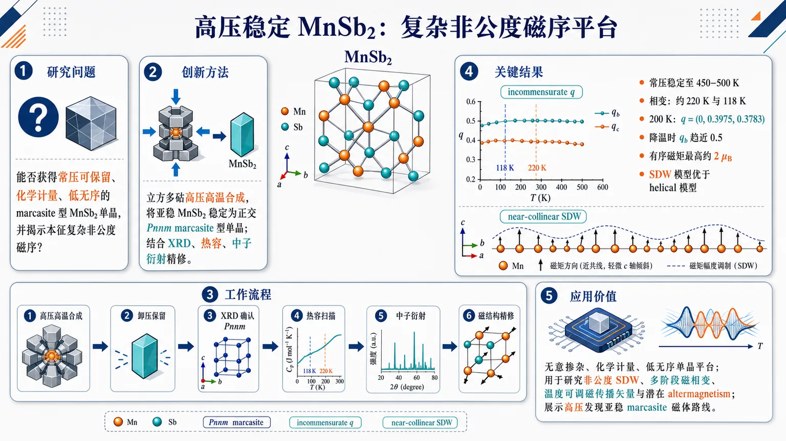
研究问题能否通过高压合成获得常压下可保留的化学计量、低无序 marcasite 型 MnSb₂ 单晶，并在其中揭示本征的复杂非公度磁序，作为非常规磁性与潜在 altermagnetism 的干净材料平台。创新方法用立方多砧高压装置把常压热力学亚稳的 MnSb₂ 稳定为正交 Pnnm marcasite 型单晶；结合粉末/单晶 XRD、热容和粉末中子衍射精修，发现其磁序更像近共线 spin-density-wave，而不是传统螺旋磁序。工作流程高压高温合成 MnSb₂ 单晶 → 卸压后验证常压稳定性至 450–500 K → X 射线衍射确认 Pnnm marcasite 晶格 → 热容扫描发现 220 K 与 118 K 两个相变 → 中子衍射追踪磁峰 → 精修多个候选磁结构 → 比较 SDW 与 helical 模型 → 得到随温度演化的非公度磁传播矢量。关键结果MnSb₂ 在常压下长期稳定至 450–500 K；热容显示约 220 K 和 118 K 两个相变；220 K 以下出现复杂非公度磁序，200 K 时 q = (0, 0.3975, 0.3783)，降温时 b 分量趋近 0.5；Mn 有序磁矩最高约 2 μB，整体近共线，c 轴倾斜很小；SDW 模型拟合优于螺旋模型。应用价值该研究提供了一个无意掺杂、化学计量、低无序的复杂磁性单晶平台，可用于研究非公度 SDW、多阶段磁相变、温度可调磁传播矢量以及潜在 altermagnetism；同时展示了高压稳定亚稳 marcasite 磁体的材料发现路线。第一部分：核心概览
MnSb₂ 被高压稳定为正交 marcasite 型 Pnnm 单晶，并在常压下长期保持稳定至 450–500 K。热容显示 220 K 与 118 K 两个相变；中子衍射揭示 220 K 以下复杂非公度磁序，传播矢量随温度演化，磁结构更符合 SDW 而非螺旋模型。该体系提供了化学计量、低无序的非常规磁性与潜在 altermagnetism 平台。
---
第二部分：结构化快速回顾
《Pressure-Stabilized MnSb₂ with Complex Incommensurate Magnetic Order》（None，）
背景
Marcasite 型化合物被视为承载非常规磁量子态的候选体系，但真正实现于化学计量、低无序/无无序晶体中的案例仍有限。MnSb₂ 在常压下热力学亚稳，需要高压合成路径获得。
方法
采用立方多砧高压装置合成 MnSb₂ 单晶；使用粉末与单晶 X 射线衍射确认晶体结构；通过热容测量识别相变；利用粉末中子衍射与磁结构精修解析低温磁基态。
结果
MnSb₂ 形成正交 Pnnm marcasite 型结构，常压下可长期稳定至 450–500 K。热容在约 220 K 与 118 K 出现相变。中子衍射显示 220 K 以下出现非常规磁基态；200 K 时磁传播矢量为 q = (0, 0.3975, 0.3783)，降温时 b 分量趋近 0.5。
讨论
多个磁结构模型均可给出相近可接受拟合，表明磁序存在显著复杂性与模型非唯一性。多数可行解支持 spin-density-wave, SDW 图像；helical models 的拟合质量系统性较差。Mn 有序磁矩最大约 2 μB，以近共线排列为主，沿 c 轴 canting 很小。
局限
粉末中子衍射精修存在多解性；高温与低温需要不同磁模型，说明单一统一模型尚未完全锁定。摘要未给出完整精修可靠因子、单晶中子数据、电子结构计算或 altermagnetic 对称性判据。
结论
MnSb₂ 是一种通过高压获得、常压可保留的 marcasite 型复杂磁体，具有强温度依赖的非公度磁序和可调磁基态，是探索非常规磁性、SDW 物理以及潜在 altermagnetism 的化学计量平台。
---
第三部分：逐章节冷凝解析
Abstract
Marcasite compounds as platforms for exotic magnetism
Marcasite 型化合物被定位为探索非常规磁量子态的重要结构家族，但现实材料体系仍受限于化学非化学计量、结构无序或样品质量不足。摘要开头直接给出研究动机：*"Marcasite-type compounds have been proposed as promising hosts of exotic magnetic quantum states, yet experimental realizations in stoichiometric, disorder-free systems remain limited."* 关键点在于 stoichiometric, disorder-free systems：非常规磁态若出现在无明显化学掺杂或随机无序的晶体中，其本征性更强，排除了杂质、占位混乱、缺陷诱导磁性的干扰。
High-pressure stabilization of metastable MnSb₂
MnSb₂ 的核心材料学难点是常压热力学亚稳，不能简单通过常规熔融或固相路径稳定获得。研究通过高压合成实现目标相：*"Here, we report the high-pressure stabilization and magnetic characterization of MnSb₂, a marcasite-type compound that is thermodynamically metastable under ambient pressure."* 这里的 pressure-stabilized 不只是合成技术描述，而是说明压力改变了相稳定性景观，使常压下不稳定或亚稳的晶体结构可以被制备并在卸压后保留。
Single-crystal synthesis by cubic multi-anvil press
样品制备采用 cubic multi-anvil press，这类装置可在较大体积样品上提供高压高温环境，较适合获得可用于物性与衍射测量的晶体。摘要给出直接证据：*"Single crystals were synthesized using a cubic multi-anvil press"*。关键细节是样品为单晶而非仅粉末；单晶质量对后续结构确认与各向异性磁性研究具有基础意义。
Orthorhombic Pnnm marcasite structure confirmed by X-ray diffraction
结构确认同时依赖粉末 XRD与单晶 XRD，提高了相鉴定可信度。摘要明确写道：*"powder and single-crystal X-ray diffraction confirm the orthorhombic Pnnm structure."* 结构空间群为 orthorhombic Pnnm，属于 marcasite 型结构。该结构信息是后续磁传播矢量、磁表示分析和磁结构精修的晶体学基础。
Ambient-pressure retention up to 450–500 K
MnSb₂ 虽在常压热力学亚稳，但合成后并非立即分解，而是在常压下具有显著动力学稳定性。摘要给出温度窗口：*"These crystals are stable at ambient pressure for a long time up to between 450-500 K."* 这说明材料可在常规低温与室温实验条件下可靠研究；但在 450–500 K 附近可能发生相分解、转变或结构失稳，限制了高温物性研究范围。
Two heat-capacity anomalies at 220 K and 118 K
热容测量识别出两个相变温度，分别约 220 K 与 118 K：*"Heat-capacity measurements reveal phase transitions at approximately 220 K and 118 K."* 这两个异常提示 MnSb₂ 不只是单一 Néel 转变体系，而可能经历多阶段磁有序、磁结构重排、锁定转变或伴随晶格/电子自由度的次级相变。摘要未给出峰形、熵变或是否为一级/二级相变，因此相变性质仍需正文数据支持。
Unconventional magnetic ground state below 220 K
中子衍射直接揭示 220 K 以下出现非常规磁基态：*"Neutron diffraction uncovers an unconventional magnetic ground state below 220 K."* 中子衍射对磁矩空间排列敏感，是确定磁序的核心证据。此处 below 220 K 与热容中第一个相变温度吻合，说明约 220 K 很可能对应磁有序起始温度或主要磁相变温度。
Multiple magnetic configurations fit the powder neutron data
粉末中子衍射精修未给出唯一磁结构，而是产生多个可接受解：*"Magnetic powder neutron diffraction refinements reveal possible multiple magnetic configurations that provide comparably acceptable fits to the experimental data."* 这意味着仅凭粉末平均信息，磁结构存在模型退相干/非唯一性。原因可能包括：非公度传播矢量导致峰位复杂、磁畴平均、粉末取向平均损失方向信息、多个不可约表示或基矢组合给出相似衍射强度。
Spin-density-wave description favored over helical models
虽然存在多个候选模型，大多数较好模型与 SDW 描述一致，而 helical models 拟合较差：*"While most solutions are consistent with a spin-density-wave (SDW) description, helical models systematically yield inferior agreement factors."* 这一区分很关键：SDW 通常指磁矩大小或方向沿空间周期性调制、常呈近共线特征；helical 则意味着磁矩方向在空间中连续旋转且常保持近似恒定模长。较差的 agreement factors 表明实验衍射强度更支持近共线调制而非螺旋旋转磁序。
Ordered Mn moment reaches approximately 2 μB
磁结构模型给出的 Mn 有序磁矩上限约 2 μB：*"Across a broad range of models, the Mn ordered moment reaches a maximum value of approximately 2 μB"*。该数值小于许多局域高自旋 Mn 离子的理想自旋-only 磁矩，提示可能存在 itinerancy、共价杂化、低维/受挫涨落、非完全静态有序或模型平均效应。摘要只给出最大值，未说明不同温度或不同模型下磁矩范围。
Predominantly collinear order with minimal c-axis canting
磁矩排列以近共线为主，沿 c 轴的倾斜很小：*"and remains predominantly collinear, with minimal canting along the c-axis."* 这与 SDW 模型倾向一致，也反向削弱螺旋磁序可能性。minimal canting 表明若存在非共线分量，其幅度不足以主导衍射强度；但摘要未给出 canting 角度或 c 轴分量大小。
Incommensurate propagation vector at 200 K
200 K 时磁传播矢量定量给出为 q = (0, 0.3975, 0.3783)：*"At 200 K, the magnetic propagation vector is q = (0, 0.3975, 0.3783)"*。这意味着磁调制沿 b* 与 c* 方向均为非整数/非简单有理分量，属于非公度磁序。其中 b 分量 0.3975 接近但不等于 0.4，c 分量 0.3783 也不对应简单晶格周期，显示磁周期与晶格周期不严格匹配。
Temperature evolution of the b component toward 0.5
降温过程中，传播矢量的 b 分量向 0.5 增大：*"upon cooling, the b component increases toward 0.5, reflecting a temperature-dependent evolution of the modulation."* 0.5 对应沿 b 方向接近两倍晶胞的反铁磁型调制；从 0.3975 向 0.5 演化说明磁波长随温度缩短并趋向某种近似锁定条件。这可能暗示交换相互作用、各向异性、费米面嵌套或磁弹耦合随温度变化导致调制矢量重整化。
Magnetic model changes between high and low temperatures
高低温区需要修改磁模型：*"The need for modification of the magnetic model between high and low temperatures further highlights the complex and strongly temperature-dependent nature of the magnetic order in this system."* 这说明 MnSb₂ 的磁序不是简单随温度增大序参量，而是存在磁结构重构。结合 220 K 与 118 K 两个热容相变，低温区可能经历二次调制、锁定转变、分量再取向或不同不可约表示参与。
MnSb₂ as a tunable pressure-stabilized marcasite magnet
研究结论将 MnSb₂ 定位为具有高度可调复杂磁基态的高压稳定 marcasite 磁体：*"These results establish MnSb₂ as a pressure-stabilized marcasite magnet with a highly tunable, complex magnetic ground state"*。这里的 highly tunable 在摘要语境中主要来自温度驱动的传播矢量演化与模型变化；未来也可能通过压力、应变、化学替换或磁场进一步调控。
Stoichiometric platform for unconventional magnetism and potential altermagnetism
MnSb₂ 的更大意义在于提供一个化学计量平台来研究非常规磁行为，包括潜在 altermagnetism：*"and a compelling stoichiometric platform for exploring unconventional magnetic behavior, including potential altermagnetism."* Altermagnetism 要求特定磁对称性导致动量空间自旋劈裂，但宏观净磁矩可为零。摘要只称 potential，说明该属性尚未被完整证明，可能仍需电子结构计算、磁空间群分析和自旋分辨谱学验证。
---
第四部分：深度理解与语言支持
1. 术语解析
Marcasite-type compounds
Marcasite 型化合物指采用类似 FeS₂ marcasite 结构原型的晶体体系，通常具有正交结构和过渡金属—配体八面体连接网络。在磁性研究中，这类结构可能产生各向异性交换、低维性、竞争相互作用或受挫效应。语境中的重点不是矿物学分类，而是其作为 exotic magnetic quantum states 宿主的结构平台价值。
Stoichiometric, disorder-free systems
Stoichiometric 指化学计量比明确、接近理想组成为 Mn:Sb = 1:2；disorder-free 指无明显占位混乱、掺杂随机性或缺陷主导效应。两者合用时强调磁性是材料本征结构与电子相互作用的结果，而非杂质或掺杂引起。这个表达比“high-quality sample”更严格，涉及成分与结构两层面。
Thermodynamically metastable under ambient pressure
常压热力学亚稳意味着 MnSb₂ 在常压下不是自由能最低相，但存在动力学势垒，使其在一定条件下可被保留。微妙点在于：metastable 不等于“立即不稳定”或“无法存在”；该材料可在常压下长期稳定至 450–500 K，说明其低温/室温动力学稳定性足以支撑实验研究。
Spin-density-wave (SDW)
SDW 是磁有序的一种空间调制形式，磁矩幅度和/或方向随晶格位置周期性变化。与简单共线反铁磁不同，SDW 的周期可与晶格不公度；与螺旋磁序不同，SDW 常可保持近共线特征并表现为磁矩大小调制。摘要中 SDW 与 predominantly collinear、minimal canting 相互呼应。
Incommensurate magnetic order
非公度磁序指磁周期不能用晶格周期的简单整数倍表示。传播矢量 q = (0, 0.3975, 0.3783) 中 0.3975 和 0.3783 不是简单 0、1/2 或 1/3 这样的锁定值，因此磁调制与晶格周期不完全同步。非公度性通常反映竞争交换、巡游电子不稳定性或磁弹耦合之间的精细平衡。
---
2. 疑难查证
为什么 q = (0, 0.3975, 0.3783) 说明磁序复杂？
磁传播矢量 q 描述磁矩从一个晶胞到另一个晶胞如何改变相位。若 q = (0, 0.5, 0)，意味着沿 b 方向每移动一个晶胞磁相位改变 π，即简单的两倍周期反铁磁排列。MnSb₂ 在 200 K 的 q = (0, 0.3975, 0.3783) 同时沿 b 和 c 两个方向调制，而且两个数都不是简单有理分数，因此磁结构在三维晶格中形成长周期、非简单重复的调制图案。
为什么粉末中子衍射会出现多个磁结构都能拟合？
粉末衍射把所有晶粒取向平均，许多方向信息被压缩到一维衍射峰强度中。不同磁矩方向、不同相位关系、不同不可约表示组合，可能产生非常接近的粉末峰强度。因此摘要中出现 *"multiple magnetic configurations that provide comparably acceptable fits"* 并不意外。要唯一确定磁结构，通常需要单晶中子衍射、极化中子、外场依赖或对称性约束。
为什么 SDW 模型优于 helical 模型很重要？
螺旋磁序中磁矩方向连续旋转，通常属于显著非共线磁结构；SDW 更可能是磁矩幅度调制或近共线方向调制。摘要指出 helical 模型的 *"agreement factors"* 系统性更差，同时 Mn 磁矩 *"predominantly collinear"*，说明 MnSb₂ 的低温磁性更接近复杂共线非公度 SDW，而不是经典螺旋磁体。这会影响对交换机制、对称性、输运异常以及潜在 altermagnetism 的判断。
为什么 118 K 相变可能很关键？
热容有 220 K 与 118 K 两个相变，而中子衍射显示 220 K 以下已有磁序。若 220 K 是磁有序起点，118 K 很可能对应磁结构内部重排，例如传播矢量进一步变化、SDW 分量改变、近似锁定转变或磁矩方向轻微再取向。摘要中 *"need for modification of the magnetic model between high and low temperatures"* 正好支持这种多阶段磁序图像。
为什么 altermagnetism 只能说 potential？
Altermagnetism 不是“复杂反铁磁”或“无净磁矩磁体”的同义词。它要求磁空间群对称性允许动量空间中交替的自旋劈裂，同时整体净磁矩可为零。仅凭粉末中子衍射和复杂 SDW 不能充分证明 altermagnetic 电子结构。需要磁空间群确定、第一性原理能带计算、自旋分辨 ARPES 或输运响应等证据。因此摘要使用 potential altermagnetism 是谨慎表述。
---
第五部分：创新评估与关联
1. 创新性判断
High-pressure route to stoichiometric MnSb₂ single crystals
近年非常规磁性研究高度依赖高质量单晶，但很多候选体系来自掺杂、非化学计量或存在明显结构无序。MnSb₂ 的新颖性在于通过立方多砧高压合成获得常压亚稳的 marcasite 型 MnSb₂ 单晶，并证明其可在常压下长期稳定至 450–500 K。这解决了“理论或结构上有趣但常压无法稳定制备”的材料可获得性问题。
Intrinsic complex magnetism without intentional disorder
过去 2–5 年内，非常规磁序、非公度磁序和 altermagnetism 候选体系常面临掺杂无序、缺陷、相分离或非理想化学计量的解释争议。MnSb₂ 的优势在于作为 stoichiometric platform，复杂磁性更可能来自本征晶体结构、Mn–Sb 杂化和竞争交换，而非随机无序诱导。
Temperature-tunable incommensurate magnetic propagation
200 K 时 q = (0, 0.3975, 0.3783)，降温时 b 分量趋近 0.5，显示磁调制可随温度连续演化。这种可调传播矢量使 MnSb₂ 不只是“发现一个磁有序相”，而是提供了研究非公度—近公度演化、磁结构重构和多相变耦合的实验平台。
Evidence-based rejection of simple helical descriptions
复杂非公度磁体常容易被初步归类为螺旋或螺线磁体；MnSb₂ 的粉末中子精修显示 helical models 拟合质量系统性较差，而多数可行模型更接近 SDW。这种区分有助于避免把所有非公度磁序简单归为螺旋磁性，也为理解近共线复杂 SDW 与潜在 altermagnetic 对称性的关系提供入口。
Open problem addressed: pressure-stabilized marcasite magnets as clean unconventional platforms
核心未解问题是：能否在无明显无序的 marcasite 型化学计量晶体中实现复杂、可调、非常规磁基态？MnSb₂ 给出肯定路径：高压稳定结构，常压保留单晶，热容确认多相变，中子衍射揭示强温度依赖非公度磁序。其地位在于把 marcasite 型材料设计、高压亚稳相合成与非常规磁序解析连接成一个可扩展研究方向。
-
18
📊 含图深析
📄 摘要：提出利用逆法拉第效应调控铁磁性铋铁石榴石 Mie 球中的偶极—交换自旋波谱。内部光学 Mie 共振产生空间结构化有效磁场，其对称性继承自光学近场；圆偏振光与平衡磁化共线入射时保持轴对称但破坏镜面对称，从而重构磁振子哈密顿量并诱导杂化。
💡 亮点：BIG Mie 球中光学近场可通过逆法拉第效应写入对称性选择的磁扰动。该机制把 Mie 光子模式与磁振子杂化工程连接起来。
📖 展开分析 + 配图
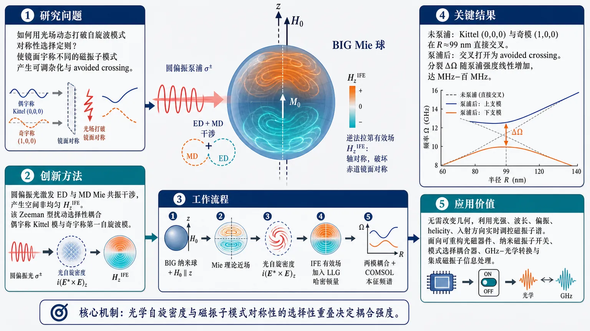
研究问题如何在理想均匀磁化的 BIG 纳米 Mie 球中，用光场动态打破自旋波模式的对称性选择定则，使原本因镜面宇称不同而不能混合的磁振子模式产生可调杂化与 avoided crossing。创新方法利用圆偏振泵浦在 BIG Mie 球内激发电偶极 ED 与磁偶极 MD 光学 Mie 共振干涉，产生空间非均匀的逆法拉第有效磁场 H_z^IFE；该场保持绕 z 轴的轴对称，却破坏赤道镜面对称，像可开关的 Zeeman 型扰动一样，把偶宇称 Kittel 模与奇宇称第一自旋波模选择性耦合起来。工作流程输入为饱和磁化 BIG 纳米球、外磁场沿 z 轴、共线圆偏振光泵浦；先用 Mie 理论计算球内结构化近场与光自旋密度 i(E*×E)_z，再由逆法拉第效应转化为空间分布的有效磁场；将该场加入线性化 LLG 自旋波哈密顿量，结合对称性分析筛选可耦合模式；最后用两模耦合模理论和 COMSOL 本征频谱计算输出频率分裂、模式杂化和 avoided crossing 图像。关键结果未泵浦时 Kittel 模 (0,0,0) 与第一奇模 (1,0,0) 在半径约 99 nm 附近直接交叉；加入圆偏振泵浦后交叉点打开为 avoided crossing，分裂 ΔΩ 随泵浦强度线性增加。预测分裂达到 MHz 至百 MHz 量级；最大分裂不简单对应最大散射截面或平均场增强，而取决于光学自旋密度与两个磁振子模式的对称性选择重叠。应用价值提供一种无需改变器件几何、可用光强、波长、偏振、helicity 和入射方向实时调控磁振子谱的方法，可用于可重构光磁器件、纳米尺度磁振子开关、模式选择耦合器、GHz–光学信号转换平台，以及基于对称性工程的集成磁振子信息处理。第一部分：核心概览 (Overview)
该研究提出一种用逆法拉第效应动态重构纳米磁球偶极–交换自旋波谱的机制：BIG Mie 球内的光学 Mie 共振产生空间结构化有效磁场，作为可调 Zeeman 型扰动选择性破坏镜面对称性，在保持轴对称的条件下混合同一 Ĵz 扇区内奇偶相反的磁振子模式。核心贡献在于把光场从“激发/探测工具”提升为可实时调控磁振子哈密顿量的对称性工程手段，并给出耦合模理论、数值验证和可观测 MHz–百 MHz 分裂尺度。
---
第二部分：结构化快速回顾
《Spin-wave hybridization in bismuth iron garnet Mie spheres induced by the inverse Faraday effect》（None，）
背景
Optomagnonics 旨在耦合 GHz 磁振子与光学载波。传统光场主要用于激发或探测自旋波，较少直接作为调控磁振子哈密顿量的外部扰动。BIG 相比 YIG 具有更强磁光响应，适合在 Mie 共振增强下实现光控自旋波谱。
方法
建立 BIG 纳米球的线性化 Landau–Lifshitz–Gilbert 动力学，加入由圆偏振光诱导的 IFE 有效磁场。采用 Mie 内场展开、对称性分析、两模耦合模理论，并用 COMSOL Multiphysics 6.1 进行数值本征频谱计算。
结果
在共线入射几何中，圆偏振泵浦保持轴对称、破坏关于赤道面的镜面对称，从而允许 Kittel 模式 ((0,0,0)) 与第一奇模 ((1,0,0)) 在同一轴向扇区内发生混合。未泵浦时约在半径 (r₀approx99,nm) 处交叉；泵浦后出现 avoided crossing，分裂 (ΔØmega) 与强度 (I) 线性相关。
讨论
分裂最大值不单由散射截面或平均场增强决定，而由 (ǎrepsilon'(łambda)g(łambda)i(Eᵢₙ*×Eᵢₙ)_z) 与磁振子模式的对称性选择重叠决定。改变波长、强度、偏振、入射方向可选择性开启不同模式耦合。
局限
理想模型假定均匀磁化、完美球形、清晰对称性。实际样品的形状非对称、表面粗糙、材料不均匀、非均匀平衡磁化会产生静态残余分裂。双模 CMT 仅在附近无其他光学允许近共振模式时充分。
结论
BIG Mie 球可作为对称性选择性光控自旋波谱平台；IFE 诱导的空间非均匀 Zeeman 型扰动能动态、可重构地实现磁振子模式混合，预测分裂达到 MHz 至百 MHz 量级，在合理线宽与热条件下可观测。
---
第三部分：逐章节冷凝解析 (Section-by-Section Condensing)
Abstract
- Optical IFE as a magnon-Hamiltonian engineering tool
逆法拉第效应被用于工程化 BIG Mie 球中的偶极–交换自旋波谱，核心机制是内部光学 Mie 共振生成空间结构化有效磁场，并作为磁振子哈密顿量的可控扰动。原始表述为：*"We show that the inverse Faraday effect can be used to engineer dipole–exchange spin-wave spectra in ferrimagnetic bismuth iron garnet (BIG) Mie spheres."* 以及 *"Internal optical Mie resonances generate spatially structured effective magnetic fields whose symmetry is inherited from the optical near field and which act as controllable perturbations of the magnon Hamiltonian."*
- Symmetry-selective hybridization mechanism
共线圆偏振光在保持轴对称性的同时破坏镜面宇称，因此允许同一 (widehatJ_z) 扇区内宇称相反的磁振子模式发生混合。关键句为：*"For circularly polarized light incident collinearly with the equilibrium magnetization, the optical perturbation preserves axial symmetry while breaking mirror parity, thereby enabling hybridization of magnon modes with opposite parity within the same (widehatJz) sector."*
- Avoided crossing and intensity-linear splitting
通过耦合模理论推导 avoided crossing 以及分裂表达式，且分裂随泵浦强度线性增长。证据为：*"Using coupled-mode theory, we derive the corresponding avoided-crossing spectrum and analytical expressions for the induced level splittings, which scale linearly with pump intensity."*
- Mie resonance maximizes observable splitting
数值计算显示分裂在光学 Mie 共振附近最大，因为此处场增强和磁光响应最强；预测分裂为 MHz 至百 MHz，具备实验可观测性。原文为：*"Numerical calculations for BIG spheres confirm the predicted hybridization and show that the splitting is maximized near optical Mie resonances, where field enhancement and magneto-optical response are strongest."* 以及 *"the predicted MHz–hundreds-of-MHz splittings should be observable under realistic conditions."*
---
1 Introduction
- Optomagnonics targets GHz–optical carrier coupling
光磁学被定位为在集成平台上连接 GHz 磁振子信号与光学载波的路线。核心背景句为：*"Optomagnonics, the study of the interaction between optical photons and spin-wave excitations in magnetic media, has emerged as a route toward efficient coupling between GHz magnonic signals and optical carriers on integrated platforms."*
- IFE provides low-heating optical magnetic driving
逆法拉第效应使圆偏振光产生有效磁场，可驱动磁振子且避免显著加热。关键机制由句子给出：*"A central mechanism in this context is the inverse Faraday effect (IFE), whereby circularly polarised light generates an effective magnetic field capable of driving magnons without significant heating."*
- Platform evolution toward confined Mie structures
IFE 实现路径从扩展磁光结构推进到谐振波导、介质纳米谐振器、亚波长 Mie 散射体和超表面，目标是增强光–磁振子耦合与空间重叠。原文概括为：*"Its implementation has progressed from extended magneto-optical structures to increasingly confined photonic platforms, including resonant waveguides, dielectric nanoresonators, and, more recently, subwavelength Mie scatterers and metasurfaces."* 以及 *"This evolution reflects the broader effort to enhance light–magnon coupling through stronger optical confinement and improved spatial overlap with spin-wave modes."*
- Mie optomagnonics adds near-field texture and angular-momentum control
Mie 光磁学通过亚微米散射体内的多极共振产生结构化近场，使 IFE 具有非平凡空间纹理和角动量。原文为：*"The emerging regime of Mie optomagnonics pushes this miniaturization further: submicron scatterers support multipole resonances with structured near fields that can endow the IFE with nontrivial spatial texture and angular momentum."*
- Prior optical fields mostly excite or probe magnons rather than reshape spectra
既有工作主要把光场用于激发磁振子或通过 Brillouin 散射探测磁振子；更具挑战的是用光作为磁振子哈密顿量扰动。原文对比为：*"So far, optical fields in optomagnonic structures have been used primarily either to excite magnons or to probe them through Brillouin scattering."* 以及 *"A more demanding and less explored possibility is to use light not only as a source or probe of spin waves, but as a controllable perturbation of the magnon Hamiltonian itself, thereby modifying mode frequencies, hybridization, spatial structure, and dissipation."*
- Dipole–exchange nanoscale regime requires symmetry-based theory
纳米谐振器中交换作用与偶极作用竞争，相关模式处于中间偶极–交换区间；对称性框架用 (widehatJ_z) 与 (widehatP_z) 组织谱结构。原文为：*"Realizing such control requires accounting for the nontrivial spin-wave dynamics of nanoscale resonators, where exchange and dipolar interactions compete and the relevant modes often lie in the intermediate dipole–exchange regime."* 以及 *"it identifies the conserved quantities—namely, the z-projection of the total angular momentum, (widehatJz), and the xOy-plane reflection parity, (widehatPz)—that organize the dipole–exchange spectrum and therefore determine which perturbation-induced couplings are allowed or forbidden."*
- Static mode mixing differs from optically induced dynamic coupling
曲率、涡旋/Bloch 点、表面非对称、核壳结构等会静态改变频率和混合模式，但这些耦合由几何或材料固定；该研究关注光泵浦动态诱导。原文指出：*"These mechanisms are important for understanding magnetic nanoparticles, but they are intrinsically static: the coupling is fixed by the fabricated geometry, equilibrium magnetization texture, or material profile."* 随后给出对照：*"In contrast, the mechanism considered below is induced dynamically by the optical pump."*
- Mie-resonant IFE acts as tunable Zeeman-like perturbation
Mie 共振增强的 IFE 场作为空间结构化 Zeeman-like perturbation，其对称性可由波长、强度、偏振、入射几何控制。原文为：*"The Mie-resonant inverse-Faraday field acts as a spatially structured Zeeman-like perturbation whose symmetry can be controlled by the wavelength, intensity, polarization, and incidence geometry of light."*
- BIG chosen for stronger magneto-optical response at 582 nm
BIG 优于 YIG 的关键是更强磁光响应，同时在固定泵浦波长 (582,nm) 附近保持较低光损耗。原文为：*"BIG is particularly advantageous in this context because, compared with YIG, it provides a substantially stronger magneto-optical response while still retaining sufficiently low optical loss near the chosen pump wavelength, which is fixed at (582,nm) throughout the paper."*
- Targeted pair: even Kittel mode and odd (l=1) mode
共线圆偏振光保持 (widehatJ_z) 守恒、破坏镜面宇称，使 (l_z=0) 扇区中偶的 Kittel 模 ((l=0)) 与奇的第一模 ((l=1)) 混合。原文为：*"This enables hybridization of magnon modes with opposite parity within the same (lz=0) sector—specifically, the even Kittel mode with orbital angular momentum (l=0) and the first odd mode with (l=1)."*
---
2 Spin-wave dynamics and inverse-Faraday coupling
- System parameters define a saturated BIG nanosphere
BIG 纳米球由外磁场饱和磁化，参数为 (Hext=5ḑot10⁵,A/m)、(Hextparallelhatz)、(M₀₌Mₛhatz)、(Mₛ₌₁.3ḑot10⁵,A/m)。原文为：*"We consider a ferrimagnetic nanosphere of bismuth iron garnet (BIG), magnetized to saturation by an external static field (Hext=5ḑot 10⁵,A/m) and (Hextparallelhatz), so that the equilibrium magnetization is uniform, (M₀=Mₛhatz), where (Mₛ=1.3ḑot10⁵,A/m)."*
- Linearized LLG sets the spin-wave eigenproblem
自旋波由 LLG 方程控制：
[
partialₜM=-γM×Heff
+fracαMₛM×partialₜM.
]
小振幅展开 (M=M₀₊ₘ)、(|m|łl Mₛ)。原文为：*"Spin waves in this system are governed by the Landau–Lifshitz–Gilbert equation"*，并写明 *"(M=M₀+m,qquad|m|łl Mₛ)."*
- Effective stationary and dynamical fields include demagnetizing and exchange terms
静态退磁场为 (Hdm₀₌₋frac13Mₛhatz)，有效静场 (Heff₀₌Hext-frac13Mₛ)。动态场含退磁场和交换场 (hexch=fracAMₛnabla²m)，交换刚度 (A=4.28ḑot10⁻¹¹,Aḑot m)。原文为：*"containing the external field and the static demagnetizing contribution (H₀m̊dm=-1/3Mₛmathbfhatz)"*，以及 *"an effective exchange field (hm̊exch=fracAMₛnabla²m), with (A=4.28ḑot 10⁻¹¹,Aḑotm)."*
- Lossless Hamiltonian separates exchange and dipolar operators
首先设 (α=0)，线性动力学写为
[
-ipartialₜₘ₌₍Hₑₓcₕ+Hdᵢₚ)m.
]
原文明确：*"we first consider the lossless problem, (α=0), and return to damping only later when discussing linewidths and splittings."* 以及 *"the lossless linearized dynamics takes the form (-ipartialₜm(r,t)=bigl(Hₘ̊ ₑₓcₕ+Hₘ̊ dᵢₚbigr)m(r,t))."*
- Exchange and dipolar Hamiltonians have distinct locality
交换项为局域算符 (Hₑₓcₕ=γ(ellₑₓcₕ²Mₛnabla²⁻H₀eff)hatS_z)，其中 (ellₑₓcₕ=sqrtA/Mₛ)；偶极项为含磁静力核的非局域积分算符。原文为：*"The exchange contribution is the local operator"*，以及 *"The dipolar contribution is the nonlocal operator"*，磁静力核写为 *"(hatK(r-rprⁱme)=-nablanablafrac14π|r-rprⁱme|)."*
- Exact exchange labels become approximate in dipole–exchange regime
交换极限中模式可严格标记为 ((l,l_z,p))，但完整偶极–交换区间只严格守恒 (widehatJ_z) 和 (widehatP_z)。原文为：*"In the exchange limit, the spherical modes can be expressed rigorously and labeled by ((l,lz,p))"*，以及 *"In the full dipole–exchange regime, however, the conserved quantities reduce to the total angular-momentum projection (widehatJz) and the mirror parity (widehatPz), so the exchange labels remain only approximate."*
- Internal Mie field is expanded over electric and magnetic multipoles
圆偏振平面波入射，螺旋度 (σ=±1)，内部场写为
[
Eᵢₙ=E₀sumL₌₁ⁱⁿftyq_L[c_LMₘL(κr)+id_LNₘL(κr)],
]
其中 (m=σ)。原文为：*"The electric field (Eᵢₙ) generating this optical spin is the internal Mie field excited inside the sphere by a circularly polarized plane wave of helicity (σ=±1) and amplitude (E₀)."* 以及 *"with azimuthal index (m=σ) defined by the pump helicity (σ)."*
- IFE effective magnetic field depends on optical spin density and BIG gyration
光自旋密度 (s=-iEᵢₙ*×Eᵢₙ)，IFE 有效磁场为
[
HIFE=ifracǎrepsilon'(łambda)ǎrepsilon₀μ₀fracg(łambda)MₛEᵢₙ*×Eᵢₙ.
]
原文为：*"The optical perturbation to the spin-wave system enters via the inverse Faraday effect (IFE), governed by the optical spin density"*，以及 *"The corresponding effective IFE magnetic field is (HIFE=i,fracǎrepsilonprⁱme(łambda)ǎrepsilon₀μ₀,fracg(łambda)Mₛ,Eᵢₙast×Eᵢₙ)."*
- Only (H_zIFE) enters the leading linear torque
由于自旋波横向于平衡磁化，在线性阶只有 IFE 场沿 (M₀) 的分量参与；在 (M₀parallelhatz) 中即 (H_zIFE)。原文为：*"Since the spin-wave dynamics is transverse, (mperpM₀), only the component of (HIFE) parallel to the equilibrium magnetization contributes to the linearized torque to leading order."*
- IFE appears as a spatially structured Zeeman-like Hamiltonian term
IFE 哈密顿量为
[
HIFE=-γ H_zIFE(r)hatS_z.
]
它是空间非均匀、光控的 Zeeman 型扰动，其对称性由内部 Mie 场决定。原文为：*"Thus, the inverse Faraday effect enters as a spatially structured, optically controlled Zeeman-like term whose symmetry is entirely determined by the internal Mie field profile."*
---
3 IFE-induced coupling between spin-wave modes
- Target sphere and unperturbed crossing are quantitatively specified
研究半径 (r₀₌₁₁₀,nm) BIG 球的谱，并重点分析 Kittel 模 ((0,0,0)) 与第一奇模 ((1,0,0))。未泵浦时二者约在 (r₀₌₉₉,nm) 交叉，因此扫描 (95-105,nm)。原文为：*"We consider a BIG sphere of radius (r₀=110,nm)"*，*"We focus on the Kittel mode ((l,l_z,p)=(0,0,0))"*，*"and the first odd mode ((1,0,0))"*，以及 *"these modes cross at approximately (r₀=99,nm); accordingly, below we examine the vicinity of this crossing in the radius range ((95-105),nm)."*
- Unpumped crossing is symmetry protected
未泵浦球形哈密顿量保持 (widehatJ_z) 和 (widehatP_z)，因此奇偶相反模式不混合，谱线直接相交而非 avoided crossing。原文为：*"Figure 2 (c) shows the unpumped reference crossing: the Kittel branch and the first odd branch intersect without an avoided crossing."* 以及 *"the unpumped spherical Hamiltonian preserves (widehatJz) and (widehatPz), so opposite-parity modes do not mix."*
- Field enhancement is defined by volume-averaged internal intensity
光场增强因子定义为
[
f=fracłangle|Eᵢₙ|²ångle_V|E₀|²
=frac1V|E₀|²int_V d³r|Eᵢₙ|².
]
原文为：*"Fig. 2 (e) displays the field-enhancement factor, defined as the volume-averaged ratio"*，随后给出 Eq. (12)。
- Collinear circular excitation preserves axial symmetry
共线几何满足 (k₀parallelM₀parallelhatz)，光轴与球对称轴一致，内部场保持轴对称；(σ=+1) 时只激发 (m=1) 通道。原文为：*"We consider the collinear-incidence geometry, in which the circularly polarized pump propagates parallel to equilibrium magnetization, (k₀parallelM₀parallelhatz)."* 以及 *"For a pump with helicity (σ=+1), the excited Mie field contains only the (m=1) channel."*
- ED–MD interference is the source of parity breaking
光学响应主要由电偶极 ED 与磁偶极 MD Mie 通道共同激发与干涉产生；ED 类似 (Y₁¹)，在 (z→-z) 下为奇，主导 MD 含 (L=0,2)，为偶，因此奇偶破缺来自 ED–MD 交叉项。原文为：*"the optical response is governed primarily by the simultaneous excitation and interference of the electric-dipole (ED) and magnetic-dipole (MD) Mie channels."* 以及 *"the parity-breaking part originates from the ED–MD cross-terms rather than from a single parity channel alone."*
- Parity breaking plus inhomogeneity enables opposite-parity magnon coupling
ED–MD 交叉项保持轴对称但破坏赤道镜面对称；内部光场空间非均匀，故 IFE 扰动非均匀。这两点共同允许同一轴向扇区、镜面宇称相反的磁振子模式耦合。原文为：*"These cross-terms preserve axial symmetry... but they break mirror symmetry with respect to the equatorial plane."* 以及 *"Together, parity breaking and spatial inhomogeneity allow the optical drive to couple magnon modes belonging to the same axial-symmetry sector but having opposite mirror parity."*
- COMSOL numerics solve the full linearized micromagnetic problem
数值计算使用 COMSOL Multiphysics 6.1；LLG 用 Micromagnetics Module，退磁场用 Magnetic Fields, No Currents 接口；球内网格最大单元不超过交换长度 (ellₑₓcₕ)，外部磁静力域半径为 (3r₀)。原文为：*"we compute the spin-wave spectra numerically in COMSOL Multiphysics 6.1."*，*"the finite-element mesh inside the sphere was constrained so that the maximum element size did not exceed the exchange length (lₘ̊ ₑₓcₕ)"*，以及 *"The surrounding nonmagnetic domain used for the magnetostatic calculation was chosen as a sphere of radius (3r₀)."*
- Numerical results show wavelength-dependent and intensity-linear splitting
Fig. 3(b) 给出分裂 (ΔØmega) 随波长变化，最大值来自粒子谐振光学响应与 Faraday 回转常数色散的共同作用；Fig. 3(c) 显示 (I=frac12ǎrepsilon₀ c|E₀|²) 下线性行为。原文为：*"Panel (b) presents the splitting (ΔØmega) as a function of wavelength and identifies the maximum splitting resulting from the interplay between the resonant optical response of the particle and the spectral dispersion of the Faraday gyration constant."* 以及 *"Panel (c) shows the dependence of the splitting on the pump intensity, (I=tfrac12ǎrepsilon₀c|E₀|²), demonstrating linear behavior."*
- CMT basis uses exchange eigenmodes
耦合模理论以球形交换本征模为自然基，正频支为
[
m₋,ν=Cₗₗ_zₚjₗ₍κₗₚr/r₀₎Yₗl_z(θ,φ),
]
边界条件 (jₗ'(κₗₚ)=0)。原文为：*"we employ magnonic coupled-mode theory (CMT)... using the exchange eigenmodes of the sphere as the natural basis."* 以及 *"(κₗₚ) is determined by the exchange boundary condition (jₗprⁱme(κₗₚ)=0)."*
- Two-mode truncation is justified by symmetry and spectral isolation
只保留 ((0,0,0)) 与 ((1,0,0)) 两模；附近最近附加分支属于不同 (j_z) 扇区，而共线 IFE 保持轴对称，除非其他光学允许模式在耦合或线宽尺度内近共振，否则无需多模 CMT。原文为：*"The two-mode truncation is justified by Fig. 2 (c): within the studied radius window the nearest additional branch belongs to a different (j_z) sector, while the collinear IFE perturbation preserves axial symmetry."*
- Unpumped Hamiltonian is diagonal for the selected pair
未泵浦时 Kittel 模与 ((1,0,0)) 模之间的混合被对称性禁止，偶极相互作用只给出对角频移。原文为：*"In the absence of optical driving, hybridization between the Kittel mode ((0,0,0)) and the mode ((1,0,0)) is symmetry-forbidden"*，以及 *"the unpumped dipole–exchange Hamiltonian is diagonal for this pair of modes."*
- IFE matrix elements generate line shifts and off-diagonal coupling
IFE 矩阵元为
[
Uνν'=frac1Vint_V d³r,mν'^daggerḑotHIFEḑotmν.
]
对角项 (Uνν) 给频移，非对角项给光诱导耦合；(U₀₀₀¹⁰⁰≠0) 因 (H_zIFE) 同时奇偶破缺且空间非均匀。原文为：*"The diagonal elements (Uνν) describe the IFE-induced line shifts, whereas the off-diagonal elements (Uννₚᵣⁱₘₑ) with (ν≠νprⁱme) describe optically induced coupling."* 以及 *"the matrix element (U₀₀₀¹⁰⁰) is nonzero because the IFE field (Hzm̊ IFE) is both parity-breaking and spatially inhomogeneous."*
- Two-mode eigenvalues explicitly encode avoided crossing
两模本征频率为
[
Ømega±=barØmega±sqrtδwidetildeØmega²⁺|U₀₀₀¹⁰⁰|².
]
该形式直接显示 avoided crossing。原文为：*"This form explicitly shows the avoided crossing induced by the optical pump."* 数值与 CMT 匹配：*"The agreement with the numerical COMSOL results is excellent."*
- Analytical splitting is linear in pump intensity
将 (H_zIFE) 写为 (|E₀|²S(r)) 后，矩阵元
[
Uνν'=2γfracǎrepsilon'(łambda)g(łambda)μ₀cMₛIuνν'.
]
在未扰动模精确共振时
[
ΔØmega=frac4γǎrepsilon'gμ₀cMₛI
sqrtłeft(fracu₀₀₀-u₁₀₀2i̊ght)²⁺|u₀₀₀¹⁰⁰|².
]
原文强调：*"This expression shows explicitly that the splitting is linear in the pump intensity."*
- Maximum splitting depends on symmetry-selected optical-spin overlap, not raw field enhancement
(ΔØmega(łambda)) 最大值不必与散射截面或平均场增强 (f) 最大值重合，因为分裂取决于磁振子与 (ǎrepsilon'(łambda)g(łambda)i(Eᵢₙ*×Eᵢₙ)_z) 的对称性选择重叠。原文为：*"the maximum of (ΔØmega(łambda)) need not coincide exactly with the maximum of the scattering cross section or with the maximum of the volume-averaged field-enhancement factor (f)."* 以及 *"The splitting is proportional not to (łangle|Eₘ̊ ᵢₙ|²ångle) itself, but to the symmetry-selected overlap of the magnon modes with (ǎrepsilonprⁱme(łambda)g(łambda)i(Eₘ̊ ᵢₙast×Eₘ̊ ᵢₙ)z)."*
- Material parameters control crossing position, prefactor, and resolvability
(Mₛ) 同时进入偶极–交换谱和 IFE 前因子；(A) 通过 (ellₑₓcₕ=sqrtA/Mₛ) 移动交叉半径或场；(α) 决定线宽和可分辨性，但一阶不移动无损 avoided crossing。原文为：*"The saturation magnetization (Mₛ) enters both the dipole–exchange spectrum and the IFE prefactor."*，*"The exchange stiffness (A) enters through (lₘ̊ ₑₓcₕ=sqrtA/Mₛ)"*，以及 *"The Gilbert damping (α) determines the linewidths and hence the resolvability of the splitting, but does not shift the lossless avoided crossing to leading order."*
- Representative intensity produces MHz-scale frequency shifts
在 (Iapprox5.3×10⁵,W/cm²) 下，整体频移约 (sim10,MHz)；反向传播会反转光自旋并改变 Zeeman 型扰动符号。原文为：*"For a representative intensity (Iapprox 5.3×10⁵,mathrmW/cm²), the present system exhibits an overall frequency shift of the order of (sim10,MHz)."* 以及 *"reversing the propagation direction changes the sign of the induced optical spin and hence of the corresponding Zeeman-like perturbation."*
---
4 Discussion and outlook
- Collinear parity breaking is the simplest demonstration, not the full design space
最简单实现是共线入射中 IFE 保持轴对称、破坏赤道镜面对称，从而开启 Kittel 模与第一奇模耦合。原文为：*"The results above illustrate only the simplest realization of optically induced magnon hybridization, namely the coupling of two modes enabled by parity breaking in the collinear-incidence geometry."* 以及 *"the inverse Faraday effect preserves axial symmetry while breaking mirror symmetry with respect to the equatorial plane."*
- Hybridization patterns are governed by combined optical–magnonic symmetry
更一般地，允许/禁止耦合由未泵浦谐振器保留哪些守恒量、光扰动破坏哪些守恒量决定。原文为：*"the hybridization pattern is dictated by the symmetries of the combined magnonic and optical system."* 以及 *"The allowed and forbidden couplings can therefore be identified systematically by analyzing which conserved quantities of the unperturbed resonator remain intact under optical driving and which are broken by the perturbation."*
- Real samples can introduce static residual splitting
理想均匀磁化球中的交叉受对称保护；实际形状非对称、表面粗糙、材料不均匀、非均匀磁化会破坏相关对称性并导致残余分裂。原文为：*"The symmetry-protected crossing is exact for the ideal uniformly magnetized sphere considered here."* 以及 *"Static imperfections, such as shape asymmetry, surface roughness, material inhomogeneity, or nonuniform equilibrium magnetization, may break the relevant symmetry and produce residual splitting."*
- Static imperfections and optically tunable IFE coupling are conceptually distinct
样品特异的静态效应不同于光可调 IFE 耦合，但二者可在同一 CMT 框架中作为不同扰动叠加处理。原文为：*"Such sample-specific effects are distinct from the optically tunable IFE coupling and can be included in the same coupled-mode framework as additional perturbations."*
- Oblique incidence can break axial symmetry and open new (m) or (widehatJ_z) channels
共线几何保持轴对称；斜入射通过激发更多方位角通道更强地破坏轴对称，从而允许不同 (m) 或 (widehatJ_z) 扇区之间的耦合。原文为：*"while the collinear geometry considered here preserves axial symmetry, oblique incidence breaks axial symmetry more strongly by exciting additional azimuthal channels, so couplings between different (m) or (widehatJz) sectors can become allowed."*
- Framework is material-independent but parameters shift design requirements
对称性 CMT 框架可用于 YIG 等材料，但 (Mₛ)、(A)、阻尼、光损耗、回转常数不同，会改变交叉位置并要求不同泵浦波长或强度。原文为：*"The same symmetry-based CMT framework is material-independent and can be applied, for example, to YIG, although different values of (Mₛ), (A), damping, optical loss, and gyration shift the spin-wave crossings and require different pump wavelengths or intensities."*
- Helicity and polarization offer additional control knobs
(σ=+1→σ=-1) 会反转光自旋密度，从而改变 IFE Zeeman 型扰动符号；线偏振没有相同共线 IFE 通道，需要分析内部 Mie 场产生的局域光自旋。原文为：*"Changing the helicity from (σ=+1) to (σ=-1) reverses the optical spin density and hence changes the sign of the IFE-induced Zeeman-like perturbation."* 以及 *"linearly polarized excitation does not provide the same collinear IFE channel and would require analyzing the local optical spin generated by the specific internal Mie-field structure."*
- Experimental resolvability depends on splitting exceeding linewidth
可观测性关键不是仅有分裂大小，还要分裂超过自旋波线宽。弱阻尼 (αłl1) 时，可通过非厄米哈密顿量处理 Gilbert 阻尼。原文为：*"From the experimental standpoint, the key question is not only the magnitude of the optically induced splitting, but also whether it exceeds the spin-wave linewidth and is therefore spectroscopically resolvable."* 以及 *"In the weak-damping limit, (αłl1), which is consistent with the low microwave loss reported for BIG..."*
---
第四部分：深度理解与语言支持 (Understanding & Nuance)
1. 术语解析
- Inverse Faraday effect (IFE)
学术含义：圆偏振光因具有光自旋角动量，在磁光介质中诱导等效磁场。这里不是普通外加静磁场，而是由内部 Mie 光场的局域椭圆偏振结构产生的空间非均匀有效场。关键语境是 *"circularly polarised light generates an effective magnetic field"*。
微妙点：IFE 场正比于 (iE*×E)，因此对光的手性/传播方向敏感；反向传播或反转 helicity 可改变符号。
- Dipole–exchange spin-wave spectra
学术含义：自旋波频谱同时受短程交换作用和长程偶极/磁静力作用控制。纳米球中二者尺度相近，模式不再是纯交换本征态。
微妙点：((l,l_z,p)) 在交换极限严格成立，但在偶极–交换区间只是近似标签；真正守恒量变为 (widehatJ_z) 和 (widehatP_z)。
- Mirror parity
学术含义：关于赤道平面 (z→-z) 的反射对称性。模式可分为偶宇称或奇宇称。
微妙点：两个模式即使频率相交，只要宇称不同且哈密顿量保持该对称性，就不会混合；一旦 IFE 破坏镜面对称，原本“禁戒”的耦合变为允许。
- Avoided crossing
学术含义：两个本应交叉的本征频率在存在耦合时相互排斥，形成最小能级间隔。这里间隔由 (|U₀₀₀¹⁰⁰|) 及对角 IFE 差异共同决定。
微妙点：avoided crossing 不是单纯频移，而是本征态发生混合；远离交叉时模式仍近似保持原本身份，交叉附近模式成分交换。
- Symmetry-selected overlap
学术含义：耦合强度不是由场强平均值决定，而由光学自旋密度的空间符号结构与两个磁振子模式乘积的积分决定。
微妙点：即使 (łangle|Eᵢₙ|²ångle) 很大，如果空间奇偶结构不匹配，非对角矩阵元仍可很小甚至为零。
2. 疑难查证
- 为什么圆偏振共线入射保持轴对称却能破坏镜面对称？
共线入射时，光传播方向、外磁场、球的对称轴全部沿 (z)，因此绕 (z) 轴旋转后系统不变，(widehatJ_z) 仍守恒。
但内部 Mie 场不是简单均匀圆偏振场，而是 ED 与 MD 多极场叠加。ED 与 MD 在 (z→-z) 下具有不同宇称：ED 贡献为奇，MD 主导项为偶。二者交叉项出现在 (iE*×E) 中，形成关于赤道面不对称的 (H_zIFE(r))。因此轴向量子数仍被保护，奇偶宇称却被破坏。
- 为什么非均匀性是必需的？
若 (H_zIFE) 是空间常数，它只像均匀外磁场那样整体移动频率，矩阵元
[
int m₁₀₀daggerhatS_zm₀₀₀,d³r
]
会因模式正交性或宇称而消失。非均匀 (H_zIFE(r)) 提供额外空间权重，使原本正交的两个模式获得非零重叠。
因此该机制需要两件事同时成立：镜面宇称破缺使选择定则允许耦合，空间非均匀性使重叠积分不为零。
- 为什么分裂随强度线性而不是随电场振幅线性？
IFE 场由光自旋密度给出：
[
HIFEpropto iE*×E.
]
这是电场的双线性量，因此 (HIFEpropto |E₀|²)。光强 (I=frac12ǎrepsilon₀c|E₀|²)，所以矩阵元 (Uνν'propto I)，能级分裂 (ΔØmegapropto I)。
- 为什么最大分裂不一定在最大散射截面处？
散射截面或平均场增强只衡量“光场有多强”，但分裂衡量“光学自旋密度与两个磁振子模式的空间与对称性匹配有多好”。
若某个波长场强很大，但 (i(E*×E)_z) 的正负区域在积分中相互抵消，耦合仍不强。最大分裂需要同时满足：Mie 场增强、(g(łambda)) 大、(ǎrepsilon'(łambda)) 合适、光自旋密度空间结构与 ((0,0,0))/((1,0,0)) 模式乘积匹配。
---
第五部分：创新评估与关联 (Synthesis & Novelty)
1. 创新性判断
- 从“光激发磁振子”转向“光重写磁振子哈密顿量”
近年 optomagnonics 与 Mie optomagnonics 多聚焦于利用光场激发、探测或增强 Brillouin 散射。该研究的实质新意在于把 Mie 共振增强的 IFE 场作为可调哈密顿量扰动，直接改变本征频率、模式混合和 avoided crossing。
- 提出对称性选择的动态模式混合机制
以往纳米磁体中模式混合常来自静态几何、曲率、表面粗糙、磁化纹理或材料非均匀。这里的耦合由光泵浦实时诱导，可通过强度、波长、偏振、helicity、入射角调节，具有动态可重构性。
- 将 Mie 光学多极干涉与磁振子选择定则连接起来
ED–MD 干涉不只是增强局域场，而是产生特定奇偶结构的 (H_zIFE)。该结构恰好破坏 (widehatP_z) 而保持 (widehatJ_z)，从而选择性耦合同一轴向扇区内奇偶相反模式。这一“光学多极对称性 → IFE 场对称性 → 磁振子选择定则”的链条是核心理论创新。
- 给出可计算、可验证的 CMT 分裂公式
分裂表达式
[
ΔØmegapropto I
sqrtłeft(fracu₀₀₀-u₁₀₀2i̊ght)²⁺|u₀₀₀¹⁰⁰|²
]
明确区分对角频移与非对角混合，解释了强度线性、波长依赖、最大分裂不等同于最大场增强等现象。
- 解决前人未充分解决的问题
前人已经证明空间非均匀 IFE 可选择性激发不同阶自旋波，但“如何用光场改变封闭纳米磁体的本征谱与模式混合规则”仍较少探索。该研究解决的是：在均匀磁化、结构理想的纳米球中，如何用外部光泵浦动态开启原本由对称性禁止的磁振子耦合，并实现可调 avoided crossing。
-
19
📄 摘要：提出笛卡尔自然张量网络，用不可约表示在笛卡尔空间构造保持对称性的原子机器学习模型。该框架试图弥补直接笛卡尔模型缺乏系统不可约表示的问题，使其具备类似球谐模型的对称性表达能力。
💡 亮点：笛卡尔自然张量网络在笛卡尔坐标中系统引入不可约表示。它为原子机器学习势提供了兼具几何直观和严格对称性的通用构造。
📖 展开分析 + 配图
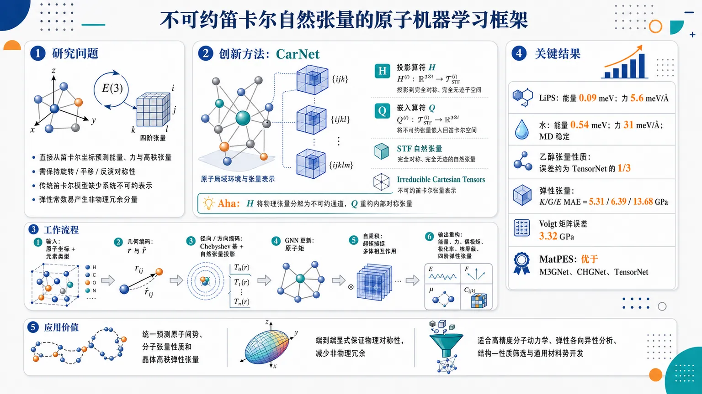
研究问题原子机器学习需要在保持旋转、平移、反演等 E(3) 对称性的同时，直接从笛卡尔坐标预测能量、力和高秩物理张量；但现有笛卡尔模型缺少系统的不可约表示框架，尤其难以处理弹性常数这类具有内部指标对称性的四阶张量，容易产生非物理冗余分量。创新方法提出 Cartesian Natural Tensor Networks（CarNet）：用“完全对称、完全无迹”的不可约笛卡尔自然张量替代球谐表示，在纯笛卡尔空间中完成单位方向向量投影、自然张量乘积、任意秩物理张量分解与重构。关键 Aha 点是构造投影算符 H 和嵌入算符 Q，将复杂物理张量拆成若干不可约自然张量通道，再重构为满足内部对称性的真实物理张量。工作流程输入原子坐标与元素类型；相对位置分解为距离 r 和单位方向 r̂；距离用 Chebyshev 径向基编码，方向投影为自然张量，元素用可学习嵌入编码；GNN 层中先构造原子矩，再通过自然张量自乘积形成超矩以捕捉多体相互作用；输出端按目标性质选择 rank-0 标量、rank-1/2 张量或高秩自然张量谱，并通过重构算符生成能量、力、偶极矩、极化率、核屏蔽或四阶弹性张量。关键结果CarNet 在多类任务达到领先或接近领先性能：LiPS 能量误差 0.09 meV、力误差 5.6 meV/Å；水能量 0.54 meV、力 31 meV/Å，分子动力学稳定且 RDF、扩散系数接近参考；乙醇中偶极矩和化学位移误差约为 TensorNet 的三分之一；弹性张量任务中 K/G/E MAE 为 5.31/6.39/13.68 GPa，Voigt 矩阵误差 3.32 GPa，优于 MatTen 并接近球张量模型 XPaiNN；MatPES 通用势上优于 M3GNet、CHGNet 和 TensorNet。应用价值该研究为材料和分子模拟提供一种不依赖球谐转换的笛卡尔等变学习框架，可统一预测原子间势、分子张量性质和晶体高秩弹性张量。它能在端到端模型中显式保证物理对称性，减少非物理冗余，适合高精度分子动力学、材料弹性各向异性分析、结构—性质筛选和通用材料势开发。第一部分：核心概览
提出 Cartesian Natural Tensor Networks（CarNet），把不可约笛卡尔自然张量系统引入原子尺度机器学习，建立从单位向量构造、张量乘积、任意秩/任意内禀对称物理张量分解与重构的完整框架。该方法在笛卡尔空间内保持 E(3)-equivariance，避免球谐表示转换，同时能预测能量、力、偶极矩、极化率、核屏蔽张量和四阶弹性常数张量，性能达到或接近领先球张量模型，填补了高秩对称张量在笛卡尔原子机器学习中的系统建模空缺。
---
第二部分：结构化快速回顾
《Atomistic Machine Learning with Irreducible Cartesian Natural Tensors》（None，）
背景
原子机器学习需要把原子坐标和元素类型转化为满足物理对称性的表示。主流高精度模型多依赖球谐函数和球张量，而笛卡尔模型虽然更贴近模拟和性质计算中的原始坐标形式，却长期缺少可系统处理不可约表示和高秩物理张量内禀对称性的统一框架。
方法
构建笛卡尔自然张量理论：自然张量定义为完全对称且任意指标迹为零的笛卡尔张量；给出从单位向量构造自然张量、自然张量乘积、以及任意秩物理张量分解/重构的投影与嵌入算符。基于此提出 CarNet，用径向基、自然张量角向表示、原子矩和超矩构造 E(3)-等变 GNN。
结果
在 LiPS、水、乙醇、晶体弹性张量和 MatPES 通用材料势任务上表现强。LiPS 测试误差达到能量 0.09 meV、力 5.6 meV/Å；水达到能量 0.54 meV、力 31 meV/Å；乙醇多项性质显著优于 TensorNet；弹性模量预测中 K/G/E MAE=5.31/6.39/13.68 GPa，Voigt 矩阵误差 3.32 GPa。
讨论
核心优势在于把笛卡尔张量的直观性、自然坐标兼容性与不可约表示的系统性结合起来，并能显式满足高秩物理张量的对称约束。CarNet 不只是势能模型，也可作为统一的结构—性质学习框架。
局限
高温水模拟仅用于稳定性验证，物理量不被期望定量准确；高秩自然张量和多层 GNN 会增加模型复杂度；MatPES 通用势中 CarNet 虽优于 M3GNet、CHGNet、TensorNet，但仍不及使用额外大规模预训练数据的 UPET。
结论
不可约笛卡尔自然张量为原子机器学习提供了替代球张量路线的严谨数学基础。CarNet 在能量/力、低秩张量和高秩弹性张量上均展示强泛化和物理一致性，扩展了笛卡尔表示在材料与分子机器学习中的适用范围。
---
第三部分：逐章节冷凝解析
Abstract
Cartesian natural tensors solve a missing irreducible framework problem
原子机器学习已能高效预测原子尺度材料行为，但直接在笛卡尔空间构建模型的路线缺少类似球张量模型中的系统性不可约表示框架。摘要明确指出现有笛卡尔尝试的瓶颈：*"While attempts have been made to construct models directly within Cartesian space, they face challenges in providing a systematic framework based on irreducible representations—a core feature of widely used spherical models."* 该工作以Cartesian Natural Tensor Networks弥补这一缺口。
CarNet is positioned as a general symmetry-preserving atomistic ML framework
提出的 Cartesian Natural Tensor Networks 被定位为通用的、保持对称性的原子机器学习框架，而非单一性质预测器。核心表述为：*"Here we propose Cartesian Natural Tensor Networks to overcome these limitations and thus offer a general, symmetry-preserving framework for atomistic machine learning."* 其对称性目标涵盖旋转、平移和反演等原子系统基本几何约束。
The theory covers construction, products, decomposition, and reconstruction
理论贡献包含三个层级：自然张量构造、自然张量乘积、以及高秩物理张量的分解与重构。摘要概括为：*"We present a theory of irreducible representations using Cartesian natural tensors, comprising their construction, their products, and a systematic scheme to decompose and reconstruct high-rank physical tensors."* 这使自然张量从单纯数学对象转化为可直接用于机器学习架构的计算工具。
Performance matches leading spherical models and extends to complex high-rank tensors
CarNet 的经验结果覆盖材料势、分子势、偶极矩、极化率、核屏蔽、弹性常数张量等任务，性能与领先球张量模型相当。摘要中的关键判断是：*"Leveraging this machinery, we develop equivariant machine learning interatomic potentials for materials and molecular systems with performance on par with leading spherical models."* 对高秩复杂对称张量的适用性由另一句支撑：*"It further captures accurate structure–property relationships for tensorial quantities ranging from low-rank dipole moments to high-rank tensors with complex symmetries, such as the elastic constant tensor."*
---
I Introduction
Atomistic ML learns properties directly from atomic structure
原子机器学习以原子坐标和化学元素为输入，直接学习材料和分子性质，输出覆盖势能、力、标量性质和张量性质。原文明确列出输入和输出范围：*"The primary inputs are the spatial coordinates of atoms and their chemical identities, while the outputs span interatomic potential energies and forces; scalar properties such as bond dissociation energies and band gaps; and tensorial quantities including dipole moments, polarizabilities, and elastic constant tensors."* 这一定义将 CarNet 的目标空间从势能拓展到一般结构—性质关系。
Quantum-trained atomistic ML offers near-ab initio accuracy at lower cost
在量子力学数据上训练的模型能以显著更低成本接近从头算精度，从而支持更大体系、更长时间尺度和更广化学空间探索。关键表述为：*"When trained on quantum-mechanical data, these models approach ab initio accuracy at a fraction of the computational cost, enabling simulations of larger systems and longer time scales, and systematic exploration across vast chemical and materials spaces."* 这一背景解释了为什么高效且对称性正确的表示具有基础意义。
Local atomic environment representation is the central bottleneck
局域环境描述是所有原子机器学习模型的核心，因为它把原始坐标和元素类型转化为机器学习可用的数值表示。原文强调：*"At the core of any atomistic ML model lies the central task of describing the local atomic environment around each atom."* 并进一步说明：*"This step is critical to any atomistic ML because it converts raw atomic coordinates and chemical identities into numerical representations that ML algorithms can process."*
Early descriptors were handcrafted structural features
早期方法依靠人工设计的结构描述符，如原子中心对称函数、Coulomb matrix 和 DeePMD descriptors，主要捕捉键长、键角等局部几何信息。原文列举：*"Early methods relied on descriptors designed to capture important structural features like bond lengths and bond angles (e.g., atom-centered symmetry functions, the Coulomb matrix, and DeePMD descriptors)."* 这些方法有效但系统性和表示理论基础有限。
State-of-the-art models rely heavily on spherical representations
当前高性能模型通常使用径向基描述距离、球谐函数描述角度，例如 SNAP、ACE、TFN、NequIP、MACE、GRACE。原文指出：*"Current state-of-the-art approaches use two key mathematical tools: polynomials and/or trigonometric functions to describe distance relationships between atoms, and spherical harmonics to capture angular relationships."* 这些方法等价于把笛卡尔坐标转换到球坐标表示：*"these methods first transform atomic structures from their Cartesian coordinates ... into spherical coordinates ... and then train the ML model in this spherical representation."*
Cartesian-space learning is physically and computationally motivated
原子结构在多数模拟和性质计算中天然以笛卡尔坐标表示，因此直接在笛卡尔空间学习有解释性和接口优势。原文动机为：*"since atomic structures are naturally described in Cartesian coordinates for most simulation methods and property calculations, there is a compelling motivation to develop methodologies that work directly in Cartesian space."* 关键目标是直接利用自然几何信息并保持物理可解释性：*"directly utilizing geometric information in its natural form while maintaining clear physical interpretability."*
Existing Cartesian atomistic ML has made progress but remains incomplete
已有笛卡尔模型包括势能模型 MTP、REANN、CACE、CAMP、ICTP，以及低秩张量预测模型 FieldSchNet、TensorNet、HotPP、TACE。原文总结：*"Considerable progress has been made in developing atomistic ML methods that operate directly in Cartesian space."* 这些工作表明笛卡尔路线可行，但还未形成完整高秩不可约张量体系。
Reducible Cartesian tensors fail to systematically enforce internal tensor symmetries
使用可约笛卡尔张量的模型，如 HotPP 和 CAMP，可以处理任意秩张量并尊重全局旋转对称性，但无法系统施加物理张量内部指标对称性。原文指出：*"models employing reducible Cartesian tensors ... naturally accommodate arbitrary-rank tensors and respect global rotational symmetry, but do not systematically enforce the internal index symmetries of physical tensors."* 典型例子是弹性常数张量的对称性：*"e.g., Cijkl=Cjikl=Cklij of the elastic constant tensor"*，否则会留下非物理冗余：*"leaving unphysical redundancies in the predicted tensors."*
Existing irreducible Cartesian models lack systematic high-rank reconstruction
采用不可约笛卡尔表示的模型，如 TensorNet、ICTP、TACE，理论上可扩展到更高秩，但实际局限于低秩性质。核心缺口是缺少高秩物理张量的系统分解和重构方案：*"models employing irreducible Cartesian representations ... could in principle be extended to higher ranks, but in practice remain limited to low-rank tensorial properties due to the absence of a systematic scheme for the decomposition and reconstruction of physical tensors using irreducible Cartesian building blocks."*
Natural tensors are intrinsic geometric objects with broad physical usage
自然张量不是普通任意张量，而是由空间几何性质决定的内禀构造。定义性表述为：*"A natural tensor is one whose components are determined by the geometric properties of the space in which it lives and is, therefore, an intrinsic geometric construction rather than a regular tensor."* 应用背景覆盖流体、电磁学和机器学习：*"Natural tensors find wide application in fluid physics ... electromagnetism ... and increasingly in machine learning."*
The work adapts irreducible Cartesian natural tensor theory to atomistic ML
理论目标是将不可约笛卡尔自然张量用于原子机器学习，并发展任意物理张量分解/重构方案。原文概括为：*"we adapt the theory of irreducible Cartesian natural tensors for atomistic ML, further develop a systematic scheme for the decomposition and reconstruction of arbitrary physical tensors, and provide the mathematical tools and software needed to apply this framework to atomic systems."*
CarNet is E(3)-equivariant and applicable to potentials and high-rank properties
CarNet 适用于机器学习原子间势和高秩张量结构—性质关系。对称性定位为：*"Our Cartesian Natural Tensor Networks (CarNet) is E(3)-equivariant; i.e., it respects the three-dimensional rotational, translational, and inversion symmetries inherent to atomic systems."* 实验范围包括材料、分子、周期表泛化与高秩张量性质：*"CarNet achieves accuracy comparable to leading spherical-tensor approaches across both materials and molecular systems, with universal models that generalize across the periodic table."*
---
II Results
II.1 Cartesian Natural Tensor Theory
Natural tensors are fully symmetric and traceless Cartesian tensors
自然张量被严格定义为完全对称且任意两指标收缩为零的笛卡尔张量。原文定义为：*"A natural tensor is a fully symmetric Cartesian tensor whose traces vanish on any pair of indices."* 对 rank-(n) 张量 (Xᵢ_₁ᵢ_₂dₒₜₛ ᵢ_ₙ)，对称性要求任意排列不改变分量；无迹性要求 (δᵢ_ₐᵢ_bXᵢ_₁dₒₜₛ ᵢ_ₐdₒₜₛ ᵢ_bdₒₜₛ ᵢ_ₙ=0)。
Rank-2 Cartesian tensors decompose into isotropic, antisymmetric, and symmetric traceless parts
任意二阶张量 (Tᵢⱼ) 可分解为三个自然张量部分：rank-0 等方部分、rank-1 反对称部分、rank-2 对称无迹部分。原文指出：*"any rank-2 Cartesian tensor T can be decomposed into ... the isotropic, antisymmetric, and symmetric parts, respectively."* 物理意义明确：*"if T is a stress tensor, the isotropic part represents the hydrostatic pressure ... the antisymmetric part is related to torques ... and the symmetric part represents the shear stress."*
A rank-n natural tensor carries a 2n+1 dimensional irreducible SO(3) representation
三维中 rank-(n) 自然张量虽有 (3ⁿ) 个分量，但仅有 (2n+1) 个独立自由度。原文明确量化：*"In three dimensions, a rank-n natural tensor Xn has 3n components, but only 2n+1 of these are independent."* 表示论意义是：*"A rank-n natural tensor Xn furnishes a 2n+1-dimensional irreducible representation of the special orthogonal group SO(3)."* 这使其特别适合旋转等变机器学习：*"This makes natural tensors particularly well-suited for atomistic ML, where rotational equivariance is crucial."*
Natural tensors from unit vectors are constructed by symmetric polyadics and trace removal
从单位向量 (hatmathbf r) 构造 rank-(n) 自然张量需两步：先形成对称多重张量 (mathbf U=hatmathbf røtⁱmes ⁿ)，再用投影张量 (mathbf H) 去迹。原文写道：*"Given a unit vector r̂, a rank-n natural tensor Xn can be constructed in two steps."* 第一阶段：*"Form the rank-n tensor U=r⊗n=r̂⊗r̂⊗⋯⊗r̂."* 第二阶段：*"Project U into the symmetric traceless subspace via Xn=H⊙nU."*
The projection tensor H is the Cartesian analogue of spherical harmonics
投影张量 (mathbf H) 只由 Kronecker delta 组合构成，在笛卡尔空间中生成 SO(3) 不可约表示。原文将其与球谐函数类比：*"The projection tensor H is analogous to spherical harmonics that generate irreducible representations of SO(3) from a unit vector, but it is expressed entirely in Cartesian form."* 例如 (n=2) 时，(Xₖ_₁ₖ_₂=rₖ_₁rₖ_₂-frac13δₖ_₁ₖ_₂rᵢ_₁rᵢ_₁)，即对称无迹二阶方向张量。
Natural tensor products follow angular-momentum-like rank selection rules
两个自然张量 (mathbf Xₗ_₁) 和 (mathbf Yₗ_₂) 的乘积可分解为 rank (l₃) 的自然张量，秩满足 (|l₁₋ₗ₂|łe l₃łe l₁₊ₗ₂)。原文表述为：*"The tensor product between two natural tensors can be expressed as a direct sum of a set of natural tensors."* 并强调这与球张量类似：*"their product ... is a tensor whose rank lies in the range |l1−l2|≤l3≤l1+l2 (analogous to spherical tensors)."*
The natural tensor product projection tensor acts like Clebsch–Gordan coefficients
自然张量乘积先进行普通张量积，再对结果对称化并去迹。原文说明：*"To obtain Zl3, we can first compute the ordinary tensor product W=Xl1⊗Yl2, and then symmetrize W and remove the traces."* 所得投影张量 (mathbf H) 类比球张量中的 Clebsch–Gordan 系数：*"Here, the projection tensor H is analogous to the Clebsch–Gordan coefficients for spherical tensor product."*
Higher-rank physical tensor decomposition is difficult because candidates become linearly dependent
二阶张量分解简单，但高秩张量会产生多个线性相关候选自然张量，必须筛选独立基。原文指出：*"Unlike the rank-2 case ... higher-rank tensors yield multiple linearly dependent decomposition candidates, which should be carefully selected to form a linearly independent basis set of natural tensors."* 例如：*"a generic rank-4 tensor yields six rank-3 natural tensor candidates in its decomposition spectrum, but only three of them are linearly independent."*
Internal symmetries can eliminate entire natural tensor sectors
物理张量的指标对称性会约束自然张量分解形式。弹性常数张量 (mathbf C) 满足 (Cᵢⱼₖₗ=Cⱼᵢₖₗ=Cₖₗᵢⱼ)，导致 rank-3 候选全部消失。原文给出具体例子：*"The rank-4 elastic constant tensor C has symmetries Cijkl=Cjikl=Cklij, under which, all associated rank-3 candidates vanish."* 这正是预测弹性张量时必须内置物理对称性的原因。
A general arbitrary-rank and arbitrary-symmetry decomposition method is introduced
已有研究处理过特定秩物理张量，Coope 等提出过更一般思路，但任意秩与任意对称性的通用方法仍缺失。原文判断为：*"However, a general method for tensors of arbitrary rank and symmetry remains unavailable (to our knowledge)."* 新方法包含三步：构造映射张量 (mathbf G)，筛选唯一线性独立映射张量，构造分解投影 (mathbf H) 和嵌入张量 (mathbf Q)。
Mapping tensor G connects physical tensor space and natural tensor space
第一步构造 rank-((m+n)) 映射张量 (mathbf G)，用于 rank-(n) 物理张量空间与 rank-(m) 自然张量空间之间的映射。原文描述为：*"First, create the rank-(m+n) tensor G to map between the rank-n physical tensor space and the rank-m natural tensor space."* 该 (mathbf G) 由 Kronecker delta 的不同指标分配方式形成多个候选。
QR factorization and symmetry-informed elimination select independent mappings
第二步通过 QR 分解识别线性独立候选，并根据物理张量内禀对称性删除等价映射。原文给出方法：*"identify a subset of Ng unique linearly independent mapping tensors from all N candidates ... This can be achieved via a QR factorization, followed by symmetry-informed elimination according to the intrinsic symmetries of the physical tensor."* 对 rank-3 且 (Tᵢ_₁ᵢ_₂ᵢ_₃=Tᵢ_₁ᵢ_₃ᵢ_₂) 的例子，(mathbf G²) 和 (mathbf G³) 收缩结果相同，因此只保留 (mathbf G¹) 和 (mathbf G²)。
Projectors H and embeddings Q enable bidirectional conversion
第三步构造分解投影 (mathbf H) 和嵌入张量 (mathbf Q)，实现普通物理张量与自然张量表示的双向转换。原文说明：*"construct the decomposition projector H and embedding tensor Q to map between a physical tensor with arbitrary rank and symmetry and its natural representation."* 分解公式为 (Xₘ^p=Hₘ₊ₙ^pødotⁿTₙ)，重构公式为 (Tₙ₌sumₘ₌₀ⁿsumₚ₌₁N_gQₘ₊ₙ^pødot^mXₘ^p)。
The theory contributes both a missing general scheme and efficient explicit tensors
理论贡献有两项：任意秩/任意对称性张量的自然张量分解重构，以及只由 Kronecker delta 和 Levi–Civita 符号构成的显式投影张量。原文总结为：*"The contributions of our theoretical developments are twofold."* 第一项：*"a systematic approach to decomposing and reconstructing physical tensors of arbitrary rank and symmetry using natural tensors."* 第二项：*"explicit expressions for the projection tensors ... that consist of only Kronecker deltas and Levi–Civita symbols, which can be precomputed and stored, enabling efficient natural tensor operations."*
---
II.2 The CarNet Model
CarNet combines natural tensor operations with moment-tensor ideas
CarNet 建立在自然张量三种基本操作与 MTP/CAMP 中的矩张量思想之上，用于构造等变原子机器学习模型。原文定位为：*"Leveraging the three fundamental operations of natural tensors and the concept of moment tensors as introduced in MTP and CAMP, we propose CarNet: a theoretically grounded framework for constructing equivariant atomistic ML models."*
Input structures are encoded by radial Chebyshev bases and angular natural tensors
相对位置向量 (mathbf r) 被分解为距离 (r) 与单位方向 (hatmathbf r=mathbf r/r)。距离用第一类 Chebyshev polynomials 展开，方向用自然张量表示。原文说明：*"The scalar distance r is then expanded into R using a set of radial basis, specifically Chebyshev polynomials of the first kind."* 角向信息处理为：*"Angular information is incorporated through r̂, which is transformed into natural tensors X."*
Atomic numbers are represented by learnable embeddings
元素类型 (z) 通过可学习嵌入生成初始原子特征 (mathbf h)。原文表述为：*"Atomic numbers z are embedded into learnable initial atom features h, completing the initial encoding of the atomic structure."* 因此 CarNet 的初始表示同时包含径向、角向和化学身份信息。
Each GNN layer builds atomic moments and hyper moments
CarNet 的核心是多层 GNN，每层先构造原子矩 (mathbf M)，再通过自张量积构造超矩 (mathbf H)。原文写道：*"Within each GNN layer, the atomic moment M is constructed as a tensor product involving radial function R, current atom features h, and the angular component X."* 随后：*"a self-tensor product is performed on M, yielding the hyper moment H that encodes many-body interactions."*
Natural tensor products preserve irreducibility throughout message passing
原子矩和超矩都通过自然张量乘积构造，因此保持自然张量形式。原文强调：*"Both steps employ the natural tensor product formalism introduced above, ensuring that M and H are natural tensors."* 这意味着网络内部特征始终处在不可约笛卡尔表示空间内，而不是一般可约张量空间。
Two to three GNN layers are usually sufficient
经验上，CarNet 不需要很深的网络即可获得高精度。原文给出：*"Empirical results (below) indicate that typically two to three GNN layers suffice to attain high predictive accuracy."* 后续 LiPS、水和 MatPES 表中也显示 2–3 层即可显著提升结果。
Output heads select natural tensors according to target tensor rank and symmetry
最终阶段从原子特征中选择目标所需自然张量。势能任务只需 rank-0 标量；高秩性质则根据分解重构谱选择对应自然张量并重构物理张量。原文说明：*"For interatomic potentials, this process involves extracting the rank-0 natural tensor (scalar)."* 对高秩张量：*"the relevant natural tensors are extracted from atom features according to their decomposition and reconstruction spectrum, and the target physical tensor is reconstructed from these components."*
---
II.3 Bulk LiPS and Water
CarNet is benchmarked on periodic LiPS and bulk water potentials
CarNet 首先用于周期体系机器学习势，包括固态电解质 LiPS 和液态水。原文说明：*"We first apply CarNet to develop interatomic potentials for periodic systems—specifically, inorganic lithium phosphorus sulfide (LiPS) ... and bulk liquid water."* 评估指标为测试集能量和力的 MAE 或 RMSE，并与 NequIP、MACE、CACE、CAMP 等模型比较。
CarNet achieves the best reported LiPS energy and force errors
LiPS 任务中，CarNet 两层模型能量 MAE 0.11 meV、力 MAE 6.4 meV/Å；三层模型进一步降至能量 0.09 meV、力 5.6 meV/Å。对比 NequIP 为 0.12 meV / 7.7 meV/Å，CAMP 为 0.12 meV / 7.4 meV/Å。原文判断：*"For both systems, CarNet configured with two GNN layers achieves the lowest reported errors ... increasing to three layers further reduces errors."*
CarNet achieves leading water RMSEs, especially for forces
水数据集中，CarNet 两层模型能量 RMSE 0.54 meV、力 RMSE 34 meV/Å；三层模型能量仍为 0.54 meV，力降至 31 meV/Å。对比 MACE 为 0.63 meV / 36 meV/Å，CACE 为 0.59 meV / 47 meV/Å，CAMP 为 0.59 meV / 34 meV/Å。表格说明：*"For water, root-mean-square errors (RMSEs) of energy and forces are reported."*
Low test errors are treated as insufficient for MD reliability
能量和力误差低并不自动保证分子动力学稳定性，因为不物理的力会导致轨迹漂移或崩溃。原文强调：*"While low errors in energy and forces are necessary, they are not sufficient to guarantee the physical reliability of molecular dynamics (MD) simulations; unphysical force predictions can lead to instability or drift during simulations despite good MAEs."* 因此进一步检验 RDF、MSD、扩散系数和高温稳定性。
LiPS MD is stable for five independent 300 ps NVT trajectories
LiPS 进行 5 次不同初速度的 NVT 分子动力学，每次时间步长 1 fs，总时长 300 ps。原文给出：*"For LiPS, five MD simulations with different initial velocities were carried out using a timestep of 1 fs over a total duration of 300 ps."* 结果稳定：*"No instabilities or trajectory collapse were observed for all MD runs."*
LiPS RDF matches AIMD and Li+ diffusion agrees with AIMD
LiPS 的 RDF 与 AIMD 结果接近，Li(⁺) 的 MSD 呈线性，表明正常扩散。原文描述：*"The RDF ... predicted by CarNet closely matches AIMD simulation results."* 扩散系数为 (D=(1.18±0.19)×10⁻⁵ cm²/s)，与 AIMD 的 (1.37×10⁻⁵ cm²/s) 一致：*"The calculated diffusion coefficient from the five MD runs is D=(1.18±0.19)×10−5 cm2/s, consistent with AIMD estimates of D=1.37×10−5 cm2/s."*
Water RDF and diffusion reproduce experimental and AIMD references
300 K 水的 O–O RDF 与 X 射线和中子衍射数据吻合。原文写道：*"The RDF of oxygen-oxygen pairs in water at 300 K agrees well with X-ray and neutron diffraction data."* 预测扩散系数为 (2.68×10⁻⁵ cm²/s)，几乎等于 AIMD 的 (2.67×10⁻⁵ cm²/s)：*"The predicted diffusion coefficient is D=2.68×10−5 cm2/s at 300 K as compared with AIMD results of D=2.67×10−5 cm2/s."*
High-temperature water simulations remain stable up to 2000 K
为测试稳定性，水体系被模拟到 2000 K，MD 仍稳定，MSD 仍呈线性。原文说明：*"we performed MD simulations at high temperatures up to 2000 K."* 结果为：*"At high temperatures, the MD simulations remained stable, and the MSD exhibited linear behavior."* 但高温物理量不被视作定量准确：*"We do not expect physical quantities ... at high temperatures to be quantitatively accurate; this example serves only to demonstrate the stability of CarNet."*
---
II.4 Molecular Ethanol
Ethanol tests simultaneous scalar, vector, rank-2 structural, and rank-2 atomic tensor learning
乙醇数据集包含能量、力，以及三类张量性质：偶极矩 (bmμ)、极化率 (bmα)、核屏蔽张量 (bmσ)。原文说明：*"the ethanol dataset includes three tensorial properties: dipole moment μ, polarizability α, and nuclear shielding tensor σ."* 偶极矩是分子级 rank-1 结构张量，极化率是分子级 rank-2 结构张量，核屏蔽是每个原子的 rank-2 原子张量：*"the nuclear shielding σ is a rank-2 atomic tensor; i.e., each atom in the molecule has a shielding tensor that is sensitive to the local electronic environment."*
Chemical shift is derived as one-third of the shielding trace
核化学位移 (δ) 是由核屏蔽张量迹导出的标量：(δ=Tr(bmσ)/3)。原文给出：*"The nuclear chemical shift is a scalar property derived from σ as δ=Tr(σ)/3."* 这使同一模型可同时学习张量本身及其派生标量。
Multitask CarNet improves all reported ethanol properties over prior models
多任务 CarNet 使用共享 backbone 和多个 output heads 同时学习所有性质，在表 2 所列任务上均达到最高精度。原文总结：*"Using a multitask learning framework with a shared backbone and multiple output heads to concurrently learn all properties, CarNet achieves the highest accuracy across all tasks."* 数值上，多任务 CarNet 达到能量 0.0063 kcal/mol、力 0.034 kcal mol(⁻¹) Å(⁻¹)、偶极矩 0.0011 D、极化率 0.0051 Bohr(³)、总化学位移 0.044 ppm、总屏蔽张量 0.065 ppm。
CarNet strongly outperforms TensorNet on dipole and chemical shift
TensorNet 的误差为能量 0.008 kcal/mol、力 0.058 kcal mol(⁻¹) Å(⁻¹)、偶极矩 0.003 D、极化率 0.007 Bohr(³)、化学位移 0.139 ppm。CarNet 多任务偶极矩 0.0011 D、化学位移 0.044 ppm，约为 TensorNet 的三分之一。原文明确写道：*"the errors in predicting the dipole moment μ and nuclear chemical shift δall are approximately 3× smaller than those from TensorNet."*
Single-property CarNet with L=3 gives the best ethanol results
单任务训练中，最大自然张量秩 (L=3) 的 CarNet 达到能量 0.0048 kcal/mol、力 0.022 kcal mol(⁻¹) Å(⁻¹)、偶极矩 0.0007 D、极化率 0.0063 Bohr(³)、化学位移 0.031 ppm、屏蔽张量 0.047 ppm。(L=2) 对应误差为 0.0054、0.027、0.0009、0.0076、0.037、0.057。原文指出：*"Models employing natural tensor representations with a maximum rank of L=3 outperform their L=2 counterparts."*
High-rank natural tensors are empirically important for complex interactions
(L=3) 优于 (L=2)，说明高秩自然张量有助于捕捉复杂多体相互作用。原文解释：*"underscoring the critical role of high-rank tensors in capturing complex interatomic interactions."* 这也指出只使用 rank-1 或 rank-2 表示的模型存在上限：*"highlighting limitations of models that rely on tensor representations up to rank-1 and rank-2 (e.g., FieldSchNet and TensorNet)."*
---
II.5 Crystal Elastic Constant Tensor
Elastic constant tensor prediction is a high-rank benchmark unavailable to prior Cartesian atomistic ML
弹性常数张量是 rank-4 张量，最多有 21 个独立分量，用于表征材料线性弹性响应。原文指出：*"Currently, no Cartesian atomistic ML methods can model the full (rank-4) elastic constant tensor (with up to 21 independent components depending on crystal symmetry)."* 这使该任务成为检验 CarNet 高秩张量能力的核心实验。
The dataset spans all seven crystal systems and 84 elements
弹性数据集覆盖全部 7 个晶系和 84 种化学元素，具有显著的对称性、组成和结构复杂性。原文写道：*"The dataset encompasses structures spanning all seven crystal systems, involving 84 chemical elements, thereby presenting substantial variability in symmetry, composition, and structural complexity."* 这意味着模型需跨晶体对称性和化学空间泛化。
CarNet directly predicts the full elastic tensor while enforcing physical constraints
CarNet 直接预测完整 rank-4 弹性常数张量，并内在满足坐标系无关性和晶体对称性遵从。原文说明：*"CarNet directly predicts the full elastic constant tensor while inherently satisfying the two fundamental physical constraints: (1) frame indifference ... and (2) crystal symmetry adherence."* 其中 frame indifference 对应刚性旋转下的等变性：*"Frame indifference ensures the predicted tensor is equivariant under rigid rotations of the coordinate system."*
Scalar moduli are derived through Voigt matrix and Hill averaging
从预测的 rank-4 张量得到 Voigt stiffness matrix (C)，再通过 Hill averaging scheme 计算体模量 (K)、剪切模量 (G)、杨氏模量 (E)。原文描述：*"From the predicted rank-4 elastic constant tensor, we can obtain the Voigt stiffness matrix C."* 随后：*"Scalar elastic moduli such as the bulk modulus K, shear modulus G, and Young’s modulus E are derived from C using the Hill averaging scheme."*
CarNet achieves strong elastic modulus accuracy over 84 elements
CarNet 的 MAE 为 (K=5.31) GPa、(G=6.39) GPa、(E=13.68) GPa。原文量化：*"CarNet achieves MAEs of 5.31 for K, 6.39 for G, and 13.68 for E, over the 84 elements in the dataset."* 参考值范围很宽：*"values span from near 0–400 GPa for K and G, and up to ∼800 GPa for E."*
CarNet improves over MatTen and matches XPaiNN-level spherical models
表 3 中 AutoMatminer 为 9.84/9.27/22.10 GPa，MatSca 为 7.32/8.63/19.87 GPa，MatTen 为 7.37/8.38/20.59 GPa，XPaiNN 为 5.40/6.33/14.74 GPa，CarNet 为 5.31/6.39/13.68 GPa。原文指出：*"The errors are ∼18% lower than those by MatTen and are comparable to those by XPaiNN, both of which are spherical models specifically designed for elastic constant tensors."*
Full Voigt matrix prediction is particularly accurate
CarNet 的 (6×6) Voigt 矩阵逐分量 MAE 为 3.32 GPa，优于 MatTen 的 4.52 GPa。表注说明：*"MAE of C is calculated component-wise."* 该结果强调 CarNet 不仅能预测派生标量模量，也能准确预测完整张量分量。
Accuracy remains consistent across seven crystal systems despite imbalance
按晶系分析，归一化误差在七个晶系间相近；归一化方式为 MAE 除以参考值的 MAD。原文说明：*"The relative error, MAE normalized by the mean absolute deviation (MAD) of the reference values, is comparable among all seven crystal systems."* 即使数据集偏向高对称晶体，模型仍泛化良好：*"Despite dataset imbalance ... favoring high-symmetry over low-symmetry crystals ... CarNet demonstrates effective transferability and generalization."*
Full elastic tensor enables directional anisotropy analysis
预测完整弹性张量后，可以计算任意方向的杨氏模量 (E_d)，用于分析弹性各向异性和方向刚度变化。原文指出：*"the directional Young’s modulus Ed can be computed for all orientations, enabling comprehensive evaluation of elastic anisotropy and directional stiffness variations."* CaS 的方向杨氏模量预测中清晰反映 rock-salt 结构的立方对称性：*"The cubic symmetry of rocksalt CaS is clearly reflected in the predicted Ed."*
---
II.6 Universal MLIP for Materials
CarNet is evaluated as a universal materials interatomic potential on MatPES r2SCAN
通用机器学习原子间势任务使用 MatPES r2SCAN test set，评估能量、力和应力 MAE，并报告模型参数量。表题明确为：*"MAEs for universal MLIPs on the MatPES r2SCAN test set."* 指标单位分别为 meV/atom、meV/Å、GPa，模型大小以百万参数计：*"Model size is measured by the number of parameters in millions."*
CarNet improves with layer depth but remains smaller than very large pretrained UPET
CarNet 1 层模型：能量 39 meV/atom、力 175 meV/Å、应力 0.897 GPa、参数 1.60M。2 层模型：27 / 141 / 0.717，参数 3.30M。3 层模型：23 / 130 / 0.642，参数 7.80M。这显示层数增加带来系统改进，呼应前文“两到三层足够高精度”的经验结论。
CarNet outperforms M3GNet, CHGNet, and TensorNet on MatPES without extra pretraining information in the table
对比模型中，M3GNet 为 44 / 210 / 0.970，CHGNet 为 30 / 156 / 0.735，TensorNet 为 34 / 163 / 0.754。CarNet 3 层的 23 / 130 / 0.642 全面更优。表格说明部分结果来源：*"M3GNet, CHGNet, and TensorNet results are from Ref. [54]."*
UPET is most accurate but uses much larger model size and additional data
UPET 达到 12 meV/atom、40 meV/Å、0.201 GPa，但参数量高达 192.89M，且使用额外预训练数据。表注强调：*"MACE and UPET are developed using additional data in addition to MatPES; both are pretrained on the OMat24 dataset and then finetuned on MatPES."* 因此 CarNet 的优势在于较小模型下的竞争力，而非绝对最低误差。
Accuracy–efficiency trade-off is explicitly assessed via MD timing
图 5 评估不同通用 MLIP 的精度—效率权衡，使用不同大小水体系 MD 的每步耗时并按原子数归一化。图注给出方法：*"We measure the time by running MD simulations of bulk water systems with different sizes and report the average time per MD step normalized by the number of atoms."* 图 5b、5c 分别比较 384 atoms 时能量和力 MAE 与时间的关系：*"Test set MAE of energy versus time at the system size of 384 atoms"* 与 *"Test set MAE of forces versus time."*
---
第四部分：深度理解与语言支持
1. 术语解析
Irreducible representation
学术含义是群作用下不能再分解为更小独立不变子空间的表示。语境中，rank-(n) 自然张量的 (2n+1) 个独立分量在 SO(3) 旋转下相互混合，但不能拆成更小的旋转封闭块。原文表达为 *"contains no proper nontrivial SO(3)-invariant subspaces"*。微妙点在于：irreducible 不是“分量少”，而是“变换结构不可再约化”。
Natural tensor
在这里不是泛指“自然的张量”，而是严格的数学对象：完全对称、完全无迹的笛卡尔张量。其自然性来自空间几何结构，而不是任意坐标分量。原文说 *"an intrinsic geometric construction rather than a regular tensor"*，强调它不是普通 rank-(n) 张量的任意子集，而是与 SO(3) 不可约表示对应的几何对象。
Frame indifference
常译为标架无关性或坐标系无关性。含义是物理预测不能依赖观察者选择的坐标轴；刚性旋转坐标系时，张量分量应按张量变换规则等变，而标量不变。它比“rotation invariance”更细：弹性张量不是旋转后数值完全不变，而是按四阶张量规则变换。
Internal index symmetry
指物理张量自身指标之间的置换对称性，不等同于空间旋转对称性。例如弹性常数张量 (Cᵢⱼₖₗ=Cⱼᵢₖₗ=Cₖₗᵢⱼ)。这种对称性来自应变张量对称、能量二阶导数对称等物理结构。模型若只保证旋转等变，仍可能预测出违反这些指标置换关系的冗余分量。
Decomposition and reconstruction spectrum
语境中指一个物理张量可分解成哪些 rank 的自然张量、每个 rank 有多少独立拷贝，以及如何从这些自然张量重构原张量。它类似球张量中的角动量通道分解，但在笛卡尔自然张量语言中表达。复杂点在于同一 rank 可能有多个候选，而这些候选可能线性相关或被物理对称性消去。
---
2. 疑难查证
为什么“对称无迹张量”对应 SO(3) 不可约表示？
三维普通 rank-(n) 笛卡尔张量有 (3ⁿ) 个分量，其中包含很多可分解的旋转行为。例如二阶张量可以拆为：
- trace 标量：1 个自由度，对应 (l=0)；
- antisymmetric 部分：3 个自由度，可等价为伪向量，对应 (l=1)；
- symmetric traceless 部分：5 个自由度，对应 (l=2)。
自然张量保留的正是“最高角动量”式的对称无迹部分。rank-(n) 对称无迹张量自由度为 (2n+1)，与球谐函数 (Yₙₘ) 的 (m=-n,dots,n) 数量一致。因此它们是同一 SO(3) 不可约表示的不同基底：球谐函数是球坐标/复数或实球谐基，笛卡尔自然张量是笛卡尔坐标/张量基。
为什么普通笛卡尔张量预测高秩性质会产生“非物理冗余”？
以弹性常数张量为例，普通四阶张量 (Cᵢⱼₖₗ) 在三维有 (3⁴⁼⁸¹) 个分量。但弹性理论要求多个对称性，最终一般各向异性材料最多只有 21 个独立分量。如果模型直接输出 81 个分量，即使整体旋转等变，也可能出现 (Cᵢⱼₖₗ≠ Cⱼᵢₖₗ) 或 (Cᵢⱼₖₗ≠ Cₖₗᵢⱼ)。这些额外自由度没有物理意义，会浪费模型容量，并可能导致下游计算，如 Voigt 矩阵、方向模量、稳定性判断，出现不一致。
为什么需要分解和重构，而不是直接预测张量所有分量？
直接预测所有分量的问题是很难同时保证：
- 旋转下按正确张量规则变换；
- 内部指标对称性正确；
- 不产生线性相关冗余；
- 可适用于任意秩张量。
自然张量分解把复杂物理张量拆成若干不可约通道，每个通道在旋转下行为明确；重构算符 (mathbf Q) 再把这些通道组合回满足物理对称性的普通张量。这类似“先在正确的表示空间里学习，再映射回物理量”。
为什么 CarNet 可以和球张量模型性能相当？
球张量模型利用球谐函数和 Clebsch–Gordan 系数实现不可约表示和角动量耦合。CarNet 用笛卡尔自然张量和由 Kronecker delta / Levi–Civita 符号构造的投影张量实现同样的表示论功能。两者底层数学都在处理 SO(3) 不可约表示，只是选择的基不同。因此 CarNet 不是放弃球张量模型的核心优势，而是在笛卡尔基中复现这些优势，并额外获得对物理张量指标结构更直接的处理方式。
---
第五部分：创新评估与关联
1. 创新性判断
相对于近年球张量模型的新颖性
过去 2–5 年中，NequIP、MACE、XPaiNN、MatTen 等模型主要依赖球谐函数、球张量通道和 Clebsch–Gordan 耦合来实现旋转等变。它们在势能和张量性质上表现强，但通常需要把笛卡尔坐标转换到球表示。CarNet 的新颖性在于：在纯笛卡尔张量语言中提供等价的不可约表示和张量耦合机制，避免把角向信息完全交给球谐基表达。
相对于近年笛卡尔模型的新颖性
已有笛卡尔模型分两类：
- MTP、CAMP、HotPP 等可处理较高秩或任意秩张量，但多使用可约张量，难以系统施加内部指标对称性；
- TensorNet、ICTP、TACE 等采用不可约笛卡尔表示，但实际主要处理低秩性质，缺少任意秩物理张量分解/重构流程。
CarNet 解决了这两类路线之间的断裂：既保持不可约性，又系统支持高秩、复杂内禀对称张量。
最核心的科学创新点
最核心创新不是单个网络结构，而是任意秩/任意内禀对称物理张量与不可约笛卡尔自然张量之间的可计算双向映射。这一点由三部分组成：
- 自然张量构造投影；
- 自然张量乘积投影；
- 物理张量分解投影 (mathbf H) 与重构嵌入 (mathbf Q)。
这使得 rank-4 弹性常数张量这类复杂对象可以在端到端机器学习中被物理一致地预测。
解决的前人未解决问题
解决了三个具体问题：
- 笛卡尔空间缺少系统不可约表示框架：CarNet 给出自然张量构造和乘积规则；
- 高秩物理张量缺少通用分解/重构机制：提出适用于任意 rank 和 symmetry 的 QR + symmetry-informed elimination + projector/embedding 方法；
- 弹性常数张量等复杂张量难以由 Cartesian atomistic ML 完整建模：实验中直接预测 full rank-4 elastic tensor，并满足 frame indifference 和 crystal symmetry adherence。
实证创新支撑
创新不止理论形式化，也通过多类任务验证：
- 势能/力：LiPS、水中达到或优于 NequIP、MACE、CACE、CAMP；
- 分子张量性质：乙醇中偶极矩和化学位移误差约为 TensorNet 的三分之一；
- 高秩材料张量：弹性模量误差低于 MatTen 约 18%，Voigt 矩阵 MAE 达 3.32 GPa；
- 通用势：MatPES 上 3 层 CarNet 优于 M3GNet、CHGNet、TensorNet，并以远小于 UPET 的参数量取得竞争表现。
领域地位
CarNet 可被视为连接两条技术路线的桥梁：一端是球张量等变网络的严格表示论，另一端是笛卡尔坐标在原子模拟和张量物理量中的自然表达。其主要影响在于把笛卡尔原子机器学习从“可用的工程描述符”推进到“可系统处理不可约表示和高秩物理张量的理论框架”。
-
20
📊 含图深析
📄 摘要：提出视觉引导的 PINN 框架用于水厂混凝剂剂量实时优化。针对浊度和絮凝度因聚集、沉降产生物理延迟的问题，引入实时传感与视觉信息刻画絮凝—混凝内部动力学，以减少传统控制的滞后反应。
💡 亮点：视觉 PINN 用图像和传感数据提前感知絮凝—混凝过程。该框架把物理延迟显著的水处理控制问题转化为实时状态估计与剂量优化。
📖 展开分析 + 配图
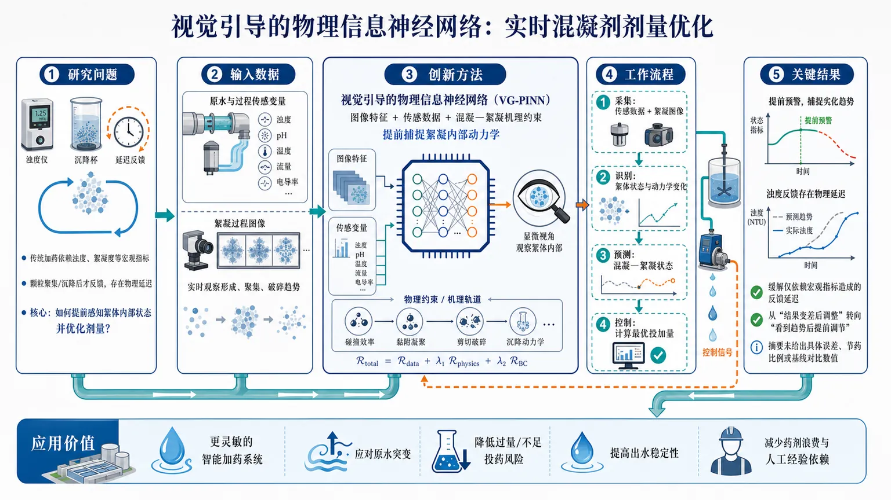
研究问题水厂混凝剂投加长期依赖浊度、絮凝度等宏观水质指标进行滞后反馈控制；这些指标要等颗粒聚集、沉降后才明显变化，导致投药调整像“看见结果后才刹车”，难以及时应对原水水质波动。核心问题是：如何在絮凝过程尚未完全反映到浊度指标前，实时感知絮体内部状态并提前优化混凝剂剂量。创新方法提出“视觉引导的物理信息神经网络”框架，将水处理传感器数据与絮凝图像信息共同输入模型；图像像一只实时观察絮体形成、聚集、破碎状态的“显微眼睛”，物理约束则像控制模型行为的“机理轨道”，使神经网络不仅拟合历史数据，还遵循混凝—絮凝过程规律。Aha 点在于用视觉信息提前捕捉絮凝内部动力学，弥补传统浊度反馈的时间延迟。工作流程输入端采集原水/处理过程传感数据与絮凝过程图像；视觉模块识别絮体状态和内部动力学变化；物理信息神经网络融合图像特征、传感变量与过程机理约束，建立混凝—絮凝状态预测模型；控制模块根据预测结果实时计算最优混凝剂投加量；输出端向水厂加药系统提供提前调节的剂量建议。关键结果论文摘要表明，该框架可用于水处理厂混凝剂剂量的实时优化；通过融合传感数据和图像信息，模型能够捕捉絮凝过程内部动力学，缓解仅依赖浊度、絮凝度等宏观指标造成的物理延迟；控制思路从“等出水指标变差后再调整”的滞后反馈，转向“看到絮体变化趋势后提前调节”。具体数值性能提升、对比基线、误差指标和节药比例未在摘要中给出。应用价值该研究可为水厂构建更灵敏的智能加药系统，在原水水质突变时更早发现絮凝状态异常，减少过量或不足投药风险；有助于提高出水稳定性、降低药剂浪费、减少人工经验依赖，并推动传统水处理厂从经验反馈控制升级为视觉感知与机理约束驱动的实时自主优化控制。核心概览
本文提出一种视觉引导的物理信息神经网络（PINN）框架，用于水处理厂混凝剂剂量的实时优化控制，属于智能水处理与过程控制方向。
方法要点
- 采用物理信息神经网络（PINN）建模混凝-絮凝过程。
- 引入实时传感数据与视觉信息，辅助表征絮凝-混凝内部动力学。
- 针对浊度、絮凝度等宏观指标存在物理延迟的问题，尝试减少控制滞后。
- 框架目标是从传统依赖滞后指标的反应式控制，转向更实时的剂量优化。
- 具体视觉特征、PINN结构、物理方程形式与训练细节，摘要未详述。
关键结果
- 摘要明确称该框架可用于水处理厂混凝剂剂量实时优化。
- 摘要指出视觉与实时传感信息可用于表征絮凝-混凝内部动力学。
- 摘要强调该方法旨在缓解由颗粒聚集、沉降导致的浊度和絮凝度响应延迟。
- 是否在实际水厂或仿真中验证、优化效果幅度、实时性指标等，摘要未详述。
创新性判断
- 可能的新颖点在于将视觉信息与PINN结合，用于水处理混凝剂剂量优化，而非仅依赖浊度等滞后宏观指标。
- 相比传统数据驱动或规则控制方法，该框架可能通过物理约束增强模型对混凝-絮凝动力学的表达能力。
- 相比单纯传感器反馈控制，视觉引导可能提供更早期、更细粒度的絮体状态信息；但具体视觉机制摘要未详述。
- 创新性判断基于摘要推断，论文是否相对已有视觉监测、PINN水处理控制工作具有实质突破，需全文和实验对比才能确定。
-
21
📄 摘要：解析和数值研究改进 SSH 链中 Jackiw-Rebbi 零模的隧穿诱导杂化与相干动力学。模型含 k=0 二次型闭隙点和 k=±π/4a Dirac 型闭隙点；前者因无质量反转不支持拓扑畴壁，后者低能 Dirac 理论给出有效质量反转与零模耦合。
💡 亮点：改进 SSH 链把二次闭隙点与 Dirac 闭隙点区分开来，仅 k=±π/4a 附近支持 Jackiw-Rebbi 零模。零模间隧穿杂化产生相干动力学，可用于一维拓扑缺陷态操控。
-
22
📄 摘要：推导空间圆柱上有能隙 Dirac 锥的精确奇宇称行列式，并对紧致 holonomy 全阶重求和。结果澄清手性自旋液体中自旋子整数 Chern 数、涌现 Chern-Simons 规范场能级和实验/数值测得的分数自旋响应并不等同，避免有限尺寸分析中的混淆。
💡 亮点：通过有限尺寸精确行列式，手性自旋液体中 Dirac 锥奇偶反常输运被重新规范化。该理论明确区分自旋子 Chern 数、Chern-Simons 能级和可测分数响应。
-
23
📄 摘要：理论研究 8-Pmmn 硼烯中由两条铁磁条带产生的磁势垒隧穿。采用含各向异性 Dirac 色散的低能哈密顿量，在三区域求解 Dirac 方程并匹配波函数，计算流密度、透射和反射概率随入射能量、角度及势垒参数的变化。
💡 亮点：8-Pmmn 硼烯的倾斜各向异性 Dirac 锥使磁势垒透射强烈依赖入射方向和势垒参数。该结果为硼烯自旋电子学中的磁控准粒子准直与过滤提供理论依据。
-
24
📄 摘要：从强化学习角度重新审视神经量子态优化，重点关注自回归参数化波函数。自回归模型可从 Born 分布精确独立采样，避免马尔可夫链自相关和混合问题；文章比较 Adam 与随机重构，指出前者忽略函数空间几何，后者代价高且数值脆弱，并探索更稳健的优化视角。
💡 亮点：把自回归神经量子态训练表述为强化学习问题，聚焦采样无自相关但优化困难的矛盾。该视角连接 Adam 的可扩展性与随机重构的几何信息。
-
25
📄 摘要：针对变分量子算法的量子代价地形，改造理论化学中的弹性带算法，寻找连接局域极小值的低代价沟谷。以量子神经网络分类量子态可集中纠缠为任务，数值识别沟谷结构，说明地形几何可被用于改进 VQA 预测与优化路径选择。
💡 亮点：把弹性带算法引入量子代价地形，直接追踪局域极小值之间的低损失沟谷。对纠缠分类 QNN 的数值分析表明，沟谷结构可成为提升 VQA 可训练性和预测稳定性的几何信息。
-
26
📄 摘要：提出频移物理信息极限学习机 FS-PIELM，用于高频解 PDE。方法不再用尺度因子放大随机权重，而是平移高斯权重分布均值，以加性初始化补偿神经网络谱偏置，使模型更易学习高频分量；摘要未给出具体误差数值。
💡 亮点：FS-PIELM 通过平移随机权重均值而非简单放大权重，针对高频 PDE 解缓解谱偏置。该初始化机制为物理信息机器学习处理波动型、高振荡科学计算问题提供了更直接的频域控制。
-
27
📄 摘要：面向汽车噪声振动声振粗糙度开发中的模态振型识别，提出规范工程图表示与区域感知图神经网络。方法避免依赖人工目视、模态置信准则或特定几何网格表示，增强跨车型架构、有限元网格和实验测量布局的鲁棒性，并提供可解释的区域级判别信息。
💡 亮点：区域感知图网络把汽车三维模态振型转化为跨网格的规范工程图。它面向不同车身架构和测量布局，提高自动识别的鲁棒性与可解释性。
-
28
📄 摘要：系统比较矩阵结构优化器 Muon、SOAP 及 SOAP-Muon 在 NequIP 和 Allegro 机器学习原子间势训练中的表现。相较社区常用 Adam 系列，这些优化器利用参数矩阵结构，旨在加快收敛、提升标签效率并降低科学模拟势函数训练成本，覆盖不同模型与数据设置。
💡 亮点：SOAP、Muon 和混合 SOAP-Muon 被系统用于 NequIP/Allegro 原子势训练。工作把优化器选择确认为机器学习势收敛速度和标签效率的关键变量。
-
29
📄 摘要：针对爆炸载荷下钢筋混凝土结构损伤评估，开发机器学习算法替代理论公式和高成本数值模拟。任务面向建筑中常见钢筋混凝土构件，在实验困难、有限元建模门槛高和计算开销大的条件下，利用数据驱动方法预测极端动态载荷后的损伤等级。
💡 亮点：机器学习被用于爆炸载荷下钢筋混凝土结构损伤分级。方法目标是降低实验与高保真数值模拟依赖，服务极端动载结构安全评估。
-
30
📄 摘要：构建驱动开放量子系统中量子水库计算的非平衡热力学框架，把宏观预测性能与微观能量代价联系起来。通过将 Holevo 容量映射到 Bogoliubov-Kubo-Mori 几何流形，解析证明量子临界区的计算峰值源于严格谱共振机制。
💡 亮点：量子水库计算的性能峰被归因于量子临界区内的谱共振，并与能量代价建立热力学联系。该框架把可预测性、开放系统耗散和信息几何放在同一量化语言中。
-
31
📄 摘要：在金刚石单个镍-空位相关缺陷中展示过渡金属色心量子比特，兼具近红外光学发射、全光控制和毫秒量子存储。自旋轨道保护的基态相干性绕开常见金刚石色心在光接口、相干控制和长寿命存储之间的折中。
💡 亮点：金刚石镍相关过渡金属缺陷实现全光控制与毫秒量子记忆，并保持近红外光学访问。它把可扩展金刚石平台中长期分离的光接口和长相干存储能力结合到同一缺陷中心。
-
32
📄 摘要：在量子计算机上模拟含两个费米子味的有限密度 (2+1) 维 QED。方案采用高效规范不变变分 ansatz 与强制满足 Gauss 定律的量子线路，在小晶格上基准测试，并用两种费米子味的粒子数识别相变；变分参数由经典模拟优化。
💡 亮点：通过内置 Gauss 定律的量子线路，有限密度二维 QED 可在小晶格上以规范不变 ansatz 变分模拟。粒子数给出的相变信号展示了量子计算处理有限密度规范场论的可行路径。
-
33
📄 摘要：合成 Sr0.75ClNbS2 体超导体，平面 Sr-Cl 网络把 NbS2 层从天然反平行 AB 堆垛重组为单向平行 AA 堆垛，而非仅扩大层间距。该人工单向层状体晶表现出 Ising 超导和反常金属态，实现宏观晶体中的二维极限调控。
💡 亮点：Sr0.75ClNbS2 通过 Sr-Cl 网络强制所有 NbS2 层形成单向 AA 堆垛，在体晶中产生二维 Ising 超导。该人工堆垛策略把单层自旋-轨道保护超导扩展到可处理的宏观晶体。
-
34
📄 摘要：提出基于 Haar 平均总关联和动态生成平均真实多体纠缠的信息论框架，用于区分开放量子系统中的可积与混沌动力学。以长程量子模型为例，量子信息 scrambling 的差异可由这些互信息相关量稳健表征。
💡 亮点：Haar 平均总关联与真实多体纠缠被用作开放系统中可积性和混沌性的动力学判据。相较单一局域观测量，这类互信息探针更直接捕捉信息 scrambling。
-
35
📄 摘要：以单层石墨烯为例，说明无序可从零诱导超导而非只破坏相干相。洁净石墨烯因半金属性需要极强相互作用才能配对；随机无序改变低能电子结构，使较弱相互作用也能产生超导。结论挑战晶体有序是关联相必要条件的惯常图像。
💡 亮点：单层石墨烯在洁净极限难以超导，但随机无序可触发配对不稳定性。该结果把无序从“退相干来源”转化为诱导关联超导的设计变量。
-
36
📄 摘要：在中等关联弱巡游铁磁 CaRuO3/SrTiO3 超晶格中观测到反常超快退磁：温度、泵浦通量和外磁场升高时退磁速率反而增加，区别于传统铁磁体居里温度附近的临界慢化。唯象模型将三类自旋涨落纳入解释。
💡 亮点：CaRuO3/SrTiO3 超晶格的退磁在升温、增强泵浦和加场时加速，而非出现常规临界慢化。该现象指向弱巡游铁磁体中自旋涨落主导的超快磁动力学。
-
37
📄 摘要：在 MAPbI3 钙钛矿晶体中，用光生自旋取向空穴实现核自旋共振冷却。螺旋度调制激发下的 Hanle 测量显示，共振磁场随调制频率升高移向更高场；面内旋转样品时 Hanle 曲线不变，符合 I=1/2 的 207Pb 核参与且无四极分裂。
💡 亮点：MAPbI3 中光取向空穴可通过可调制频率的共振过程冷却 207Pb 核自旋。Hanle 曲线的频率位移和旋转不变性给出了铅卤钙钛矿核自旋动力学的直接证据。
-
38
📄 摘要：将量子几何从裸 Bloch 能带动量空间推广到由相互作用顶角关联定义的流形。传统量子几何与电磁耦合、偶极矩阵元和光学响应相连；该理论指出波函数也可沿其他参数空间演化，从而描述超越单粒子能带的几何量。
💡 亮点：量子几何不再局限于 Bloch 动量空间，而被表述为相互作用顶角关联上的几何结构。该推广为关联电子体系中的光学、极化和多体响应提供了更宽的几何语言。
-
39
📄 摘要：给出开边界 Yang-Baxter 可积量子线路在任意线路几何下的分类。由含两类交错非均匀性的转移矩阵出发，建立非均匀性、系统尺寸与门排列之间的映射；猜想只要体门和边界门满足 Yang-Baxter 及相应边界条件，周期驱动线路即可积。
💡 亮点：开边界可积量子线路的门排布可由交错非均匀性系统生成。该分类把 Yang-Baxter 条件从标准几何推广到多种开放线路结构，有助于构造可精确分析的量子模拟器。
-
40
📄 摘要：提出在含反点的量子霍尔干涉仪中读取非阿贝尔任意子熵 ΔS=kB log d 的方案。传统平衡反点电荷测量困难；这里利用近期观测到的时间依赖干涉信号推断反点电荷，并通过 Maxwell 关系提取量子维数 d 对应的 O(1) 熵。
💡 亮点：非阿贝尔任意子的 kB log d 熵可由干涉仪中反点电荷的慢准粒子动力学间接读取。该方案绕开平衡电荷探测瓶颈，为量子霍尔任意子量子维数测量提供可操作路径。
-
41
📄 摘要：提出 QFedAgent，用于多智能体活动识别中的隐私保护联邦学习。框架结合量子—经典混合个性化模型，面向非独立同分布、多模态传感流，减少传统融合模块的参数量和通信开销，以缓解机器人感知场景中异质数据导致的联邦训练退化。
💡 亮点：QFedAgent 将量子—经典混合模块用于个性化联邦活动识别。它针对多智能体非独立同分布传感数据，降低融合参数与通信负担。
-
42
📄 摘要：针对三维原子体系 E(3) 等变网络中 Clebsch-Gordan 张量积 O(L⁶) 复杂度瓶颈，提出 SpinGTP。已有 Gaunt 张量积降低复杂度但缺失反对称路径，表达不完备；SpinGTP 从标量函数推广到自旋加权球谐，利用其代数性质补全反对称通道，实现更完整且可扩展的等变表示。
💡 亮点：SpinGTP 用自旋加权球谐补齐 Gaunt 张量积缺失的反对称路径。它同时针对 E(3) 等变原子网络的表达完备性和 O(L⁶) 复杂度瓶颈。
-
43
📄 摘要：研究未知 n 量子比特态的稳定子态检验与学习，算法逐份接收拷贝，但测量间只能保留 k 个相干量子比特。无存储限制时，Gross、Nezami 和 Walter 的稳定子检验只需 6 份拷贝且与维数无关；该工作证明在存储受限时，检验与 Θ(n) 学习复杂度之间的分离会消失。
💡 亮点：有限相干量子存储会破坏稳定子态“易检验、难学习”的复杂度分离。结果把 6 拷贝无维数检验的优势限定在足够量子存储条件下。
-
44
📄 摘要：引入各向异性钉扎势，研究二维超导体在 BKT 转变和 II 类混合态 Hc2 转变附近的涡旋电阻。计算显示，各向异性钉扎会产生方向依赖的临界温度和上临界场，使涡旋运动导致的电阻在不同晶向表现出可分辨差异。
💡 亮点：二维超导中各向异性钉扎势可使 BKT 临界温度和 Hc2 呈方向依赖。该模型把涡旋运动与面内输运各向异性联系起来，适用于低维超导电阻转变分析。
-
45
📄 摘要：提出 qReduMIS，将经典核化约简与量子设备给出的信息结合求解最大独立集，并可推广到最大权独立集。量子计算机作为协处理器识别冻结顶点，反馈给经典约简逻辑；框架分为应用、算法和硬件层，服务混合量子-经典组合优化。
💡 亮点：qReduMIS 用量子协处理器提供冻结顶点信息，再由经典核化规则缩小最大独立集问题。该量子启发约简把近期量子硬件嵌入成熟组合优化流水线，而非完全替代经典求解器。
-
46
📄 摘要：讨论量子化学和多体费米子哈密顿量映射到量子比特后，Pauli 片段指数乘积近似带来的特罗特误差。由于片段通常不逐项守恒哈密顿量对称性，非对易误差可能破坏粒子数、自旋等守恒量；文章分析特罗特化与量子相位估计流程中的对称性保持条件和误差来源。
💡 亮点：量子相位估计中的特罗特片段若不守恒对称性，会把误差投射到错误对称性扇区。该分析直接影响量子化学哈密顿量分解策略。
-
47
📄 摘要：研究两个波矢略失配 CDW 形成的莫尔超结构及联合公度 CDW。该类不公度 CDW 可集体达到公度性，形成可调莫尔势和周期；实验揭示剪切拓扑缺陷由联合公度条件驱动，成为控制电荷序莫尔结构功能的关键自由度。
💡 亮点：双 CDW 莫尔体系可通过联合公度形成新的长周期电荷序，同时产生剪切拓扑缺陷。该机制把公度锁定、莫尔周期和缺陷工程连接到同一电荷序平台。
-
48
📄 摘要：提出 IonSense-QKG，用于发现适合混合量子—经典机器学习的公开锂离子电池数据集。框架按化学体系、模态、规模、标签质量、序列结构、访问状态和预处理复杂度组织元数据，服务健康状态估计、剩余寿命预测、异常检测、电化学诊断和安全研究。
💡 亮点：IonSense-QKG 把锂离子电池数据集按量子机器学习可用性进行结构化标注。它面向健康状态、寿命与安全任务，解决数据发现和适配成本问题。
-
49
📄 摘要：利用自旋与角分辨光电子谱研究层状 PtBi2。结果显示其 Fermi 弧表面态为单重简并且自旋极化，确认非平庸拓扑性质，并满足 Fermi 弧表面态诱导拓扑超导的必要条件；还发现表面终止决定色散形态，可呈近乎平带或近线性带。
💡 亮点：PtBi2 的 Fermi 弧被自旋分辨 ARPES 证实为单重简并且自旋极化。表面终止可把弧态调成近平带或近线性色散，为基于拓扑表面态的超导配对提供材料基础。
-
50
📄 摘要：围绕电磁场中电子在朗道规范下的波函数，推导整数量子霍尔体系的相空间维格纳准概率分布。文章先回顾密度矩阵的维格纳表示及其基本性质，再用积分法计算朗道能级相关维格纳函数，用相空间图像表征量子霍尔电子运动。
💡 亮点：把整数量子霍尔态写入相空间维格纳函数框架，并给出基于朗道规范波函数的积分计算。结果为量子霍尔态的密度矩阵、朗道能级与相空间结构提供统一表述。
-
51
📄 摘要：研究集体耗散自旋模型中量子跳跃等待时间统计对探测器有限时间分辨率的影响。体系处于边界时间晶体相，通过把自旋系综分成两个子系综并相对旋转角度 θ 引入初态非均匀性，调控跳跃间隔分布，从而缓解测量诱导相变观测中的探测分辨率障碍。
💡 亮点：在集体监测自旋中用初态旋转角 θ 改变量子跳跃等待时间。该机制面向边界时间晶体的测量诱导相变，直接针对探测器时间分辨率瓶颈。
-
52
📄 摘要：分析边界时间晶体通过集体耗散通道把时间晶体行为“播种”到静态自旋系综时的量子轨迹纠缠动力学。计算不同自旋系综间纠缠的时间增长与稳态性质，发现种子成功的边界时间晶体相与非种子相对应两类不同纠缠传播和稳态结构。
💡 亮点：量子轨迹层面揭示边界时间晶体播种过程中的系综间纠缠扩散。种子相与非种子相呈现截然不同的纠缠动力学，为开放量子时间序提供诊断量。
-
53
📄 摘要：螺旋自旋纹理给出动量奇的 p 波自旋极化，手性晶体因反演对称性破缺产生动量奇的轨道极化。该工作指出自旋轨道耦合可把结构手性与磁手性相连，使手性晶体的轨道极化额外贡献 p 波自旋劈裂，形成耦合的自旋—轨道 p 波磁态。
💡 亮点：结构手性产生的轨道极化可经自旋轨道耦合转化为 p 波自旋劈裂。该机制把手性晶体和螺旋磁序统一到动量奇自旋—轨道磁性图像中。
-
54
📄 摘要：从线图晶格上局域吸引相互作用的强耦合极限研究部分填充平带超导。由于挫折跃迁导致严格平带，体系缺少费米面弱耦合图像；配对动能受到几何阻碍，产生弱相干超流，并在特定情形导向精确可解的自旋液体态，重构平带配对的强关联机制。
💡 亮点：线图晶格平带中，库珀对运动被几何挫折强烈限制。强耦合分析显示可出现弱相干超流和精确自旋液体，超越常规费米面不稳定性图像。
-
55
📄 摘要：用自洽微观理论研究激子绝缘相中引入超导配对后的竞争与共存。电子和空穴费米面内禀失配稳定类似 FFLO 的电子—空穴配对，并使激子绝缘态自发破缺对称性；重构后的配对相空间允许激子序与超导序共存，并诱导向列超导行为。
💡 亮点：电子—空穴费米面失配把激子绝缘体推向 FFLO 类配对和自发对称性破缺。由此激子序不再必然排斥超导，并可诱发向列超导。
-
56
📄 摘要：在扭转 MoSe2 同双层中考察晶格重构演化对多电子激发态的影响。光谱发现重构过渡区出现新的三激子共振；磁场依赖测量结合第一性原理表明，激子位于 K 谷，而掺杂空穴位于 Γ 谷。计算还指出相关能带近简并，解释该跨谷三激子形成条件。
💡 亮点：扭转 MoSe2 同双层在晶格重构过渡区出现 K 谷激子与 Γ 谷空穴组成的新三激子。结果把莫尔结构弛豫直接关联到多体激发谱。
-
57
📄 摘要：计算材料科学论文研究 DGEBA/BER 环氧网络中弹性随组成变化的结构来源，方法为分子动力学模拟。题名指向交联网络微观结构与宏观弹性响应之间的关联分析，用于解释不同配比下环氧热固性材料力学性质的差异。
💡 亮点：DGEBA/BER 环氧网络的组成依赖弹性被分子动力学追踪到微观结构变化。该工作面向聚合物网络力学性质的计算材料设计。
-
58
📄 摘要：提出面向 VR/AR 的“空中签名”认证界面，替代密码、PIN 和外部设备登录。方法使用点—体素交叉注意力网络处理三维手部或轨迹行为数据，面向沉浸式交互中安全、直观且不打断体验的身份验证需求，并避免部分眼动、脑电方案的专用硬件依赖。
💡 亮点：点—体素交叉注意力网络用于 VR/AR 空中签名认证。它把三维行为生物特征嵌入沉浸式交互，减少外部硬件和传统登录干扰。
-
59
📄 摘要：研究如何从捆绑销售交易数据估计消费者对单品的估值分布。由于顾客购买的是组合或多个产品，传统离散选择模型难以直接恢复单品偏好；文章提出从捆绑选择与价格数据反演个体产品估值的方法，用于优化零售捆绑方案和定价。
💡 亮点：论文处理从捆绑购买记录反推出单品估值的识别问题。方法突破离散选择模型对单品交易的依赖，服务组合定价决策。
-
60
📄 摘要：利用全球光学磁力计奇异物理搜索网络 GNOME 的磁屏蔽原子磁力计数据，搜寻受太阳引力束缚的轴子晕。信号模型针对自相互作用超轻轴子被太阳捕获并热化到基态后，通过轴子—质子梯度耦合产生的赝磁场，分析全球多站点相关响应。
💡 亮点：GNOME 多站原子磁力计被用于检验太阳束缚超轻轴子晕。核心观测量是轴子—质子梯度耦合诱导的全球相关赝磁场。